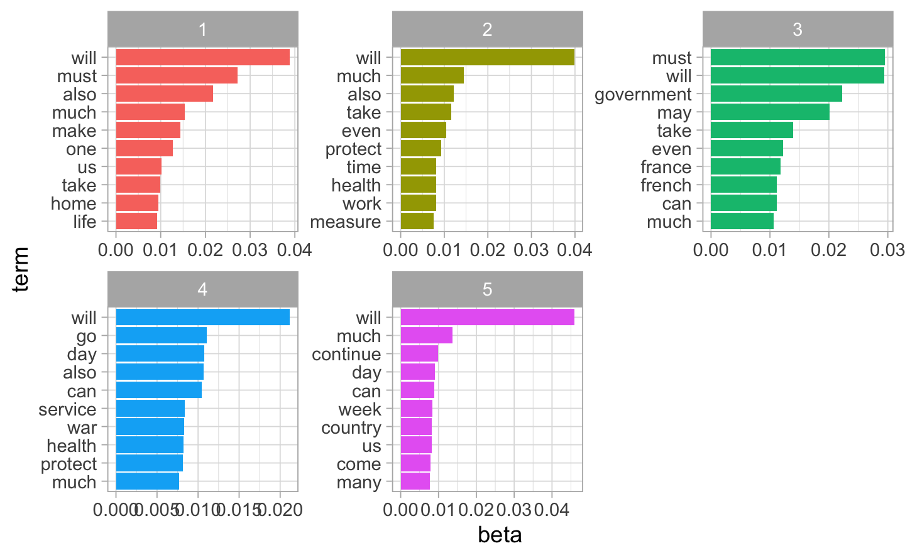
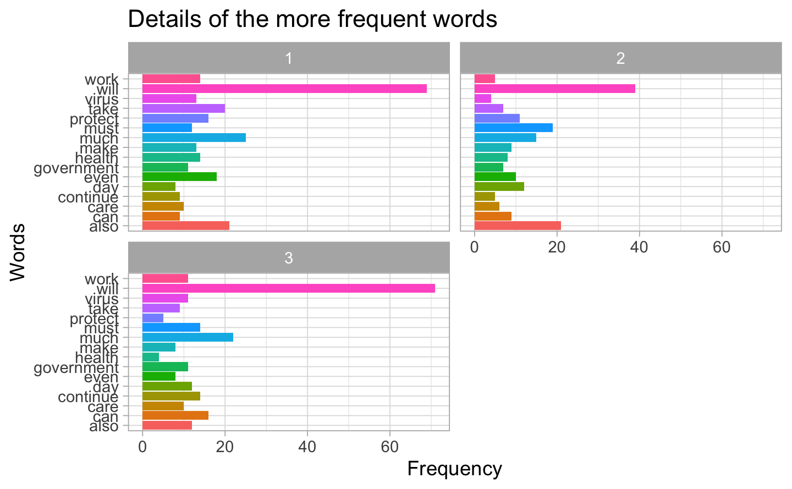

Chapter 4 Sentiment Analysis
4.1 Sentiment analysis with the sentiment library “nrc”
We use the “nrc” dictionary to start our sentiment analysis on the discourses of our two politicians. It is a dictionnary qualifying tokens by specific sentiments and by labelling them “negative” or “positive”. To do so, we will match the tokens of both corpuses with the dictionnary by applying an inner join. However, to use the inner_join function, we need a table object, what our objects are not primarily. We reload the data to create objects specific to this stage, boris_2 and macron_2, which are registered as tibble and allowing the use of the inner_join function. From the token list per document boris.tok, we join the corresponding qualifier in nrc using inner_joint:
library(dplyr)
library(tidyverse)
library(tidytext)
library(readr)
#####################################################################################################################################
########################################## Let's start with the Boris Johnson's discourses ######################################
#####################################################################################################################################
boris_2<-as.tibble(
c(boris9mars,
boris12mars,
boris16mars,
boris18mars,
boris19mars,
boris20mars,
boris22mars) ) # trick to get a "tbl_df","tbl","data.frame" compatible with the inner_join function
DocumentB <- c("Text1","Text2","Text3","Text4","Text5","Text6","Text7") # adding a column "Document" to have a landmark for the tokens
boris_2$Document <- DocumentB
boris_2 <- boris_2[,c(2,1)]
boris_2.tok <- unnest_tokens(boris_2,
output="word",
input="value",
to_lower=TRUE,
strip_punct=TRUE,
strip_numeric=TRUE) # unnest tokens of the table
get_sentiments("nrc") # load the sentiment library "nrc"| word | sentiment |
|---|---|
| abacus | trust |
| abandon | fear |
| abandon | negative |
| abandon | sadness |
| abandoned | anger |
| abandoned | fear |
| abandoned | negative |
| abandoned | sadness |
| abandonment | anger |
| abandonment | fear |
| abandonment | negative |
| abandonment | sadness |
| abandonment | surprise |
| abba | positive |
| abbot | trust |
| abduction | fear |
| abduction | negative |
| abduction | sadness |
| abduction | surprise |
| aberrant | negative |
| aberration | disgust |
| aberration | negative |
| abhor | anger |
| abhor | disgust |
| abhor | fear |
| abhor | negative |
| abhorrent | anger |
| abhorrent | disgust |
| abhorrent | fear |
| abhorrent | negative |
| ability | positive |
| abject | disgust |
| abject | negative |
| abnormal | disgust |
| abnormal | negative |
| abolish | anger |
| abolish | negative |
| abolition | negative |
| abominable | disgust |
| abominable | fear |
| abominable | negative |
| abomination | anger |
| abomination | disgust |
| abomination | fear |
| abomination | negative |
| abort | negative |
| abortion | disgust |
| abortion | fear |
| abortion | negative |
| abortion | sadness |
| abortive | negative |
| abortive | sadness |
| abovementioned | positive |
| abrasion | negative |
| abrogate | negative |
| abrupt | surprise |
| abscess | negative |
| abscess | sadness |
| absence | fear |
| absence | negative |
| absence | sadness |
| absent | negative |
| absent | sadness |
| absentee | negative |
| absentee | sadness |
| absenteeism | negative |
| absolute | positive |
| absolution | joy |
| absolution | positive |
| absolution | trust |
| absorbed | positive |
| absurd | negative |
| absurdity | negative |
| abundance | anticipation |
| abundance | disgust |
| abundance | joy |
| abundance | negative |
| abundance | positive |
| abundance | trust |
| abundant | joy |
| abundant | positive |
| abuse | anger |
| abuse | disgust |
| abuse | fear |
| abuse | negative |
| abuse | sadness |
| abysmal | negative |
| abysmal | sadness |
| abyss | fear |
| abyss | negative |
| abyss | sadness |
| academic | positive |
| academic | trust |
| academy | positive |
| accelerate | anticipation |
| acceptable | positive |
| acceptance | positive |
| accessible | positive |
| accident | fear |
| accident | negative |
| accident | sadness |
| accident | surprise |
| accidental | fear |
| accidental | negative |
| accidental | surprise |
| accidentally | surprise |
| accolade | anticipation |
| accolade | joy |
| accolade | positive |
| accolade | surprise |
| accolade | trust |
| accommodation | positive |
| accompaniment | anticipation |
| accompaniment | joy |
| accompaniment | positive |
| accompaniment | trust |
| accomplish | joy |
| accomplish | positive |
| accomplished | joy |
| accomplished | positive |
| accomplishment | positive |
| accord | positive |
| accord | trust |
| account | trust |
| accountability | positive |
| accountability | trust |
| accountable | positive |
| accountable | trust |
| accountant | trust |
| accounts | trust |
| accredited | positive |
| accredited | trust |
| accueil | positive |
| accurate | positive |
| accurate | trust |
| accursed | anger |
| accursed | fear |
| accursed | negative |
| accursed | sadness |
| accusation | anger |
| accusation | disgust |
| accusation | negative |
| accusative | negative |
| accused | anger |
| accused | fear |
| accused | negative |
| accuser | anger |
| accuser | fear |
| accuser | negative |
| accusing | anger |
| accusing | fear |
| accusing | negative |
| ace | positive |
| ache | negative |
| ache | sadness |
| achieve | joy |
| achieve | positive |
| achieve | trust |
| achievement | anticipation |
| achievement | joy |
| achievement | positive |
| achievement | trust |
| aching | negative |
| aching | sadness |
| acid | negative |
| acknowledgment | positive |
| acquire | positive |
| acquiring | anticipation |
| acquiring | positive |
| acrobat | fear |
| acrobat | joy |
| acrobat | positive |
| acrobat | trust |
| action | positive |
| actionable | anger |
| actionable | disgust |
| actionable | negative |
| actual | positive |
| acuity | positive |
| acumen | positive |
| adapt | positive |
| adaptable | positive |
| adder | anger |
| adder | disgust |
| adder | fear |
| adder | negative |
| adder | sadness |
| addiction | negative |
| addresses | anticipation |
| addresses | positive |
| adept | positive |
| adequacy | positive |
| adhering | trust |
| adipose | negative |
| adjudicate | fear |
| adjudicate | negative |
| adjunct | positive |
| administrative | trust |
| admirable | joy |
| admirable | positive |
| admirable | trust |
| admiral | positive |
| admiral | trust |
| admiration | joy |
| admiration | positive |
| admiration | trust |
| admire | positive |
| admire | trust |
| admirer | positive |
| admissible | positive |
| admissible | trust |
| admonition | fear |
| admonition | negative |
| adorable | joy |
| adorable | positive |
| adoration | joy |
| adoration | positive |
| adoration | trust |
| adore | anticipation |
| adore | joy |
| adore | positive |
| adore | trust |
| adrift | anticipation |
| adrift | fear |
| adrift | negative |
| adrift | sadness |
| adulterated | negative |
| adultery | disgust |
| adultery | negative |
| adultery | sadness |
| advance | anticipation |
| advance | fear |
| advance | joy |
| advance | positive |
| advance | surprise |
| advanced | positive |
| advancement | positive |
| advantage | positive |
| advantageous | positive |
| advent | anticipation |
| advent | joy |
| advent | positive |
| advent | trust |
| adventure | anticipation |
| adventure | positive |
| adventurous | positive |
| adversary | anger |
| adversary | negative |
| adverse | anger |
| adverse | disgust |
| adverse | fear |
| adverse | negative |
| adverse | sadness |
| adversity | anger |
| adversity | fear |
| adversity | negative |
| adversity | sadness |
| advice | trust |
| advisable | positive |
| advisable | trust |
| advise | positive |
| advise | trust |
| advised | trust |
| adviser | positive |
| adviser | trust |
| advocacy | anger |
| advocacy | anticipation |
| advocacy | joy |
| advocacy | positive |
| advocacy | trust |
| advocate | trust |
| aesthetic | positive |
| aesthetics | joy |
| aesthetics | positive |
| affable | positive |
| affection | joy |
| affection | positive |
| affection | trust |
| affiliated | positive |
| affirm | positive |
| affirm | trust |
| affirmation | positive |
| affirmative | positive |
| affirmatively | positive |
| affirmatively | trust |
| afflict | fear |
| afflict | negative |
| afflict | sadness |
| afflicted | negative |
| affliction | disgust |
| affliction | fear |
| affliction | negative |
| affliction | sadness |
| affluence | joy |
| affluence | positive |
| affluent | positive |
| afford | positive |
| affront | anger |
| affront | disgust |
| affront | fear |
| affront | negative |
| affront | sadness |
| affront | surprise |
| afraid | fear |
| afraid | negative |
| aftermath | anger |
| aftermath | disgust |
| aftermath | fear |
| aftermath | negative |
| aftermath | sadness |
| aftertaste | negative |
| aga | fear |
| aga | positive |
| aga | trust |
| aggravated | anger |
| aggravated | negative |
| aggravating | anger |
| aggravating | negative |
| aggravating | sadness |
| aggravation | anger |
| aggravation | disgust |
| aggravation | negative |
| aggression | anger |
| aggression | fear |
| aggression | negative |
| aggressive | anger |
| aggressive | fear |
| aggressive | negative |
| aggressor | anger |
| aggressor | fear |
| aggressor | negative |
| aghast | disgust |
| aghast | fear |
| aghast | negative |
| aghast | surprise |
| agile | positive |
| agility | positive |
| agitated | anger |
| agitated | negative |
| agitation | anger |
| agitation | negative |
| agonizing | fear |
| agonizing | negative |
| agony | anger |
| agony | fear |
| agony | negative |
| agony | sadness |
| agree | positive |
| agreeable | positive |
| agreeable | trust |
| agreed | positive |
| agreed | trust |
| agreeing | positive |
| agreeing | trust |
| agreement | positive |
| agreement | trust |
| agriculture | positive |
| aground | negative |
| ahead | positive |
| aid | positive |
| aiding | positive |
| ail | negative |
| ail | sadness |
| ailing | fear |
| ailing | negative |
| ailing | sadness |
| aimless | negative |
| airport | anticipation |
| airs | disgust |
| airs | negative |
| akin | trust |
| alabaster | positive |
| alarm | fear |
| alarm | negative |
| alarm | surprise |
| alarming | fear |
| alarming | negative |
| alarming | surprise |
| alb | trust |
| alcoholism | anger |
| alcoholism | disgust |
| alcoholism | fear |
| alcoholism | negative |
| alcoholism | sadness |
| alertness | anticipation |
| alertness | fear |
| alertness | positive |
| alertness | surprise |
| alerts | anticipation |
| alerts | fear |
| alerts | surprise |
| alien | disgust |
| alien | fear |
| alien | negative |
| alienate | anger |
| alienate | disgust |
| alienate | negative |
| alienated | negative |
| alienated | sadness |
| alienation | anger |
| alienation | disgust |
| alienation | fear |
| alienation | negative |
| alienation | sadness |
| alimentation | positive |
| alimony | negative |
| alive | anticipation |
| alive | joy |
| alive | positive |
| alive | trust |
| allay | positive |
| allegation | anger |
| allegation | negative |
| allege | negative |
| allegiance | positive |
| allegiance | trust |
| allegro | positive |
| alleviate | positive |
| alleviation | positive |
| alliance | trust |
| allied | positive |
| allied | trust |
| allowable | positive |
| allure | anticipation |
| allure | joy |
| allure | positive |
| allure | surprise |
| alluring | positive |
| ally | positive |
| ally | trust |
| almighty | positive |
| aloha | anticipation |
| aloha | joy |
| aloha | positive |
| aloof | negative |
| altercation | anger |
| altercation | negative |
| amaze | surprise |
| amazingly | joy |
| amazingly | positive |
| amazingly | surprise |
| ambassador | positive |
| ambassador | trust |
| ambiguous | negative |
| ambition | anticipation |
| ambition | joy |
| ambition | positive |
| ambition | trust |
| ambulance | fear |
| ambulance | trust |
| ambush | anger |
| ambush | fear |
| ambush | negative |
| ambush | surprise |
| ameliorate | positive |
| amen | joy |
| amen | positive |
| amen | trust |
| amenable | positive |
| amend | positive |
| amends | positive |
| amenity | positive |
| amiable | positive |
| amicable | joy |
| amicable | positive |
| ammonia | disgust |
| amnesia | negative |
| amnesty | joy |
| amnesty | positive |
| amortization | trust |
| amour | anticipation |
| amour | joy |
| amour | positive |
| amour | trust |
| amphetamines | disgust |
| amphetamines | negative |
| amuse | joy |
| amuse | positive |
| amused | joy |
| amused | positive |
| amusement | joy |
| amusement | positive |
| amusing | joy |
| amusing | positive |
| anaconda | disgust |
| anaconda | fear |
| anaconda | negative |
| anal | negative |
| analyst | anticipation |
| analyst | positive |
| analyst | trust |
| anarchism | anger |
| anarchism | fear |
| anarchism | negative |
| anarchist | anger |
| anarchist | fear |
| anarchist | negative |
| anarchy | anger |
| anarchy | fear |
| anarchy | negative |
| anathema | anger |
| anathema | disgust |
| anathema | fear |
| anathema | negative |
| anathema | sadness |
| ancestral | trust |
| anchor | positive |
| anchorage | positive |
| anchorage | sadness |
| ancient | negative |
| angel | anticipation |
| angel | joy |
| angel | positive |
| angel | surprise |
| angel | trust |
| angelic | joy |
| angelic | positive |
| angelic | trust |
| anger | anger |
| anger | negative |
| angina | fear |
| angina | negative |
| angling | anticipation |
| angling | negative |
| angry | anger |
| angry | disgust |
| angry | negative |
| anguish | anger |
| anguish | fear |
| anguish | negative |
| anguish | sadness |
| animate | positive |
| animated | joy |
| animated | positive |
| animosity | anger |
| animosity | disgust |
| animosity | fear |
| animosity | negative |
| animosity | sadness |
| animus | anger |
| animus | negative |
| annihilate | anger |
| annihilate | fear |
| annihilate | negative |
| annihilated | anger |
| annihilated | fear |
| annihilated | negative |
| annihilated | sadness |
| annihilation | anger |
| annihilation | fear |
| annihilation | negative |
| annihilation | sadness |
| announcement | anticipation |
| annoy | anger |
| annoy | disgust |
| annoy | negative |
| annoyance | anger |
| annoyance | disgust |
| annoyance | negative |
| annoying | anger |
| annoying | negative |
| annul | negative |
| annulment | negative |
| annulment | sadness |
| anomaly | fear |
| anomaly | negative |
| anomaly | surprise |
| anonymous | negative |
| answerable | trust |
| antagonism | anger |
| antagonism | negative |
| antagonist | anger |
| antagonist | negative |
| antagonistic | anger |
| antagonistic | disgust |
| antagonistic | negative |
| anthrax | disgust |
| anthrax | fear |
| anthrax | negative |
| anthrax | sadness |
| antibiotics | positive |
| antichrist | anger |
| antichrist | disgust |
| antichrist | fear |
| antichrist | negative |
| anticipation | anticipation |
| anticipatory | anticipation |
| antidote | anticipation |
| antidote | positive |
| antidote | trust |
| antifungal | positive |
| antifungal | trust |
| antipathy | anger |
| antipathy | disgust |
| antipathy | negative |
| antiquated | negative |
| antique | positive |
| antiseptic | positive |
| antiseptic | trust |
| antisocial | anger |
| antisocial | disgust |
| antisocial | fear |
| antisocial | negative |
| antisocial | sadness |
| antithesis | anger |
| antithesis | negative |
| anxiety | anger |
| anxiety | anticipation |
| anxiety | fear |
| anxiety | negative |
| anxiety | sadness |
| anxious | anticipation |
| anxious | fear |
| anxious | negative |
| apache | fear |
| apache | negative |
| apathetic | negative |
| apathetic | sadness |
| apathy | negative |
| apathy | sadness |
| aphid | disgust |
| aphid | negative |
| aplomb | positive |
| apologetic | positive |
| apologetic | trust |
| apologize | positive |
| apologize | sadness |
| apologize | trust |
| apology | positive |
| apostle | positive |
| apostle | trust |
| apostolic | trust |
| appalling | disgust |
| appalling | fear |
| appalling | negative |
| apparition | fear |
| apparition | surprise |
| appeal | anticipation |
| appendicitis | fear |
| appendicitis | negative |
| appendicitis | sadness |
| applause | joy |
| applause | positive |
| applause | surprise |
| applause | trust |
| applicant | anticipation |
| appreciation | joy |
| appreciation | positive |
| appreciation | trust |
| apprehend | fear |
| apprehension | fear |
| apprehension | negative |
| apprehensive | anticipation |
| apprehensive | fear |
| apprehensive | negative |
| apprentice | trust |
| approaching | anticipation |
| approbation | positive |
| approbation | trust |
| appropriation | negative |
| approval | positive |
| approve | joy |
| approve | positive |
| approve | trust |
| approving | positive |
| apt | positive |
| aptitude | positive |
| arbiter | trust |
| arbitration | anticipation |
| arbitrator | trust |
| archaeology | anticipation |
| archaeology | positive |
| archaic | negative |
| architecture | trust |
| ardent | anticipation |
| ardent | joy |
| ardent | positive |
| ardor | positive |
| arduous | negative |
| argue | anger |
| argue | negative |
| argument | anger |
| argument | negative |
| argumentation | anger |
| argumentative | negative |
| arguments | anger |
| arid | negative |
| arid | sadness |
| aristocracy | positive |
| aristocratic | positive |
| armament | anger |
| armament | fear |
| armaments | fear |
| armaments | negative |
| armed | anger |
| armed | fear |
| armed | negative |
| armed | positive |
| armor | fear |
| armor | positive |
| armor | trust |
| armored | fear |
| armory | trust |
| aroma | positive |
| arouse | anticipation |
| arouse | positive |
| arraignment | anger |
| arraignment | fear |
| arraignment | negative |
| arraignment | sadness |
| array | positive |
| arrears | negative |
| arrest | negative |
| arrival | anticipation |
| arrive | anticipation |
| arrogance | negative |
| arrogant | anger |
| arrogant | disgust |
| arrogant | negative |
| arsenic | disgust |
| arsenic | fear |
| arsenic | negative |
| arsenic | sadness |
| arson | anger |
| arson | fear |
| arson | negative |
| art | anticipation |
| art | joy |
| art | positive |
| art | sadness |
| art | surprise |
| articulate | positive |
| articulation | positive |
| artillery | fear |
| artillery | negative |
| artisan | positive |
| artiste | positive |
| artistic | positive |
| ascendancy | positive |
| ascent | positive |
| ash | negative |
| ashamed | disgust |
| ashamed | negative |
| ashamed | sadness |
| ashes | negative |
| ashes | sadness |
| asp | fear |
| aspiration | anticipation |
| aspiration | joy |
| aspiration | positive |
| aspiration | surprise |
| aspiration | trust |
| aspire | anticipation |
| aspire | joy |
| aspire | positive |
| aspiring | anticipation |
| aspiring | joy |
| aspiring | positive |
| aspiring | trust |
| ass | negative |
| assail | anger |
| assail | fear |
| assail | negative |
| assail | surprise |
| assailant | anger |
| assailant | fear |
| assailant | negative |
| assailant | sadness |
| assassin | anger |
| assassin | fear |
| assassin | negative |
| assassin | sadness |
| assassinate | anger |
| assassinate | fear |
| assassinate | negative |
| assassination | anger |
| assassination | fear |
| assassination | negative |
| assassination | sadness |
| assault | anger |
| assault | fear |
| assault | negative |
| assembly | positive |
| assembly | trust |
| assent | positive |
| asserting | positive |
| asserting | trust |
| assessment | surprise |
| assessment | trust |
| assessor | trust |
| assets | positive |
| asshole | anger |
| asshole | disgust |
| asshole | negative |
| assignee | trust |
| assist | positive |
| assist | trust |
| assistance | positive |
| associate | positive |
| associate | trust |
| association | trust |
| assuage | positive |
| assurance | positive |
| assurance | trust |
| assure | trust |
| assured | positive |
| assured | trust |
| assuredly | trust |
| astonishingly | positive |
| astonishingly | surprise |
| astonishment | joy |
| astonishment | positive |
| astonishment | surprise |
| astray | fear |
| astray | negative |
| astringent | negative |
| astrologer | anticipation |
| astrologer | positive |
| astronaut | positive |
| astronomer | anticipation |
| astronomer | positive |
| astute | positive |
| asylum | fear |
| asylum | negative |
| asymmetry | disgust |
| atheism | negative |
| atherosclerosis | fear |
| atherosclerosis | negative |
| atherosclerosis | sadness |
| athlete | positive |
| athletic | positive |
| atom | positive |
| atone | anticipation |
| atone | joy |
| atone | positive |
| atone | trust |
| atonement | positive |
| atrocious | anger |
| atrocious | disgust |
| atrocious | negative |
| atrocity | anger |
| atrocity | disgust |
| atrocity | fear |
| atrocity | negative |
| atrocity | sadness |
| atrophy | disgust |
| atrophy | fear |
| atrophy | negative |
| atrophy | sadness |
| attachment | positive |
| attack | anger |
| attack | fear |
| attack | negative |
| attacking | anger |
| attacking | disgust |
| attacking | fear |
| attacking | negative |
| attacking | sadness |
| attacking | surprise |
| attainable | anticipation |
| attainable | positive |
| attainment | positive |
| attempt | anticipation |
| attendance | anticipation |
| attendant | positive |
| attendant | trust |
| attention | positive |
| attentive | positive |
| attentive | trust |
| attenuated | negative |
| attenuation | negative |
| attenuation | sadness |
| attest | positive |
| attest | trust |
| attestation | trust |
| attorney | anger |
| attorney | fear |
| attorney | positive |
| attorney | trust |
| attraction | positive |
| attractiveness | positive |
| auction | anticipation |
| audacity | negative |
| audience | anticipation |
| auditor | fear |
| auditor | trust |
| augment | positive |
| august | positive |
| aunt | positive |
| aunt | trust |
| aura | positive |
| auspicious | anticipation |
| auspicious | joy |
| auspicious | positive |
| austere | fear |
| austere | negative |
| austere | sadness |
| austerity | negative |
| authentic | joy |
| authentic | positive |
| authentic | trust |
| authenticate | trust |
| authentication | trust |
| authenticity | positive |
| authenticity | trust |
| author | positive |
| author | trust |
| authoritative | positive |
| authoritative | trust |
| authority | positive |
| authority | trust |
| authorization | positive |
| authorization | trust |
| authorize | trust |
| authorized | positive |
| autocratic | negative |
| automatic | trust |
| autopsy | disgust |
| autopsy | fear |
| autopsy | negative |
| autopsy | sadness |
| avalanche | fear |
| avalanche | negative |
| avalanche | sadness |
| avalanche | surprise |
| avarice | anger |
| avarice | disgust |
| avarice | negative |
| avatar | positive |
| avenger | anger |
| avenger | negative |
| averse | anger |
| averse | disgust |
| averse | fear |
| averse | negative |
| aversion | anger |
| aversion | disgust |
| aversion | fear |
| aversion | negative |
| avoid | fear |
| avoid | negative |
| avoidance | fear |
| avoidance | negative |
| avoiding | fear |
| await | anticipation |
| award | anticipation |
| award | joy |
| award | positive |
| award | surprise |
| award | trust |
| awful | anger |
| awful | disgust |
| awful | fear |
| awful | negative |
| awful | sadness |
| awkwardness | disgust |
| awkwardness | negative |
| awry | negative |
| axiom | trust |
| axiomatic | trust |
| ay | positive |
| aye | positive |
| babble | negative |
| babbling | negative |
| baboon | disgust |
| baboon | negative |
| baby | joy |
| baby | positive |
| babysitter | trust |
| baccalaureate | positive |
| backbone | anger |
| backbone | positive |
| backbone | trust |
| backer | trust |
| backward | negative |
| backwards | disgust |
| backwards | negative |
| backwater | negative |
| backwater | sadness |
| bacteria | disgust |
| bacteria | fear |
| bacteria | negative |
| bacteria | sadness |
| bacterium | disgust |
| bacterium | fear |
| bacterium | negative |
| bad | anger |
| bad | disgust |
| bad | fear |
| bad | negative |
| bad | sadness |
| badge | trust |
| badger | anger |
| badger | negative |
| badly | negative |
| badly | sadness |
| badness | anger |
| badness | disgust |
| badness | fear |
| badness | negative |
| bailiff | fear |
| bailiff | negative |
| bailiff | trust |
| bait | fear |
| bait | negative |
| bait | trust |
| balance | positive |
| balanced | positive |
| bale | fear |
| bale | negative |
| balk | negative |
| ballad | positive |
| ballet | positive |
| ballot | anticipation |
| ballot | positive |
| ballot | trust |
| balm | anticipation |
| balm | joy |
| balm | negative |
| balm | positive |
| balsam | positive |
| ban | negative |
| bandit | negative |
| bane | anger |
| bane | disgust |
| bane | fear |
| bane | negative |
| bang | anger |
| bang | disgust |
| bang | fear |
| bang | negative |
| bang | sadness |
| bang | surprise |
| banger | anger |
| banger | anticipation |
| banger | fear |
| banger | negative |
| banger | surprise |
| banish | anger |
| banish | disgust |
| banish | fear |
| banish | negative |
| banish | sadness |
| banished | anger |
| banished | fear |
| banished | negative |
| banished | sadness |
| banishment | anger |
| banishment | disgust |
| banishment | negative |
| banishment | sadness |
| bank | trust |
| banker | trust |
| bankrupt | fear |
| bankrupt | negative |
| bankrupt | sadness |
| bankruptcy | anger |
| bankruptcy | disgust |
| bankruptcy | fear |
| bankruptcy | negative |
| bankruptcy | sadness |
| banquet | anticipation |
| banquet | joy |
| banquet | positive |
| banshee | anger |
| banshee | disgust |
| banshee | fear |
| banshee | negative |
| banshee | sadness |
| baptism | positive |
| baptismal | joy |
| baptismal | positive |
| barb | anger |
| barb | negative |
| barbarian | fear |
| barbarian | negative |
| barbaric | anger |
| barbaric | disgust |
| barbaric | fear |
| barbaric | negative |
| barbarism | negative |
| bard | positive |
| barf | disgust |
| bargain | positive |
| bargain | trust |
| bark | anger |
| bark | negative |
| barred | negative |
| barren | negative |
| barren | sadness |
| barricade | fear |
| barricade | negative |
| barrier | anger |
| barrier | negative |
| barrow | disgust |
| bartender | trust |
| barter | trust |
| base | trust |
| baseless | negative |
| basketball | anticipation |
| basketball | joy |
| basketball | positive |
| bastard | disgust |
| bastard | negative |
| bastard | sadness |
| bastion | anger |
| bastion | positive |
| bath | positive |
| battalion | anger |
| batter | anger |
| batter | fear |
| batter | negative |
| battered | fear |
| battered | negative |
| battered | sadness |
| battery | anger |
| battery | negative |
| battle | anger |
| battle | negative |
| battled | anger |
| battled | fear |
| battled | negative |
| battled | sadness |
| battlefield | fear |
| battlefield | negative |
| bawdy | negative |
| bayonet | anger |
| bayonet | fear |
| bayonet | negative |
| beach | joy |
| beam | joy |
| beam | positive |
| beaming | anticipation |
| beaming | joy |
| beaming | positive |
| bear | anger |
| bear | fear |
| bearer | negative |
| bearish | anger |
| bearish | fear |
| beast | anger |
| beast | fear |
| beast | negative |
| beastly | disgust |
| beastly | fear |
| beastly | negative |
| beating | anger |
| beating | fear |
| beating | negative |
| beating | sadness |
| beautification | joy |
| beautification | positive |
| beautification | trust |
| beautiful | joy |
| beautiful | positive |
| beautify | joy |
| beautify | positive |
| beauty | joy |
| beauty | positive |
| bedrock | positive |
| bedrock | trust |
| bee | anger |
| bee | fear |
| beer | joy |
| beer | positive |
| befall | negative |
| befitting | positive |
| befriend | joy |
| befriend | positive |
| befriend | trust |
| beg | negative |
| beg | sadness |
| beggar | negative |
| beggar | sadness |
| begging | negative |
| begun | anticipation |
| behemoth | fear |
| behemoth | negative |
| beholden | negative |
| belated | negative |
| believed | trust |
| believer | trust |
| believing | positive |
| believing | trust |
| belittle | anger |
| belittle | disgust |
| belittle | fear |
| belittle | negative |
| belittle | sadness |
| belligerent | anger |
| belligerent | fear |
| belligerent | negative |
| bellows | anger |
| belt | anger |
| belt | fear |
| belt | negative |
| bender | negative |
| benefactor | positive |
| benefactor | trust |
| beneficial | positive |
| benefit | positive |
| benevolence | joy |
| benevolence | positive |
| benevolence | trust |
| benign | joy |
| benign | positive |
| bequest | trust |
| bereaved | negative |
| bereaved | sadness |
| bereavement | negative |
| bereavement | sadness |
| bereft | negative |
| berserk | anger |
| berserk | negative |
| berth | positive |
| bestial | disgust |
| bestial | fear |
| bestial | negative |
| betray | anger |
| betray | disgust |
| betray | negative |
| betray | sadness |
| betray | surprise |
| betrayal | anger |
| betrayal | disgust |
| betrayal | negative |
| betrayal | sadness |
| betrothed | anticipation |
| betrothed | joy |
| betrothed | positive |
| betrothed | trust |
| betterment | positive |
| beverage | positive |
| beware | anticipation |
| beware | fear |
| beware | negative |
| bewildered | fear |
| bewildered | negative |
| bewildered | surprise |
| bewilderment | fear |
| bewilderment | surprise |
| bias | anger |
| bias | negative |
| biased | negative |
| biblical | positive |
| bickering | anger |
| bickering | disgust |
| bickering | negative |
| biennial | anticipation |
| bier | fear |
| bier | negative |
| bier | sadness |
| bigot | anger |
| bigot | disgust |
| bigot | fear |
| bigot | negative |
| bigoted | anger |
| bigoted | disgust |
| bigoted | fear |
| bigoted | negative |
| bigoted | sadness |
| bile | anger |
| bile | disgust |
| bile | negative |
| bilingual | positive |
| biopsy | fear |
| biopsy | negative |
| birch | anger |
| birch | disgust |
| birch | fear |
| birch | negative |
| birth | anticipation |
| birth | fear |
| birth | joy |
| birth | positive |
| birth | trust |
| birthday | anticipation |
| birthday | joy |
| birthday | positive |
| birthday | surprise |
| birthplace | anger |
| birthplace | negative |
| bitch | anger |
| bitch | disgust |
| bitch | fear |
| bitch | negative |
| bitch | sadness |
| bite | negative |
| bitterly | anger |
| bitterly | disgust |
| bitterly | negative |
| bitterly | sadness |
| bitterness | anger |
| bitterness | disgust |
| bitterness | negative |
| bitterness | sadness |
| bizarre | negative |
| bizarre | surprise |
| black | negative |
| black | sadness |
| blackjack | negative |
| blackmail | anger |
| blackmail | fear |
| blackmail | negative |
| blackness | fear |
| blackness | negative |
| blackness | sadness |
| blame | anger |
| blame | disgust |
| blame | negative |
| blameless | positive |
| bland | negative |
| blanket | trust |
| blasphemous | anger |
| blasphemous | disgust |
| blasphemous | negative |
| blasphemy | anger |
| blasphemy | negative |
| blast | anger |
| blast | fear |
| blast | negative |
| blast | surprise |
| blatant | anger |
| blatant | disgust |
| blatant | negative |
| blather | negative |
| blaze | anger |
| blaze | negative |
| bleak | negative |
| bleak | sadness |
| bleeding | disgust |
| bleeding | fear |
| bleeding | negative |
| bleeding | sadness |
| blemish | anger |
| blemish | disgust |
| blemish | fear |
| blemish | negative |
| blemish | sadness |
| bless | anticipation |
| bless | joy |
| bless | positive |
| bless | trust |
| blessed | joy |
| blessed | positive |
| blessing | anticipation |
| blessing | joy |
| blessing | positive |
| blessing | trust |
| blessings | anticipation |
| blessings | joy |
| blessings | positive |
| blessings | surprise |
| blessings | trust |
| blight | disgust |
| blight | fear |
| blight | negative |
| blight | sadness |
| blighted | disgust |
| blighted | negative |
| blighted | sadness |
| blind | negative |
| blinded | negative |
| blindfold | anticipation |
| blindfold | fear |
| blindfold | surprise |
| blindly | negative |
| blindly | sadness |
| blindness | negative |
| blindness | sadness |
| bliss | joy |
| bliss | positive |
| blissful | joy |
| blissful | positive |
| blister | disgust |
| blister | negative |
| blitz | surprise |
| bloated | disgust |
| bloated | negative |
| blob | disgust |
| blob | fear |
| blob | negative |
| blockade | anger |
| blockade | fear |
| blockade | negative |
| blockade | sadness |
| bloodless | positive |
| bloodshed | anger |
| bloodshed | disgust |
| bloodshed | fear |
| bloodshed | negative |
| bloodshed | sadness |
| bloodshed | surprise |
| bloodthirsty | anger |
| bloodthirsty | disgust |
| bloodthirsty | fear |
| bloodthirsty | negative |
| bloody | anger |
| bloody | disgust |
| bloody | fear |
| bloody | negative |
| bloody | sadness |
| bloom | anticipation |
| bloom | joy |
| bloom | positive |
| bloom | trust |
| blossom | joy |
| blossom | positive |
| blot | negative |
| blower | negative |
| blowout | negative |
| blue | sadness |
| blues | fear |
| blues | negative |
| blues | sadness |
| bluff | negative |
| blunder | disgust |
| blunder | negative |
| blunder | sadness |
| blur | negative |
| blurred | negative |
| blush | negative |
| board | anticipation |
| boast | negative |
| boast | positive |
| boasting | negative |
| bodyguard | positive |
| bodyguard | trust |
| bog | negative |
| bogus | anger |
| bogus | disgust |
| bogus | negative |
| boil | disgust |
| boil | negative |
| boilerplate | negative |
| boisterous | anger |
| boisterous | anticipation |
| boisterous | joy |
| boisterous | negative |
| boisterous | positive |
| bold | positive |
| boldness | positive |
| bolster | positive |
| bomb | anger |
| bomb | fear |
| bomb | negative |
| bomb | sadness |
| bomb | surprise |
| bombard | anger |
| bombard | fear |
| bombard | negative |
| bombardment | anger |
| bombardment | fear |
| bombardment | negative |
| bombed | disgust |
| bombed | negative |
| bomber | fear |
| bomber | sadness |
| bonanza | joy |
| bonanza | positive |
| bondage | fear |
| bondage | negative |
| bondage | sadness |
| bonds | negative |
| bonne | positive |
| bonus | anticipation |
| bonus | joy |
| bonus | positive |
| bonus | surprise |
| boo | negative |
| booby | negative |
| bookish | positive |
| bookshop | positive |
| bookworm | negative |
| bookworm | positive |
| boomerang | anticipation |
| boomerang | trust |
| boon | positive |
| booze | negative |
| bore | negative |
| boredom | negative |
| boredom | sadness |
| boring | negative |
| borrower | negative |
| bother | negative |
| bothering | anger |
| bothering | negative |
| bothering | sadness |
| bottom | negative |
| bottom | sadness |
| bottomless | fear |
| bound | negative |
| bountiful | anticipation |
| bountiful | joy |
| bountiful | positive |
| bounty | anticipation |
| bounty | joy |
| bounty | positive |
| bounty | trust |
| bouquet | joy |
| bouquet | positive |
| bouquet | trust |
| bout | anger |
| bout | negative |
| bovine | disgust |
| bovine | negative |
| bowels | disgust |
| boxing | anger |
| boy | disgust |
| boy | negative |
| boycott | negative |
| brag | negative |
| brains | positive |
| bran | disgust |
| brandy | negative |
| bravado | negative |
| bravery | positive |
| brawl | anger |
| brawl | disgust |
| brawl | fear |
| brawl | negative |
| brazen | anger |
| brazen | negative |
| breach | negative |
| break | surprise |
| breakdown | negative |
| breakfast | positive |
| breakneck | negative |
| breakup | negative |
| breakup | sadness |
| bribe | negative |
| bribery | disgust |
| bribery | negative |
| bridal | anticipation |
| bridal | joy |
| bridal | positive |
| bridal | trust |
| bride | anticipation |
| bride | joy |
| bride | positive |
| bride | trust |
| bridegroom | anticipation |
| bridegroom | joy |
| bridegroom | positive |
| bridegroom | trust |
| bridesmaid | joy |
| bridesmaid | positive |
| bridesmaid | trust |
| brigade | fear |
| brigade | negative |
| brighten | joy |
| brighten | positive |
| brighten | surprise |
| brighten | trust |
| brightness | positive |
| brilliant | anticipation |
| brilliant | joy |
| brilliant | positive |
| brilliant | trust |
| brimstone | anger |
| brimstone | fear |
| brimstone | negative |
| bristle | negative |
| broadside | anticipation |
| broadside | negative |
| brocade | positive |
| broil | anger |
| broil | negative |
| broke | fear |
| broke | negative |
| broke | sadness |
| broken | anger |
| broken | fear |
| broken | negative |
| broken | sadness |
| brothel | disgust |
| brothel | negative |
| brother | positive |
| brother | trust |
| brotherhood | positive |
| brotherhood | trust |
| brotherly | anticipation |
| brotherly | joy |
| brotherly | positive |
| brotherly | trust |
| bruise | anticipation |
| bruise | negative |
| brunt | anger |
| brunt | negative |
| brutal | anger |
| brutal | fear |
| brutal | negative |
| brutality | anger |
| brutality | fear |
| brutality | negative |
| brute | anger |
| brute | fear |
| brute | negative |
| brute | sadness |
| buck | fear |
| buck | negative |
| buck | positive |
| buck | surprise |
| buddy | anticipation |
| buddy | joy |
| buddy | positive |
| buddy | trust |
| budget | trust |
| buffet | anger |
| buffet | negative |
| bug | disgust |
| bug | fear |
| bug | negative |
| bugaboo | anger |
| bugaboo | fear |
| bugaboo | negative |
| bugaboo | sadness |
| bugle | anticipation |
| build | positive |
| building | positive |
| bulbous | negative |
| bulldog | positive |
| bulletproof | positive |
| bully | anger |
| bully | fear |
| bully | negative |
| bum | disgust |
| bum | negative |
| bum | sadness |
| bummer | anger |
| bummer | disgust |
| bummer | negative |
| bunker | fear |
| buoy | positive |
| burdensome | fear |
| burdensome | negative |
| burdensome | sadness |
| bureaucracy | negative |
| bureaucracy | trust |
| bureaucrat | disgust |
| bureaucrat | negative |
| burglar | disgust |
| burglar | fear |
| burglar | negative |
| burglary | negative |
| burial | anger |
| burial | fear |
| burial | negative |
| burial | sadness |
| buried | fear |
| buried | negative |
| buried | sadness |
| burke | anger |
| burke | disgust |
| burke | fear |
| burke | negative |
| burke | sadness |
| burlesque | surprise |
| burnt | disgust |
| burnt | negative |
| bursary | trust |
| bury | sadness |
| buss | joy |
| buss | positive |
| busted | anger |
| busted | fear |
| busted | negative |
| butcher | anger |
| butcher | disgust |
| butcher | fear |
| butcher | negative |
| butler | positive |
| butler | trust |
| butt | negative |
| buttery | positive |
| buxom | positive |
| buzz | anticipation |
| buzz | fear |
| buzz | positive |
| buzzed | negative |
| bye | anticipation |
| bylaw | trust |
| cab | positive |
| cabal | fear |
| cabal | negative |
| cabinet | positive |
| cabinet | trust |
| cable | surprise |
| cacophony | anger |
| cacophony | disgust |
| cacophony | negative |
| cad | anger |
| cad | disgust |
| cad | negative |
| cadaver | disgust |
| cadaver | fear |
| cadaver | negative |
| cadaver | sadness |
| cadaver | surprise |
| cafe | positive |
| cage | negative |
| cage | sadness |
| calamity | sadness |
| calculating | negative |
| calculation | anticipation |
| calculator | positive |
| calculator | trust |
| calf | joy |
| calf | positive |
| calf | trust |
| callous | anger |
| callous | disgust |
| callous | negative |
| calls | anticipation |
| calls | negative |
| calls | trust |
| calm | positive |
| camouflage | surprise |
| camouflaged | surprise |
| campaigning | anger |
| campaigning | fear |
| campaigning | negative |
| canary | positive |
| cancel | negative |
| cancel | sadness |
| cancer | anger |
| cancer | disgust |
| cancer | fear |
| cancer | negative |
| cancer | sadness |
| candid | anticipation |
| candid | joy |
| candid | positive |
| candid | surprise |
| candid | trust |
| candidate | positive |
| candied | positive |
| cane | anger |
| cane | fear |
| canker | anger |
| canker | disgust |
| canker | negative |
| cannibal | disgust |
| cannibal | fear |
| cannibal | negative |
| cannibalism | disgust |
| cannibalism | negative |
| cannon | anger |
| cannon | fear |
| cannon | negative |
| canons | trust |
| cap | anticipation |
| cap | trust |
| capitalist | positive |
| captain | positive |
| captivate | anticipation |
| captivate | joy |
| captivate | positive |
| captivate | surprise |
| captivate | trust |
| captivating | positive |
| captive | fear |
| captive | negative |
| captive | sadness |
| captivity | negative |
| captivity | sadness |
| captor | fear |
| captor | negative |
| capture | negative |
| carcass | disgust |
| carcass | fear |
| carcass | negative |
| carcass | sadness |
| carcinoma | fear |
| carcinoma | negative |
| carcinoma | sadness |
| cardiomyopathy | fear |
| cardiomyopathy | negative |
| cardiomyopathy | sadness |
| career | anticipation |
| career | positive |
| careful | positive |
| carefully | positive |
| carelessness | anger |
| carelessness | disgust |
| carelessness | negative |
| caress | positive |
| caretaker | positive |
| caretaker | trust |
| caricature | negative |
| caries | disgust |
| caries | negative |
| carnage | anger |
| carnage | disgust |
| carnage | fear |
| carnage | negative |
| carnage | sadness |
| carnage | surprise |
| carnal | negative |
| carnivorous | fear |
| carnivorous | negative |
| carol | joy |
| carol | positive |
| carol | trust |
| cartel | negative |
| cartridge | fear |
| cascade | positive |
| case | fear |
| case | negative |
| case | sadness |
| cash | anger |
| cash | anticipation |
| cash | fear |
| cash | joy |
| cash | positive |
| cash | trust |
| cashier | trust |
| casket | fear |
| casket | negative |
| casket | sadness |
| caste | negative |
| casualty | anger |
| casualty | fear |
| casualty | negative |
| casualty | sadness |
| cataract | anticipation |
| cataract | fear |
| cataract | negative |
| cataract | sadness |
| catastrophe | anger |
| catastrophe | disgust |
| catastrophe | fear |
| catastrophe | negative |
| catastrophe | sadness |
| catastrophe | surprise |
| catch | surprise |
| catechism | disgust |
| categorical | positive |
| cater | positive |
| cathartic | positive |
| cathedral | joy |
| cathedral | positive |
| cathedral | trust |
| catheter | negative |
| caution | anger |
| caution | anticipation |
| caution | fear |
| caution | negative |
| cautionary | fear |
| cautious | anticipation |
| cautious | fear |
| cautious | positive |
| cautious | trust |
| cautiously | fear |
| cautiously | positive |
| cede | negative |
| celebrated | anticipation |
| celebrated | joy |
| celebrated | positive |
| celebrating | anticipation |
| celebrating | joy |
| celebrating | positive |
| celebration | anticipation |
| celebration | joy |
| celebration | positive |
| celebration | surprise |
| celebration | trust |
| celebrity | anger |
| celebrity | anticipation |
| celebrity | disgust |
| celebrity | joy |
| celebrity | negative |
| celebrity | positive |
| celebrity | surprise |
| celebrity | trust |
| celestial | anticipation |
| celestial | joy |
| celestial | positive |
| cement | anticipation |
| cement | trust |
| cemetery | fear |
| cemetery | negative |
| cemetery | sadness |
| censor | anger |
| censor | disgust |
| censor | fear |
| censor | negative |
| censor | trust |
| censure | negative |
| center | positive |
| center | trust |
| centurion | positive |
| cerebral | positive |
| ceremony | joy |
| ceremony | positive |
| ceremony | surprise |
| certainty | positive |
| certify | trust |
| cess | disgust |
| cess | negative |
| cessation | negative |
| chaff | anger |
| chaff | fear |
| chaff | negative |
| chafing | negative |
| chagrin | disgust |
| chagrin | negative |
| chagrin | sadness |
| chairman | positive |
| chairman | trust |
| chairwoman | positive |
| chairwoman | trust |
| challenge | anger |
| challenge | fear |
| challenge | negative |
| champion | anticipation |
| champion | joy |
| champion | positive |
| champion | trust |
| chance | surprise |
| chancellor | trust |
| change | fear |
| changeable | anticipation |
| changeable | surprise |
| chant | anger |
| chant | anticipation |
| chant | joy |
| chant | positive |
| chant | surprise |
| chaos | anger |
| chaos | fear |
| chaos | negative |
| chaos | sadness |
| chaotic | anger |
| chaotic | negative |
| chaplain | trust |
| charade | negative |
| chargeable | fear |
| chargeable | negative |
| chargeable | sadness |
| charger | positive |
| charitable | anticipation |
| charitable | joy |
| charitable | positive |
| charitable | trust |
| charity | joy |
| charity | positive |
| charm | positive |
| charmed | joy |
| charmed | negative |
| charmed | positive |
| charming | positive |
| chart | trust |
| chase | negative |
| chasm | fear |
| chastisement | negative |
| chastity | anticipation |
| chastity | positive |
| chastity | trust |
| chattering | positive |
| chatty | negative |
| cheap | negative |
| cheat | anger |
| cheat | disgust |
| cheat | negative |
| checklist | positive |
| checklist | trust |
| cheer | anticipation |
| cheer | joy |
| cheer | positive |
| cheer | surprise |
| cheer | trust |
| cheerful | joy |
| cheerful | positive |
| cheerful | surprise |
| cheerfulness | anticipation |
| cheerfulness | joy |
| cheerfulness | positive |
| cheerfulness | trust |
| cheering | joy |
| cheering | positive |
| cheery | anticipation |
| cheery | joy |
| cheery | positive |
| cheesecake | negative |
| chemist | positive |
| chemist | trust |
| cherish | anticipation |
| cherish | joy |
| cherish | positive |
| cherish | surprise |
| cherish | trust |
| cherry | positive |
| chicane | anticipation |
| chicane | negative |
| chicane | surprise |
| chicane | trust |
| chicken | fear |
| chieftain | positive |
| child | anticipation |
| child | joy |
| child | positive |
| childhood | joy |
| childhood | positive |
| childish | negative |
| chilly | negative |
| chimera | fear |
| chimera | surprise |
| chirp | joy |
| chirp | positive |
| chisel | positive |
| chivalry | positive |
| chloroform | negative |
| chocolate | anticipation |
| chocolate | joy |
| chocolate | positive |
| chocolate | trust |
| choice | positive |
| choir | joy |
| choir | positive |
| choir | trust |
| choke | anger |
| choke | negative |
| choke | sadness |
| cholera | disgust |
| cholera | fear |
| cholera | negative |
| cholera | sadness |
| chop | negative |
| choral | joy |
| choral | positive |
| chore | negative |
| chorus | positive |
| chosen | positive |
| chowder | positive |
| chronic | negative |
| chronic | sadness |
| chronicle | positive |
| chronicle | trust |
| chuckle | anticipation |
| chuckle | joy |
| chuckle | positive |
| chuckle | surprise |
| chuckle | trust |
| church | anticipation |
| church | joy |
| church | positive |
| church | trust |
| cider | positive |
| cigarette | negative |
| circumcision | positive |
| circumvention | negative |
| circumvention | positive |
| citizen | positive |
| civil | positive |
| civility | positive |
| civilization | positive |
| civilization | trust |
| civilized | joy |
| civilized | positive |
| civilized | trust |
| claimant | anger |
| claimant | disgust |
| clairvoyant | positive |
| clamor | anger |
| clamor | anticipation |
| clamor | disgust |
| clamor | negative |
| clamor | surprise |
| clan | trust |
| clap | anticipation |
| clap | joy |
| clap | positive |
| clap | trust |
| clarify | positive |
| clash | anger |
| clash | negative |
| clashing | anger |
| clashing | fear |
| clashing | negative |
| classic | positive |
| classical | positive |
| classics | joy |
| classics | positive |
| classify | positive |
| claw | anger |
| claw | fear |
| claw | negative |
| clean | joy |
| clean | positive |
| clean | trust |
| cleaning | positive |
| cleanliness | positive |
| cleanly | positive |
| cleanse | positive |
| cleansing | positive |
| clearance | positive |
| clearance | trust |
| clearness | positive |
| cleave | fear |
| clerical | positive |
| clerical | trust |
| clever | positive |
| cleverness | positive |
| cliff | fear |
| climax | anticipation |
| climax | joy |
| climax | positive |
| climax | surprise |
| climax | trust |
| clock | anticipation |
| cloister | negative |
| closeness | joy |
| closeness | positive |
| closeness | trust |
| closure | anticipation |
| closure | joy |
| closure | positive |
| closure | sadness |
| clothe | positive |
| clouded | negative |
| clouded | sadness |
| cloudiness | fear |
| cloudiness | negative |
| cloudy | sadness |
| clown | anticipation |
| clown | joy |
| clown | positive |
| clown | surprise |
| clue | anticipation |
| clump | negative |
| clumsy | disgust |
| clumsy | negative |
| coach | trust |
| coalesce | trust |
| coalition | positive |
| coast | positive |
| coax | trust |
| cobra | fear |
| cocaine | negative |
| cocaine | sadness |
| coerce | anger |
| coerce | disgust |
| coerce | fear |
| coerce | negative |
| coercion | anger |
| coercion | disgust |
| coercion | fear |
| coercion | negative |
| coercion | sadness |
| coexist | positive |
| coexist | trust |
| coexisting | trust |
| coffin | fear |
| coffin | negative |
| coffin | sadness |
| cogent | positive |
| cogent | trust |
| cognitive | positive |
| coherence | positive |
| coherent | positive |
| cohesion | trust |
| cohesive | positive |
| cohesive | trust |
| coincidence | surprise |
| cold | negative |
| coldly | negative |
| coldness | anger |
| coldness | disgust |
| coldness | fear |
| coldness | negative |
| coldness | sadness |
| colic | negative |
| collaborator | trust |
| collapse | disgust |
| collapse | fear |
| collapse | negative |
| collapse | sadness |
| collateral | trust |
| collectively | positive |
| collectively | trust |
| collision | anger |
| collision | negative |
| collusion | anger |
| collusion | disgust |
| collusion | fear |
| collusion | negative |
| collusion | sadness |
| colonel | positive |
| colonel | trust |
| colossal | positive |
| coma | fear |
| coma | negative |
| coma | sadness |
| comatose | fear |
| comatose | negative |
| comatose | sadness |
| combat | anger |
| combat | fear |
| combat | negative |
| combatant | anger |
| combatant | fear |
| combatant | negative |
| combative | anger |
| combative | fear |
| combative | negative |
| comfort | anticipation |
| comfort | joy |
| comfort | positive |
| comfort | trust |
| coming | anticipation |
| commandant | positive |
| commandant | trust |
| commanding | positive |
| commanding | trust |
| commemorate | anticipation |
| commemorate | joy |
| commemorate | positive |
| commemorate | sadness |
| commemoration | anticipation |
| commemoration | joy |
| commemoration | positive |
| commemorative | anticipation |
| commemorative | positive |
| commend | positive |
| commendable | joy |
| commendable | positive |
| commendable | trust |
| commentator | positive |
| commerce | trust |
| commission | trust |
| committal | negative |
| committal | sadness |
| committed | positive |
| committed | trust |
| committee | trust |
| commodore | positive |
| commodore | trust |
| commonplace | anticipation |
| commonplace | trust |
| commonwealth | positive |
| commonwealth | trust |
| commotion | anger |
| commotion | negative |
| communicate | positive |
| communicate | trust |
| communication | trust |
| communicative | positive |
| communion | joy |
| communion | positive |
| communion | trust |
| communism | anger |
| communism | fear |
| communism | negative |
| communism | sadness |
| communist | negative |
| community | positive |
| commutation | positive |
| commute | positive |
| compact | trust |
| companion | joy |
| companion | positive |
| companion | trust |
| compass | trust |
| compassion | fear |
| compassion | positive |
| compassionate | positive |
| compatibility | positive |
| compatible | positive |
| compelling | positive |
| compensate | anticipation |
| compensate | joy |
| compensate | positive |
| compensate | surprise |
| compensate | trust |
| compensatory | positive |
| competence | positive |
| competence | trust |
| competency | positive |
| competency | trust |
| competent | positive |
| competent | trust |
| competition | anticipation |
| competition | negative |
| complacency | positive |
| complain | anger |
| complain | negative |
| complain | sadness |
| complaint | anger |
| complaint | negative |
| complement | anticipation |
| complement | joy |
| complement | positive |
| complement | surprise |
| complement | trust |
| complementary | positive |
| completely | positive |
| completeness | positive |
| completing | anticipation |
| completing | joy |
| completing | positive |
| completion | anticipation |
| completion | joy |
| completion | positive |
| complexed | negative |
| complexity | negative |
| compliance | positive |
| compliance | trust |
| compliant | positive |
| complicate | anger |
| complicate | negative |
| complicated | negative |
| complication | negative |
| complicity | negative |
| complicity | positive |
| compliment | anticipation |
| compliment | joy |
| compliment | positive |
| compliment | surprise |
| compliment | trust |
| composed | positive |
| composer | positive |
| compost | disgust |
| compost | negative |
| composure | positive |
| comprehend | positive |
| comprehensive | positive |
| compress | anger |
| comptroller | trust |
| compulsion | anger |
| compulsion | negative |
| compulsory | negative |
| comrade | positive |
| comrade | trust |
| conceal | negative |
| conceal | sadness |
| concealed | anticipation |
| concealed | fear |
| concealed | negative |
| concealed | surprise |
| concealment | anger |
| concealment | anticipation |
| concealment | fear |
| concealment | negative |
| conceit | negative |
| conceited | negative |
| concentric | positive |
| concerned | fear |
| concerned | sadness |
| conciliation | joy |
| conciliation | positive |
| conciliation | trust |
| concluding | positive |
| concord | positive |
| concord | trust |
| concordance | positive |
| concordance | trust |
| concussion | anger |
| concussion | negative |
| concussion | sadness |
| condemn | anger |
| condemn | negative |
| condemnation | anger |
| condemnation | anticipation |
| condemnation | disgust |
| condemnation | fear |
| condemnation | negative |
| condemnation | sadness |
| condescending | negative |
| condescension | anger |
| condescension | disgust |
| condescension | negative |
| condescension | sadness |
| condolence | positive |
| condolence | sadness |
| condone | positive |
| conducive | positive |
| conductivity | positive |
| confederate | positive |
| confederate | trust |
| confess | negative |
| confess | positive |
| confess | trust |
| confession | anticipation |
| confession | fear |
| confession | negative |
| confession | sadness |
| confession | surprise |
| confessional | fear |
| confessional | trust |
| confide | trust |
| confidence | fear |
| confidence | joy |
| confidence | positive |
| confidence | trust |
| confident | joy |
| confident | positive |
| confident | trust |
| confidential | trust |
| confidentially | trust |
| confine | anger |
| confine | fear |
| confine | negative |
| confine | sadness |
| confined | anger |
| confined | disgust |
| confined | fear |
| confined | negative |
| confined | sadness |
| confinement | anger |
| confinement | fear |
| confinement | negative |
| confinement | sadness |
| confirmation | trust |
| confirmed | positive |
| confirmed | trust |
| confiscate | anger |
| confiscate | negative |
| confiscate | sadness |
| confiscation | negative |
| conflagration | anger |
| conflagration | fear |
| conflagration | negative |
| conflict | anger |
| conflict | fear |
| conflict | negative |
| conflict | sadness |
| conflicting | negative |
| conformance | positive |
| conformity | trust |
| confound | negative |
| confounded | negative |
| confront | anger |
| confuse | negative |
| confusion | anger |
| confusion | fear |
| confusion | negative |
| congenial | positive |
| congestion | negative |
| conglomerate | trust |
| congratulatory | joy |
| congratulatory | positive |
| congregation | positive |
| congregation | trust |
| congress | disgust |
| congress | trust |
| congressman | trust |
| congruence | positive |
| congruence | trust |
| conjecture | anticipation |
| conjure | anticipation |
| conjure | surprise |
| conjuring | negative |
| connective | trust |
| connoisseur | joy |
| connoisseur | positive |
| connoisseur | trust |
| conquest | anger |
| conquest | fear |
| conquest | negative |
| conscience | positive |
| conscience | trust |
| conscientious | positive |
| conscientious | trust |
| consciousness | positive |
| consecration | anticipation |
| consecration | joy |
| consecration | positive |
| consecration | sadness |
| consecration | trust |
| consequent | anticipation |
| conservation | anticipation |
| conservation | positive |
| conservation | trust |
| conserve | positive |
| considerable | positive |
| considerate | positive |
| considerate | trust |
| consistency | positive |
| consistency | trust |
| console | positive |
| console | sadness |
| consonant | positive |
| consort | trust |
| conspiracy | fear |
| conspirator | anger |
| conspirator | anticipation |
| conspirator | disgust |
| conspirator | fear |
| conspirator | negative |
| conspire | fear |
| conspire | negative |
| constable | trust |
| constancy | positive |
| constancy | trust |
| constant | positive |
| constant | trust |
| constantly | trust |
| consternation | anger |
| consternation | fear |
| consternation | negative |
| constipation | disgust |
| constipation | negative |
| constitute | trust |
| constitutional | positive |
| constitutional | trust |
| constrain | fear |
| constrain | negative |
| constrained | negative |
| constraint | anger |
| constraint | fear |
| constraint | negative |
| constraint | sadness |
| construct | positive |
| consul | trust |
| consult | trust |
| consummate | positive |
| contact | positive |
| contagion | anticipation |
| contagion | disgust |
| contagion | fear |
| contagion | negative |
| contagious | disgust |
| contagious | fear |
| contagious | negative |
| contaminate | disgust |
| contaminate | negative |
| contaminated | disgust |
| contaminated | fear |
| contaminated | negative |
| contaminated | sadness |
| contamination | disgust |
| contamination | negative |
| contemplation | positive |
| contempt | anger |
| contempt | disgust |
| contempt | fear |
| contempt | negative |
| contemptible | anger |
| contemptible | disgust |
| contemptible | negative |
| contemptuous | anger |
| contemptuous | negative |
| content | joy |
| content | positive |
| content | trust |
| contentious | anger |
| contentious | disgust |
| contentious | fear |
| contentious | negative |
| contingent | anticipation |
| continuation | anticipation |
| continue | anticipation |
| continue | positive |
| continue | trust |
| contour | positive |
| contraband | anger |
| contraband | disgust |
| contraband | fear |
| contraband | negative |
| contracted | negative |
| contradict | anger |
| contradict | negative |
| contradiction | negative |
| contradictory | negative |
| contrary | negative |
| contrasted | negative |
| contravene | negative |
| contravention | negative |
| contribute | positive |
| contributor | positive |
| contributor | trust |
| controversial | anger |
| controversial | negative |
| controversy | negative |
| convenience | positive |
| convenient | positive |
| convent | positive |
| convent | trust |
| convention | positive |
| convergence | anticipation |
| conversant | positive |
| conversational | positive |
| convert | positive |
| conveyancing | trust |
| convict | anger |
| convict | disgust |
| convict | fear |
| convict | negative |
| convict | sadness |
| conviction | negative |
| convince | anticipation |
| convince | positive |
| convince | trust |
| convinced | trust |
| convincing | trust |
| cool | positive |
| coolness | positive |
| coop | anger |
| coop | disgust |
| coop | negative |
| cooperate | positive |
| cooperating | positive |
| cooperating | trust |
| cooperation | positive |
| cooperation | trust |
| cooperative | positive |
| cooperative | trust |
| cop | fear |
| cop | trust |
| copy | negative |
| copycat | anger |
| copycat | disgust |
| copycat | negative |
| core | positive |
| coronation | joy |
| coronation | positive |
| coronation | trust |
| coroner | negative |
| corporal | negative |
| corporation | positive |
| corporation | trust |
| corporeal | positive |
| corpse | disgust |
| corpse | negative |
| corpse | sadness |
| correction | negative |
| corrective | positive |
| correctness | trust |
| correspondence | anticipation |
| correspondence | positive |
| corroborate | positive |
| corroborate | trust |
| corroboration | trust |
| corrosion | negative |
| corrosive | fear |
| corrosive | negative |
| corrupt | negative |
| corrupting | anger |
| corrupting | disgust |
| corrupting | fear |
| corrupting | negative |
| corrupting | sadness |
| corruption | disgust |
| corruption | negative |
| corse | sadness |
| cosmopolitan | positive |
| cosmopolitan | trust |
| cosy | positive |
| couch | sadness |
| cough | disgust |
| cough | negative |
| council | anticipation |
| council | positive |
| council | trust |
| counsel | positive |
| counsel | trust |
| counsellor | anger |
| counsellor | fear |
| counsellor | negative |
| counsellor | trust |
| counselor | positive |
| counselor | trust |
| count | positive |
| count | trust |
| countdown | anticipation |
| countess | positive |
| countryman | trust |
| county | trust |
| coup | anger |
| coup | surprise |
| courage | positive |
| courageous | fear |
| courageous | positive |
| courier | trust |
| coursing | negative |
| court | anger |
| court | anticipation |
| court | fear |
| courteous | positive |
| courtesy | positive |
| courtship | anticipation |
| courtship | joy |
| courtship | positive |
| courtship | trust |
| cove | anticipation |
| cove | disgust |
| cove | fear |
| cove | joy |
| cove | positive |
| covenant | positive |
| covenant | trust |
| cover | trust |
| covet | negative |
| coward | disgust |
| coward | fear |
| coward | negative |
| coward | sadness |
| cowardice | fear |
| cowardice | negative |
| cowardly | fear |
| cowardly | negative |
| coy | fear |
| coyote | fear |
| crabby | anger |
| crabby | negative |
| crack | negative |
| cracked | anger |
| cracked | fear |
| cracked | negative |
| cracking | negative |
| cradle | anticipation |
| cradle | joy |
| cradle | positive |
| cradle | trust |
| craft | positive |
| craftsman | positive |
| cramp | anticipation |
| cramp | negative |
| cramped | negative |
| crank | negative |
| cranky | anger |
| cranky | negative |
| crap | disgust |
| crap | negative |
| craps | anticipation |
| crash | fear |
| crash | negative |
| crash | sadness |
| crash | surprise |
| crave | anticipation |
| craving | anticipation |
| crawl | disgust |
| crawl | negative |
| crazed | anger |
| crazed | fear |
| crazed | negative |
| crazy | anger |
| crazy | fear |
| crazy | negative |
| crazy | sadness |
| creaking | negative |
| cream | anticipation |
| cream | joy |
| cream | positive |
| cream | surprise |
| create | joy |
| create | positive |
| creative | positive |
| creature | disgust |
| creature | fear |
| creature | negative |
| credence | positive |
| credence | trust |
| credential | positive |
| credential | trust |
| credibility | positive |
| credibility | trust |
| credible | positive |
| credible | trust |
| credit | positive |
| credit | trust |
| creditable | positive |
| creditable | trust |
| credited | positive |
| creep | negative |
| creeping | anticipation |
| cremation | sadness |
| crescendo | anticipation |
| crescendo | joy |
| crescendo | positive |
| crescendo | surprise |
| crescendo | trust |
| crew | trust |
| crime | anger |
| crime | negative |
| criminal | anger |
| criminal | disgust |
| criminal | fear |
| criminal | negative |
| criminality | anger |
| criminality | disgust |
| criminality | fear |
| criminality | negative |
| cringe | disgust |
| cringe | fear |
| cringe | negative |
| cringe | sadness |
| cripple | fear |
| cripple | negative |
| cripple | sadness |
| crippled | negative |
| crippled | sadness |
| crisis | negative |
| crisp | negative |
| crisp | trust |
| critic | negative |
| criticism | anger |
| criticism | negative |
| criticism | sadness |
| criticize | anger |
| criticize | disgust |
| criticize | fear |
| criticize | negative |
| criticize | sadness |
| critique | positive |
| critter | disgust |
| crocodile | fear |
| crook | negative |
| cross | anger |
| cross | fear |
| cross | negative |
| cross | sadness |
| crouch | fear |
| crouching | fear |
| crouching | negative |
| crowning | anticipation |
| crowning | joy |
| crowning | positive |
| crowning | surprise |
| crowning | trust |
| crucial | positive |
| crucial | trust |
| cruciate | negative |
| crucifixion | anger |
| crucifixion | disgust |
| crucifixion | fear |
| crucifixion | negative |
| crucifixion | sadness |
| crude | disgust |
| crude | negative |
| cruel | anger |
| cruel | disgust |
| cruel | fear |
| cruel | negative |
| cruel | sadness |
| cruelly | anger |
| cruelly | fear |
| cruelly | negative |
| cruelty | anger |
| cruelty | disgust |
| cruelty | fear |
| cruelty | negative |
| cruelty | sadness |
| crumbling | negative |
| crumbling | sadness |
| crunch | anger |
| crunch | negative |
| crusade | anger |
| crusade | fear |
| crusade | negative |
| crushed | anger |
| crushed | disgust |
| crushed | fear |
| crushed | negative |
| crushed | sadness |
| crushing | anger |
| crushing | disgust |
| crushing | fear |
| crushing | negative |
| crusty | disgust |
| crusty | negative |
| cry | negative |
| cry | sadness |
| crying | negative |
| crying | sadness |
| crypt | fear |
| crypt | negative |
| crypt | sadness |
| crystal | positive |
| cube | trust |
| cuckold | disgust |
| cuckold | negative |
| cuckoo | negative |
| cuddle | joy |
| cuddle | positive |
| cuddle | trust |
| cue | anticipation |
| culinary | positive |
| culinary | trust |
| cull | negative |
| culmination | positive |
| culpability | negative |
| culpable | negative |
| culprit | negative |
| cult | fear |
| cult | negative |
| cultivate | anticipation |
| cultivate | positive |
| cultivate | trust |
| cultivated | positive |
| cultivation | positive |
| culture | positive |
| cumbersome | negative |
| cumbersome | sadness |
| cunning | negative |
| cunning | positive |
| cupping | disgust |
| cupping | fear |
| cupping | negative |
| cupping | sadness |
| cur | anger |
| cur | disgust |
| cur | fear |
| cur | negative |
| curable | positive |
| curable | trust |
| curiosity | anticipation |
| curiosity | positive |
| curiosity | surprise |
| curl | positive |
| curse | anger |
| curse | disgust |
| curse | fear |
| curse | negative |
| curse | sadness |
| cursed | anger |
| cursed | fear |
| cursed | negative |
| cursed | sadness |
| cursing | anger |
| cursing | disgust |
| cursing | negative |
| cursory | negative |
| cushion | positive |
| cussed | anger |
| custodian | trust |
| custody | trust |
| customer | positive |
| cute | positive |
| cutter | fear |
| cutter | negative |
| cutters | positive |
| cutthroat | anger |
| cutthroat | fear |
| cutthroat | negative |
| cutting | anger |
| cutting | disgust |
| cutting | fear |
| cutting | negative |
| cutting | sadness |
| cyanide | fear |
| cyanide | negative |
| cyclone | fear |
| cyclone | negative |
| cyclone | surprise |
| cyst | fear |
| cyst | negative |
| cyst | sadness |
| cystic | disgust |
| cytomegalovirus | negative |
| cytomegalovirus | sadness |
| dabbling | anger |
| dabbling | disgust |
| dabbling | negative |
| daemon | anger |
| daemon | disgust |
| daemon | fear |
| daemon | negative |
| daemon | sadness |
| daemon | surprise |
| daft | disgust |
| daft | negative |
| dagger | fear |
| dagger | negative |
| daily | anticipation |
| damage | anger |
| damage | disgust |
| damage | negative |
| damage | sadness |
| damages | negative |
| damages | sadness |
| dame | anger |
| dame | disgust |
| dame | positive |
| dame | trust |
| damn | anger |
| damn | disgust |
| damn | negative |
| damnation | anger |
| damnation | fear |
| damnation | negative |
| damnation | sadness |
| damned | negative |
| damper | negative |
| dance | joy |
| dance | positive |
| dance | trust |
| dandruff | negative |
| dandy | disgust |
| dandy | negative |
| danger | fear |
| danger | negative |
| danger | sadness |
| dangerous | fear |
| dangerous | negative |
| dank | disgust |
| dare | anticipation |
| dare | trust |
| daring | positive |
| dark | sadness |
| darken | fear |
| darken | negative |
| darken | sadness |
| darkened | fear |
| darkened | negative |
| darkened | sadness |
| darkness | anger |
| darkness | fear |
| darkness | negative |
| darkness | sadness |
| darling | joy |
| darling | positive |
| darling | trust |
| dart | fear |
| dashed | anger |
| dashed | fear |
| dashed | negative |
| dashed | sadness |
| dashing | positive |
| dastardly | anger |
| dastardly | disgust |
| dastardly | fear |
| dastardly | negative |
| daughter | joy |
| daughter | positive |
| dawn | anticipation |
| dawn | joy |
| dawn | positive |
| dawn | surprise |
| dawn | trust |
| dazed | negative |
| deacon | trust |
| deactivate | negative |
| deadlock | negative |
| deadly | anger |
| deadly | disgust |
| deadly | fear |
| deadly | negative |
| deadly | sadness |
| deaf | negative |
| deal | anticipation |
| deal | joy |
| deal | positive |
| deal | surprise |
| deal | trust |
| dealings | trust |
| dear | positive |
| death | anger |
| death | anticipation |
| death | disgust |
| death | fear |
| death | negative |
| death | sadness |
| death | surprise |
| debacle | fear |
| debacle | negative |
| debacle | sadness |
| debate | positive |
| debauchery | disgust |
| debauchery | fear |
| debauchery | negative |
| debenture | anticipation |
| debris | disgust |
| debris | negative |
| debt | negative |
| debt | sadness |
| debtor | negative |
| decay | fear |
| decay | negative |
| decay | sadness |
| decayed | disgust |
| decayed | negative |
| decayed | sadness |
| deceased | negative |
| deceased | sadness |
| deceit | anger |
| deceit | disgust |
| deceit | fear |
| deceit | negative |
| deceit | sadness |
| deceit | surprise |
| deceitful | disgust |
| deceitful | negative |
| deceitful | sadness |
| deceive | anger |
| deceive | disgust |
| deceive | negative |
| deceive | sadness |
| deceived | anger |
| deceived | negative |
| deceiving | negative |
| deceiving | trust |
| decency | positive |
| decent | positive |
| deception | negative |
| deceptive | negative |
| declaratory | positive |
| declination | negative |
| decline | negative |
| declining | negative |
| decompose | disgust |
| decomposed | sadness |
| decomposition | disgust |
| decomposition | fear |
| decomposition | negative |
| decomposition | sadness |
| decoy | surprise |
| decrease | negative |
| decrement | negative |
| decrepit | negative |
| decry | anger |
| decry | negative |
| dedication | positive |
| deduct | negative |
| deed | trust |
| defamation | disgust |
| defamation | fear |
| defamation | negative |
| defamatory | anger |
| defamatory | negative |
| default | disgust |
| default | fear |
| default | negative |
| default | sadness |
| defeat | negative |
| defeated | negative |
| defeated | sadness |
| defect | anger |
| defect | negative |
| defection | fear |
| defection | negative |
| defective | disgust |
| defective | negative |
| defend | fear |
| defend | positive |
| defendant | anger |
| defendant | fear |
| defendant | sadness |
| defended | positive |
| defended | trust |
| defender | positive |
| defender | trust |
| defending | positive |
| defense | anger |
| defense | anticipation |
| defense | fear |
| defense | positive |
| defenseless | fear |
| defenseless | negative |
| defenseless | sadness |
| deference | positive |
| deference | trust |
| deferral | negative |
| defiance | anger |
| defiance | disgust |
| defiance | fear |
| defiance | negative |
| defiant | anger |
| defiant | negative |
| deficiency | negative |
| deficit | negative |
| definitive | positive |
| definitive | trust |
| deflate | anger |
| deflate | negative |
| deflate | sadness |
| deflation | fear |
| deflation | negative |
| deform | disgust |
| deform | negative |
| deformed | disgust |
| deformed | negative |
| deformed | sadness |
| deformity | disgust |
| deformity | fear |
| deformity | negative |
| deformity | sadness |
| defraud | anger |
| defraud | disgust |
| defraud | negative |
| defunct | negative |
| defunct | sadness |
| defy | anger |
| defy | fear |
| defy | negative |
| defy | sadness |
| defy | surprise |
| degeneracy | anger |
| degeneracy | disgust |
| degeneracy | negative |
| degeneracy | sadness |
| degenerate | negative |
| degradation | negative |
| degrade | disgust |
| degrade | negative |
| degrading | disgust |
| degrading | fear |
| degrading | negative |
| degrading | sadness |
| degree | positive |
| delay | anger |
| delay | disgust |
| delay | fear |
| delay | negative |
| delay | sadness |
| delayed | negative |
| delectable | positive |
| delegate | positive |
| delegate | trust |
| deleterious | anger |
| deleterious | disgust |
| deleterious | fear |
| deleterious | negative |
| deletion | negative |
| deliberate | positive |
| delicious | joy |
| delicious | positive |
| delight | anticipation |
| delight | joy |
| delight | positive |
| delighted | anticipation |
| delighted | joy |
| delighted | positive |
| delighted | surprise |
| delightful | anticipation |
| delightful | joy |
| delightful | positive |
| delightful | trust |
| delinquency | negative |
| delinquent | anger |
| delinquent | disgust |
| delinquent | negative |
| delirious | negative |
| delirious | sadness |
| delirium | disgust |
| delirium | negative |
| delirium | sadness |
| deliverance | anticipation |
| deliverance | joy |
| deliverance | positive |
| deliverance | trust |
| delivery | anticipation |
| delivery | positive |
| deluge | fear |
| deluge | negative |
| deluge | sadness |
| deluge | surprise |
| delusion | anger |
| delusion | fear |
| delusion | negative |
| delusion | sadness |
| delusional | anger |
| delusional | fear |
| delusional | negative |
| demand | anger |
| demand | negative |
| demanding | negative |
| demented | fear |
| demented | negative |
| dementia | fear |
| dementia | negative |
| dementia | sadness |
| demise | fear |
| demise | negative |
| demise | sadness |
| democracy | positive |
| demolish | anger |
| demolish | negative |
| demolish | sadness |
| demolition | negative |
| demon | anger |
| demon | disgust |
| demon | fear |
| demon | negative |
| demon | sadness |
| demonic | anger |
| demonic | disgust |
| demonic | fear |
| demonic | negative |
| demonic | sadness |
| demonstrable | positive |
| demonstrative | joy |
| demonstrative | positive |
| demonstrative | sadness |
| demoralized | fear |
| demoralized | negative |
| demoralized | sadness |
| denial | negative |
| denied | negative |
| denied | sadness |
| denounce | anger |
| denounce | disgust |
| denounce | negative |
| dentistry | fear |
| denunciation | anger |
| denunciation | disgust |
| denunciation | fear |
| denunciation | negative |
| deny | anger |
| deny | negative |
| denying | anticipation |
| denying | negative |
| depart | anticipation |
| depart | sadness |
| departed | negative |
| departed | sadness |
| departure | negative |
| departure | sadness |
| depend | anticipation |
| depend | trust |
| dependence | fear |
| dependence | negative |
| dependence | sadness |
| dependency | negative |
| dependent | negative |
| dependent | positive |
| dependent | trust |
| deplorable | anger |
| deplorable | disgust |
| deplorable | fear |
| deplorable | negative |
| deplorable | sadness |
| deplore | anger |
| deplore | disgust |
| deplore | negative |
| deplore | sadness |
| deport | fear |
| deport | negative |
| deport | sadness |
| deportation | anger |
| deportation | fear |
| deportation | negative |
| deportation | sadness |
| depository | trust |
| depraved | anger |
| depraved | anticipation |
| depraved | disgust |
| depraved | fear |
| depraved | negative |
| depraved | sadness |
| depravity | anger |
| depravity | disgust |
| depravity | negative |
| depreciate | anger |
| depreciate | disgust |
| depreciate | negative |
| depreciated | anger |
| depreciated | disgust |
| depreciated | fear |
| depreciated | negative |
| depreciated | sadness |
| depreciation | fear |
| depreciation | negative |
| depress | fear |
| depress | negative |
| depress | sadness |
| depressed | anger |
| depressed | fear |
| depressed | negative |
| depressed | sadness |
| depressing | disgust |
| depressing | negative |
| depressing | sadness |
| depression | negative |
| depression | sadness |
| depressive | negative |
| depressive | sadness |
| deprivation | anger |
| deprivation | disgust |
| deprivation | fear |
| deprivation | negative |
| deprivation | sadness |
| depth | positive |
| depth | trust |
| deputy | trust |
| deranged | anger |
| deranged | disgust |
| deranged | fear |
| deranged | negative |
| derelict | negative |
| derision | anger |
| derision | disgust |
| derision | negative |
| dermatologist | trust |
| derogation | anger |
| derogation | disgust |
| derogation | fear |
| derogation | negative |
| derogation | sadness |
| derogatory | anger |
| derogatory | disgust |
| derogatory | fear |
| derogatory | negative |
| derogatory | sadness |
| descent | fear |
| descent | sadness |
| descriptive | positive |
| desecration | anger |
| desecration | disgust |
| desecration | fear |
| desecration | negative |
| desecration | sadness |
| desert | anger |
| desert | disgust |
| desert | fear |
| desert | negative |
| desert | sadness |
| deserted | anger |
| deserted | disgust |
| deserted | fear |
| deserted | negative |
| deserted | sadness |
| desertion | negative |
| deserve | anger |
| deserve | anticipation |
| deserve | positive |
| deserve | trust |
| deserved | positive |
| designation | trust |
| designer | positive |
| desirable | positive |
| desiring | positive |
| desirous | positive |
| desist | anger |
| desist | disgust |
| desist | negative |
| desolation | fear |
| desolation | negative |
| desolation | sadness |
| despair | anger |
| despair | disgust |
| despair | fear |
| despair | negative |
| despair | sadness |
| despairing | fear |
| despairing | negative |
| despairing | sadness |
| desperate | negative |
| despicable | anger |
| despicable | disgust |
| despicable | negative |
| despise | anger |
| despise | disgust |
| despise | negative |
| despotic | fear |
| despotic | negative |
| despotism | anger |
| despotism | disgust |
| despotism | fear |
| despotism | negative |
| despotism | sadness |
| destination | anticipation |
| destination | fear |
| destination | joy |
| destination | positive |
| destination | sadness |
| destination | surprise |
| destined | anticipation |
| destitute | fear |
| destitute | negative |
| destitute | sadness |
| destroyed | anger |
| destroyed | fear |
| destroyed | negative |
| destroyed | sadness |
| destroyer | anger |
| destroyer | fear |
| destroyer | negative |
| destroying | anger |
| destroying | fear |
| destroying | negative |
| destroying | sadness |
| destruction | anger |
| destruction | negative |
| destructive | anger |
| destructive | disgust |
| destructive | fear |
| destructive | negative |
| detachment | negative |
| detain | negative |
| detainee | anger |
| detainee | anticipation |
| detainee | fear |
| detainee | negative |
| detainee | sadness |
| detect | positive |
| detection | positive |
| detention | negative |
| detention | sadness |
| deteriorate | fear |
| deteriorate | negative |
| deteriorate | sadness |
| deteriorated | disgust |
| deteriorated | negative |
| deteriorated | sadness |
| deterioration | anger |
| deterioration | disgust |
| deterioration | fear |
| deterioration | negative |
| deterioration | sadness |
| determinate | anticipation |
| determinate | trust |
| determination | positive |
| determination | trust |
| determined | positive |
| detest | anger |
| detest | disgust |
| detest | negative |
| detonate | fear |
| detonate | negative |
| detonate | surprise |
| detonation | anger |
| detract | anger |
| detract | negative |
| detriment | negative |
| detrimental | negative |
| detritus | negative |
| devastate | anger |
| devastate | fear |
| devastate | negative |
| devastate | sadness |
| devastating | anger |
| devastating | disgust |
| devastating | fear |
| devastating | negative |
| devastating | sadness |
| devastating | trust |
| devastation | anger |
| devastation | fear |
| devastation | negative |
| devastation | sadness |
| devastation | surprise |
| develop | anticipation |
| develop | positive |
| deviation | sadness |
| devil | anger |
| devil | anticipation |
| devil | disgust |
| devil | fear |
| devil | negative |
| devil | sadness |
| devilish | disgust |
| devilish | fear |
| devilish | negative |
| devious | negative |
| devolution | negative |
| devotional | positive |
| devotional | trust |
| devour | negative |
| devout | anticipation |
| devout | joy |
| devout | positive |
| devout | trust |
| dexterity | positive |
| diabolical | anger |
| diabolical | disgust |
| diabolical | fear |
| diabolical | negative |
| diagnosis | anticipation |
| diagnosis | fear |
| diagnosis | negative |
| diagnosis | trust |
| diamond | joy |
| diamond | positive |
| diaper | disgust |
| diarrhoea | disgust |
| diary | joy |
| diary | positive |
| diary | trust |
| diatribe | anger |
| diatribe | disgust |
| diatribe | negative |
| dictator | fear |
| dictator | negative |
| dictatorial | anger |
| dictatorial | negative |
| dictatorship | anger |
| dictatorship | anticipation |
| dictatorship | disgust |
| dictatorship | fear |
| dictatorship | negative |
| dictatorship | sadness |
| dictionary | positive |
| dictionary | trust |
| dictum | trust |
| didactic | positive |
| die | fear |
| die | negative |
| die | sadness |
| dietary | anticipation |
| dietary | positive |
| differential | trust |
| differently | surprise |
| difficult | fear |
| difficulties | negative |
| difficulties | sadness |
| difficulty | anger |
| difficulty | fear |
| difficulty | negative |
| difficulty | sadness |
| digit | trust |
| dignified | positive |
| dignity | positive |
| dignity | trust |
| digress | anticipation |
| digress | negative |
| dike | fear |
| dilapidated | disgust |
| dilapidated | negative |
| dilapidated | sadness |
| diligence | positive |
| diligence | trust |
| dilute | negative |
| diminish | negative |
| diminish | sadness |
| diminished | negative |
| din | negative |
| dinner | positive |
| dinosaur | fear |
| diplomacy | anticipation |
| diplomacy | positive |
| diplomacy | trust |
| diplomatic | positive |
| diplomatic | trust |
| dire | disgust |
| dire | fear |
| dire | negative |
| dire | sadness |
| dire | surprise |
| director | positive |
| director | trust |
| dirt | disgust |
| dirt | negative |
| dirty | disgust |
| dirty | negative |
| disability | negative |
| disability | sadness |
| disable | fear |
| disable | negative |
| disable | sadness |
| disabled | fear |
| disabled | negative |
| disabled | sadness |
| disaffected | negative |
| disagree | anger |
| disagree | negative |
| disagreeing | anger |
| disagreeing | negative |
| disagreeing | sadness |
| disagreement | anger |
| disagreement | negative |
| disagreement | sadness |
| disallowed | anger |
| disallowed | disgust |
| disallowed | fear |
| disallowed | negative |
| disallowed | sadness |
| disappear | fear |
| disappoint | anger |
| disappoint | disgust |
| disappoint | negative |
| disappoint | sadness |
| disappointed | anger |
| disappointed | disgust |
| disappointed | negative |
| disappointed | sadness |
| disappointing | negative |
| disappointing | sadness |
| disappointment | disgust |
| disappointment | negative |
| disappointment | sadness |
| disapproval | negative |
| disapproval | sadness |
| disapprove | anger |
| disapprove | disgust |
| disapprove | fear |
| disapprove | negative |
| disapprove | sadness |
| disapproved | anger |
| disapproved | negative |
| disapproved | sadness |
| disapproving | anger |
| disapproving | disgust |
| disapproving | negative |
| disapproving | sadness |
| disaster | anger |
| disaster | disgust |
| disaster | fear |
| disaster | negative |
| disaster | sadness |
| disaster | surprise |
| disastrous | anger |
| disastrous | fear |
| disastrous | negative |
| disastrous | sadness |
| disbelieve | negative |
| discards | negative |
| discharge | negative |
| disciple | trust |
| discipline | fear |
| discipline | negative |
| disclaim | anger |
| disclaim | disgust |
| disclaim | negative |
| disclaim | trust |
| disclosed | trust |
| discoloration | disgust |
| discoloration | negative |
| discolored | disgust |
| discolored | negative |
| discolored | sadness |
| discomfort | negative |
| discomfort | sadness |
| disconnect | negative |
| disconnect | sadness |
| disconnected | negative |
| disconnected | sadness |
| disconnection | negative |
| discontent | anger |
| discontent | disgust |
| discontent | fear |
| discontent | negative |
| discontent | sadness |
| discontinue | negative |
| discontinuity | disgust |
| discontinuity | fear |
| discontinuity | negative |
| discontinuity | sadness |
| discord | anger |
| discord | disgust |
| discord | negative |
| discourage | fear |
| discourage | negative |
| discourage | sadness |
| discouragement | negative |
| discovery | positive |
| discredit | negative |
| discreet | anticipation |
| discreet | positive |
| discretion | anticipation |
| discretion | positive |
| discretion | trust |
| discretionary | positive |
| discriminate | anger |
| discriminate | negative |
| discriminate | sadness |
| discriminating | disgust |
| discriminating | negative |
| discrimination | anger |
| discrimination | disgust |
| discrimination | fear |
| discrimination | negative |
| discrimination | sadness |
| discussion | positive |
| disdain | anger |
| disdain | disgust |
| disdain | negative |
| disease | anger |
| disease | disgust |
| disease | fear |
| disease | negative |
| disease | sadness |
| diseased | disgust |
| diseased | fear |
| diseased | negative |
| diseased | sadness |
| disembodied | fear |
| disembodied | negative |
| disembodied | sadness |
| disengagement | negative |
| disfigured | anger |
| disfigured | disgust |
| disfigured | fear |
| disfigured | negative |
| disfigured | sadness |
| disgrace | anger |
| disgrace | disgust |
| disgrace | negative |
| disgrace | sadness |
| disgraced | anger |
| disgraced | disgust |
| disgraced | negative |
| disgraced | sadness |
| disgraceful | anger |
| disgraceful | disgust |
| disgraceful | negative |
| disgruntled | anger |
| disgruntled | disgust |
| disgruntled | negative |
| disgruntled | sadness |
| disgust | anger |
| disgust | disgust |
| disgust | fear |
| disgust | negative |
| disgust | sadness |
| disgusting | anger |
| disgusting | disgust |
| disgusting | fear |
| disgusting | negative |
| disheartened | negative |
| disheartened | sadness |
| disheartening | negative |
| disheartening | sadness |
| dishonest | anger |
| dishonest | disgust |
| dishonest | negative |
| dishonest | sadness |
| dishonesty | disgust |
| dishonesty | negative |
| dishonor | anger |
| dishonor | disgust |
| dishonor | fear |
| dishonor | negative |
| dishonor | sadness |
| disillusionment | anger |
| disillusionment | disgust |
| disillusionment | negative |
| disillusionment | sadness |
| disinfection | positive |
| disinformation | anger |
| disinformation | fear |
| disinformation | negative |
| disingenuous | disgust |
| disingenuous | negative |
| disintegrate | disgust |
| disintegrate | fear |
| disintegrate | negative |
| disintegration | negative |
| disinterested | negative |
| dislike | anger |
| dislike | disgust |
| dislike | negative |
| disliked | anger |
| disliked | negative |
| disliked | sadness |
| dislocated | anger |
| dislocated | disgust |
| dislocated | fear |
| dislocated | negative |
| dislocated | sadness |
| dismal | disgust |
| dismal | fear |
| dismal | negative |
| dismal | sadness |
| dismay | anger |
| dismay | anticipation |
| dismay | fear |
| dismay | negative |
| dismay | sadness |
| dismay | surprise |
| dismemberment | disgust |
| dismemberment | fear |
| dismemberment | negative |
| dismemberment | sadness |
| dismissal | anger |
| dismissal | disgust |
| dismissal | fear |
| dismissal | negative |
| dismissal | sadness |
| dismissal | surprise |
| disobedience | anger |
| disobedience | disgust |
| disobedience | negative |
| disobedient | anger |
| disobedient | negative |
| disobey | anger |
| disobey | disgust |
| disobey | negative |
| disorder | fear |
| disorder | negative |
| disorderly | negative |
| disorganized | negative |
| disparage | anger |
| disparage | disgust |
| disparage | negative |
| disparage | sadness |
| disparaging | anger |
| disparaging | disgust |
| disparaging | negative |
| disparaging | sadness |
| disparity | anger |
| disparity | disgust |
| disparity | negative |
| disparity | sadness |
| dispassionate | negative |
| dispassionate | sadness |
| dispel | negative |
| dispel | sadness |
| dispersion | negative |
| displace | negative |
| displaced | anger |
| displaced | fear |
| displaced | sadness |
| displeased | anger |
| displeased | disgust |
| displeased | fear |
| displeased | negative |
| displeased | sadness |
| displeasure | disgust |
| displeasure | negative |
| disposal | negative |
| dispose | disgust |
| disposed | anticipation |
| disposed | positive |
| disposed | trust |
| dispossessed | anger |
| dispossessed | fear |
| dispossessed | negative |
| dispossessed | sadness |
| dispute | anger |
| dispute | negative |
| disqualification | negative |
| disqualified | anger |
| disqualified | disgust |
| disqualified | negative |
| disqualified | sadness |
| disqualify | negative |
| disqualify | sadness |
| disregard | negative |
| disregarded | disgust |
| disregarded | negative |
| disreputable | anger |
| disreputable | disgust |
| disreputable | fear |
| disreputable | negative |
| disrespect | anger |
| disrespect | negative |
| disrespectful | anger |
| disrespectful | disgust |
| disrespectful | fear |
| disrespectful | negative |
| disrespectful | sadness |
| disruption | anger |
| disruption | fear |
| disruption | negative |
| disruption | surprise |
| dissatisfaction | negative |
| dissection | disgust |
| disseminate | positive |
| dissension | anger |
| dissension | negative |
| dissenting | negative |
| disservice | anger |
| disservice | disgust |
| disservice | negative |
| disservice | sadness |
| dissident | anger |
| dissident | fear |
| dissident | negative |
| dissolution | anger |
| dissolution | fear |
| dissolution | negative |
| dissolution | sadness |
| dissolution | surprise |
| dissonance | anger |
| dissonance | negative |
| distaste | disgust |
| distaste | negative |
| distasteful | disgust |
| distasteful | negative |
| distillation | positive |
| distinction | positive |
| distorted | disgust |
| distorted | negative |
| distortion | negative |
| distract | negative |
| distracted | anger |
| distracted | negative |
| distracting | anger |
| distracting | anticipation |
| distracting | negative |
| distraction | negative |
| distraught | negative |
| distraught | sadness |
| distress | anger |
| distress | disgust |
| distress | fear |
| distress | negative |
| distress | sadness |
| distress | surprise |
| distressed | fear |
| distressed | negative |
| distressing | anger |
| distressing | fear |
| distressing | negative |
| distrust | anger |
| distrust | disgust |
| distrust | fear |
| distrust | negative |
| disturbance | anger |
| disturbance | fear |
| disturbance | negative |
| disturbance | sadness |
| disturbance | surprise |
| disturbed | anger |
| disturbed | negative |
| disturbed | sadness |
| disuse | negative |
| disused | anger |
| disused | negative |
| ditty | joy |
| ditty | positive |
| divan | trust |
| divergent | negative |
| divergent | surprise |
| diverse | negative |
| diverse | positive |
| diversified | positive |
| diversion | positive |
| diversion | surprise |
| divested | negative |
| divestment | negative |
| divination | anticipation |
| divinity | positive |
| divorce | anger |
| divorce | disgust |
| divorce | fear |
| divorce | negative |
| divorce | sadness |
| divorce | surprise |
| divorce | trust |
| dizziness | negative |
| dizzy | negative |
| docked | negative |
| doctor | positive |
| doctor | trust |
| doctrine | trust |
| doer | positive |
| dogged | positive |
| dogma | trust |
| doit | negative |
| doldrums | negative |
| doldrums | sadness |
| dole | negative |
| dole | sadness |
| doll | joy |
| dolor | negative |
| dolor | sadness |
| dolphin | joy |
| dolphin | positive |
| dolphin | surprise |
| dolphin | trust |
| dominant | fear |
| dominant | negative |
| dominate | anger |
| dominate | fear |
| dominate | negative |
| dominate | positive |
| domination | anger |
| domination | fear |
| domination | negative |
| domination | sadness |
| dominion | fear |
| dominion | trust |
| don | positive |
| don | trust |
| donation | positive |
| donkey | disgust |
| donkey | negative |
| doodle | negative |
| doom | fear |
| doom | negative |
| doomed | fear |
| doomed | negative |
| doomed | sadness |
| doomsday | anger |
| doomsday | anticipation |
| doomsday | disgust |
| doomsday | fear |
| doomsday | negative |
| doomsday | sadness |
| doubt | fear |
| doubt | negative |
| doubt | sadness |
| doubt | trust |
| doubtful | negative |
| doubting | negative |
| doubtless | positive |
| doubtless | trust |
| douche | negative |
| dour | negative |
| dove | anticipation |
| dove | joy |
| dove | positive |
| dove | trust |
| downfall | fear |
| downfall | negative |
| downfall | sadness |
| downright | trust |
| downy | positive |
| drab | negative |
| drab | sadness |
| draft | anticipation |
| dragon | fear |
| drainage | negative |
| drawback | negative |
| dread | anticipation |
| dread | fear |
| dread | negative |
| dreadful | anger |
| dreadful | anticipation |
| dreadful | disgust |
| dreadful | fear |
| dreadful | negative |
| dreadful | sadness |
| dreadfully | disgust |
| dreadfully | fear |
| dreadfully | negative |
| dreadfully | sadness |
| dreadfully | surprise |
| dreary | negative |
| dreary | sadness |
| drinking | negative |
| drivel | disgust |
| drivel | negative |
| drone | negative |
| drool | disgust |
| drooping | negative |
| drought | negative |
| drown | fear |
| drown | negative |
| drown | sadness |
| drowsiness | negative |
| drudgery | negative |
| drugged | sadness |
| drunken | disgust |
| drunken | negative |
| drunkenness | negative |
| dubious | fear |
| dubious | negative |
| dubious | trust |
| duel | anger |
| duel | anticipation |
| duel | fear |
| duet | positive |
| duke | positive |
| dull | negative |
| dull | sadness |
| dumb | negative |
| dummy | negative |
| dumps | anger |
| dumps | negative |
| dumps | sadness |
| dun | negative |
| dung | disgust |
| dungeon | fear |
| dungeon | negative |
| dupe | anger |
| dupe | negative |
| duplicity | anger |
| duplicity | negative |
| durability | positive |
| durability | trust |
| durable | positive |
| durable | trust |
| duress | anger |
| duress | disgust |
| duress | fear |
| duress | negative |
| duress | sadness |
| dust | negative |
| dutiful | anticipation |
| dutiful | positive |
| dutiful | trust |
| dwarfed | fear |
| dwarfed | negative |
| dwarfed | sadness |
| dying | anger |
| dying | disgust |
| dying | fear |
| dying | negative |
| dying | sadness |
| dynamic | surprise |
| dysentery | disgust |
| dysentery | negative |
| dysentery | sadness |
| eager | anticipation |
| eager | joy |
| eager | positive |
| eager | surprise |
| eager | trust |
| eagerness | anticipation |
| eagerness | joy |
| eagerness | positive |
| eagerness | trust |
| eagle | trust |
| earl | positive |
| earn | positive |
| earnest | positive |
| earnestly | positive |
| earnestness | positive |
| earthquake | anger |
| earthquake | fear |
| earthquake | negative |
| earthquake | sadness |
| earthquake | surprise |
| ease | positive |
| easement | positive |
| easygoing | positive |
| eat | positive |
| eavesdropping | negative |
| economy | trust |
| ecstasy | anticipation |
| ecstasy | joy |
| ecstasy | positive |
| ecstatic | anticipation |
| ecstatic | joy |
| ecstatic | positive |
| ecstatic | surprise |
| edict | fear |
| edict | negative |
| edification | anticipation |
| edification | joy |
| edification | positive |
| edification | trust |
| edition | anticipation |
| educate | positive |
| educated | positive |
| educational | positive |
| educational | trust |
| eel | fear |
| effective | positive |
| effective | trust |
| effeminate | negative |
| efficacy | positive |
| efficiency | positive |
| efficient | anticipation |
| efficient | positive |
| efficient | trust |
| effigy | anger |
| effort | positive |
| egotistical | disgust |
| egotistical | negative |
| egregious | anger |
| egregious | disgust |
| egregious | negative |
| ejaculation | anticipation |
| ejaculation | joy |
| ejaculation | positive |
| ejaculation | surprise |
| ejaculation | trust |
| eject | negative |
| ejection | negative |
| elaboration | positive |
| elated | joy |
| elated | positive |
| elbow | anger |
| elder | positive |
| elder | trust |
| elders | positive |
| elders | trust |
| elect | positive |
| elect | trust |
| electorate | trust |
| electric | joy |
| electric | positive |
| electric | surprise |
| electricity | positive |
| elegance | anticipation |
| elegance | joy |
| elegance | positive |
| elegance | trust |
| elegant | joy |
| elegant | positive |
| elevation | anticipation |
| elevation | fear |
| elevation | joy |
| elevation | positive |
| elevation | trust |
| elf | anger |
| elf | disgust |
| elf | fear |
| eligible | positive |
| elimination | anger |
| elimination | disgust |
| elimination | fear |
| elimination | negative |
| elimination | sadness |
| elite | anticipation |
| elite | joy |
| elite | positive |
| elite | trust |
| eloquence | positive |
| eloquent | positive |
| elucidate | positive |
| elucidate | trust |
| elusive | negative |
| elusive | surprise |
| emaciated | fear |
| emaciated | negative |
| emaciated | sadness |
| emancipation | anticipation |
| emancipation | joy |
| emancipation | positive |
| embargo | negative |
| embarrass | negative |
| embarrass | sadness |
| embarrassing | negative |
| embarrassment | fear |
| embarrassment | negative |
| embarrassment | sadness |
| embarrassment | surprise |
| embezzlement | negative |
| embolism | fear |
| embolism | negative |
| embolism | sadness |
| embrace | anticipation |
| embrace | joy |
| embrace | positive |
| embrace | surprise |
| embrace | trust |
| embroiled | negative |
| emergency | fear |
| emergency | negative |
| emergency | sadness |
| emergency | surprise |
| emeritus | positive |
| eminence | positive |
| eminence | trust |
| eminent | positive |
| eminently | positive |
| emir | positive |
| empathy | positive |
| emphasize | trust |
| employ | trust |
| empower | positive |
| emptiness | sadness |
| emulate | positive |
| enable | positive |
| enable | trust |
| enablement | positive |
| enablement | trust |
| enchant | anticipation |
| enchant | joy |
| enchant | positive |
| enchant | surprise |
| enchanted | joy |
| enchanted | positive |
| enchanted | trust |
| enchanting | anticipation |
| enchanting | joy |
| enchanting | positive |
| enclave | negative |
| encore | positive |
| encourage | joy |
| encourage | positive |
| encourage | trust |
| encouragement | positive |
| encroachment | fear |
| encroachment | negative |
| encumbrance | anger |
| encumbrance | fear |
| encumbrance | negative |
| encumbrance | sadness |
| encyclopedia | positive |
| encyclopedia | trust |
| endanger | anticipation |
| endanger | fear |
| endanger | negative |
| endangered | fear |
| endangered | negative |
| endeavor | anticipation |
| endeavor | positive |
| endemic | disgust |
| endemic | fear |
| endemic | negative |
| endemic | sadness |
| endless | anger |
| endless | fear |
| endless | joy |
| endless | negative |
| endless | positive |
| endless | sadness |
| endless | trust |
| endocarditis | fear |
| endocarditis | sadness |
| endow | positive |
| endow | trust |
| endowed | positive |
| endowment | positive |
| endowment | trust |
| endurance | positive |
| endure | positive |
| enema | disgust |
| enemy | anger |
| enemy | disgust |
| enemy | fear |
| enemy | negative |
| energetic | positive |
| enforce | anger |
| enforce | fear |
| enforce | negative |
| enforce | positive |
| enforcement | negative |
| engaged | anticipation |
| engaged | joy |
| engaged | positive |
| engaged | trust |
| engaging | joy |
| engaging | positive |
| engaging | trust |
| engulf | anticipation |
| enhance | positive |
| enigmatic | fear |
| enigmatic | negative |
| enjoy | anticipation |
| enjoy | joy |
| enjoy | positive |
| enjoy | trust |
| enjoying | anticipation |
| enjoying | joy |
| enjoying | positive |
| enjoying | trust |
| enlighten | joy |
| enlighten | positive |
| enlighten | trust |
| enlightenment | joy |
| enlightenment | positive |
| enlightenment | trust |
| enliven | joy |
| enliven | positive |
| enliven | surprise |
| enliven | trust |
| enmity | anger |
| enmity | fear |
| enmity | negative |
| enmity | sadness |
| enrich | positive |
| enroll | anticipation |
| enroll | trust |
| ensemble | positive |
| ensemble | trust |
| ensign | positive |
| enslave | negative |
| enslaved | anger |
| enslaved | disgust |
| enslaved | fear |
| enslaved | negative |
| enslaved | sadness |
| enslavement | negative |
| entangled | anger |
| entangled | disgust |
| entangled | fear |
| entangled | negative |
| entangled | sadness |
| entanglement | negative |
| enterprising | positive |
| entertain | joy |
| entertain | positive |
| entertained | joy |
| entertained | positive |
| entertaining | anticipation |
| entertaining | joy |
| entertaining | positive |
| entertainment | anticipation |
| entertainment | joy |
| entertainment | positive |
| entertainment | surprise |
| entertainment | trust |
| enthusiasm | anticipation |
| enthusiasm | joy |
| enthusiasm | positive |
| enthusiasm | surprise |
| enthusiast | anticipation |
| enthusiast | joy |
| enthusiast | positive |
| enthusiast | surprise |
| entrails | disgust |
| entrails | negative |
| entrust | trust |
| envious | negative |
| environ | positive |
| ephemeris | positive |
| epic | positive |
| epidemic | anger |
| epidemic | anticipation |
| epidemic | disgust |
| epidemic | fear |
| epidemic | negative |
| epidemic | sadness |
| epidemic | surprise |
| epilepsy | negative |
| episcopal | trust |
| epitaph | sadness |
| epitome | positive |
| equality | joy |
| equality | positive |
| equality | trust |
| equally | positive |
| equilibrium | positive |
| equity | positive |
| eradicate | anger |
| eradicate | negative |
| eradication | anger |
| eradication | disgust |
| eradication | fear |
| eradication | negative |
| erase | fear |
| erase | negative |
| erosion | negative |
| erotic | anticipation |
| erotic | joy |
| erotic | negative |
| erotic | positive |
| erotic | surprise |
| erotic | trust |
| err | negative |
| errand | anticipation |
| errand | positive |
| errand | trust |
| errant | negative |
| erratic | negative |
| erratic | surprise |
| erratum | negative |
| erroneous | negative |
| error | negative |
| error | sadness |
| erudite | positive |
| erupt | anger |
| erupt | negative |
| erupt | surprise |
| eruption | anger |
| eruption | fear |
| eruption | negative |
| eruption | surprise |
| escalate | anger |
| escalate | negative |
| escape | anticipation |
| escape | fear |
| escape | negative |
| escape | positive |
| escaped | fear |
| eschew | anger |
| eschew | negative |
| eschew | sadness |
| escort | trust |
| espionage | negative |
| esprit | positive |
| essential | positive |
| establish | trust |
| established | joy |
| established | positive |
| esteem | joy |
| esteem | positive |
| esteem | sadness |
| esteem | trust |
| esthetic | positive |
| estranged | negative |
| ethereal | fear |
| ethical | positive |
| ethics | positive |
| euthanasia | fear |
| euthanasia | negative |
| euthanasia | sadness |
| evacuate | fear |
| evacuate | negative |
| evacuation | negative |
| evade | anger |
| evade | disgust |
| evade | fear |
| evade | negative |
| evanescence | sadness |
| evanescence | surprise |
| evasion | fear |
| evasion | negative |
| evasion | sadness |
| eventual | anticipation |
| eventuality | anticipation |
| eventuality | fear |
| evergreen | joy |
| evergreen | positive |
| evergreen | trust |
| everlasting | positive |
| evict | negative |
| evict | sadness |
| eviction | anger |
| eviction | disgust |
| eviction | fear |
| eviction | negative |
| eviction | sadness |
| evident | positive |
| evident | trust |
| evil | anger |
| evil | disgust |
| evil | fear |
| evil | negative |
| evil | sadness |
| evolution | positive |
| exacerbate | negative |
| exacerbation | anger |
| exacerbation | fear |
| exacerbation | negative |
| exacting | negative |
| exaggerate | anger |
| exaggerate | negative |
| exaggerated | negative |
| exalt | anticipation |
| exalt | joy |
| exalt | positive |
| exalt | trust |
| exaltation | joy |
| exaltation | positive |
| exaltation | trust |
| exalted | joy |
| exalted | positive |
| exalted | trust |
| examination | fear |
| examination | negative |
| examination | surprise |
| exasperation | anger |
| exasperation | disgust |
| exasperation | negative |
| excavation | anticipation |
| excavation | negative |
| excavation | surprise |
| exceed | anticipation |
| exceed | joy |
| exceed | positive |
| excel | anticipation |
| excel | joy |
| excel | positive |
| excel | surprise |
| excel | trust |
| excellence | disgust |
| excellence | joy |
| excellence | positive |
| excellence | trust |
| excellent | joy |
| excellent | positive |
| excellent | trust |
| excess | negative |
| exchange | positive |
| exchange | trust |
| excise | negative |
| excitable | positive |
| excitation | anger |
| excitation | anticipation |
| excitation | fear |
| excitation | joy |
| excitation | positive |
| excitation | surprise |
| excite | anger |
| excite | anticipation |
| excite | fear |
| excite | joy |
| excite | positive |
| excite | surprise |
| excited | anticipation |
| excited | joy |
| excited | positive |
| excited | surprise |
| excited | trust |
| excitement | anticipation |
| excitement | joy |
| excitement | positive |
| excitement | surprise |
| exciting | anticipation |
| exciting | joy |
| exciting | positive |
| exciting | surprise |
| exclaim | surprise |
| excluded | disgust |
| excluded | negative |
| excluded | sadness |
| excluding | negative |
| excluding | sadness |
| exclusion | disgust |
| exclusion | fear |
| exclusion | negative |
| exclusion | sadness |
| excrement | disgust |
| excrement | negative |
| excretion | disgust |
| excruciating | fear |
| excruciating | negative |
| excuse | negative |
| execution | anger |
| execution | fear |
| execution | negative |
| execution | sadness |
| execution | trust |
| executioner | anger |
| executioner | fear |
| executioner | negative |
| executioner | sadness |
| executor | trust |
| exemplary | positive |
| exemption | positive |
| exhaust | negative |
| exhausted | negative |
| exhausted | sadness |
| exhaustion | anticipation |
| exhaustion | negative |
| exhaustion | sadness |
| exhaustive | trust |
| exhilaration | joy |
| exhilaration | positive |
| exhilaration | surprise |
| exhort | positive |
| exhortation | positive |
| exigent | anticipation |
| exigent | disgust |
| exigent | fear |
| exigent | negative |
| exigent | surprise |
| exile | anger |
| exile | fear |
| exile | negative |
| exile | sadness |
| existence | positive |
| exorcism | fear |
| exorcism | negative |
| exorcism | sadness |
| exotic | positive |
| expatriate | negative |
| expect | anticipation |
| expect | positive |
| expect | surprise |
| expect | trust |
| expectancy | anticipation |
| expectant | anticipation |
| expectation | anticipation |
| expectation | positive |
| expected | anticipation |
| expecting | anticipation |
| expedient | joy |
| expedient | positive |
| expedient | trust |
| expedition | anticipation |
| expedition | positive |
| expel | anger |
| expel | disgust |
| expel | fear |
| expel | negative |
| expel | sadness |
| expenditure | negative |
| expenses | negative |
| experienced | positive |
| experienced | trust |
| experiment | anticipation |
| experiment | surprise |
| expert | positive |
| expert | trust |
| expertise | positive |
| expertise | trust |
| expire | negative |
| expire | sadness |
| expired | negative |
| explain | positive |
| explain | trust |
| expletive | anger |
| expletive | negative |
| explode | anger |
| explode | fear |
| explode | negative |
| explode | sadness |
| explode | surprise |
| explore | anticipation |
| explosion | fear |
| explosion | negative |
| explosion | surprise |
| explosive | anger |
| explosive | anticipation |
| explosive | fear |
| explosive | negative |
| explosive | surprise |
| expose | anticipation |
| expose | fear |
| exposed | negative |
| expropriation | negative |
| expulsion | anger |
| expulsion | disgust |
| expulsion | fear |
| expulsion | negative |
| expulsion | sadness |
| exquisite | joy |
| exquisite | positive |
| exquisitely | positive |
| extend | positive |
| extensive | positive |
| exterminate | fear |
| exterminate | negative |
| exterminate | sadness |
| extermination | anger |
| extermination | fear |
| extermination | negative |
| extinct | negative |
| extinct | sadness |
| extinguish | anger |
| extinguish | negative |
| extra | positive |
| extrajudicial | fear |
| extrajudicial | negative |
| extraordinary | positive |
| extremity | negative |
| extricate | anticipation |
| extricate | positive |
| exuberance | joy |
| exuberance | positive |
| eyewitness | trust |
| fabricate | negative |
| fabrication | negative |
| fabrication | trust |
| facilitate | positive |
| fact | trust |
| facts | positive |
| facts | trust |
| faculty | positive |
| faculty | trust |
| fade | negative |
| faeces | disgust |
| faeces | negative |
| failing | anger |
| failing | anticipation |
| failing | fear |
| failing | negative |
| failing | sadness |
| failure | disgust |
| failure | fear |
| failure | negative |
| failure | sadness |
| fain | anticipation |
| fain | joy |
| fain | positive |
| fain | trust |
| fainting | fear |
| fainting | negative |
| fainting | sadness |
| fainting | surprise |
| fair | positive |
| fairly | positive |
| fairly | trust |
| faith | anticipation |
| faith | joy |
| faith | positive |
| faith | trust |
| faithful | positive |
| faithful | trust |
| faithless | negative |
| faithless | sadness |
| fake | negative |
| fall | negative |
| fall | sadness |
| fallacious | anger |
| fallacious | negative |
| fallacy | negative |
| fallible | negative |
| falling | negative |
| falling | sadness |
| fallow | negative |
| falsehood | anger |
| falsehood | negative |
| falsehood | trust |
| falsely | negative |
| falsification | anger |
| falsification | negative |
| falsify | disgust |
| falsify | negative |
| falsity | disgust |
| falsity | negative |
| falter | fear |
| falter | negative |
| fame | positive |
| familiar | positive |
| familiar | trust |
| familiarity | anticipation |
| familiarity | joy |
| familiarity | positive |
| familiarity | trust |
| famine | negative |
| famine | sadness |
| famous | positive |
| famously | positive |
| fanatic | negative |
| fanaticism | fear |
| fancy | anticipation |
| fancy | joy |
| fancy | positive |
| fanfare | anticipation |
| fanfare | joy |
| fanfare | positive |
| fanfare | surprise |
| fang | fear |
| fangs | fear |
| farce | negative |
| farcical | disgust |
| farcical | negative |
| farm | anticipation |
| fascinating | positive |
| fascination | positive |
| fashionable | positive |
| fasting | negative |
| fasting | sadness |
| fat | disgust |
| fat | negative |
| fat | sadness |
| fatal | anger |
| fatal | fear |
| fatal | negative |
| fatal | sadness |
| fatality | fear |
| fatality | negative |
| fatality | sadness |
| fate | anticipation |
| fate | negative |
| father | trust |
| fatigue | negative |
| fatigued | negative |
| fatigued | sadness |
| fatty | disgust |
| fatty | negative |
| fatty | sadness |
| fault | negative |
| fault | sadness |
| faultless | positive |
| faultless | trust |
| faulty | negative |
| favorable | anticipation |
| favorable | joy |
| favorable | positive |
| favorable | surprise |
| favorable | trust |
| favorite | joy |
| favorite | positive |
| favorite | trust |
| favoritism | positive |
| fawn | negative |
| fear | anger |
| fear | fear |
| fear | negative |
| fearful | fear |
| fearful | negative |
| fearful | sadness |
| fearfully | fear |
| fearfully | negative |
| fearfully | sadness |
| fearfully | surprise |
| fearing | fear |
| fearing | negative |
| fearless | fear |
| fearless | positive |
| feat | anticipation |
| feat | joy |
| feat | positive |
| feat | surprise |
| feature | positive |
| febrile | negative |
| fecal | disgust |
| fecal | negative |
| feces | disgust |
| feces | negative |
| fee | anger |
| fee | negative |
| feeble | negative |
| feeble | sadness |
| feeling | anger |
| feeling | anticipation |
| feeling | disgust |
| feeling | fear |
| feeling | joy |
| feeling | negative |
| feeling | positive |
| feeling | sadness |
| feeling | surprise |
| feeling | trust |
| feigned | negative |
| felicity | joy |
| felicity | positive |
| fell | negative |
| fell | sadness |
| fellow | positive |
| fellow | trust |
| fellowship | positive |
| felon | fear |
| felon | negative |
| felony | negative |
| female | positive |
| fenced | anger |
| fender | trust |
| ferment | anticipation |
| ferment | negative |
| fermentation | anticipation |
| ferocious | anger |
| ferocious | disgust |
| ferocious | fear |
| ferocious | negative |
| ferocity | anger |
| ferocity | negative |
| fertile | positive |
| fervor | anger |
| fervor | joy |
| fervor | positive |
| festival | anticipation |
| festival | joy |
| festival | positive |
| festival | surprise |
| festive | joy |
| festive | positive |
| fete | anticipation |
| fete | joy |
| fete | positive |
| fete | surprise |
| feud | anger |
| feud | negative |
| feudal | negative |
| feudalism | anger |
| feudalism | negative |
| feudalism | sadness |
| fever | fear |
| feverish | negative |
| fiasco | negative |
| fib | anger |
| fib | negative |
| fickle | negative |
| fictitious | negative |
| fidelity | joy |
| fidelity | positive |
| fidelity | trust |
| fiend | anger |
| fiend | disgust |
| fiend | fear |
| fiend | negative |
| fierce | anger |
| fierce | disgust |
| fierce | fear |
| fierce | negative |
| fiesta | anticipation |
| fiesta | joy |
| fiesta | positive |
| fiesta | surprise |
| fiesta | trust |
| fight | anger |
| fight | fear |
| fight | negative |
| fighting | anger |
| fighting | negative |
| filibuster | negative |
| fill | trust |
| filth | disgust |
| filth | negative |
| filthy | disgust |
| filthy | negative |
| finally | anticipation |
| finally | disgust |
| finally | joy |
| finally | positive |
| finally | surprise |
| finally | trust |
| finery | positive |
| finesse | positive |
| fire | fear |
| firearms | anger |
| firearms | fear |
| firearms | negative |
| fireball | positive |
| fireman | trust |
| fireproof | positive |
| firmness | positive |
| firmness | trust |
| firstborn | anticipation |
| firstborn | joy |
| firstborn | positive |
| firstborn | trust |
| fits | anger |
| fits | negative |
| fitting | anticipation |
| fitting | joy |
| fitting | positive |
| fitting | trust |
| fixed | trust |
| fixture | positive |
| flabby | disgust |
| flabby | negative |
| flaccid | negative |
| flaccid | sadness |
| flagging | negative |
| flagrant | anger |
| flagrant | disgust |
| flagrant | negative |
| flagship | trust |
| flake | negative |
| flange | trust |
| flap | negative |
| flattering | joy |
| flattering | positive |
| flatulence | disgust |
| flatulence | negative |
| flaunt | negative |
| flaw | negative |
| flaw | sadness |
| flea | disgust |
| flea | negative |
| fled | fear |
| flee | fear |
| flee | negative |
| fleece | anger |
| fleece | disgust |
| fleece | negative |
| fleece | sadness |
| fleet | positive |
| flesh | disgust |
| fleshy | negative |
| flexibility | positive |
| flinch | anticipation |
| flinch | disgust |
| flinch | fear |
| flinch | negative |
| flinch | sadness |
| flinch | surprise |
| flirt | anticipation |
| flirt | joy |
| flirt | negative |
| flirt | positive |
| flirt | surprise |
| flirt | trust |
| flog | anger |
| flog | disgust |
| flog | fear |
| flog | negative |
| flog | sadness |
| flood | fear |
| flop | disgust |
| flop | negative |
| flop | sadness |
| floral | positive |
| flounder | fear |
| flounder | negative |
| flounder | sadness |
| flow | positive |
| flowery | positive |
| flu | fear |
| flu | negative |
| fluctuation | anger |
| fluctuation | fear |
| fluctuation | negative |
| fluke | surprise |
| flush | positive |
| flying | fear |
| flying | positive |
| focus | positive |
| foe | anger |
| foe | fear |
| foe | negative |
| foiled | negative |
| follower | trust |
| folly | negative |
| fondness | joy |
| fondness | positive |
| food | joy |
| food | positive |
| food | trust |
| fool | disgust |
| fool | negative |
| foolish | negative |
| foolishness | negative |
| football | anticipation |
| football | joy |
| football | positive |
| footing | trust |
| forage | negative |
| foray | anger |
| foray | negative |
| forbearance | positive |
| forbid | negative |
| forbid | sadness |
| forbidding | anger |
| forbidding | fear |
| forbidding | negative |
| force | anger |
| force | fear |
| force | negative |
| forced | fear |
| forced | negative |
| forcibly | anger |
| forcibly | fear |
| forcibly | negative |
| fore | positive |
| forearm | anger |
| forearm | anticipation |
| foreboding | anticipation |
| foreboding | fear |
| foreboding | negative |
| forecast | anticipation |
| forecast | trust |
| foreclose | fear |
| foreclose | negative |
| foreclose | sadness |
| forefathers | joy |
| forefathers | positive |
| forefathers | trust |
| forego | negative |
| foregoing | positive |
| foreign | negative |
| foreigner | fear |
| foreigner | negative |
| foreman | positive |
| forerunner | positive |
| foresee | anticipation |
| foresee | positive |
| foresee | surprise |
| foresee | trust |
| foreseen | anticipation |
| foreseen | positive |
| foresight | anticipation |
| foresight | positive |
| foresight | trust |
| forewarned | anticipation |
| forewarned | fear |
| forewarned | negative |
| forfeit | anger |
| forfeit | negative |
| forfeit | sadness |
| forfeited | negative |
| forfeiture | fear |
| forfeiture | negative |
| forfeiture | sadness |
| forge | positive |
| forgery | negative |
| forget | negative |
| forgive | positive |
| forgiven | positive |
| forgiving | positive |
| forgiving | trust |
| forgotten | fear |
| forgotten | negative |
| forgotten | sadness |
| forlorn | negative |
| forlorn | sadness |
| formality | trust |
| formative | positive |
| formative | trust |
| formidable | fear |
| forming | anticipation |
| formless | negative |
| formula | positive |
| formula | trust |
| fornication | negative |
| forsake | negative |
| forsake | sadness |
| forsaken | anger |
| forsaken | negative |
| forsaken | sadness |
| fort | trust |
| forte | positive |
| forthcoming | positive |
| fortify | positive |
| fortitude | joy |
| fortitude | positive |
| fortitude | trust |
| fortress | fear |
| fortress | positive |
| fortress | sadness |
| fortress | trust |
| fortunate | positive |
| fortune | anticipation |
| fortune | joy |
| fortune | positive |
| fortune | surprise |
| fortune | trust |
| forward | positive |
| foul | anger |
| foul | disgust |
| foul | fear |
| foul | negative |
| found | joy |
| found | positive |
| found | trust |
| foundation | positive |
| fracture | negative |
| fragile | fear |
| fragile | negative |
| fragile | sadness |
| fragrant | positive |
| frailty | negative |
| frailty | sadness |
| framework | trust |
| frank | positive |
| frank | trust |
| frankness | positive |
| frankness | trust |
| frantic | anticipation |
| frantic | disgust |
| frantic | fear |
| frantic | negative |
| frantic | surprise |
| fraternal | joy |
| fraternal | positive |
| fraternal | trust |
| fraud | anger |
| fraud | negative |
| fraudulent | anger |
| fraudulent | disgust |
| fraudulent | negative |
| fraught | fear |
| fraught | negative |
| fraught | sadness |
| fray | negative |
| frayed | negative |
| frayed | sadness |
| freakish | disgust |
| freakish | fear |
| freakish | negative |
| freakish | surprise |
| freedom | joy |
| freedom | positive |
| freedom | trust |
| freely | joy |
| freely | positive |
| freely | trust |
| freezing | negative |
| frenetic | anger |
| frenetic | fear |
| frenetic | negative |
| frenetic | surprise |
| frenzied | anger |
| frenzied | fear |
| frenzied | negative |
| frenzy | negative |
| fret | fear |
| fret | negative |
| friction | anger |
| friend | joy |
| friend | positive |
| friend | trust |
| friendliness | joy |
| friendliness | positive |
| friendliness | trust |
| friendly | anticipation |
| friendly | joy |
| friendly | positive |
| friendly | trust |
| friendship | joy |
| friendship | positive |
| friendship | trust |
| frigate | fear |
| fright | fear |
| fright | negative |
| fright | surprise |
| frighten | fear |
| frighten | negative |
| frighten | sadness |
| frighten | surprise |
| frightened | fear |
| frightened | negative |
| frightened | surprise |
| frightful | anger |
| frightful | fear |
| frightful | negative |
| frightful | sadness |
| frigid | negative |
| frisky | anticipation |
| frisky | joy |
| frisky | positive |
| frisky | surprise |
| frivolous | negative |
| frolic | joy |
| frolic | positive |
| frostbite | negative |
| froth | negative |
| frown | negative |
| frown | sadness |
| frowning | anger |
| frowning | disgust |
| frowning | negative |
| frowning | sadness |
| frugal | positive |
| fruitful | positive |
| fruitless | negative |
| fruitless | sadness |
| frustrate | anger |
| frustrate | disgust |
| frustrate | negative |
| frustrate | sadness |
| frustrated | anger |
| frustrated | negative |
| frustration | anger |
| frustration | negative |
| fudge | negative |
| fugitive | anger |
| fugitive | disgust |
| fugitive | fear |
| fugitive | negative |
| fugitive | sadness |
| fugitive | trust |
| fulfill | joy |
| fulfill | positive |
| fulfillment | anticipation |
| fulfillment | joy |
| fulfillment | positive |
| fulfillment | trust |
| full | positive |
| fully | positive |
| fully | trust |
| fumble | negative |
| fume | negative |
| fuming | anger |
| fuming | negative |
| fun | anticipation |
| fun | joy |
| fun | positive |
| fundamental | positive |
| fundamental | trust |
| funeral | sadness |
| fungus | disgust |
| fungus | negative |
| funk | negative |
| funk | sadness |
| furious | anger |
| furious | disgust |
| furious | negative |
| furiously | anger |
| furnace | anger |
| furor | anger |
| furor | negative |
| furrow | sadness |
| fury | anger |
| fury | fear |
| fury | negative |
| fury | sadness |
| fuse | positive |
| fuse | trust |
| fusion | positive |
| fuss | anger |
| fuss | negative |
| fuss | sadness |
| fussy | disgust |
| fussy | negative |
| futile | negative |
| futile | sadness |
| futility | negative |
| gaby | disgust |
| gaby | negative |
| gag | disgust |
| gag | negative |
| gage | trust |
| gain | anticipation |
| gain | joy |
| gain | positive |
| gaining | positive |
| gall | anger |
| gall | disgust |
| gall | negative |
| gallant | positive |
| gallantry | positive |
| gallows | anger |
| gallows | fear |
| gallows | negative |
| gallows | sadness |
| galore | positive |
| gamble | negative |
| gambler | anticipation |
| gambler | negative |
| gambler | surprise |
| gambling | anticipation |
| gambling | negative |
| gambling | surprise |
| gang | anger |
| gang | fear |
| gang | negative |
| gaol | negative |
| gap | negative |
| gape | surprise |
| garbage | disgust |
| garbage | negative |
| garden | joy |
| garden | positive |
| garish | disgust |
| garish | negative |
| garish | surprise |
| garnet | positive |
| garnish | negative |
| garrison | positive |
| garrison | trust |
| gash | fear |
| gash | negative |
| gasp | surprise |
| gasping | fear |
| gasping | negative |
| gate | trust |
| gateway | trust |
| gauche | negative |
| gauging | trust |
| gaunt | negative |
| gawk | surprise |
| gazette | positive |
| gazette | trust |
| gear | positive |
| gelatin | disgust |
| gem | joy |
| gem | positive |
| general | positive |
| general | trust |
| generosity | anticipation |
| generosity | joy |
| generosity | positive |
| generosity | surprise |
| generosity | trust |
| generous | joy |
| generous | positive |
| generous | trust |
| genial | joy |
| genial | positive |
| genius | positive |
| gent | anger |
| gent | disgust |
| gent | fear |
| gent | negative |
| genteel | positive |
| gentleman | positive |
| gentleman | trust |
| gentleness | positive |
| gentry | positive |
| gentry | trust |
| genuine | positive |
| genuine | trust |
| geranium | positive |
| geriatric | negative |
| geriatric | sadness |
| germ | anticipation |
| germ | disgust |
| germination | anticipation |
| ghastly | disgust |
| ghastly | fear |
| ghastly | negative |
| ghetto | disgust |
| ghetto | fear |
| ghetto | negative |
| ghetto | sadness |
| ghost | fear |
| ghostly | fear |
| ghostly | negative |
| giant | fear |
| gibberish | anger |
| gibberish | negative |
| gift | anticipation |
| gift | joy |
| gift | positive |
| gift | surprise |
| gifted | positive |
| gigantic | positive |
| giggle | joy |
| giggle | positive |
| girder | positive |
| girder | trust |
| giving | positive |
| glacial | negative |
| glad | anticipation |
| glad | joy |
| glad | positive |
| gladiator | fear |
| gladness | joy |
| gladness | positive |
| glare | anger |
| glare | fear |
| glare | negative |
| glaring | anger |
| glaring | negative |
| glee | joy |
| glee | positive |
| glib | negative |
| glide | anticipation |
| glide | joy |
| glide | positive |
| glimmer | anticipation |
| glimmer | joy |
| glimmer | positive |
| glimmer | surprise |
| glitter | disgust |
| glitter | joy |
| glittering | positive |
| gloom | negative |
| gloom | sadness |
| gloomy | negative |
| gloomy | sadness |
| glorification | joy |
| glorification | positive |
| glorify | anticipation |
| glorify | joy |
| glorify | positive |
| glorify | surprise |
| glorify | trust |
| glory | anticipation |
| glory | joy |
| glory | positive |
| glory | trust |
| gloss | positive |
| glow | anticipation |
| glow | joy |
| glow | positive |
| glow | trust |
| glowing | positive |
| glum | negative |
| glum | sadness |
| glut | disgust |
| glut | negative |
| gluttony | disgust |
| gluttony | negative |
| gnome | anger |
| gnome | disgust |
| gnome | fear |
| gnome | negative |
| gob | disgust |
| goblin | disgust |
| goblin | fear |
| goblin | negative |
| god | anticipation |
| god | fear |
| god | joy |
| god | positive |
| god | trust |
| godless | anger |
| godless | negative |
| godly | joy |
| godly | positive |
| godly | trust |
| godsend | joy |
| godsend | positive |
| godsend | surprise |
| gold | positive |
| gonorrhea | anger |
| gonorrhea | disgust |
| gonorrhea | fear |
| gonorrhea | negative |
| gonorrhea | sadness |
| goo | disgust |
| goo | negative |
| good | anticipation |
| good | joy |
| good | positive |
| good | surprise |
| good | trust |
| goodly | positive |
| goodness | anticipation |
| goodness | joy |
| goodness | positive |
| goodness | surprise |
| goodness | trust |
| goods | positive |
| goodwill | positive |
| gore | anger |
| gore | disgust |
| gore | fear |
| gore | negative |
| gore | sadness |
| gorge | disgust |
| gorge | negative |
| gorgeous | joy |
| gorgeous | positive |
| gorilla | negative |
| gory | anger |
| gory | disgust |
| gory | fear |
| gory | negative |
| gory | sadness |
| gospel | positive |
| gospel | trust |
| gossip | negative |
| gouge | negative |
| gout | negative |
| govern | positive |
| govern | trust |
| governess | trust |
| government | fear |
| government | negative |
| governor | trust |
| grab | anger |
| grab | negative |
| grace | positive |
| graceful | positive |
| gracious | positive |
| graciously | positive |
| gradual | anticipation |
| graduation | anticipation |
| graduation | fear |
| graduation | joy |
| graduation | positive |
| graduation | surprise |
| graduation | trust |
| grammar | trust |
| grandchildren | anticipation |
| grandchildren | joy |
| grandchildren | positive |
| grandchildren | trust |
| grandeur | positive |
| grandfather | trust |
| grandmother | positive |
| grant | anticipation |
| grant | joy |
| grant | positive |
| grant | trust |
| granted | positive |
| grasping | anticipation |
| grasping | negative |
| grate | negative |
| grated | anger |
| grated | negative |
| grateful | positive |
| gratify | joy |
| gratify | positive |
| gratify | surprise |
| grating | anger |
| grating | disgust |
| grating | negative |
| gratitude | joy |
| gratitude | positive |
| gratuitous | disgust |
| grave | fear |
| grave | negative |
| grave | sadness |
| gravitate | anticipation |
| gray | disgust |
| gray | sadness |
| greasy | disgust |
| greater | positive |
| greatness | joy |
| greatness | positive |
| greatness | surprise |
| greatness | trust |
| greed | anger |
| greed | disgust |
| greed | negative |
| greedy | disgust |
| greedy | negative |
| green | joy |
| green | positive |
| green | trust |
| greeting | positive |
| greeting | surprise |
| gregarious | positive |
| grenade | fear |
| grenade | negative |
| grief | negative |
| grief | sadness |
| grievance | anger |
| grievance | disgust |
| grievance | negative |
| grievance | sadness |
| grieve | fear |
| grieve | negative |
| grieve | sadness |
| grievous | anger |
| grievous | fear |
| grievous | negative |
| grievous | sadness |
| grim | anger |
| grim | anticipation |
| grim | disgust |
| grim | fear |
| grim | negative |
| grim | sadness |
| grime | disgust |
| grime | negative |
| grimy | disgust |
| grimy | negative |
| grin | anticipation |
| grin | joy |
| grin | positive |
| grin | surprise |
| grin | trust |
| grinding | negative |
| grisly | disgust |
| grisly | fear |
| grisly | negative |
| grist | positive |
| grit | positive |
| grit | trust |
| grizzly | fear |
| grizzly | negative |
| groan | disgust |
| groan | negative |
| groan | sadness |
| grope | anger |
| grope | disgust |
| grope | fear |
| grope | negative |
| gross | disgust |
| gross | negative |
| grotesque | disgust |
| grotesque | negative |
| ground | trust |
| grounded | fear |
| grounded | negative |
| grounded | sadness |
| groundless | negative |
| groundwork | positive |
| grow | anticipation |
| grow | joy |
| grow | positive |
| grow | trust |
| growl | anger |
| growl | fear |
| growl | negative |
| growling | anger |
| growling | disgust |
| growling | fear |
| growling | negative |
| growth | positive |
| grudge | anger |
| grudge | negative |
| grudgingly | negative |
| gruesome | disgust |
| gruesome | negative |
| gruff | anger |
| gruff | disgust |
| gruff | negative |
| grumble | anger |
| grumble | disgust |
| grumble | negative |
| grumpy | anger |
| grumpy | disgust |
| grumpy | negative |
| grumpy | sadness |
| guarantee | positive |
| guarantee | trust |
| guard | fear |
| guard | positive |
| guard | trust |
| guarded | trust |
| guardian | positive |
| guardian | trust |
| guardianship | positive |
| guardianship | trust |
| gubernatorial | positive |
| gubernatorial | trust |
| guerilla | fear |
| guerilla | negative |
| guess | surprise |
| guidance | positive |
| guidance | trust |
| guide | positive |
| guide | trust |
| guidebook | positive |
| guidebook | trust |
| guile | negative |
| guillotine | anger |
| guillotine | anticipation |
| guillotine | disgust |
| guillotine | fear |
| guillotine | negative |
| guillotine | sadness |
| guilt | disgust |
| guilt | negative |
| guilt | sadness |
| guilty | anger |
| guilty | negative |
| guilty | sadness |
| guise | negative |
| gull | negative |
| gullible | negative |
| gullible | sadness |
| gullible | trust |
| gulp | fear |
| gulp | surprise |
| gun | anger |
| gun | fear |
| gun | negative |
| gunpowder | fear |
| guru | positive |
| guru | trust |
| gush | disgust |
| gush | joy |
| gush | negative |
| gusset | trust |
| gut | disgust |
| guts | positive |
| gutter | disgust |
| guzzling | negative |
| gymnast | positive |
| gypsy | negative |
| habitat | positive |
| habitual | anticipation |
| hag | disgust |
| hag | fear |
| hag | negative |
| haggard | negative |
| haggard | sadness |
| hail | negative |
| hail | positive |
| hail | trust |
| hairy | disgust |
| hairy | negative |
| hale | positive |
| halfway | negative |
| hallucination | fear |
| hallucination | negative |
| halter | anger |
| halter | fear |
| halter | negative |
| halter | sadness |
| halting | fear |
| halting | negative |
| halting | sadness |
| hamper | negative |
| hamstring | anger |
| hamstring | negative |
| hamstring | sadness |
| handbook | trust |
| handicap | negative |
| handicap | sadness |
| handy | positive |
| hanging | anger |
| hanging | disgust |
| hanging | fear |
| hanging | negative |
| hanging | sadness |
| hangman | fear |
| hangman | negative |
| hankering | anticipation |
| hap | anticipation |
| hap | surprise |
| happen | anticipation |
| happily | joy |
| happily | positive |
| happiness | anticipation |
| happiness | joy |
| happiness | positive |
| happy | anticipation |
| happy | joy |
| happy | positive |
| happy | trust |
| harass | anger |
| harass | disgust |
| harass | negative |
| harassing | anger |
| harbinger | anger |
| harbinger | anticipation |
| harbinger | fear |
| harbinger | negative |
| harbor | trust |
| hardened | anger |
| hardened | disgust |
| hardened | fear |
| hardened | negative |
| hardness | negative |
| hardship | negative |
| hardship | sadness |
| hardy | joy |
| hardy | positive |
| hardy | trust |
| harlot | disgust |
| harlot | negative |
| harm | fear |
| harm | negative |
| harmful | anger |
| harmful | disgust |
| harmful | fear |
| harmful | negative |
| harmful | sadness |
| harmoniously | joy |
| harmoniously | positive |
| harmoniously | trust |
| harmony | joy |
| harmony | positive |
| harmony | trust |
| harrowing | fear |
| harrowing | negative |
| harry | anger |
| harry | negative |
| harry | sadness |
| harshness | anger |
| harshness | fear |
| harshness | negative |
| harvest | anticipation |
| harvest | joy |
| harvest | positive |
| hash | negative |
| hashish | negative |
| haste | anticipation |
| hasty | negative |
| hate | anger |
| hate | disgust |
| hate | fear |
| hate | negative |
| hate | sadness |
| hateful | anger |
| hateful | disgust |
| hateful | fear |
| hateful | negative |
| hateful | sadness |
| hating | anger |
| hating | negative |
| hatred | anger |
| hatred | disgust |
| hatred | fear |
| hatred | negative |
| hatred | sadness |
| haughty | anger |
| haughty | negative |
| haunt | fear |
| haunt | negative |
| haunted | fear |
| haunted | negative |
| haunted | sadness |
| haven | positive |
| haven | trust |
| havoc | anger |
| havoc | fear |
| havoc | negative |
| hawk | fear |
| hazard | fear |
| hazard | negative |
| hazardous | fear |
| hazardous | negative |
| haze | fear |
| haze | negative |
| headache | negative |
| headlight | anticipation |
| headway | positive |
| heady | negative |
| heal | joy |
| heal | positive |
| heal | trust |
| healing | anticipation |
| healing | joy |
| healing | positive |
| healing | trust |
| healthful | joy |
| healthful | positive |
| healthy | positive |
| hearing | fear |
| hearing | negative |
| hearsay | negative |
| hearse | fear |
| hearse | negative |
| hearse | sadness |
| heartache | negative |
| heartache | sadness |
| heartburn | negative |
| heartfelt | joy |
| heartfelt | positive |
| heartfelt | sadness |
| heartfelt | trust |
| hearth | positive |
| heartily | joy |
| heartily | positive |
| heartless | negative |
| heartless | sadness |
| heartworm | disgust |
| heathen | fear |
| heathen | negative |
| heavenly | anticipation |
| heavenly | joy |
| heavenly | positive |
| heavenly | trust |
| heavens | joy |
| heavens | positive |
| heavens | trust |
| heavily | negative |
| hedonism | joy |
| hedonism | negative |
| hedonism | positive |
| heel | negative |
| heft | anticipation |
| heft | fear |
| heft | positive |
| heighten | fear |
| heighten | negative |
| heinous | negative |
| hell | anger |
| hell | disgust |
| hell | fear |
| hell | negative |
| hell | sadness |
| hellish | anger |
| hellish | disgust |
| hellish | fear |
| hellish | negative |
| hellish | sadness |
| helmet | fear |
| helmet | positive |
| helper | positive |
| helper | trust |
| helpful | joy |
| helpful | positive |
| helpful | trust |
| helpless | fear |
| helpless | negative |
| helpless | sadness |
| helplessness | fear |
| helplessness | negative |
| helplessness | sadness |
| hemorrhage | disgust |
| hemorrhage | fear |
| hemorrhage | negative |
| hemorrhage | sadness |
| hemorrhoids | negative |
| herbal | positive |
| heresy | negative |
| heretic | disgust |
| heretic | negative |
| heritage | trust |
| hermaphrodite | negative |
| hermaphrodite | surprise |
| hermit | sadness |
| hermit | trust |
| hero | anticipation |
| hero | joy |
| hero | positive |
| hero | surprise |
| hero | trust |
| heroic | joy |
| heroic | positive |
| heroic | surprise |
| heroic | trust |
| heroics | positive |
| heroin | negative |
| heroine | positive |
| heroine | trust |
| heroism | anticipation |
| heroism | joy |
| heroism | positive |
| heroism | surprise |
| heroism | trust |
| herpes | disgust |
| herpes | negative |
| herpesvirus | disgust |
| herpesvirus | negative |
| hesitation | fear |
| hesitation | negative |
| heyday | anticipation |
| heyday | joy |
| heyday | positive |
| heyday | trust |
| hidden | negative |
| hide | fear |
| hideous | disgust |
| hideous | fear |
| hideous | negative |
| hideous | sadness |
| hiding | fear |
| highest | anticipation |
| highest | fear |
| highest | joy |
| highest | negative |
| highest | positive |
| highest | surprise |
| hilarious | joy |
| hilarious | positive |
| hilarious | surprise |
| hilarity | joy |
| hilarity | positive |
| hindering | negative |
| hindering | sadness |
| hindrance | negative |
| hippie | negative |
| hire | anticipation |
| hire | joy |
| hire | positive |
| hire | trust |
| hiss | anger |
| hiss | fear |
| hiss | negative |
| hissing | negative |
| hit | anger |
| hit | negative |
| hitherto | negative |
| hive | negative |
| hoarse | negative |
| hoary | negative |
| hoary | sadness |
| hoax | anger |
| hoax | disgust |
| hoax | negative |
| hoax | sadness |
| hoax | surprise |
| hobby | joy |
| hobby | positive |
| hobo | negative |
| hobo | sadness |
| hog | disgust |
| hog | negative |
| holiday | anticipation |
| holiday | joy |
| holiday | positive |
| holiness | anticipation |
| holiness | fear |
| holiness | joy |
| holiness | positive |
| holiness | surprise |
| holiness | trust |
| hollow | negative |
| hollow | sadness |
| holocaust | anger |
| holocaust | disgust |
| holocaust | fear |
| holocaust | negative |
| holocaust | sadness |
| holy | positive |
| homage | positive |
| homeless | anger |
| homeless | anticipation |
| homeless | disgust |
| homeless | fear |
| homeless | negative |
| homeless | sadness |
| homesick | negative |
| homesick | sadness |
| homework | fear |
| homicidal | anger |
| homicidal | fear |
| homicidal | negative |
| homicide | anger |
| homicide | disgust |
| homicide | fear |
| homicide | negative |
| homicide | sadness |
| homology | positive |
| homosexuality | negative |
| honest | anger |
| honest | disgust |
| honest | fear |
| honest | joy |
| honest | positive |
| honest | sadness |
| honest | trust |
| honesty | positive |
| honesty | trust |
| honey | positive |
| honeymoon | anticipation |
| honeymoon | joy |
| honeymoon | positive |
| honeymoon | surprise |
| honeymoon | trust |
| honor | positive |
| honor | trust |
| honorable | positive |
| honorable | trust |
| hood | anger |
| hood | disgust |
| hood | fear |
| hood | negative |
| hooded | fear |
| hooked | negative |
| hoot | anger |
| hoot | disgust |
| hoot | negative |
| hope | anticipation |
| hope | joy |
| hope | positive |
| hope | surprise |
| hope | trust |
| hopeful | anticipation |
| hopeful | joy |
| hopeful | positive |
| hopeful | surprise |
| hopeful | trust |
| hopeless | fear |
| hopeless | negative |
| hopeless | sadness |
| hopelessness | anger |
| hopelessness | disgust |
| hopelessness | fear |
| hopelessness | negative |
| hopelessness | sadness |
| horde | negative |
| horde | surprise |
| horizon | anticipation |
| horizon | positive |
| horoscope | anticipation |
| horrible | anger |
| horrible | disgust |
| horrible | fear |
| horrible | negative |
| horribly | negative |
| horrid | anger |
| horrid | disgust |
| horrid | fear |
| horrid | negative |
| horrid | sadness |
| horrific | anger |
| horrific | disgust |
| horrific | fear |
| horrific | negative |
| horrific | sadness |
| horrified | fear |
| horrified | negative |
| horrifying | disgust |
| horrifying | fear |
| horrifying | negative |
| horrifying | sadness |
| horror | anger |
| horror | disgust |
| horror | fear |
| horror | negative |
| horror | sadness |
| horror | surprise |
| horrors | fear |
| horrors | negative |
| horrors | sadness |
| horse | trust |
| hospice | sadness |
| hospital | fear |
| hospital | sadness |
| hospital | trust |
| hospitality | positive |
| hostage | anger |
| hostage | fear |
| hostage | negative |
| hostile | anger |
| hostile | disgust |
| hostile | fear |
| hostile | negative |
| hostilities | anger |
| hostilities | fear |
| hostilities | negative |
| hostility | anger |
| hostility | disgust |
| hostility | negative |
| hot | anger |
| household | positive |
| housekeeping | positive |
| howl | anger |
| howl | disgust |
| howl | fear |
| howl | negative |
| howl | sadness |
| howl | surprise |
| huff | anger |
| huff | disgust |
| huff | negative |
| hug | joy |
| hug | positive |
| hug | trust |
| hulk | disgust |
| humane | positive |
| humanitarian | anticipation |
| humanitarian | joy |
| humanitarian | positive |
| humanitarian | surprise |
| humanitarian | trust |
| humanity | joy |
| humanity | positive |
| humanity | trust |
| humble | disgust |
| humble | negative |
| humble | positive |
| humble | sadness |
| humbled | positive |
| humbled | sadness |
| humbly | positive |
| humbug | anger |
| humbug | disgust |
| humbug | negative |
| humbug | sadness |
| humiliate | anger |
| humiliate | negative |
| humiliate | sadness |
| humiliating | disgust |
| humiliating | negative |
| humiliation | disgust |
| humiliation | negative |
| humiliation | sadness |
| humility | positive |
| humility | trust |
| humorist | positive |
| humorous | joy |
| humorous | positive |
| hunch | negative |
| hungry | anticipation |
| hungry | negative |
| hunter | anticipation |
| hunter | fear |
| hunter | negative |
| hunter | sadness |
| hunting | anger |
| hunting | anticipation |
| hunting | fear |
| hunting | negative |
| hurrah | joy |
| hurrah | positive |
| hurricane | fear |
| hurricane | negative |
| hurried | anticipation |
| hurried | negative |
| hurry | anticipation |
| hurt | anger |
| hurt | fear |
| hurt | negative |
| hurt | sadness |
| hurtful | anger |
| hurtful | disgust |
| hurtful | fear |
| hurtful | negative |
| hurtful | sadness |
| hurting | anger |
| hurting | fear |
| hurting | negative |
| hurting | sadness |
| husbandry | positive |
| husbandry | trust |
| hush | positive |
| hustler | negative |
| hut | positive |
| hut | sadness |
| hydra | fear |
| hydra | negative |
| hydrocephalus | disgust |
| hydrocephalus | fear |
| hydrocephalus | negative |
| hydrocephalus | sadness |
| hygienic | positive |
| hymn | anticipation |
| hymn | joy |
| hymn | positive |
| hymn | sadness |
| hymn | trust |
| hype | anticipation |
| hype | negative |
| hyperbole | negative |
| hypertrophy | disgust |
| hypertrophy | fear |
| hypertrophy | surprise |
| hypocrisy | negative |
| hypocrite | disgust |
| hypocrite | negative |
| hypocritical | disgust |
| hypocritical | negative |
| hypothesis | anticipation |
| hypothesis | surprise |
| hysteria | fear |
| hysteria | negative |
| hysterical | anger |
| hysterical | fear |
| hysterical | negative |
| idealism | positive |
| idiocy | anger |
| idiocy | disgust |
| idiocy | negative |
| idiocy | sadness |
| idiot | disgust |
| idiot | negative |
| idiotic | anger |
| idiotic | disgust |
| idiotic | negative |
| idler | negative |
| idol | positive |
| idolatry | disgust |
| idolatry | fear |
| idolatry | negative |
| ignorance | negative |
| ignorant | disgust |
| ignorant | negative |
| ignore | negative |
| ill | anger |
| ill | disgust |
| ill | fear |
| ill | negative |
| ill | sadness |
| illegal | anger |
| illegal | disgust |
| illegal | fear |
| illegal | negative |
| illegal | sadness |
| illegality | anger |
| illegality | disgust |
| illegality | fear |
| illegality | negative |
| illegible | negative |
| illegitimate | anger |
| illegitimate | disgust |
| illegitimate | fear |
| illegitimate | negative |
| illegitimate | sadness |
| illegitimate | surprise |
| illicit | anger |
| illicit | disgust |
| illicit | fear |
| illicit | negative |
| illiterate | disgust |
| illiterate | negative |
| illness | fear |
| illness | negative |
| illness | sadness |
| illogical | negative |
| illuminate | anticipation |
| illuminate | joy |
| illuminate | positive |
| illuminate | surprise |
| illumination | joy |
| illumination | positive |
| illumination | surprise |
| illumination | trust |
| illusion | negative |
| illusion | surprise |
| illustrate | positive |
| illustrious | positive |
| imaginative | positive |
| imitated | negative |
| imitation | negative |
| immaculate | joy |
| immaculate | positive |
| immaculate | trust |
| immature | anticipation |
| immature | negative |
| immaturity | anger |
| immaturity | anticipation |
| immaturity | negative |
| immediacy | surprise |
| immediately | anticipation |
| immediately | negative |
| immediately | positive |
| immense | positive |
| immerse | anticipation |
| immerse | fear |
| immerse | joy |
| immerse | positive |
| immerse | surprise |
| immerse | trust |
| immigrant | fear |
| imminent | anticipation |
| imminent | fear |
| immoral | anger |
| immoral | disgust |
| immoral | fear |
| immoral | negative |
| immoral | sadness |
| immorality | anger |
| immorality | disgust |
| immorality | negative |
| immortal | positive |
| immortality | anticipation |
| immovable | negative |
| immovable | positive |
| immovable | trust |
| immunization | trust |
| impair | negative |
| impairment | negative |
| impart | positive |
| impart | trust |
| impartial | positive |
| impartial | trust |
| impartiality | positive |
| impartiality | trust |
| impassable | negative |
| impatience | negative |
| impatient | anticipation |
| impatient | negative |
| impeach | disgust |
| impeach | fear |
| impeach | negative |
| impeachment | negative |
| impeccable | positive |
| impeccable | trust |
| impede | negative |
| impending | anticipation |
| impending | fear |
| impenetrable | trust |
| imperfection | negative |
| imperfectly | negative |
| impermeable | anger |
| impermeable | fear |
| impersonate | negative |
| impersonation | negative |
| impervious | positive |
| implacable | negative |
| implicate | anger |
| implicate | negative |
| impolite | disgust |
| impolite | negative |
| importance | anticipation |
| importance | positive |
| important | positive |
| important | trust |
| imposition | negative |
| impossible | negative |
| impossible | sadness |
| impotence | anger |
| impotence | fear |
| impotence | negative |
| impotence | sadness |
| impotent | negative |
| impound | negative |
| impracticable | negative |
| impress | positive |
| impression | positive |
| impressionable | trust |
| imprison | negative |
| imprisoned | anger |
| imprisoned | disgust |
| imprisoned | fear |
| imprisoned | negative |
| imprisoned | sadness |
| imprisonment | anger |
| imprisonment | disgust |
| imprisonment | fear |
| imprisonment | negative |
| imprisonment | sadness |
| impropriety | negative |
| improve | anticipation |
| improve | joy |
| improve | positive |
| improve | trust |
| improved | positive |
| improvement | joy |
| improvement | positive |
| improvement | trust |
| improving | positive |
| improvisation | surprise |
| improvise | anticipation |
| improvise | positive |
| improvise | surprise |
| imprudent | negative |
| imprudent | sadness |
| impure | disgust |
| impure | negative |
| impurity | disgust |
| impurity | negative |
| imputation | negative |
| inability | negative |
| inability | sadness |
| inaccessible | negative |
| inaccurate | negative |
| inaction | negative |
| inactivity | negative |
| inadequacy | negative |
| inadequate | negative |
| inadequate | sadness |
| inadmissible | anger |
| inadmissible | disgust |
| inadmissible | negative |
| inalienable | positive |
| inane | negative |
| inapplicable | negative |
| inappropriate | anger |
| inappropriate | disgust |
| inappropriate | negative |
| inappropriate | sadness |
| inattention | anger |
| inattention | negative |
| inaudible | negative |
| inaugural | anticipation |
| inauguration | anticipation |
| inauguration | joy |
| inauguration | positive |
| inauguration | trust |
| incalculable | negative |
| incapacity | negative |
| incarceration | anger |
| incarceration | disgust |
| incarceration | fear |
| incarceration | negative |
| incarceration | sadness |
| incase | anger |
| incase | disgust |
| incase | fear |
| incase | negative |
| incase | sadness |
| incendiary | anger |
| incendiary | fear |
| incendiary | negative |
| incendiary | surprise |
| incense | anger |
| incense | negative |
| incessant | negative |
| incest | anger |
| incest | disgust |
| incest | fear |
| incest | negative |
| incest | sadness |
| incestuous | disgust |
| incestuous | negative |
| incident | surprise |
| incineration | negative |
| incisive | positive |
| incite | anger |
| incite | anticipation |
| incite | fear |
| incite | negative |
| inclement | negative |
| incline | trust |
| include | positive |
| included | positive |
| including | positive |
| inclusion | trust |
| inclusive | positive |
| incoherent | negative |
| income | anticipation |
| income | joy |
| income | negative |
| income | positive |
| income | sadness |
| income | trust |
| incompatible | anger |
| incompatible | disgust |
| incompatible | negative |
| incompatible | sadness |
| incompetence | negative |
| incompetent | anger |
| incompetent | negative |
| incompetent | sadness |
| incompleteness | negative |
| incomprehensible | negative |
| incongruous | anger |
| incongruous | negative |
| inconsequential | negative |
| inconsequential | sadness |
| inconsiderate | anger |
| inconsiderate | disgust |
| inconsiderate | negative |
| inconsiderate | sadness |
| inconsistency | negative |
| incontinence | surprise |
| inconvenient | anger |
| inconvenient | disgust |
| inconvenient | negative |
| inconvenient | sadness |
| incorrect | negative |
| increase | positive |
| incredulous | anger |
| incredulous | disgust |
| incredulous | negative |
| incrimination | fear |
| incrimination | negative |
| incrimination | sadness |
| incubus | disgust |
| incubus | fear |
| incubus | negative |
| incur | negative |
| incurable | anger |
| incurable | disgust |
| incurable | fear |
| incurable | negative |
| incurable | sadness |
| incursion | fear |
| incursion | negative |
| indecency | anger |
| indecency | disgust |
| indecent | disgust |
| indecent | negative |
| indecision | negative |
| indecisive | negative |
| indefensible | fear |
| indefensible | negative |
| indelible | positive |
| indelible | trust |
| indemnify | negative |
| indemnity | positive |
| indemnity | trust |
| indent | trust |
| indenture | anger |
| indenture | negative |
| independence | anticipation |
| independence | joy |
| independence | positive |
| independence | surprise |
| independence | trust |
| indestructible | positive |
| indestructible | trust |
| indeterminate | negative |
| indict | anger |
| indict | fear |
| indict | negative |
| indictment | fear |
| indictment | negative |
| indifference | anger |
| indifference | disgust |
| indifference | fear |
| indifference | negative |
| indifference | sadness |
| indigent | negative |
| indigent | sadness |
| indignant | anger |
| indignant | negative |
| indignation | anger |
| indignation | disgust |
| indignation | negative |
| indistinct | negative |
| individuality | positive |
| indivisible | trust |
| indoctrination | anger |
| indoctrination | fear |
| indoctrination | negative |
| indolent | negative |
| indomitable | fear |
| indomitable | positive |
| ineffable | positive |
| ineffective | negative |
| ineffectual | disgust |
| ineffectual | negative |
| inefficiency | disgust |
| inefficiency | negative |
| inefficiency | sadness |
| inefficient | negative |
| inefficient | sadness |
| inept | anger |
| inept | disgust |
| inept | negative |
| ineptitude | disgust |
| ineptitude | fear |
| ineptitude | negative |
| ineptitude | sadness |
| inequality | anger |
| inequality | fear |
| inequality | negative |
| inequality | sadness |
| inequitable | negative |
| inert | negative |
| inexcusable | anger |
| inexcusable | disgust |
| inexcusable | negative |
| inexcusable | sadness |
| inexpensive | positive |
| inexperience | negative |
| inexperienced | negative |
| inexplicable | negative |
| inexplicable | surprise |
| infallibility | trust |
| infallible | positive |
| infamous | anger |
| infamous | disgust |
| infamous | fear |
| infamous | negative |
| infamy | negative |
| infamy | sadness |
| infant | anticipation |
| infant | fear |
| infant | joy |
| infant | positive |
| infant | surprise |
| infanticide | anger |
| infanticide | anticipation |
| infanticide | disgust |
| infanticide | fear |
| infanticide | negative |
| infanticide | sadness |
| infantile | anger |
| infantile | disgust |
| infantile | negative |
| infarct | fear |
| infarct | negative |
| infarct | surprise |
| infect | disgust |
| infect | negative |
| infection | fear |
| infection | negative |
| infectious | disgust |
| infectious | fear |
| infectious | negative |
| infectious | sadness |
| inferior | negative |
| inferior | sadness |
| inferiority | negative |
| inferno | anger |
| inferno | fear |
| inferno | negative |
| infertility | negative |
| infertility | sadness |
| infestation | disgust |
| infestation | fear |
| infestation | negative |
| infidel | anger |
| infidel | disgust |
| infidel | fear |
| infidel | negative |
| infidelity | anger |
| infidelity | disgust |
| infidelity | fear |
| infidelity | negative |
| infidelity | sadness |
| infiltration | negative |
| infiltration | positive |
| infinite | positive |
| infinity | anticipation |
| infinity | joy |
| infinity | positive |
| infinity | trust |
| infirm | negative |
| infirmity | fear |
| infirmity | negative |
| inflammation | negative |
| inflated | negative |
| inflation | fear |
| inflation | negative |
| inflict | anger |
| inflict | fear |
| inflict | negative |
| inflict | sadness |
| infliction | fear |
| infliction | negative |
| infliction | sadness |
| influence | negative |
| influence | positive |
| influential | positive |
| influential | trust |
| influenza | negative |
| inform | trust |
| information | positive |
| informer | negative |
| infraction | anger |
| infraction | negative |
| infrequent | surprise |
| infrequently | negative |
| infringement | negative |
| ingenious | positive |
| inheritance | anticipation |
| inheritance | joy |
| inheritance | positive |
| inheritance | surprise |
| inheritance | trust |
| inhibit | anger |
| inhibit | disgust |
| inhibit | negative |
| inhibit | sadness |
| inhospitable | negative |
| inhospitable | sadness |
| inhuman | anger |
| inhuman | disgust |
| inhuman | fear |
| inhuman | negative |
| inhuman | sadness |
| inhumanity | negative |
| inhumanity | sadness |
| inimical | anger |
| inimical | negative |
| inimical | sadness |
| inimitable | positive |
| inimitable | trust |
| iniquity | disgust |
| iniquity | negative |
| injection | fear |
| injunction | negative |
| injure | anger |
| injure | fear |
| injure | negative |
| injure | sadness |
| injured | fear |
| injured | negative |
| injured | sadness |
| injurious | anger |
| injurious | fear |
| injurious | negative |
| injurious | sadness |
| injury | anger |
| injury | fear |
| injury | negative |
| injury | sadness |
| injustice | anger |
| injustice | negative |
| inmate | disgust |
| inmate | fear |
| inmate | negative |
| innocence | positive |
| innocent | positive |
| innocent | trust |
| innocently | positive |
| innocuous | positive |
| innovate | positive |
| innovation | positive |
| inoculation | anticipation |
| inoculation | trust |
| inoperative | anger |
| inoperative | negative |
| inquirer | positive |
| inquiry | anticipation |
| inquiry | positive |
| inquisitive | positive |
| insane | anger |
| insane | fear |
| insane | negative |
| insanity | anger |
| insanity | disgust |
| insanity | fear |
| insanity | negative |
| insanity | sadness |
| insecure | anger |
| insecure | fear |
| insecure | negative |
| insecure | sadness |
| insecurity | fear |
| insecurity | negative |
| inseparable | joy |
| inseparable | positive |
| inseparable | trust |
| insidious | anger |
| insidious | disgust |
| insidious | fear |
| insidious | negative |
| insignia | positive |
| insignificance | negative |
| insignificant | anger |
| insignificant | negative |
| insignificant | sadness |
| insipid | negative |
| insolent | negative |
| insolvency | fear |
| insolvency | negative |
| insolvency | sadness |
| insolvency | surprise |
| insolvent | fear |
| insolvent | negative |
| insolvent | sadness |
| insolvent | trust |
| inspector | positive |
| inspiration | anticipation |
| inspiration | joy |
| inspiration | positive |
| inspire | anticipation |
| inspire | joy |
| inspire | positive |
| inspire | trust |
| inspired | joy |
| inspired | positive |
| inspired | surprise |
| inspired | trust |
| instability | disgust |
| instability | fear |
| instability | negative |
| install | anticipation |
| instigate | negative |
| instigation | negative |
| instinctive | anger |
| instinctive | disgust |
| instinctive | fear |
| instinctive | positive |
| institute | trust |
| instruct | positive |
| instruct | trust |
| instruction | positive |
| instruction | trust |
| instructions | anticipation |
| instructions | trust |
| instructor | anticipation |
| instructor | positive |
| instructor | trust |
| instrumental | positive |
| insufficiency | anger |
| insufficiency | negative |
| insufficient | negative |
| insufficiently | negative |
| insulation | trust |
| insult | anger |
| insult | disgust |
| insult | negative |
| insult | sadness |
| insult | surprise |
| insulting | anger |
| insulting | disgust |
| insulting | fear |
| insulting | negative |
| insulting | sadness |
| insure | positive |
| insure | trust |
| insurgent | negative |
| insurmountable | fear |
| insurmountable | negative |
| insurmountable | sadness |
| insurrection | anger |
| insurrection | negative |
| intact | positive |
| intact | trust |
| integrity | positive |
| integrity | trust |
| intellect | positive |
| intellectual | positive |
| intelligence | fear |
| intelligence | joy |
| intelligence | positive |
| intelligence | trust |
| intelligent | positive |
| intelligent | trust |
| intend | trust |
| intended | anticipation |
| intended | positive |
| intense | anger |
| intense | disgust |
| intense | fear |
| intense | joy |
| intense | negative |
| intense | positive |
| intense | surprise |
| intense | trust |
| inter | negative |
| inter | sadness |
| intercede | fear |
| intercede | sadness |
| intercession | trust |
| intercourse | positive |
| interdiction | negative |
| interest | positive |
| interested | disgust |
| interested | positive |
| interested | sadness |
| interesting | positive |
| interference | negative |
| interim | anticipation |
| interior | disgust |
| interior | positive |
| interior | trust |
| interlocutory | positive |
| interlude | positive |
| interment | negative |
| interment | sadness |
| interminable | anger |
| interminable | anticipation |
| interminable | negative |
| interminable | positive |
| intermission | anticipation |
| interrogate | fear |
| interrogation | fear |
| interrupt | anger |
| interrupt | negative |
| interrupt | surprise |
| interrupted | negative |
| interrupted | sadness |
| intervention | negative |
| intervention | positive |
| intervention | sadness |
| interviewer | fear |
| intestate | negative |
| intestinal | disgust |
| intimate | anticipation |
| intimate | joy |
| intimate | positive |
| intimate | trust |
| intimately | anticipation |
| intimately | fear |
| intimately | joy |
| intimidate | fear |
| intimidate | negative |
| intimidation | anger |
| intimidation | fear |
| intimidation | negative |
| intolerable | anger |
| intolerable | negative |
| intolerance | anger |
| intolerance | disgust |
| intolerance | fear |
| intolerance | negative |
| intolerant | anger |
| intolerant | disgust |
| intolerant | fear |
| intolerant | negative |
| intolerant | sadness |
| intonation | positive |
| intoxicated | disgust |
| intoxicated | negative |
| intractable | anger |
| intractable | negative |
| intrepid | positive |
| intrigue | anticipation |
| intrigue | fear |
| intrigue | negative |
| intrigue | surprise |
| intruder | anger |
| intruder | fear |
| intruder | negative |
| intruder | surprise |
| intrusion | fear |
| intrusion | negative |
| intrusive | anger |
| intrusive | disgust |
| intrusive | fear |
| intrusive | negative |
| intrusive | surprise |
| intuition | positive |
| intuition | trust |
| intuitive | positive |
| intuitively | anticipation |
| invade | anger |
| invade | fear |
| invade | negative |
| invade | sadness |
| invade | surprise |
| invader | anger |
| invader | fear |
| invader | negative |
| invader | sadness |
| invalid | sadness |
| invalidate | negative |
| invalidation | negative |
| invalidity | negative |
| invariably | positive |
| invasion | anger |
| invasion | negative |
| inventive | positive |
| inventor | positive |
| investigate | positive |
| investigation | anticipation |
| invigorate | positive |
| invitation | anticipation |
| invitation | positive |
| invite | anticipation |
| invite | joy |
| invite | positive |
| invite | surprise |
| invite | trust |
| inviting | anticipation |
| inviting | joy |
| inviting | positive |
| inviting | surprise |
| inviting | trust |
| invocation | anticipation |
| invocation | trust |
| invoke | anticipation |
| involuntary | negative |
| involution | anger |
| involution | negative |
| involvement | anger |
| irate | anger |
| irate | negative |
| ire | anger |
| ire | negative |
| iris | fear |
| iron | positive |
| iron | trust |
| irons | negative |
| irrational | disgust |
| irrational | fear |
| irrational | negative |
| irrationality | negative |
| irreconcilable | anger |
| irreconcilable | fear |
| irreconcilable | negative |
| irreconcilable | sadness |
| irreducible | positive |
| irrefutable | positive |
| irrefutable | trust |
| irregular | negative |
| irregularity | negative |
| irrelevant | negative |
| irreparable | fear |
| irreparable | negative |
| irreparable | sadness |
| irresponsible | negative |
| irreverent | negative |
| irrevocable | negative |
| irritability | anger |
| irritability | negative |
| irritable | anger |
| irritable | negative |
| irritating | anger |
| irritating | disgust |
| irritating | negative |
| irritation | anger |
| irritation | disgust |
| irritation | negative |
| irritation | sadness |
| isolate | sadness |
| isolated | fear |
| isolated | negative |
| isolated | sadness |
| isolation | negative |
| isolation | sadness |
| jab | anger |
| jabber | negative |
| jackpot | anticipation |
| jackpot | joy |
| jackpot | positive |
| jackpot | surprise |
| jail | fear |
| jail | negative |
| jail | sadness |
| jam | positive |
| janitor | disgust |
| jargon | negative |
| jarring | fear |
| jarring | negative |
| jarring | sadness |
| jaundice | fear |
| jaundice | negative |
| jaws | fear |
| jealous | anger |
| jealous | disgust |
| jealous | negative |
| jealousy | anger |
| jealousy | disgust |
| jealousy | fear |
| jealousy | negative |
| jealousy | sadness |
| jeopardize | anger |
| jeopardize | fear |
| jeopardize | negative |
| jeopardy | anticipation |
| jeopardy | fear |
| jeopardy | negative |
| jerk | anger |
| jerk | surprise |
| jest | joy |
| jest | positive |
| jest | surprise |
| job | positive |
| john | disgust |
| john | negative |
| join | positive |
| joined | positive |
| joke | negative |
| joker | joy |
| joker | positive |
| joker | surprise |
| joking | positive |
| jolt | surprise |
| jornada | negative |
| journalism | trust |
| journalist | positive |
| journey | anticipation |
| journey | fear |
| journey | joy |
| journey | positive |
| journeyman | trust |
| jovial | joy |
| jovial | positive |
| joy | joy |
| joy | positive |
| joyful | joy |
| joyful | positive |
| joyful | trust |
| joyous | joy |
| joyous | positive |
| jubilant | joy |
| jubilant | positive |
| jubilant | surprise |
| jubilant | trust |
| jubilee | joy |
| jubilee | positive |
| jubilee | surprise |
| judgment | surprise |
| judicial | anticipation |
| judicial | positive |
| judicial | trust |
| judiciary | anticipation |
| judiciary | trust |
| judicious | positive |
| judicious | trust |
| jumble | negative |
| jump | joy |
| jump | positive |
| jungle | fear |
| junk | negative |
| junta | negative |
| jurisprudence | sadness |
| jurist | trust |
| jury | trust |
| justice | positive |
| justice | trust |
| justifiable | positive |
| justifiable | trust |
| justification | positive |
| juvenile | negative |
| keepsake | positive |
| ken | positive |
| kennel | sadness |
| kern | negative |
| kerosene | fear |
| keynote | positive |
| keystone | positive |
| khan | fear |
| khan | trust |
| kick | anger |
| kick | negative |
| kicking | anger |
| kidnap | anger |
| kidnap | fear |
| kidnap | negative |
| kidnap | sadness |
| kidnap | surprise |
| kill | fear |
| kill | negative |
| kill | sadness |
| killing | anger |
| killing | fear |
| killing | negative |
| killing | sadness |
| kind | joy |
| kind | positive |
| kind | trust |
| kindness | positive |
| kindred | anticipation |
| kindred | joy |
| kindred | positive |
| kindred | trust |
| king | positive |
| kiss | anticipation |
| kiss | joy |
| kiss | positive |
| kiss | surprise |
| kite | disgust |
| kite | negative |
| kitten | joy |
| kitten | positive |
| kitten | trust |
| knack | positive |
| knell | fear |
| knell | negative |
| knell | sadness |
| knickers | trust |
| knight | positive |
| knotted | negative |
| knowing | positive |
| knowledge | positive |
| kudos | joy |
| kudos | positive |
| label | trust |
| labor | anticipation |
| labor | joy |
| labor | positive |
| labor | surprise |
| labor | trust |
| labored | negative |
| labored | sadness |
| laborious | negative |
| labyrinth | anticipation |
| labyrinth | negative |
| lace | anger |
| lace | fear |
| lace | negative |
| lace | positive |
| lace | sadness |
| lace | trust |
| lack | negative |
| lacking | negative |
| lackluster | negative |
| laden | negative |
| lag | negative |
| lagging | anger |
| lagging | anticipation |
| lagging | disgust |
| lagging | negative |
| lagging | sadness |
| lair | negative |
| lamb | joy |
| lamb | positive |
| lamb | trust |
| lament | disgust |
| lament | fear |
| lament | negative |
| lament | sadness |
| lamenting | sadness |
| land | positive |
| landed | positive |
| landmark | trust |
| landslide | fear |
| landslide | negative |
| landslide | sadness |
| languid | negative |
| languish | negative |
| languishing | fear |
| languishing | negative |
| languishing | sadness |
| lapse | negative |
| larceny | disgust |
| larceny | negative |
| larger | disgust |
| larger | surprise |
| larger | trust |
| laser | positive |
| laser | trust |
| lash | anger |
| lash | fear |
| lash | negative |
| late | negative |
| late | sadness |
| lateness | negative |
| latent | anger |
| latent | anticipation |
| latent | disgust |
| latent | negative |
| latent | surprise |
| latrines | disgust |
| latrines | negative |
| laudable | positive |
| laugh | joy |
| laugh | positive |
| laugh | surprise |
| laughable | disgust |
| laughable | negative |
| laughing | joy |
| laughing | positive |
| laughter | anticipation |
| laughter | joy |
| laughter | positive |
| laughter | surprise |
| launch | anticipation |
| launch | positive |
| laureate | positive |
| laureate | trust |
| laurel | positive |
| laurels | joy |
| laurels | positive |
| lava | anger |
| lava | fear |
| lava | negative |
| lavatory | disgust |
| lavish | positive |
| law | trust |
| lawful | positive |
| lawful | trust |
| lawlessness | anger |
| lawlessness | fear |
| lawlessness | negative |
| lawsuit | anger |
| lawsuit | disgust |
| lawsuit | fear |
| lawsuit | negative |
| lawsuit | sadness |
| lawsuit | surprise |
| lawyer | anger |
| lawyer | disgust |
| lawyer | fear |
| lawyer | negative |
| lax | negative |
| lax | sadness |
| laxative | disgust |
| laxative | fear |
| laxative | negative |
| lazy | negative |
| lead | positive |
| leader | positive |
| leader | trust |
| leading | trust |
| league | positive |
| leak | negative |
| leakage | negative |
| leaky | negative |
| leaning | trust |
| learn | positive |
| learning | positive |
| leave | negative |
| leave | sadness |
| leave | surprise |
| lecturer | positive |
| leech | negative |
| leeches | disgust |
| leeches | fear |
| leeches | negative |
| leer | disgust |
| leer | negative |
| leery | surprise |
| leeway | positive |
| legal | positive |
| legal | trust |
| legalized | anger |
| legalized | fear |
| legalized | joy |
| legalized | positive |
| legalized | trust |
| legendary | positive |
| legibility | positive |
| legible | positive |
| legislator | trust |
| legislature | trust |
| legitimacy | trust |
| leisure | anticipation |
| leisure | joy |
| leisure | positive |
| leisure | surprise |
| leisure | trust |
| leisurely | positive |
| lemma | positive |
| lemon | disgust |
| lemon | negative |
| lender | trust |
| lenient | positive |
| leprosy | disgust |
| leprosy | fear |
| leprosy | negative |
| leprosy | sadness |
| lesbian | disgust |
| lesbian | negative |
| lesbian | sadness |
| lessen | anticipation |
| lessen | negative |
| lesser | disgust |
| lesser | negative |
| lesson | anticipation |
| lesson | positive |
| lesson | trust |
| lethal | disgust |
| lethal | fear |
| lethal | negative |
| lethal | sadness |
| lethargy | negative |
| lethargy | sadness |
| letter | anticipation |
| lettered | anticipation |
| lettered | positive |
| lettered | trust |
| leukemia | anger |
| leukemia | fear |
| leukemia | negative |
| leukemia | sadness |
| levee | trust |
| level | positive |
| level | trust |
| leverage | positive |
| levy | negative |
| lewd | disgust |
| lewd | negative |
| liaison | negative |
| liar | disgust |
| liar | negative |
| libel | anger |
| libel | fear |
| libel | negative |
| libel | trust |
| liberal | negative |
| liberal | positive |
| liberate | anger |
| liberate | anticipation |
| liberate | joy |
| liberate | positive |
| liberate | surprise |
| liberate | trust |
| liberation | anticipation |
| liberation | joy |
| liberation | positive |
| liberation | surprise |
| liberty | anticipation |
| liberty | joy |
| liberty | positive |
| liberty | surprise |
| liberty | trust |
| library | positive |
| lick | disgust |
| lick | negative |
| lie | anger |
| lie | disgust |
| lie | negative |
| lie | sadness |
| lieutenant | trust |
| lifeblood | positive |
| lifeless | fear |
| lifeless | negative |
| lifeless | sadness |
| lighthouse | positive |
| lightning | anger |
| lightning | fear |
| lightning | surprise |
| liking | joy |
| liking | positive |
| liking | trust |
| limited | anger |
| limited | negative |
| limited | sadness |
| limp | negative |
| lines | fear |
| linger | anticipation |
| linguist | positive |
| linguist | trust |
| lint | negative |
| lion | fear |
| lion | positive |
| liquor | anger |
| liquor | joy |
| liquor | negative |
| liquor | sadness |
| listless | negative |
| listless | sadness |
| lithe | positive |
| litigant | negative |
| litigate | anger |
| litigate | anticipation |
| litigate | disgust |
| litigate | fear |
| litigate | negative |
| litigate | sadness |
| litigation | negative |
| litigious | anger |
| litigious | disgust |
| litigious | negative |
| litter | negative |
| livid | anger |
| livid | disgust |
| livid | negative |
| loaf | negative |
| loafer | negative |
| loath | anger |
| loath | negative |
| loathe | anger |
| loathe | disgust |
| loathe | negative |
| loathing | disgust |
| loathing | negative |
| loathsome | anger |
| loathsome | disgust |
| loathsome | negative |
| lobbyist | negative |
| localize | anticipation |
| lockup | fear |
| lockup | negative |
| lockup | sadness |
| locust | fear |
| locust | negative |
| lodging | trust |
| lofty | negative |
| logical | positive |
| lone | sadness |
| loneliness | fear |
| loneliness | negative |
| loneliness | sadness |
| lonely | anger |
| lonely | disgust |
| lonely | fear |
| lonely | negative |
| lonely | sadness |
| lonesome | negative |
| lonesome | sadness |
| long | anticipation |
| longevity | positive |
| longing | anticipation |
| longing | sadness |
| loo | disgust |
| loo | negative |
| loom | anticipation |
| loom | fear |
| loom | negative |
| loon | disgust |
| loon | negative |
| loony | negative |
| loot | negative |
| lord | disgust |
| lord | negative |
| lord | positive |
| lord | trust |
| lordship | positive |
| lose | anger |
| lose | disgust |
| lose | fear |
| lose | negative |
| lose | sadness |
| lose | surprise |
| losing | anger |
| losing | negative |
| losing | sadness |
| loss | anger |
| loss | fear |
| loss | negative |
| loss | sadness |
| lost | negative |
| lost | sadness |
| lottery | anticipation |
| loudness | anger |
| loudness | negative |
| lounge | negative |
| louse | disgust |
| louse | negative |
| lovable | joy |
| lovable | positive |
| lovable | trust |
| love | joy |
| love | positive |
| lovely | anticipation |
| lovely | joy |
| lovely | positive |
| lovely | sadness |
| lovely | surprise |
| lovely | trust |
| lovemaking | joy |
| lovemaking | positive |
| lovemaking | trust |
| lover | anticipation |
| lover | joy |
| lover | positive |
| lover | trust |
| loving | joy |
| loving | positive |
| loving | trust |
| lower | negative |
| lower | sadness |
| lowering | negative |
| lowest | negative |
| lowest | sadness |
| lowlands | negative |
| lowly | negative |
| lowly | sadness |
| loyal | fear |
| loyal | joy |
| loyal | positive |
| loyal | surprise |
| loyal | trust |
| loyalty | positive |
| loyalty | trust |
| luck | anticipation |
| luck | joy |
| luck | positive |
| luck | surprise |
| lucky | joy |
| lucky | positive |
| lucky | surprise |
| ludicrous | negative |
| lull | anticipation |
| lumbering | negative |
| lump | negative |
| lumpy | disgust |
| lumpy | negative |
| lunacy | anger |
| lunacy | disgust |
| lunacy | fear |
| lunacy | negative |
| lunacy | sadness |
| lunatic | anger |
| lunatic | disgust |
| lunatic | fear |
| lunatic | negative |
| lunge | surprise |
| lurch | negative |
| lure | negative |
| lurid | disgust |
| lurid | negative |
| lurk | negative |
| lurking | negative |
| luscious | anticipation |
| luscious | joy |
| luscious | positive |
| lush | disgust |
| lush | negative |
| lush | sadness |
| lust | anticipation |
| lust | negative |
| luster | joy |
| luster | positive |
| lustful | negative |
| lustrous | positive |
| lusty | disgust |
| luxuriant | positive |
| luxurious | joy |
| luxurious | positive |
| luxury | joy |
| luxury | positive |
| lying | anger |
| lying | disgust |
| lying | negative |
| lynch | anger |
| lynch | disgust |
| lynch | fear |
| lynch | negative |
| lynch | sadness |
| lyre | joy |
| lyre | positive |
| lyrical | joy |
| lyrical | positive |
| mace | fear |
| mace | negative |
| machine | trust |
| mad | anger |
| mad | disgust |
| mad | fear |
| mad | negative |
| mad | sadness |
| madden | anger |
| madden | fear |
| madden | negative |
| madman | anger |
| madman | fear |
| madman | negative |
| madness | anger |
| madness | fear |
| madness | negative |
| mafia | fear |
| mafia | negative |
| mage | fear |
| maggot | disgust |
| maggot | negative |
| magical | anticipation |
| magical | joy |
| magical | positive |
| magical | surprise |
| magician | surprise |
| magnet | positive |
| magnet | trust |
| magnetism | positive |
| magnetite | positive |
| magnificence | anticipation |
| magnificence | joy |
| magnificence | positive |
| magnificence | trust |
| magnificent | anticipation |
| magnificent | joy |
| magnificent | positive |
| magnificent | surprise |
| magnificent | trust |
| maiden | positive |
| anticipation | |
| main | positive |
| mainstay | positive |
| mainstay | trust |
| maintenance | trust |
| majestic | anticipation |
| majestic | joy |
| majestic | positive |
| majestic | surprise |
| majestic | trust |
| majesty | positive |
| majesty | trust |
| major | positive |
| majority | joy |
| majority | positive |
| majority | trust |
| makeshift | negative |
| malady | negative |
| malaise | negative |
| malaise | sadness |
| malaria | disgust |
| malaria | fear |
| malaria | negative |
| malaria | sadness |
| malevolent | anger |
| malevolent | disgust |
| malevolent | fear |
| malevolent | negative |
| malevolent | sadness |
| malfeasance | disgust |
| malfeasance | negative |
| malformation | negative |
| malice | anger |
| malice | fear |
| malice | negative |
| malicious | anger |
| malicious | disgust |
| malicious | fear |
| malicious | negative |
| malicious | sadness |
| malign | anger |
| malign | disgust |
| malign | negative |
| malignancy | fear |
| malignancy | negative |
| malignancy | sadness |
| malignant | anger |
| malignant | fear |
| malignant | negative |
| malpractice | anger |
| malpractice | negative |
| mamma | trust |
| manage | positive |
| manage | trust |
| management | positive |
| management | trust |
| mandamus | fear |
| mandamus | negative |
| mandarin | positive |
| mandarin | trust |
| mange | disgust |
| mange | fear |
| mange | negative |
| mangle | anger |
| mangle | disgust |
| mangle | fear |
| mangle | negative |
| mangle | sadness |
| manhood | positive |
| mania | negative |
| maniac | anger |
| maniac | fear |
| maniac | negative |
| maniacal | negative |
| manifestation | fear |
| manifested | positive |
| manipulate | negative |
| manipulation | anger |
| manipulation | fear |
| manipulation | negative |
| manly | positive |
| manna | positive |
| mannered | positive |
| manners | positive |
| manslaughter | anger |
| manslaughter | disgust |
| manslaughter | fear |
| manslaughter | negative |
| manslaughter | sadness |
| manslaughter | surprise |
| manual | trust |
| manufacturer | positive |
| manure | disgust |
| manure | negative |
| mar | negative |
| march | positive |
| margin | negative |
| margin | sadness |
| marine | trust |
| marked | positive |
| marketable | positive |
| maroon | negative |
| marquis | positive |
| marriage | anticipation |
| marriage | joy |
| marriage | positive |
| marriage | trust |
| marrow | joy |
| marrow | positive |
| marrow | trust |
| marry | anticipation |
| marry | fear |
| marry | joy |
| marry | positive |
| marry | surprise |
| marry | trust |
| marshal | positive |
| marshal | trust |
| martial | anger |
| martingale | negative |
| martyr | fear |
| martyr | negative |
| martyr | sadness |
| martyrdom | fear |
| martyrdom | negative |
| martyrdom | sadness |
| marvel | positive |
| marvel | surprise |
| marvelous | joy |
| marvelous | positive |
| marvelously | joy |
| marvelously | positive |
| masculine | positive |
| masochism | anger |
| masochism | disgust |
| masochism | fear |
| masochism | negative |
| massacre | anger |
| massacre | disgust |
| massacre | fear |
| massacre | negative |
| massacre | sadness |
| massage | joy |
| massage | positive |
| master | positive |
| masterpiece | joy |
| masterpiece | positive |
| mastery | anger |
| mastery | joy |
| mastery | positive |
| mastery | trust |
| matchmaker | anticipation |
| mate | positive |
| mate | trust |
| materialism | negative |
| materialist | disgust |
| materialist | negative |
| maternal | anticipation |
| maternal | negative |
| maternal | positive |
| mathematical | trust |
| matrimony | anticipation |
| matrimony | joy |
| matrimony | positive |
| matrimony | trust |
| matron | positive |
| matron | trust |
| mausoleum | sadness |
| maxim | trust |
| maximum | positive |
| mayor | positive |
| meadow | positive |
| meandering | negative |
| meaningless | negative |
| meaningless | sadness |
| measles | disgust |
| measles | fear |
| measles | negative |
| measles | sadness |
| measure | trust |
| measured | positive |
| measured | trust |
| medal | anticipation |
| medal | joy |
| medal | positive |
| medal | surprise |
| medal | trust |
| meddle | anger |
| meddle | negative |
| mediate | anticipation |
| mediate | positive |
| mediate | trust |
| mediation | positive |
| mediator | anticipation |
| mediator | positive |
| mediator | trust |
| medical | anticipation |
| medical | fear |
| medical | positive |
| medical | trust |
| mediocre | negative |
| mediocrity | negative |
| meditate | anticipation |
| meditate | joy |
| meditate | positive |
| meditate | trust |
| mediterranean | positive |
| medley | positive |
| meek | sadness |
| melancholic | negative |
| melancholic | sadness |
| melancholy | negative |
| melancholy | sadness |
| melee | fear |
| melee | negative |
| melodrama | anger |
| melodrama | negative |
| melodrama | sadness |
| meltdown | negative |
| meltdown | sadness |
| memento | positive |
| memorable | joy |
| memorable | positive |
| memorable | surprise |
| memorable | trust |
| memorials | sadness |
| menace | anger |
| menace | fear |
| menace | negative |
| menacing | anger |
| menacing | fear |
| menacing | negative |
| mending | positive |
| menial | negative |
| menses | positive |
| mentor | positive |
| mentor | trust |
| mercenary | fear |
| mercenary | negative |
| merchant | trust |
| merciful | positive |
| merciless | fear |
| merciless | negative |
| mercy | positive |
| merge | anticipation |
| merge | positive |
| merit | positive |
| merit | trust |
| meritorious | joy |
| meritorious | positive |
| meritorious | trust |
| merriment | joy |
| merriment | positive |
| merriment | surprise |
| merry | joy |
| merry | positive |
| mess | disgust |
| mess | negative |
| messenger | trust |
| messy | disgust |
| messy | negative |
| metastasis | negative |
| methanol | negative |
| metropolitan | positive |
| mettle | positive |
| microscope | trust |
| microscopy | positive |
| midwife | anticipation |
| midwife | joy |
| midwife | negative |
| midwife | positive |
| midwife | trust |
| midwifery | positive |
| mighty | anger |
| mighty | fear |
| mighty | joy |
| mighty | positive |
| mighty | trust |
| mildew | disgust |
| mildew | negative |
| military | fear |
| militia | anger |
| militia | fear |
| militia | negative |
| militia | sadness |
| mill | anticipation |
| mime | positive |
| mimicry | negative |
| mimicry | surprise |
| mindful | positive |
| mindfulness | positive |
| minimize | negative |
| minimum | negative |
| ministry | joy |
| ministry | positive |
| ministry | trust |
| minority | negative |
| miracle | anticipation |
| miracle | joy |
| miracle | positive |
| miracle | surprise |
| miracle | trust |
| miraculous | joy |
| miraculous | positive |
| miraculous | surprise |
| mire | disgust |
| mire | negative |
| mirth | joy |
| mirth | positive |
| misbehavior | anger |
| misbehavior | disgust |
| misbehavior | negative |
| misbehavior | surprise |
| miscarriage | fear |
| miscarriage | negative |
| miscarriage | sadness |
| mischief | negative |
| mischievous | negative |
| misconception | anger |
| misconception | disgust |
| misconception | fear |
| misconception | negative |
| misconduct | disgust |
| misconduct | negative |
| miserable | anger |
| miserable | disgust |
| miserable | negative |
| miserable | sadness |
| miserably | negative |
| miserably | sadness |
| misery | anger |
| misery | disgust |
| misery | fear |
| misery | negative |
| misery | sadness |
| misfortune | fear |
| misfortune | negative |
| misfortune | sadness |
| misguided | disgust |
| misguided | negative |
| mishap | disgust |
| mishap | fear |
| mishap | negative |
| mishap | sadness |
| mishap | surprise |
| misinterpretation | negative |
| mislead | anger |
| mislead | fear |
| mislead | negative |
| mislead | trust |
| misleading | anger |
| misleading | disgust |
| misleading | negative |
| mismanagement | negative |
| mismatch | negative |
| misnomer | negative |
| misplace | anger |
| misplace | disgust |
| misplace | negative |
| misplaced | negative |
| misrepresent | negative |
| misrepresentation | negative |
| misrepresentation | sadness |
| misrepresented | anger |
| misrepresented | negative |
| missile | fear |
| missing | fear |
| missing | negative |
| missing | sadness |
| missionary | positive |
| misstatement | anger |
| misstatement | disgust |
| misstatement | negative |
| mistake | negative |
| mistake | sadness |
| mistaken | fear |
| mistaken | negative |
| mistress | anger |
| mistress | disgust |
| mistress | negative |
| mistrust | disgust |
| mistrust | fear |
| mistrust | negative |
| misunderstand | negative |
| misunderstanding | anger |
| misunderstanding | negative |
| misunderstanding | sadness |
| misuse | negative |
| mite | disgust |
| mite | negative |
| moan | fear |
| moan | sadness |
| moat | trust |
| mob | anger |
| mob | fear |
| mob | negative |
| mobile | anticipation |
| mockery | disgust |
| mockery | negative |
| mocking | anger |
| mocking | disgust |
| mocking | negative |
| mocking | sadness |
| model | positive |
| moderate | positive |
| moderator | positive |
| moderator | trust |
| modest | positive |
| modest | trust |
| modesty | positive |
| modify | surprise |
| molestation | anger |
| molestation | disgust |
| molestation | fear |
| molestation | negative |
| molestation | sadness |
| momentum | anticipation |
| momentum | positive |
| monetary | anticipation |
| monetary | positive |
| money | anger |
| money | anticipation |
| money | joy |
| money | positive |
| money | surprise |
| money | trust |
| monk | positive |
| monk | trust |
| monochrome | disgust |
| monochrome | negative |
| monogamy | trust |
| monopolist | negative |
| monsoon | negative |
| monsoon | sadness |
| monster | fear |
| monster | negative |
| monstrosity | anger |
| monstrosity | disgust |
| monstrosity | fear |
| monstrosity | negative |
| monstrosity | surprise |
| monument | positive |
| moody | anger |
| moody | negative |
| moody | sadness |
| moorings | trust |
| moot | negative |
| moral | anger |
| moral | positive |
| moral | trust |
| morality | positive |
| morality | trust |
| morals | anger |
| morals | anticipation |
| morals | disgust |
| morals | joy |
| morals | positive |
| morals | surprise |
| morals | trust |
| morbid | negative |
| morbid | sadness |
| morbidity | anger |
| morbidity | disgust |
| morbidity | fear |
| morbidity | negative |
| morbidity | sadness |
| morgue | disgust |
| morgue | fear |
| morgue | negative |
| morgue | sadness |
| moribund | negative |
| moribund | sadness |
| morn | anticipation |
| moron | negative |
| moronic | negative |
| morrow | anticipation |
| morsel | negative |
| mortal | negative |
| mortality | anger |
| mortality | fear |
| mortality | negative |
| mortality | sadness |
| mortar | positive |
| mortgage | fear |
| mortgagee | trust |
| mortgagor | fear |
| mortification | anticipation |
| mortification | disgust |
| mortification | fear |
| mortification | negative |
| mortification | sadness |
| mortuary | fear |
| mortuary | negative |
| mortuary | sadness |
| mosque | anger |
| mosquito | anger |
| mosquito | disgust |
| mosquito | negative |
| mother | anticipation |
| mother | joy |
| mother | negative |
| mother | positive |
| mother | sadness |
| mother | trust |
| motherhood | joy |
| motherhood | positive |
| motherhood | trust |
| motion | anticipation |
| motive | positive |
| mountain | anticipation |
| mourn | negative |
| mourn | sadness |
| mournful | anger |
| mournful | fear |
| mournful | negative |
| mournful | sadness |
| mourning | negative |
| mourning | sadness |
| mouth | surprise |
| mouthful | disgust |
| movable | positive |
| mover | positive |
| muck | disgust |
| muck | negative |
| mucous | disgust |
| mucus | disgust |
| mud | negative |
| muddle | negative |
| muddled | negative |
| muddy | disgust |
| muddy | negative |
| muff | anger |
| muff | disgust |
| muff | negative |
| mug | anger |
| mug | fear |
| mug | negative |
| mug | positive |
| mug | sadness |
| mule | anger |
| mule | negative |
| mule | trust |
| mum | fear |
| mum | negative |
| mumble | negative |
| mumps | negative |
| murder | anger |
| murder | disgust |
| murder | fear |
| murder | negative |
| murder | sadness |
| murder | surprise |
| murderer | anger |
| murderer | disgust |
| murderer | fear |
| murderer | negative |
| murderer | sadness |
| murderous | anger |
| murderous | disgust |
| murderous | fear |
| murderous | negative |
| murderous | sadness |
| murderous | surprise |
| murky | disgust |
| murky | negative |
| murky | sadness |
| muscular | positive |
| music | joy |
| music | positive |
| music | sadness |
| musical | anger |
| musical | anticipation |
| musical | joy |
| musical | positive |
| musical | sadness |
| musical | surprise |
| musical | trust |
| musket | fear |
| muss | negative |
| musty | disgust |
| musty | negative |
| mutable | anticipation |
| mutable | positive |
| mutant | negative |
| mutilated | disgust |
| mutilated | negative |
| mutilation | anger |
| mutilation | disgust |
| mutilation | fear |
| mutilation | negative |
| mutilation | sadness |
| mutiny | anger |
| mutiny | disgust |
| mutiny | fear |
| mutiny | negative |
| mutiny | surprise |
| mutter | anger |
| mutter | negative |
| mutual | positive |
| muzzle | fear |
| muzzle | negative |
| myopia | anger |
| myopia | negative |
| myopia | sadness |
| mysterious | anticipation |
| mysterious | fear |
| mysterious | surprise |
| mystery | anticipation |
| mystery | surprise |
| mystic | surprise |
| nab | negative |
| nab | surprise |
| nadir | negative |
| nag | anger |
| nag | negative |
| naive | negative |
| nameless | disgust |
| nameless | negative |
| nap | joy |
| nap | positive |
| napkin | sadness |
| nappy | disgust |
| nappy | negative |
| narcotic | negative |
| nascent | anticipation |
| nasty | anger |
| nasty | disgust |
| nasty | fear |
| nasty | negative |
| nasty | sadness |
| nation | trust |
| naturalist | positive |
| naughty | negative |
| nausea | disgust |
| nausea | negative |
| nauseous | disgust |
| nauseous | negative |
| nauseous | sadness |
| navigable | anticipation |
| navigable | positive |
| navigator | anticipation |
| navigator | trust |
| nay | negative |
| neatly | positive |
| necessity | sadness |
| nectar | positive |
| needful | negative |
| needle | positive |
| needy | negative |
| nefarious | disgust |
| nefarious | fear |
| nefarious | negative |
| nefarious | sadness |
| nefarious | surprise |
| negation | anger |
| negation | negative |
| negative | negative |
| negative | sadness |
| neglect | negative |
| neglected | anger |
| neglected | disgust |
| neglected | negative |
| neglected | sadness |
| neglecting | negative |
| negligence | negative |
| negligent | negative |
| negligently | negative |
| negotiate | positive |
| negotiate | trust |
| negotiator | positive |
| negro | negative |
| negro | sadness |
| neighbor | anticipation |
| neighbor | positive |
| neighbor | trust |
| neighborhood | anticipation |
| nepotism | anger |
| nepotism | disgust |
| nepotism | negative |
| nepotism | sadness |
| nerve | positive |
| nervous | anticipation |
| nervous | fear |
| nervous | negative |
| nervousness | fear |
| nest | trust |
| nestle | positive |
| nestle | trust |
| nether | anger |
| nether | fear |
| nether | negative |
| nether | sadness |
| nettle | anger |
| nettle | disgust |
| nettle | negative |
| network | anticipation |
| neuralgia | fear |
| neuralgia | negative |
| neuralgia | sadness |
| neurosis | fear |
| neurosis | negative |
| neurosis | sadness |
| neurotic | disgust |
| neurotic | fear |
| neurotic | negative |
| neutral | anticipation |
| neutral | trust |
| neutrality | trust |
| newcomer | fear |
| newcomer | surprise |
| nicotine | disgust |
| nicotine | negative |
| nigger | negative |
| nightmare | fear |
| nightmare | negative |
| nihilism | negative |
| nobility | anticipation |
| nobility | positive |
| nobility | trust |
| noble | positive |
| noble | trust |
| nobleman | positive |
| nobleman | trust |
| noise | negative |
| noisy | anger |
| noisy | negative |
| nomination | positive |
| noncompliance | anger |
| noncompliance | anticipation |
| noncompliance | fear |
| noncompliance | negative |
| noncompliance | sadness |
| nonsense | negative |
| nonsensical | negative |
| nonsensical | sadness |
| noose | negative |
| noose | sadness |
| normality | positive |
| nose | disgust |
| notable | joy |
| notable | positive |
| notable | trust |
| notables | positive |
| notary | trust |
| noted | positive |
| nothingness | negative |
| nothingness | sadness |
| notification | anticipation |
| notion | positive |
| notoriety | anger |
| notoriety | disgust |
| notoriety | fear |
| notoriety | negative |
| notoriety | positive |
| nourishment | positive |
| noxious | disgust |
| noxious | fear |
| noxious | negative |
| nuisance | anger |
| nuisance | negative |
| nul | negative |
| nullify | negative |
| nullify | surprise |
| numb | negative |
| numbers | positive |
| numbness | negative |
| numbness | sadness |
| nun | negative |
| nun | trust |
| nurse | positive |
| nurse | trust |
| nursery | joy |
| nursery | positive |
| nursery | trust |
| nurture | anger |
| nurture | anticipation |
| nurture | disgust |
| nurture | fear |
| nurture | joy |
| nurture | positive |
| nurture | trust |
| nutritious | positive |
| nutritious | sadness |
| oaf | negative |
| oak | positive |
| oasis | anticipation |
| oasis | joy |
| oasis | positive |
| oasis | trust |
| oath | positive |
| oath | trust |
| obedience | positive |
| obedience | trust |
| obese | disgust |
| obese | negative |
| obesity | disgust |
| obesity | negative |
| obesity | sadness |
| obey | fear |
| obey | trust |
| obi | disgust |
| obi | fear |
| obi | negative |
| obit | negative |
| obit | sadness |
| obit | surprise |
| obituary | negative |
| obituary | sadness |
| objection | anger |
| objection | negative |
| objectionable | negative |
| objective | anticipation |
| objective | positive |
| objective | trust |
| oblige | negative |
| oblige | trust |
| obliging | anger |
| obliging | anticipation |
| obliging | disgust |
| obliging | fear |
| obliging | joy |
| obliging | positive |
| obliging | surprise |
| obliging | trust |
| obligor | fear |
| obligor | negative |
| obliterate | anger |
| obliterate | fear |
| obliterate | negative |
| obliterate | sadness |
| obliterated | anger |
| obliterated | fear |
| obliterated | negative |
| obliteration | fear |
| obliteration | negative |
| obliteration | sadness |
| oblivion | anger |
| oblivion | fear |
| oblivion | negative |
| obnoxious | anger |
| obnoxious | disgust |
| obnoxious | negative |
| obnoxious | sadness |
| obscene | disgust |
| obscene | negative |
| obscenity | anger |
| obscenity | disgust |
| obscenity | negative |
| obscurity | negative |
| observant | positive |
| obstacle | anger |
| obstacle | fear |
| obstacle | negative |
| obstacle | sadness |
| obstetrician | trust |
| obstinate | negative |
| obstruct | anger |
| obstruct | fear |
| obstruct | negative |
| obstruction | negative |
| obstructive | anger |
| obstructive | negative |
| obtainable | joy |
| obtainable | positive |
| obtuse | negative |
| obvious | positive |
| obvious | trust |
| occasional | surprise |
| occult | disgust |
| occult | fear |
| occult | negative |
| occupant | positive |
| occupant | trust |
| occupation | positive |
| occupy | positive |
| octopus | disgust |
| oddity | disgust |
| oddity | negative |
| oddity | sadness |
| oddity | surprise |
| odious | anger |
| odious | disgust |
| odious | fear |
| odious | negative |
| odor | negative |
| offend | anger |
| offend | disgust |
| offend | negative |
| offended | anger |
| offended | negative |
| offended | sadness |
| offender | anger |
| offender | disgust |
| offender | fear |
| offender | negative |
| offender | sadness |
| offense | anger |
| offense | disgust |
| offense | fear |
| offense | negative |
| offense | sadness |
| offensive | anger |
| offensive | disgust |
| offensive | negative |
| offer | positive |
| offering | trust |
| offhand | negative |
| officer | positive |
| officer | trust |
| official | trust |
| offing | negative |
| offset | anticipation |
| offset | positive |
| offshoot | positive |
| ogre | disgust |
| ogre | fear |
| ogre | negative |
| older | sadness |
| olfactory | anticipation |
| olfactory | negative |
| oligarchy | negative |
| omen | anticipation |
| omen | fear |
| omen | negative |
| ominous | anticipation |
| ominous | fear |
| ominous | negative |
| omit | negative |
| omnipotence | fear |
| omnipotence | negative |
| omnipotence | positive |
| omniscient | positive |
| omniscient | trust |
| onerous | anger |
| onerous | negative |
| onerous | sadness |
| ongoing | anticipation |
| onset | anticipation |
| onus | negative |
| ooze | disgust |
| ooze | negative |
| opaque | negative |
| openness | positive |
| opera | anger |
| opera | anticipation |
| opera | fear |
| opera | joy |
| opera | positive |
| opera | sadness |
| opera | surprise |
| opera | trust |
| operatic | negative |
| operation | fear |
| operation | trust |
| opiate | negative |
| opinionated | anger |
| opinionated | negative |
| opium | anger |
| opium | disgust |
| opium | fear |
| opium | negative |
| opium | sadness |
| opponent | anger |
| opponent | anticipation |
| opponent | disgust |
| opponent | fear |
| opponent | negative |
| opportune | joy |
| opportune | positive |
| opportunity | anticipation |
| opportunity | positive |
| oppose | negative |
| opposed | anger |
| opposed | fear |
| opposed | negative |
| opposition | anger |
| opposition | negative |
| oppress | anger |
| oppress | disgust |
| oppress | fear |
| oppress | negative |
| oppress | sadness |
| oppression | anger |
| oppression | disgust |
| oppression | fear |
| oppression | negative |
| oppression | sadness |
| oppressive | anger |
| oppressive | disgust |
| oppressive | fear |
| oppressive | negative |
| oppressive | sadness |
| oppressor | anger |
| oppressor | fear |
| oppressor | negative |
| oppressor | sadness |
| optimism | anticipation |
| optimism | joy |
| optimism | positive |
| optimism | surprise |
| optimism | trust |
| optimist | positive |
| optimist | trust |
| option | positive |
| optional | positive |
| oracle | anticipation |
| oracle | positive |
| oracle | trust |
| oration | positive |
| orc | anger |
| orc | disgust |
| orc | fear |
| orc | negative |
| orchestra | anger |
| orchestra | joy |
| orchestra | positive |
| orchestra | sadness |
| orchestra | trust |
| ordained | positive |
| ordained | trust |
| ordeal | anger |
| ordeal | negative |
| ordeal | surprise |
| orderly | positive |
| ordinance | trust |
| ordination | anticipation |
| ordination | joy |
| ordination | positive |
| ordination | trust |
| ordnance | fear |
| ordnance | negative |
| organ | anticipation |
| organ | joy |
| organic | positive |
| organization | anticipation |
| organization | joy |
| organization | positive |
| organization | surprise |
| organization | trust |
| organize | positive |
| organized | positive |
| orgasm | anticipation |
| orgasm | joy |
| orgasm | positive |
| originality | positive |
| originality | surprise |
| ornamented | positive |
| ornate | positive |
| orphan | fear |
| orphan | negative |
| orphan | sadness |
| orthodoxy | trust |
| ostensibly | negative |
| oust | anger |
| oust | negative |
| oust | sadness |
| outburst | anger |
| outburst | fear |
| outburst | joy |
| outburst | negative |
| outburst | positive |
| outburst | sadness |
| outburst | surprise |
| outcast | disgust |
| outcast | fear |
| outcast | negative |
| outcast | sadness |
| outcome | positive |
| outcry | anger |
| outcry | fear |
| outcry | negative |
| outcry | surprise |
| outdo | anticipation |
| outdo | positive |
| outhouse | disgust |
| outhouse | negative |
| outlandish | negative |
| outlaw | negative |
| outpost | fear |
| outrage | anger |
| outrage | disgust |
| outrage | negative |
| outrageous | surprise |
| outsider | fear |
| outstanding | joy |
| outstanding | negative |
| outstanding | positive |
| outward | positive |
| ovation | negative |
| ovation | sadness |
| overbearing | anger |
| overbearing | negative |
| overburden | negative |
| overcast | negative |
| overdo | negative |
| overdose | negative |
| overdue | anticipation |
| overdue | negative |
| overdue | sadness |
| overdue | surprise |
| overestimate | surprise |
| overestimated | negative |
| overflow | negative |
| overgrown | negative |
| overjoyed | joy |
| overjoyed | positive |
| overload | negative |
| overload | sadness |
| overpaid | negative |
| overpower | negative |
| overpowering | anger |
| overpowering | fear |
| overpowering | negative |
| overpriced | anger |
| overpriced | disgust |
| overpriced | negative |
| overpriced | sadness |
| oversight | negative |
| overt | fear |
| overthrow | anticipation |
| overthrow | fear |
| overthrow | negative |
| overture | anticipation |
| overturn | negative |
| overwhelm | negative |
| overwhelmed | negative |
| overwhelmed | sadness |
| overwhelming | positive |
| owing | anger |
| owing | anticipation |
| owing | disgust |
| owing | fear |
| owing | negative |
| owing | sadness |
| owing | trust |
| ownership | positive |
| oxidation | negative |
| pacific | positive |
| pact | trust |
| pad | positive |
| padding | positive |
| paddle | anticipation |
| paddle | positive |
| pain | fear |
| pain | negative |
| pain | sadness |
| pained | fear |
| pained | negative |
| pained | sadness |
| painful | anger |
| painful | disgust |
| painful | fear |
| painful | negative |
| painful | sadness |
| painfully | negative |
| painfully | sadness |
| pains | negative |
| palatable | positive |
| palliative | positive |
| palpable | surprise |
| palsy | disgust |
| palsy | fear |
| palsy | negative |
| palsy | sadness |
| panacea | positive |
| panache | positive |
| pandemic | fear |
| pandemic | negative |
| pandemic | sadness |
| pang | negative |
| pang | surprise |
| panic | fear |
| panic | negative |
| panier | positive |
| paprika | positive |
| parachute | fear |
| parade | anticipation |
| parade | fear |
| parade | joy |
| parade | negative |
| parade | positive |
| parade | surprise |
| paragon | anticipation |
| paragon | joy |
| paragon | positive |
| paragon | trust |
| paralysis | anger |
| paralysis | anticipation |
| paralysis | fear |
| paralysis | negative |
| paralysis | sadness |
| paralyzed | anger |
| paralyzed | fear |
| paralyzed | negative |
| paralyzed | sadness |
| paralyzed | surprise |
| paramount | positive |
| paranoia | fear |
| paranoia | negative |
| paraphrase | negative |
| paraphrase | positive |
| parasite | disgust |
| parasite | fear |
| parasite | negative |
| pardon | positive |
| pare | anger |
| pare | anticipation |
| pare | fear |
| pare | negative |
| pare | sadness |
| parentage | positive |
| parietal | positive |
| parietal | trust |
| parish | trust |
| parliament | trust |
| parole | anticipation |
| parrot | disgust |
| parrot | negative |
| parsimonious | negative |
| partake | positive |
| partake | trust |
| participation | positive |
| parting | sadness |
| partisan | negative |
| partner | positive |
| partnership | positive |
| partnership | trust |
| passe | negative |
| passenger | anticipation |
| passion | anticipation |
| passion | joy |
| passion | positive |
| passion | trust |
| passionate | anticipation |
| passionate | joy |
| passionate | positive |
| passionate | trust |
| passive | negative |
| passivity | negative |
| pastime | positive |
| pastor | joy |
| pastor | positive |
| pastor | trust |
| pastry | joy |
| pastry | positive |
| pasture | positive |
| patch | negative |
| patent | positive |
| pathetic | disgust |
| pathetic | negative |
| pathetic | sadness |
| patience | anticipation |
| patience | positive |
| patience | trust |
| patient | anticipation |
| patient | positive |
| patriarchal | positive |
| patriarchal | trust |
| patrol | trust |
| patron | positive |
| patron | trust |
| patronage | positive |
| patronage | trust |
| patronizing | negative |
| patter | anger |
| patter | negative |
| paucity | anger |
| paucity | disgust |
| paucity | negative |
| paucity | sadness |
| pauper | negative |
| pauper | sadness |
| pavement | trust |
| pawn | negative |
| pawn | trust |
| pay | anticipation |
| pay | joy |
| pay | positive |
| pay | trust |
| payback | anger |
| payback | negative |
| payment | negative |
| peace | anticipation |
| peace | joy |
| peace | positive |
| peace | trust |
| peaceable | positive |
| peaceful | anticipation |
| peaceful | joy |
| peaceful | positive |
| peaceful | surprise |
| peaceful | trust |
| peacock | positive |
| peck | positive |
| peculiarities | negative |
| peculiarity | positive |
| pedestrian | negative |
| pedigree | positive |
| pedigree | trust |
| peerless | positive |
| penal | fear |
| penal | negative |
| penal | sadness |
| penalty | anger |
| penalty | fear |
| penalty | negative |
| penalty | sadness |
| penance | fear |
| penance | sadness |
| penchant | positive |
| penetration | anger |
| penetration | fear |
| penetration | negative |
| penitentiary | anger |
| penitentiary | negative |
| pensive | sadness |
| perceive | positive |
| perceive | trust |
| perceptible | positive |
| perchance | surprise |
| perdition | anger |
| perdition | disgust |
| perdition | fear |
| perdition | negative |
| perdition | sadness |
| perennial | positive |
| perennial | trust |
| perfect | anticipation |
| perfect | joy |
| perfect | positive |
| perfect | trust |
| perfection | anticipation |
| perfection | joy |
| perfection | positive |
| perfection | surprise |
| perfection | trust |
| performer | positive |
| peri | surprise |
| peril | anticipation |
| peril | fear |
| peril | negative |
| peril | sadness |
| perilous | anticipation |
| perilous | fear |
| perilous | negative |
| perilous | sadness |
| periodicity | trust |
| perish | fear |
| perish | negative |
| perish | sadness |
| perishable | negative |
| perished | negative |
| perished | sadness |
| perishing | fear |
| perishing | negative |
| perishing | sadness |
| perjury | fear |
| perjury | negative |
| perjury | surprise |
| perk | positive |
| permission | positive |
| pernicious | anger |
| pernicious | fear |
| pernicious | negative |
| pernicious | sadness |
| perpetrator | anger |
| perpetrator | disgust |
| perpetrator | fear |
| perpetrator | negative |
| perpetrator | sadness |
| perpetuate | anticipation |
| perpetuation | negative |
| perpetuity | anticipation |
| perpetuity | positive |
| perpetuity | trust |
| perplexed | negative |
| perplexity | negative |
| perplexity | sadness |
| persecute | anger |
| persecute | fear |
| persecute | negative |
| persecution | anger |
| persecution | disgust |
| persecution | fear |
| persecution | negative |
| persecution | sadness |
| persistence | positive |
| persistent | positive |
| personable | positive |
| personal | trust |
| perspiration | disgust |
| persuade | trust |
| pertinent | positive |
| pertinent | trust |
| perturbation | fear |
| perturbation | negative |
| pertussis | negative |
| perverse | anger |
| perverse | disgust |
| perverse | fear |
| perverse | negative |
| perversion | anger |
| perversion | disgust |
| perversion | negative |
| perversion | sadness |
| pervert | anger |
| pervert | disgust |
| pervert | negative |
| perverted | disgust |
| perverted | negative |
| pessimism | anger |
| pessimism | fear |
| pessimism | negative |
| pessimism | sadness |
| pessimist | fear |
| pessimist | negative |
| pessimist | sadness |
| pest | anger |
| pest | disgust |
| pest | fear |
| pest | negative |
| pestilence | disgust |
| pestilence | fear |
| pestilence | negative |
| pet | negative |
| petroleum | disgust |
| petroleum | negative |
| petroleum | positive |
| petty | negative |
| phalanx | fear |
| phalanx | trust |
| phantom | fear |
| phantom | negative |
| pharmaceutical | positive |
| philanthropic | trust |
| philanthropist | positive |
| philanthropist | trust |
| philanthropy | positive |
| philosopher | positive |
| philosopher | trust |
| phlegm | disgust |
| phlegm | negative |
| phoenix | positive |
| phonetic | positive |
| phony | anger |
| phony | disgust |
| phony | negative |
| physician | positive |
| physician | trust |
| physicist | trust |
| physics | positive |
| physiology | positive |
| physique | positive |
| pick | positive |
| picket | anger |
| picket | anticipation |
| picket | fear |
| picket | negative |
| picketing | anger |
| picketing | negative |
| pickle | negative |
| picnic | anticipation |
| picnic | joy |
| picnic | positive |
| picnic | surprise |
| picnic | trust |
| picturesque | joy |
| picturesque | positive |
| piety | positive |
| pig | disgust |
| pig | negative |
| pigeon | negative |
| piles | disgust |
| piles | negative |
| pill | positive |
| pill | trust |
| pillage | anger |
| pillage | disgust |
| pillage | fear |
| pillage | negative |
| pillow | positive |
| pilot | positive |
| pilot | trust |
| pimp | negative |
| pimple | disgust |
| pimple | negative |
| pine | negative |
| pine | sadness |
| pinion | fear |
| pinion | negative |
| pinnacle | positive |
| pioneer | positive |
| pious | disgust |
| pious | positive |
| pious | sadness |
| pious | trust |
| pique | anger |
| pique | negative |
| piracy | negative |
| pirate | anger |
| pirate | negative |
| pistol | negative |
| pitfall | anger |
| pitfall | disgust |
| pitfall | fear |
| pitfall | negative |
| pitfall | sadness |
| pitfall | surprise |
| pith | positive |
| pith | trust |
| pity | sadness |
| pivot | positive |
| pivot | trust |
| placard | surprise |
| placid | positive |
| plagiarism | disgust |
| plagiarism | negative |
| plague | disgust |
| plague | fear |
| plague | negative |
| plague | sadness |
| plaintiff | negative |
| plaintive | sadness |
| plan | anticipation |
| planning | anticipation |
| planning | positive |
| planning | trust |
| plated | negative |
| player | negative |
| playful | anger |
| playful | joy |
| playful | positive |
| playful | surprise |
| playful | trust |
| playground | anticipation |
| playground | joy |
| playground | positive |
| playground | surprise |
| playground | trust |
| playhouse | joy |
| playhouse | positive |
| plea | anticipation |
| plea | fear |
| plea | negative |
| plea | sadness |
| pleasant | anticipation |
| pleasant | joy |
| pleasant | positive |
| pleasant | surprise |
| pleasant | trust |
| pleased | joy |
| pleased | positive |
| pleasurable | joy |
| pleasurable | positive |
| pledge | joy |
| pledge | positive |
| pledge | trust |
| plenary | positive |
| plentiful | positive |
| plexus | positive |
| plight | anticipation |
| plight | disgust |
| plight | fear |
| plight | negative |
| plight | sadness |
| plodding | negative |
| plum | positive |
| plumb | positive |
| plummet | fear |
| plummet | negative |
| plump | anticipation |
| plunder | anger |
| plunder | disgust |
| plunder | fear |
| plunder | negative |
| plunder | sadness |
| plunder | surprise |
| plunge | fear |
| plunge | negative |
| plush | positive |
| ply | positive |
| pneumonia | fear |
| pneumonia | negative |
| poaching | anger |
| poaching | disgust |
| poaching | fear |
| poaching | negative |
| poaching | sadness |
| pointedly | positive |
| pointless | negative |
| pointless | sadness |
| poison | anger |
| poison | disgust |
| poison | fear |
| poison | negative |
| poison | sadness |
| poisoned | anger |
| poisoned | disgust |
| poisoned | fear |
| poisoned | negative |
| poisoned | sadness |
| poisoning | disgust |
| poisoning | negative |
| poisonous | anger |
| poisonous | disgust |
| poisonous | fear |
| poisonous | negative |
| poisonous | sadness |
| poke | anticipation |
| poke | negative |
| polarity | surprise |
| polemic | anger |
| polemic | disgust |
| polemic | negative |
| police | fear |
| police | positive |
| police | trust |
| policeman | fear |
| policeman | positive |
| policeman | trust |
| policy | trust |
| polio | fear |
| polio | negative |
| polio | sadness |
| polish | positive |
| polished | positive |
| polite | positive |
| politeness | positive |
| politic | disgust |
| politic | positive |
| politics | anger |
| poll | trust |
| pollute | disgust |
| pollute | negative |
| pollution | disgust |
| pollution | negative |
| polygamy | disgust |
| polygamy | negative |
| pomp | negative |
| pompous | disgust |
| pompous | negative |
| ponderous | negative |
| pontiff | trust |
| pool | positive |
| poorly | negative |
| pop | negative |
| pop | surprise |
| pope | positive |
| popularity | positive |
| popularized | positive |
| population | positive |
| porcupine | negative |
| porn | disgust |
| porn | negative |
| porno | negative |
| pornographic | negative |
| pornography | disgust |
| pornography | negative |
| portable | positive |
| pose | negative |
| posse | fear |
| possess | anticipation |
| possess | joy |
| possess | positive |
| possess | trust |
| possessed | anger |
| possessed | disgust |
| possessed | fear |
| possessed | negative |
| possession | anger |
| possession | disgust |
| possession | fear |
| possession | negative |
| possibility | anticipation |
| posthumous | negative |
| posthumous | sadness |
| postponement | negative |
| postponement | surprise |
| potable | positive |
| potency | positive |
| pound | anger |
| pound | negative |
| poverty | anger |
| poverty | disgust |
| poverty | fear |
| poverty | negative |
| poverty | sadness |
| pow | anger |
| powerful | anger |
| powerful | anticipation |
| powerful | disgust |
| powerful | fear |
| powerful | joy |
| powerful | positive |
| powerful | trust |
| powerfully | fear |
| powerfully | positive |
| powerless | anger |
| powerless | disgust |
| powerless | fear |
| powerless | negative |
| powerless | sadness |
| practice | positive |
| practiced | joy |
| practiced | positive |
| practiced | surprise |
| practiced | trust |
| practise | anticipation |
| practise | positive |
| praise | joy |
| praise | positive |
| praise | trust |
| praised | joy |
| praised | positive |
| praiseworthy | anticipation |
| praiseworthy | joy |
| praiseworthy | positive |
| praiseworthy | surprise |
| praiseworthy | trust |
| prank | negative |
| prank | surprise |
| pray | anticipation |
| pray | fear |
| pray | joy |
| pray | positive |
| pray | surprise |
| pray | trust |
| precarious | anticipation |
| precarious | fear |
| precarious | negative |
| precarious | sadness |
| precaution | positive |
| precede | positive |
| precedence | positive |
| precedence | trust |
| precinct | negative |
| precious | anticipation |
| precious | joy |
| precious | positive |
| precious | surprise |
| precipice | fear |
| precise | positive |
| precision | positive |
| preclude | anger |
| precursor | anticipation |
| predatory | negative |
| predicament | fear |
| predicament | negative |
| predict | anticipation |
| prediction | anticipation |
| predilection | anticipation |
| predilection | positive |
| predispose | anticipation |
| predominant | positive |
| predominant | trust |
| preeminent | positive |
| prefer | positive |
| prefer | trust |
| pregnancy | disgust |
| pregnancy | negative |
| prejudice | anger |
| prejudice | negative |
| prejudiced | disgust |
| prejudiced | fear |
| prejudiced | negative |
| prejudicial | anger |
| prejudicial | negative |
| preliminary | anticipation |
| premature | surprise |
| premeditated | fear |
| premeditated | negative |
| premier | positive |
| premises | positive |
| preparation | anticipation |
| preparatory | anticipation |
| prepare | anticipation |
| prepare | positive |
| prepared | anticipation |
| prepared | positive |
| prepared | trust |
| preparedness | anticipation |
| preponderance | trust |
| prerequisite | anticipation |
| prescient | anticipation |
| prescient | positive |
| presence | positive |
| present | anticipation |
| present | joy |
| present | positive |
| present | surprise |
| present | trust |
| presentable | positive |
| presentment | negative |
| presentment | positive |
| preservative | anticipation |
| preservative | joy |
| preservative | positive |
| preservative | surprise |
| preservative | trust |
| preserve | positive |
| president | positive |
| president | trust |
| pressure | negative |
| prestige | joy |
| prestige | positive |
| prestige | trust |
| presto | joy |
| presto | positive |
| presto | surprise |
| presumption | trust |
| presumptuous | anger |
| presumptuous | disgust |
| presumptuous | negative |
| pretend | negative |
| pretended | negative |
| pretending | anger |
| pretending | negative |
| pretense | negative |
| pretensions | negative |
| pretty | anticipation |
| pretty | joy |
| pretty | positive |
| pretty | trust |
| prevail | anticipation |
| prevail | joy |
| prevail | positive |
| prevalent | trust |
| prevent | fear |
| prevention | anticipation |
| prevention | positive |
| preventive | negative |
| prey | fear |
| prey | negative |
| priceless | positive |
| prick | anger |
| prick | disgust |
| prick | fear |
| prick | negative |
| prick | surprise |
| prickly | negative |
| pride | joy |
| pride | positive |
| priest | positive |
| priest | trust |
| priesthood | anticipation |
| priesthood | joy |
| priesthood | positive |
| priesthood | sadness |
| priesthood | trust |
| priestly | positive |
| primacy | positive |
| primary | positive |
| prime | positive |
| primer | positive |
| primer | trust |
| prince | positive |
| princely | anticipation |
| princely | joy |
| princely | positive |
| princely | surprise |
| princely | trust |
| princess | positive |
| principal | positive |
| principal | trust |
| prison | anger |
| prison | fear |
| prison | negative |
| prison | sadness |
| prisoner | anger |
| prisoner | disgust |
| prisoner | fear |
| prisoner | negative |
| prisoner | sadness |
| pristine | positive |
| privileged | joy |
| privileged | positive |
| privileged | trust |
| privy | negative |
| privy | trust |
| probability | anticipation |
| probation | anticipation |
| probation | fear |
| probation | sadness |
| probity | positive |
| probity | trust |
| problem | fear |
| problem | negative |
| problem | sadness |
| procedure | fear |
| procedure | positive |
| proceeding | anticipation |
| procession | joy |
| procession | positive |
| procession | sadness |
| procession | surprise |
| procrastinate | negative |
| procrastination | negative |
| proctor | positive |
| proctor | trust |
| procure | positive |
| prodigal | negative |
| prodigal | positive |
| prodigious | positive |
| prodigy | positive |
| producer | positive |
| producing | positive |
| production | anticipation |
| production | positive |
| productive | positive |
| productivity | positive |
| profane | anger |
| profane | negative |
| profanity | anger |
| profanity | negative |
| profession | positive |
| professional | positive |
| professional | trust |
| professor | positive |
| professor | trust |
| professorship | trust |
| proficiency | anticipation |
| proficiency | joy |
| proficiency | positive |
| proficiency | surprise |
| proficiency | trust |
| proficient | positive |
| proficient | trust |
| profuse | positive |
| profusion | negative |
| prognosis | anticipation |
| prognosis | fear |
| prognostic | anticipation |
| progress | anticipation |
| progress | joy |
| progress | positive |
| progression | anticipation |
| progression | joy |
| progression | positive |
| progression | sadness |
| progression | trust |
| progressive | positive |
| prohibited | anger |
| prohibited | disgust |
| prohibited | fear |
| prohibited | negative |
| prohibition | negative |
| projectile | fear |
| projectiles | fear |
| prolific | positive |
| prologue | anticipation |
| prolong | disgust |
| prolong | negative |
| prominence | positive |
| prominently | positive |
| promiscuous | negative |
| promise | joy |
| promise | positive |
| promise | trust |
| promising | positive |
| promotion | positive |
| proof | trust |
| prop | positive |
| propaganda | negative |
| proper | positive |
| prophecy | anticipation |
| prophet | anticipation |
| prophet | positive |
| prophet | trust |
| prophetic | anticipation |
| prophylactic | anticipation |
| prophylactic | positive |
| prophylactic | trust |
| proposition | positive |
| prosecute | anger |
| prosecute | fear |
| prosecute | negative |
| prosecute | sadness |
| prosecution | disgust |
| prosecution | negative |
| prospect | positive |
| prospectively | anticipation |
| prosper | anticipation |
| prosper | joy |
| prosper | positive |
| prosperity | positive |
| prosperous | joy |
| prosperous | positive |
| prostitute | disgust |
| prostitute | negative |
| prostitution | disgust |
| prostitution | negative |
| prostitution | sadness |
| protect | positive |
| protected | trust |
| protecting | positive |
| protecting | trust |
| protective | positive |
| protector | positive |
| protector | trust |
| protestant | fear |
| proud | anticipation |
| proud | joy |
| proud | positive |
| proud | trust |
| prove | positive |
| proven | trust |
| proverbial | positive |
| provide | positive |
| provide | trust |
| providing | anticipation |
| providing | joy |
| providing | positive |
| providing | trust |
| proviso | trust |
| provocation | anger |
| provocation | negative |
| provoking | anger |
| provoking | disgust |
| provoking | negative |
| prowl | fear |
| prowl | surprise |
| proxy | trust |
| prudence | positive |
| prudent | positive |
| prudent | trust |
| pry | anger |
| pry | anticipation |
| pry | negative |
| pry | trust |
| prying | negative |
| psalm | positive |
| psychosis | anger |
| psychosis | fear |
| psychosis | negative |
| psychosis | sadness |
| public | anticipation |
| public | positive |
| publicist | negative |
| puffy | negative |
| puke | disgust |
| pull | positive |
| pulpit | positive |
| puma | fear |
| puma | surprise |
| punch | anger |
| punch | fear |
| punch | negative |
| punch | sadness |
| punch | surprise |
| punctual | anticipation |
| punctual | positive |
| punctual | trust |
| punctuality | positive |
| pungent | disgust |
| pungent | negative |
| punish | fear |
| punish | negative |
| punished | anger |
| punished | anticipation |
| punished | disgust |
| punished | fear |
| punished | negative |
| punished | sadness |
| punishing | anger |
| punishing | fear |
| punishing | negative |
| punishing | sadness |
| punishment | anger |
| punishment | disgust |
| punishment | fear |
| punishment | negative |
| punitive | anger |
| punitive | fear |
| punitive | negative |
| punitive | sadness |
| punt | anticipation |
| puppy | anticipation |
| puppy | positive |
| puppy | trust |
| purely | positive |
| purely | trust |
| purgatory | disgust |
| purgatory | fear |
| purgatory | negative |
| purge | fear |
| purge | negative |
| purification | positive |
| purification | trust |
| purify | joy |
| purify | positive |
| purify | trust |
| purist | positive |
| purity | positive |
| purity | surprise |
| purr | joy |
| purr | positive |
| purr | trust |
| pus | disgust |
| pus | negative |
| putative | trust |
| quack | disgust |
| quack | negative |
| quagmire | disgust |
| quagmire | negative |
| quail | fear |
| quail | negative |
| quaint | joy |
| quaint | positive |
| quaint | trust |
| quake | fear |
| qualified | positive |
| qualified | trust |
| qualifying | positive |
| quandary | anger |
| quandary | fear |
| quandary | negative |
| quarantine | fear |
| quarrel | anger |
| quarrel | negative |
| quash | fear |
| quash | negative |
| quell | negative |
| quest | anticipation |
| quest | positive |
| question | positive |
| questionable | disgust |
| questionable | negative |
| quicken | anticipation |
| quickness | positive |
| quickness | surprise |
| quicksilver | negative |
| quicksilver | surprise |
| quiescent | positive |
| quiet | positive |
| quiet | sadness |
| quinine | positive |
| quit | negative |
| quiver | fear |
| quiver | negative |
| quivering | fear |
| quivering | negative |
| quiz | negative |
| quote | anticipation |
| quote | negative |
| quote | positive |
| quote | surprise |
| rabble | anger |
| rabble | fear |
| rabble | negative |
| rabid | anger |
| rabid | anticipation |
| rabid | disgust |
| rabid | fear |
| rabid | negative |
| rabid | sadness |
| rabies | negative |
| rack | negative |
| rack | sadness |
| racket | negative |
| radar | trust |
| radiance | anticipation |
| radiance | joy |
| radiance | positive |
| radiance | trust |
| radiant | joy |
| radiant | positive |
| radiate | positive |
| radiation | fear |
| radiation | negative |
| radio | positive |
| radioactive | fear |
| radioactive | negative |
| radon | fear |
| radon | negative |
| raffle | anticipation |
| raffle | surprise |
| rage | anger |
| rage | negative |
| raging | anger |
| raging | disgust |
| raging | fear |
| raging | negative |
| rags | disgust |
| rags | negative |
| raid | anger |
| raid | fear |
| raid | negative |
| raid | surprise |
| rail | anger |
| rail | anticipation |
| rail | negative |
| rainy | sadness |
| ram | anger |
| ram | anticipation |
| ram | negative |
| rambling | negative |
| rampage | anger |
| rampage | fear |
| rampage | negative |
| rancid | disgust |
| rancid | negative |
| randomly | surprise |
| ranger | trust |
| ransom | anger |
| ransom | fear |
| ransom | negative |
| rape | anger |
| rape | disgust |
| rape | fear |
| rape | negative |
| rape | sadness |
| rapid | surprise |
| rapping | anger |
| rapt | joy |
| rapt | positive |
| rapt | surprise |
| rapt | trust |
| raptors | fear |
| raptors | negative |
| rapture | anticipation |
| rapture | joy |
| rapture | positive |
| rarity | surprise |
| rascal | anger |
| rascal | disgust |
| rascal | fear |
| rascal | negative |
| rash | disgust |
| rash | negative |
| rat | disgust |
| rat | fear |
| rat | negative |
| ratify | trust |
| rating | anger |
| rating | fear |
| rating | negative |
| rating | sadness |
| rational | positive |
| rational | trust |
| rattlesnake | fear |
| raucous | negative |
| rave | anger |
| rave | disgust |
| rave | joy |
| rave | negative |
| rave | positive |
| rave | surprise |
| rave | trust |
| ravenous | anger |
| ravenous | fear |
| ravenous | negative |
| ravenous | sadness |
| ravine | fear |
| raving | anger |
| raving | anticipation |
| raving | fear |
| raving | joy |
| raving | negative |
| raving | surprise |
| razor | fear |
| react | anger |
| react | fear |
| reactionary | negative |
| reader | positive |
| readily | positive |
| readiness | anticipation |
| readiness | joy |
| readiness | positive |
| readiness | trust |
| reading | positive |
| ready | anticipation |
| reaffirm | positive |
| real | positive |
| real | trust |
| reappear | surprise |
| rear | negative |
| reason | positive |
| reassurance | positive |
| reassurance | trust |
| reassure | positive |
| reassure | trust |
| rebate | positive |
| rebel | anger |
| rebel | fear |
| rebel | negative |
| rebellion | anger |
| rebellion | disgust |
| rebellion | fear |
| rebuke | negative |
| rebut | negative |
| recalcitrant | anger |
| recalcitrant | disgust |
| recalcitrant | negative |
| recast | positive |
| received | positive |
| receiving | anticipation |
| receiving | joy |
| receiving | positive |
| receiving | surprise |
| recesses | fear |
| recession | anger |
| recession | disgust |
| recession | fear |
| recession | negative |
| recession | sadness |
| recherche | positive |
| recidivism | anger |
| recidivism | disgust |
| recidivism | negative |
| recidivism | sadness |
| recipient | anticipation |
| reciprocate | positive |
| reckless | anger |
| reckless | fear |
| reckless | negative |
| recklessness | anger |
| recklessness | disgust |
| recklessness | fear |
| recklessness | negative |
| recklessness | surprise |
| reclamation | positive |
| recline | positive |
| recline | trust |
| recognizable | anticipation |
| recognizable | positive |
| recombination | anticipation |
| recommend | positive |
| recommend | trust |
| reconciliation | anticipation |
| reconciliation | joy |
| reconciliation | positive |
| reconciliation | trust |
| reconsideration | positive |
| reconsideration | trust |
| reconstruct | anticipation |
| reconstruct | positive |
| reconstruction | anticipation |
| reconstruction | positive |
| recorder | positive |
| recoup | positive |
| recovery | positive |
| recreation | anticipation |
| recreation | joy |
| recreation | positive |
| recreational | anticipation |
| recreational | joy |
| recreational | positive |
| recruits | trust |
| rectify | positive |
| recurrent | anticipation |
| redemption | positive |
| redress | positive |
| redundant | negative |
| referee | trust |
| refine | positive |
| refinement | positive |
| reflex | surprise |
| reflux | disgust |
| reflux | negative |
| reform | positive |
| reformation | positive |
| reformer | positive |
| refractory | negative |
| refreshing | positive |
| refugee | sadness |
| refurbish | positive |
| refusal | negative |
| refuse | negative |
| refused | negative |
| refused | sadness |
| refutation | fear |
| regal | positive |
| regal | trust |
| regatta | anticipation |
| regent | positive |
| regent | trust |
| regiment | fear |
| registry | trust |
| regress | negative |
| regression | negative |
| regressive | negative |
| regressive | positive |
| regret | negative |
| regret | sadness |
| regrettable | negative |
| regrettable | sadness |
| regretted | negative |
| regretted | sadness |
| regretting | negative |
| regretting | sadness |
| regularity | anticipation |
| regularity | positive |
| regularity | trust |
| regulate | positive |
| regulatory | fear |
| regulatory | negative |
| regurgitation | disgust |
| rehabilitate | positive |
| rehabilitation | anticipation |
| rehabilitation | positive |
| reimburse | positive |
| reimbursement | positive |
| reimbursement | trust |
| rein | negative |
| reinforcement | positive |
| reinforcement | trust |
| reinforcements | trust |
| reinstate | positive |
| reject | anger |
| reject | fear |
| reject | negative |
| reject | sadness |
| rejected | negative |
| rejection | anger |
| rejection | disgust |
| rejection | fear |
| rejection | negative |
| rejection | sadness |
| rejects | anger |
| rejects | fear |
| rejects | negative |
| rejects | sadness |
| rejoice | anticipation |
| rejoice | joy |
| rejoice | positive |
| rejoice | surprise |
| rejoice | trust |
| rejoicing | anticipation |
| rejoicing | joy |
| rejoicing | positive |
| rejoicing | surprise |
| rejuvenate | positive |
| rejuvenated | positive |
| rekindle | anticipation |
| rekindle | fear |
| rekindle | joy |
| rekindle | negative |
| rekindle | positive |
| rekindle | surprise |
| relapse | fear |
| relapse | negative |
| relapse | sadness |
| related | trust |
| relative | trust |
| relaxation | positive |
| relegation | negative |
| relevant | positive |
| relevant | trust |
| reliability | positive |
| reliability | trust |
| reliable | positive |
| reliable | trust |
| reliance | positive |
| reliance | trust |
| relics | sadness |
| relief | positive |
| relieving | positive |
| religion | trust |
| relinquish | negative |
| reluctant | fear |
| reluctant | negative |
| remains | disgust |
| remains | fear |
| remains | negative |
| remains | positive |
| remains | trust |
| remake | positive |
| remand | anger |
| remand | negative |
| remarkable | joy |
| remarkable | positive |
| remarkable | surprise |
| remarkable | trust |
| remarkably | positive |
| remedial | negative |
| remedy | anticipation |
| remedy | joy |
| remedy | positive |
| remedy | trust |
| remiss | anger |
| remiss | disgust |
| remiss | negative |
| remiss | sadness |
| remission | positive |
| remodel | positive |
| remorse | negative |
| remorse | sadness |
| removal | negative |
| remove | anger |
| remove | fear |
| remove | negative |
| remove | sadness |
| renaissance | positive |
| rencontre | negative |
| rend | negative |
| render | positive |
| renegade | anger |
| renegade | negative |
| renewal | positive |
| renounce | anger |
| renounce | negative |
| renovate | anticipation |
| renovate | positive |
| renovation | anticipation |
| renovation | joy |
| renovation | positive |
| renown | positive |
| renowned | positive |
| renunciation | negative |
| reorganize | positive |
| reparation | positive |
| reparation | trust |
| repay | anger |
| repay | anticipation |
| repay | joy |
| repay | positive |
| repay | trust |
| repellant | disgust |
| repellant | fear |
| repellant | negative |
| repellent | anger |
| repellent | disgust |
| repellent | fear |
| repellent | negative |
| repelling | disgust |
| repelling | negative |
| repent | fear |
| repent | positive |
| replenish | positive |
| replete | positive |
| reporter | positive |
| reporter | trust |
| repose | positive |
| represented | positive |
| representing | anticipation |
| repress | negative |
| repress | sadness |
| repression | fear |
| repression | negative |
| reprimand | anger |
| reprimand | negative |
| reprint | negative |
| reprisal | anger |
| reprisal | fear |
| reprisal | negative |
| reprisal | sadness |
| reproach | anger |
| reproach | disgust |
| reproach | negative |
| reproach | sadness |
| reproductive | joy |
| reproductive | positive |
| republic | negative |
| repudiation | anger |
| repudiation | disgust |
| repudiation | negative |
| repulsion | disgust |
| repulsion | fear |
| repulsion | negative |
| reputable | positive |
| reputable | trust |
| requiem | sadness |
| rescind | negative |
| rescission | negative |
| rescue | anticipation |
| rescue | joy |
| rescue | positive |
| rescue | surprise |
| rescue | trust |
| resection | fear |
| resent | anger |
| resent | negative |
| resentful | anger |
| resentful | negative |
| resentment | anger |
| resentment | disgust |
| resentment | negative |
| resentment | sadness |
| reserve | positive |
| resident | positive |
| resign | anger |
| resign | disgust |
| resign | fear |
| resign | negative |
| resign | sadness |
| resignation | negative |
| resignation | sadness |
| resignation | surprise |
| resigned | negative |
| resigned | sadness |
| resilient | positive |
| resist | negative |
| resistance | anger |
| resistance | negative |
| resistant | fear |
| resistant | negative |
| resisting | anger |
| resisting | fear |
| resisting | negative |
| resisting | sadness |
| resistive | positive |
| resolutely | positive |
| resources | joy |
| resources | positive |
| resources | trust |
| respect | anticipation |
| respect | joy |
| respect | positive |
| respect | trust |
| respectability | positive |
| respectable | positive |
| respectable | trust |
| respectful | positive |
| respectful | trust |
| respecting | positive |
| respects | positive |
| respects | trust |
| respite | joy |
| respite | positive |
| respite | trust |
| resplendent | joy |
| resplendent | positive |
| responsible | positive |
| responsible | trust |
| responsive | anticipation |
| responsive | positive |
| responsive | trust |
| rest | positive |
| restful | positive |
| restitution | anger |
| restitution | positive |
| restlessness | anticipation |
| restorative | anticipation |
| restorative | joy |
| restorative | positive |
| restorative | trust |
| restoring | positive |
| restrain | anger |
| restrain | fear |
| restrain | negative |
| restrained | fear |
| restraint | positive |
| restrict | negative |
| restrict | sadness |
| restriction | anger |
| restriction | fear |
| restriction | negative |
| restriction | sadness |
| restrictive | negative |
| result | anticipation |
| resultant | anticipation |
| resumption | positive |
| retain | trust |
| retaliate | anger |
| retaliate | negative |
| retaliation | anger |
| retaliation | fear |
| retaliation | negative |
| retaliatory | anger |
| retaliatory | negative |
| retard | disgust |
| retard | fear |
| retard | negative |
| retard | sadness |
| retardation | negative |
| retention | positive |
| reticent | fear |
| reticent | negative |
| retirement | anticipation |
| retirement | fear |
| retirement | joy |
| retirement | negative |
| retirement | positive |
| retirement | sadness |
| retirement | trust |
| retort | negative |
| retract | anger |
| retract | negative |
| retraction | negative |
| retrenchment | fear |
| retrenchment | negative |
| retribution | anger |
| retribution | fear |
| retribution | negative |
| retribution | sadness |
| retrograde | negative |
| reunion | anticipation |
| reunion | positive |
| reunion | trust |
| revel | joy |
| revel | positive |
| revels | joy |
| revels | positive |
| revenge | anger |
| revenge | anticipation |
| revenge | fear |
| revenge | negative |
| revenge | surprise |
| revere | anticipation |
| revere | joy |
| revere | positive |
| revere | trust |
| reverence | joy |
| reverence | positive |
| reverence | trust |
| reverend | joy |
| reverend | positive |
| reverie | joy |
| reverie | positive |
| reverie | trust |
| reversal | anger |
| reversal | disgust |
| reversal | negative |
| reversal | surprise |
| revise | positive |
| revival | anticipation |
| revival | joy |
| revival | positive |
| revival | trust |
| revive | anticipation |
| revive | negative |
| revive | positive |
| revocation | negative |
| revoke | anger |
| revoke | disgust |
| revoke | fear |
| revoke | negative |
| revoke | sadness |
| revolt | anger |
| revolt | negative |
| revolt | surprise |
| revolting | anger |
| revolting | disgust |
| revolting | fear |
| revolting | negative |
| revolution | anger |
| revolution | anticipation |
| revolution | fear |
| revolution | negative |
| revolution | positive |
| revolution | sadness |
| revolution | surprise |
| revolutionary | positive |
| revolver | anger |
| revolver | fear |
| revolver | negative |
| revolver | sadness |
| revulsion | anger |
| revulsion | disgust |
| revulsion | fear |
| revulsion | negative |
| reward | anticipation |
| reward | joy |
| reward | positive |
| reward | surprise |
| reward | trust |
| rheumatism | anger |
| rheumatism | fear |
| rheumatism | negative |
| rheumatism | sadness |
| rhythm | positive |
| rhythmical | joy |
| rhythmical | positive |
| rhythmical | surprise |
| ribbon | anger |
| ribbon | anticipation |
| ribbon | joy |
| ribbon | positive |
| richness | positive |
| rickety | negative |
| riddle | surprise |
| riddled | negative |
| rider | positive |
| ridicule | anger |
| ridicule | disgust |
| ridicule | negative |
| ridicule | sadness |
| ridiculous | anger |
| ridiculous | disgust |
| ridiculous | negative |
| rife | negative |
| rifle | anger |
| rifle | fear |
| rifle | negative |
| rift | negative |
| righteous | positive |
| rightful | positive |
| rightly | positive |
| rigid | negative |
| rigidity | negative |
| rigor | disgust |
| rigor | fear |
| rigor | negative |
| rigorous | negative |
| ringer | anger |
| ringer | negative |
| riot | anger |
| riot | fear |
| riot | negative |
| riotous | anger |
| riotous | fear |
| riotous | negative |
| riotous | surprise |
| ripe | positive |
| ripen | anticipation |
| ripen | positive |
| rising | anticipation |
| rising | joy |
| rising | positive |
| risk | anticipation |
| risk | fear |
| risk | negative |
| risky | anticipation |
| risky | fear |
| risky | negative |
| rivalry | anger |
| rivalry | negative |
| riveting | positive |
| roadster | joy |
| roadster | positive |
| roadster | trust |
| rob | anger |
| rob | disgust |
| rob | fear |
| rob | negative |
| rob | sadness |
| robber | disgust |
| robber | fear |
| robber | negative |
| robbery | anger |
| robbery | disgust |
| robbery | fear |
| robbery | negative |
| robbery | sadness |
| robust | positive |
| rock | positive |
| rocket | anger |
| rod | fear |
| rod | positive |
| rod | trust |
| rogue | disgust |
| rogue | negative |
| rollicking | joy |
| rollicking | positive |
| romance | anticipation |
| romance | fear |
| romance | joy |
| romance | positive |
| romance | sadness |
| romance | surprise |
| romance | trust |
| romantic | anticipation |
| romantic | joy |
| romantic | positive |
| romantic | trust |
| romanticism | joy |
| romanticism | positive |
| romp | joy |
| romp | positive |
| rook | anger |
| rook | disgust |
| rook | negative |
| rooted | positive |
| rooted | trust |
| rosy | positive |
| rot | disgust |
| rot | fear |
| rot | negative |
| rot | sadness |
| rota | positive |
| rota | trust |
| rotting | disgust |
| rotting | negative |
| roughness | negative |
| roulette | anticipation |
| rout | negative |
| routine | positive |
| routine | trust |
| row | anger |
| row | negative |
| rowdy | negative |
| royalty | positive |
| rubbish | disgust |
| rubbish | negative |
| rubble | fear |
| rubble | negative |
| rubble | sadness |
| rubric | positive |
| rue | negative |
| rue | sadness |
| ruffle | negative |
| rugged | negative |
| ruin | fear |
| ruin | negative |
| ruin | sadness |
| ruined | anger |
| ruined | disgust |
| ruined | fear |
| ruined | negative |
| ruined | sadness |
| ruinous | anger |
| ruinous | disgust |
| ruinous | fear |
| ruinous | negative |
| ruinous | sadness |
| rule | fear |
| rule | trust |
| rumor | negative |
| rumor | sadness |
| runaway | negative |
| runaway | sadness |
| rupture | fear |
| rupture | negative |
| rupture | sadness |
| rupture | surprise |
| ruse | negative |
| rust | negative |
| rusty | negative |
| ruth | positive |
| ruthless | anger |
| ruthless | disgust |
| ruthless | fear |
| ruthless | negative |
| saber | anger |
| saber | fear |
| saber | negative |
| sabotage | anger |
| sabotage | disgust |
| sabotage | fear |
| sabotage | negative |
| sabotage | sadness |
| sabotage | surprise |
| sacrifices | disgust |
| sacrifices | fear |
| sacrifices | negative |
| sacrifices | sadness |
| sadly | negative |
| sadly | sadness |
| sadness | negative |
| sadness | sadness |
| sadness | trust |
| safe | joy |
| safe | positive |
| safe | trust |
| safeguard | positive |
| safeguard | trust |
| safekeeping | trust |
| sag | fear |
| sag | negative |
| sage | positive |
| sage | trust |
| saint | anticipation |
| saint | joy |
| saint | positive |
| saint | surprise |
| saint | trust |
| saintly | anticipation |
| saintly | joy |
| saintly | positive |
| saintly | surprise |
| saintly | trust |
| salary | anticipation |
| salary | joy |
| salary | positive |
| salary | trust |
| salient | positive |
| saliva | anticipation |
| sally | surprise |
| saloon | anger |
| salutary | joy |
| salutary | positive |
| salutary | trust |
| salute | joy |
| salute | positive |
| salvation | anticipation |
| salvation | joy |
| salvation | positive |
| salvation | trust |
| salve | positive |
| samurai | fear |
| samurai | positive |
| sanctification | joy |
| sanctification | positive |
| sanctification | trust |
| sanctify | anticipation |
| sanctify | joy |
| sanctify | positive |
| sanctify | sadness |
| sanctify | surprise |
| sanctify | trust |
| sanctuary | anticipation |
| sanctuary | joy |
| sanctuary | positive |
| sanctuary | trust |
| sanguine | positive |
| sanitary | positive |
| sap | negative |
| sap | sadness |
| sappy | trust |
| sarcasm | anger |
| sarcasm | disgust |
| sarcasm | negative |
| sarcasm | sadness |
| sarcoma | fear |
| sarcoma | negative |
| sarcoma | sadness |
| sardonic | negative |
| satanic | anger |
| satanic | negative |
| satin | positive |
| satisfactorily | positive |
| satisfied | joy |
| satisfied | positive |
| saturated | disgust |
| saturated | negative |
| savage | anger |
| savage | fear |
| savage | negative |
| savagery | anger |
| savagery | fear |
| savagery | negative |
| save | joy |
| save | positive |
| save | trust |
| savings | positive |
| savor | anticipation |
| savor | disgust |
| savor | joy |
| savor | positive |
| savor | sadness |
| savor | trust |
| savory | positive |
| savvy | positive |
| scab | negative |
| scaffold | fear |
| scaffold | negative |
| scalpel | fear |
| scalpel | negative |
| scaly | negative |
| scandal | fear |
| scandal | negative |
| scandalous | anger |
| scandalous | negative |
| scanty | negative |
| scapegoat | anger |
| scapegoat | fear |
| scapegoat | negative |
| scar | anger |
| scar | disgust |
| scar | fear |
| scar | negative |
| scar | sadness |
| scarce | fear |
| scarce | negative |
| scarce | sadness |
| scarcely | negative |
| scarcely | sadness |
| scarcity | anger |
| scarcity | fear |
| scarcity | negative |
| scarcity | sadness |
| scare | anger |
| scare | anticipation |
| scare | fear |
| scare | negative |
| scare | surprise |
| scarecrow | fear |
| scarecrow | negative |
| scarecrow | positive |
| scavenger | negative |
| sceptical | trust |
| scheme | negative |
| schism | anger |
| schism | negative |
| schizophrenia | anger |
| schizophrenia | disgust |
| schizophrenia | fear |
| schizophrenia | negative |
| schizophrenia | sadness |
| scholar | positive |
| scholarship | joy |
| scholarship | positive |
| school | trust |
| sciatica | negative |
| scientific | positive |
| scientific | trust |
| scientist | anticipation |
| scientist | positive |
| scientist | trust |
| scintilla | positive |
| scoff | anger |
| scoff | disgust |
| scoff | negative |
| scold | anger |
| scold | disgust |
| scold | fear |
| scold | negative |
| scold | sadness |
| scolding | anger |
| scolding | negative |
| scorching | anger |
| scorching | negative |
| score | anticipation |
| score | joy |
| score | positive |
| score | surprise |
| scorn | anger |
| scorn | negative |
| scorpion | anger |
| scorpion | disgust |
| scorpion | fear |
| scorpion | negative |
| scorpion | surprise |
| scotch | negative |
| scoundrel | anger |
| scoundrel | disgust |
| scoundrel | fear |
| scoundrel | negative |
| scoundrel | trust |
| scourge | anger |
| scourge | fear |
| scourge | negative |
| scourge | sadness |
| scrambling | negative |
| scrapie | anger |
| scrapie | fear |
| scrapie | negative |
| scrapie | sadness |
| scream | anger |
| scream | disgust |
| scream | fear |
| scream | negative |
| scream | surprise |
| screaming | anger |
| screaming | disgust |
| screaming | fear |
| screaming | negative |
| screech | fear |
| screech | negative |
| screech | surprise |
| screwed | anger |
| screwed | negative |
| scribe | positive |
| scrimmage | negative |
| scrimmage | surprise |
| script | positive |
| scripture | trust |
| scrub | disgust |
| scrub | negative |
| scrumptious | positive |
| scrutinize | anticipation |
| scrutinize | negative |
| scrutiny | negative |
| sculpture | positive |
| scum | disgust |
| scum | negative |
| sea | positive |
| seal | positive |
| seal | trust |
| seals | trust |
| sear | negative |
| seasoned | positive |
| secession | negative |
| secluded | negative |
| secluded | sadness |
| seclusion | fear |
| seclusion | negative |
| seclusion | positive |
| secondhand | negative |
| secrecy | surprise |
| secrecy | trust |
| secret | trust |
| secretariat | positive |
| secrete | disgust |
| secretion | disgust |
| secretion | negative |
| secretive | negative |
| sectarian | anger |
| sectarian | fear |
| sectarian | negative |
| secular | anticipation |
| securities | trust |
| sedition | anger |
| sedition | negative |
| sedition | sadness |
| seduce | negative |
| seduction | negative |
| seductive | anticipation |
| seek | anticipation |
| segregate | anger |
| segregate | disgust |
| segregate | negative |
| segregate | sadness |
| segregated | negative |
| seize | fear |
| seize | negative |
| seizure | fear |
| selfish | anger |
| selfish | disgust |
| selfish | negative |
| selfishness | negative |
| senate | trust |
| senile | fear |
| senile | negative |
| senile | sadness |
| seniority | positive |
| seniority | trust |
| sensational | joy |
| sensational | positive |
| sense | positive |
| senseless | anger |
| senseless | disgust |
| senseless | fear |
| senseless | negative |
| senseless | sadness |
| senseless | surprise |
| sensibility | positive |
| sensibly | positive |
| sensual | anticipation |
| sensual | joy |
| sensual | negative |
| sensual | positive |
| sensual | surprise |
| sensual | trust |
| sensuality | anticipation |
| sensuality | joy |
| sensuality | positive |
| sensuous | joy |
| sensuous | positive |
| sentence | anger |
| sentence | anticipation |
| sentence | disgust |
| sentence | fear |
| sentence | negative |
| sentence | sadness |
| sentimental | positive |
| sentimentality | positive |
| sentinel | positive |
| sentinel | trust |
| sentry | trust |
| separatist | anger |
| separatist | disgust |
| separatist | negative |
| sepsis | fear |
| sepsis | negative |
| sepsis | sadness |
| septic | disgust |
| septic | negative |
| sequel | anticipation |
| sequestration | negative |
| sequestration | sadness |
| serene | negative |
| serene | trust |
| serenity | anticipation |
| serenity | joy |
| serenity | positive |
| serenity | trust |
| serial | anticipation |
| series | trust |
| seriousness | fear |
| seriousness | sadness |
| sermon | positive |
| sermon | trust |
| serpent | disgust |
| serpent | fear |
| serpent | negative |
| serum | positive |
| servant | negative |
| servant | trust |
| serve | negative |
| serve | trust |
| servile | disgust |
| servile | fear |
| servile | negative |
| servile | sadness |
| servitude | negative |
| setback | negative |
| setback | sadness |
| settlor | fear |
| settlor | positive |
| sever | negative |
| severance | sadness |
| sewage | disgust |
| sewage | negative |
| sewer | disgust |
| sewerage | disgust |
| sewerage | negative |
| sex | anticipation |
| sex | joy |
| sex | positive |
| sex | trust |
| shabby | disgust |
| shabby | negative |
| shack | disgust |
| shack | negative |
| shack | sadness |
| shackle | anger |
| shackle | anticipation |
| shackle | disgust |
| shackle | fear |
| shackle | negative |
| shackle | sadness |
| shady | fear |
| shady | negative |
| shaking | fear |
| shaking | negative |
| shaky | anger |
| shaky | anticipation |
| shaky | fear |
| shaky | negative |
| sham | anger |
| sham | disgust |
| sham | negative |
| shambles | negative |
| shame | disgust |
| shame | fear |
| shame | negative |
| shame | sadness |
| shameful | negative |
| shameful | sadness |
| shameless | disgust |
| shameless | negative |
| shanghai | disgust |
| shanghai | fear |
| shanghai | negative |
| shank | fear |
| shape | positive |
| shapely | positive |
| share | anticipation |
| share | joy |
| share | positive |
| share | trust |
| shark | negative |
| sharpen | anger |
| sharpen | anticipation |
| shatter | anger |
| shatter | fear |
| shatter | negative |
| shatter | sadness |
| shatter | surprise |
| shattered | negative |
| shattered | sadness |
| shed | negative |
| shell | anger |
| shell | fear |
| shell | negative |
| shell | sadness |
| shell | surprise |
| shelter | positive |
| shelter | trust |
| shelved | negative |
| shepherd | positive |
| shepherd | trust |
| sheriff | trust |
| shine | positive |
| shining | anticipation |
| shining | joy |
| shining | positive |
| ship | anticipation |
| shipwreck | fear |
| shipwreck | negative |
| shipwreck | sadness |
| shit | anger |
| shit | disgust |
| shit | negative |
| shiver | anger |
| shiver | anticipation |
| shiver | fear |
| shiver | negative |
| shiver | sadness |
| shock | anger |
| shock | fear |
| shock | negative |
| shock | surprise |
| shockingly | surprise |
| shoddy | anger |
| shoddy | disgust |
| shoddy | negative |
| shoot | anger |
| shoot | fear |
| shoot | negative |
| shooter | fear |
| shooting | anger |
| shooting | fear |
| shooting | negative |
| shopkeeper | trust |
| shoplifting | anger |
| shoplifting | disgust |
| shoplifting | negative |
| shopping | anticipation |
| shopping | joy |
| shopping | positive |
| shopping | surprise |
| shopping | trust |
| shortage | anger |
| shortage | fear |
| shortage | negative |
| shortage | sadness |
| shortcoming | negative |
| shortly | anticipation |
| shot | anger |
| shot | fear |
| shot | negative |
| shot | sadness |
| shot | surprise |
| shoulder | positive |
| shoulder | trust |
| shout | anger |
| shout | surprise |
| shove | anger |
| shove | negative |
| show | trust |
| showy | negative |
| shrapnel | fear |
| shrewd | positive |
| shriek | anger |
| shriek | fear |
| shriek | negative |
| shriek | sadness |
| shriek | surprise |
| shrill | anger |
| shrill | fear |
| shrill | negative |
| shrill | surprise |
| shrink | fear |
| shrink | negative |
| shrink | sadness |
| shroud | sadness |
| shrunk | negative |
| shudder | fear |
| shudder | negative |
| shun | anger |
| shun | disgust |
| shun | negative |
| shun | sadness |
| sib | trust |
| sick | disgust |
| sick | negative |
| sick | sadness |
| sickening | anger |
| sickening | disgust |
| sickening | fear |
| sickening | negative |
| sickening | sadness |
| sickly | disgust |
| sickly | negative |
| sickly | sadness |
| sickness | disgust |
| sickness | fear |
| sickness | negative |
| sickness | sadness |
| signature | trust |
| signify | anticipation |
| silk | positive |
| silly | joy |
| silly | negative |
| simmer | anger |
| simmer | anticipation |
| simmering | anticipation |
| simplify | anticipation |
| simplify | joy |
| simplify | positive |
| simplify | surprise |
| simplify | trust |
| sin | anger |
| sin | disgust |
| sin | fear |
| sin | negative |
| sin | sadness |
| sincere | positive |
| sincere | trust |
| sincerity | positive |
| sinful | anger |
| sinful | disgust |
| sinful | fear |
| sinful | negative |
| sinful | sadness |
| sing | anticipation |
| sing | joy |
| sing | positive |
| sing | sadness |
| sing | trust |
| singly | positive |
| singularly | surprise |
| sinister | anger |
| sinister | disgust |
| sinister | fear |
| sinister | negative |
| sinner | anger |
| sinner | disgust |
| sinner | fear |
| sinner | negative |
| sinner | sadness |
| sinning | disgust |
| sinning | negative |
| sir | positive |
| sir | trust |
| siren | fear |
| siren | negative |
| sissy | negative |
| sisterhood | anger |
| sisterhood | positive |
| sisterhood | sadness |
| sisterhood | surprise |
| sisterhood | trust |
| sizzle | anger |
| skeptical | negative |
| sketchy | negative |
| skewed | anger |
| skewed | anticipation |
| skewed | negative |
| skid | anger |
| skid | fear |
| skid | negative |
| skid | sadness |
| skilled | positive |
| skillful | positive |
| skillful | trust |
| skip | negative |
| skirmish | anger |
| skirmish | negative |
| sky | positive |
| slack | negative |
| slag | negative |
| slam | anger |
| slam | fear |
| slam | negative |
| slam | surprise |
| slander | anger |
| slander | disgust |
| slander | negative |
| slanderous | negative |
| slap | anger |
| slap | negative |
| slap | surprise |
| slash | anger |
| slate | positive |
| slaughter | anger |
| slaughter | disgust |
| slaughter | fear |
| slaughter | negative |
| slaughter | sadness |
| slaughter | surprise |
| slaughterhouse | anger |
| slaughterhouse | disgust |
| slaughterhouse | fear |
| slaughterhouse | negative |
| slaughterhouse | sadness |
| slaughtering | anger |
| slaughtering | disgust |
| slaughtering | fear |
| slaughtering | negative |
| slaughtering | sadness |
| slaughtering | surprise |
| slave | anger |
| slave | fear |
| slave | negative |
| slave | sadness |
| slavery | anger |
| slavery | disgust |
| slavery | fear |
| slavery | negative |
| slavery | sadness |
| slay | anger |
| slay | negative |
| slayer | anger |
| slayer | disgust |
| slayer | fear |
| slayer | negative |
| slayer | sadness |
| slayer | surprise |
| sleek | positive |
| sleet | negative |
| slender | positive |
| slim | positive |
| slime | disgust |
| slimy | disgust |
| slimy | negative |
| slink | negative |
| slip | negative |
| slip | surprise |
| slop | disgust |
| slop | negative |
| sloppy | disgust |
| sloppy | negative |
| sloth | disgust |
| sloth | negative |
| slouch | negative |
| slough | negative |
| slowness | negative |
| sludge | disgust |
| sludge | negative |
| slug | disgust |
| slug | negative |
| sluggish | negative |
| sluggish | sadness |
| slum | disgust |
| slum | negative |
| slump | negative |
| slump | sadness |
| slur | anger |
| slur | disgust |
| slur | negative |
| slur | sadness |
| slush | disgust |
| slush | negative |
| slush | surprise |
| slut | anger |
| slut | disgust |
| slut | negative |
| sly | anger |
| sly | disgust |
| sly | fear |
| sly | negative |
| smack | anger |
| smack | negative |
| small | negative |
| smash | anger |
| smash | fear |
| smash | negative |
| smashed | negative |
| smattering | negative |
| smell | anger |
| smell | disgust |
| smell | negative |
| smelling | disgust |
| smelling | negative |
| smile | joy |
| smile | positive |
| smile | surprise |
| smile | trust |
| smiling | joy |
| smiling | positive |
| smirk | negative |
| smite | anger |
| smite | fear |
| smite | negative |
| smite | sadness |
| smith | trust |
| smitten | positive |
| smoker | negative |
| smoothness | positive |
| smother | anger |
| smother | negative |
| smudge | negative |
| smug | negative |
| smuggle | fear |
| smuggle | negative |
| smuggler | anger |
| smuggler | disgust |
| smuggler | fear |
| smuggler | negative |
| smuggling | negative |
| smut | disgust |
| smut | fear |
| smut | negative |
| snag | negative |
| snag | surprise |
| snags | negative |
| snake | disgust |
| snake | fear |
| snake | negative |
| snare | fear |
| snare | negative |
| snarl | anger |
| snarl | disgust |
| snarl | negative |
| snarling | anger |
| snarling | negative |
| sneak | anger |
| sneak | fear |
| sneak | negative |
| sneak | surprise |
| sneaking | anticipation |
| sneaking | fear |
| sneaking | negative |
| sneaking | trust |
| sneer | anger |
| sneer | disgust |
| sneer | negative |
| sneeze | disgust |
| sneeze | negative |
| sneeze | surprise |
| snicker | positive |
| snide | negative |
| snob | negative |
| snort | sadness |
| soak | negative |
| sob | negative |
| sob | sadness |
| sobriety | positive |
| sobriety | trust |
| sociable | positive |
| socialism | disgust |
| socialism | fear |
| socialist | anger |
| socialist | disgust |
| socialist | fear |
| socialist | negative |
| socialist | sadness |
| soil | disgust |
| soil | negative |
| soiled | disgust |
| soiled | negative |
| solace | positive |
| soldier | anger |
| soldier | positive |
| soldier | sadness |
| solid | positive |
| solidarity | trust |
| solidity | positive |
| solidity | trust |
| solution | positive |
| solvency | positive |
| somatic | negative |
| somatic | surprise |
| somber | negative |
| somber | sadness |
| sonar | anticipation |
| sonar | positive |
| sonata | positive |
| sonnet | joy |
| sonnet | positive |
| sonnet | sadness |
| sonorous | joy |
| sonorous | positive |
| soot | disgust |
| soot | negative |
| soothe | positive |
| soothing | joy |
| soothing | positive |
| soothing | trust |
| sorcery | anticipation |
| sorcery | fear |
| sorcery | negative |
| sorcery | surprise |
| sordid | anger |
| sordid | disgust |
| sordid | fear |
| sordid | negative |
| sordid | sadness |
| sore | anger |
| sore | negative |
| sore | sadness |
| sorely | negative |
| sorely | sadness |
| soreness | disgust |
| soreness | negative |
| soreness | sadness |
| sorrow | fear |
| sorrow | negative |
| sorrow | sadness |
| sorrowful | negative |
| sorrowful | sadness |
| sorter | positive |
| sortie | fear |
| sortie | negative |
| soulless | disgust |
| soulless | fear |
| soulless | negative |
| soulless | sadness |
| soulmate | fear |
| soulmate | negative |
| soundness | anticipation |
| soundness | joy |
| soundness | positive |
| soundness | trust |
| soup | positive |
| sour | disgust |
| sour | negative |
| sovereign | trust |
| spa | anticipation |
| spa | joy |
| spa | positive |
| spa | surprise |
| spa | trust |
| spacious | positive |
| spaniel | joy |
| spaniel | positive |
| spaniel | trust |
| spank | anger |
| spank | fear |
| spank | negative |
| spank | sadness |
| spanking | anger |
| sparkle | anticipation |
| sparkle | joy |
| sparkle | positive |
| sparkle | surprise |
| spasm | fear |
| spasm | negative |
| spat | anger |
| spat | negative |
| spear | anger |
| spear | anticipation |
| spear | fear |
| spear | negative |
| special | joy |
| special | positive |
| specialist | trust |
| specialize | trust |
| specie | positive |
| speck | disgust |
| speck | negative |
| spectacle | negative |
| spectacle | positive |
| spectacular | anticipation |
| spectacular | surprise |
| specter | fear |
| specter | negative |
| specter | sadness |
| spectral | negative |
| speculation | fear |
| speculation | negative |
| speculation | sadness |
| speculative | anticipation |
| speech | positive |
| speedy | positive |
| spelling | positive |
| spent | negative |
| spew | disgust |
| spice | positive |
| spider | disgust |
| spider | fear |
| spike | fear |
| spine | anger |
| spine | negative |
| spine | positive |
| spinster | fear |
| spinster | negative |
| spinster | sadness |
| spirit | positive |
| spirits | anticipation |
| spirits | joy |
| spirits | positive |
| spirits | surprise |
| spit | disgust |
| spite | anger |
| spite | negative |
| spiteful | anger |
| spiteful | negative |
| splash | surprise |
| splendid | joy |
| splendid | positive |
| splendid | surprise |
| splendor | anticipation |
| splendor | joy |
| splendor | positive |
| splendor | surprise |
| splinter | negative |
| split | negative |
| splitting | negative |
| splitting | sadness |
| spoil | disgust |
| spoil | negative |
| spoiler | negative |
| spoiler | sadness |
| spoke | negative |
| spokesman | trust |
| sponge | negative |
| sponsor | positive |
| sponsor | trust |
| spook | fear |
| spook | negative |
| spotless | positive |
| spotless | trust |
| spouse | joy |
| spouse | positive |
| spouse | trust |
| sprain | negative |
| sprain | sadness |
| spree | negative |
| sprite | fear |
| sprite | negative |
| spruce | positive |
| spur | fear |
| spurious | disgust |
| spurious | negative |
| squall | fear |
| squall | negative |
| squall | sadness |
| squatter | negative |
| squeamish | disgust |
| squeamish | fear |
| squeamish | negative |
| squelch | anger |
| squelch | disgust |
| squelch | negative |
| squirm | disgust |
| squirm | negative |
| stab | anger |
| stab | fear |
| stab | negative |
| stab | sadness |
| stab | surprise |
| stable | positive |
| stable | trust |
| staccato | positive |
| stagger | surprise |
| staggering | negative |
| stagnant | negative |
| stagnant | sadness |
| stain | disgust |
| stain | negative |
| stainless | positive |
| stale | negative |
| stalemate | anger |
| stalemate | disgust |
| stalk | fear |
| stalk | negative |
| stall | disgust |
| stallion | positive |
| stalwart | positive |
| stamina | positive |
| stamina | trust |
| standing | positive |
| standoff | anger |
| standoff | fear |
| standoff | negative |
| standstill | anger |
| standstill | negative |
| star | anticipation |
| star | joy |
| star | positive |
| star | trust |
| staring | negative |
| stark | negative |
| stark | trust |
| starlight | positive |
| starry | anticipation |
| starry | joy |
| starry | positive |
| start | anticipation |
| startle | fear |
| startle | negative |
| startle | surprise |
| startling | surprise |
| starvation | fear |
| starvation | negative |
| starvation | sadness |
| starved | negative |
| starving | negative |
| stately | positive |
| statement | positive |
| statement | trust |
| stationary | negative |
| statistical | trust |
| statue | positive |
| status | positive |
| staunch | positive |
| stave | negative |
| steadfast | positive |
| steadfast | trust |
| steady | surprise |
| steady | trust |
| steal | anger |
| steal | fear |
| steal | negative |
| steal | sadness |
| stealing | disgust |
| stealing | fear |
| stealing | negative |
| stealth | surprise |
| stealthily | surprise |
| stealthy | anticipation |
| stealthy | fear |
| stealthy | negative |
| stealthy | surprise |
| stellar | positive |
| stereotype | negative |
| stereotyped | negative |
| sterile | negative |
| sterile | sadness |
| sterility | negative |
| sterling | anger |
| sterling | anticipation |
| sterling | joy |
| sterling | negative |
| sterling | positive |
| sterling | trust |
| stern | negative |
| steward | positive |
| steward | trust |
| sticky | disgust |
| stiff | negative |
| stiffness | negative |
| stifle | negative |
| stifled | anger |
| stifled | fear |
| stifled | negative |
| stifled | sadness |
| stigma | anger |
| stigma | disgust |
| stigma | fear |
| stigma | negative |
| stigma | sadness |
| stillborn | negative |
| stillborn | sadness |
| stillness | fear |
| stillness | positive |
| stillness | sadness |
| sting | anger |
| sting | fear |
| sting | negative |
| stinging | negative |
| stingy | anger |
| stingy | disgust |
| stingy | fear |
| stingy | negative |
| stingy | sadness |
| stink | disgust |
| stink | negative |
| stinking | disgust |
| stinking | negative |
| stint | fear |
| stint | negative |
| stint | sadness |
| stocks | negative |
| stolen | anger |
| stolen | negative |
| stomach | disgust |
| stone | anger |
| stone | negative |
| stoned | negative |
| stools | disgust |
| stools | negative |
| stoppage | negative |
| store | anticipation |
| store | positive |
| storm | anger |
| storm | negative |
| storming | anger |
| stormy | fear |
| stormy | negative |
| straightforward | positive |
| straightforward | trust |
| strained | anger |
| strained | negative |
| straits | fear |
| straits | negative |
| stranded | negative |
| stranger | fear |
| stranger | negative |
| strangle | anger |
| strangle | disgust |
| strangle | fear |
| strangle | negative |
| strangle | sadness |
| strangle | surprise |
| strategic | positive |
| strategist | anticipation |
| strategist | positive |
| strategist | trust |
| stray | negative |
| strength | positive |
| strength | trust |
| strengthen | positive |
| strengthening | joy |
| strengthening | positive |
| strengthening | trust |
| stress | negative |
| stretcher | fear |
| stretcher | sadness |
| stricken | sadness |
| strife | anger |
| strife | negative |
| strike | anger |
| strike | negative |
| striking | positive |
| strikingly | positive |
| strip | negative |
| strip | sadness |
| stripe | negative |
| stripped | anger |
| stripped | anticipation |
| stripped | disgust |
| stripped | fear |
| stripped | negative |
| stripped | sadness |
| strive | anticipation |
| stroke | fear |
| stroke | negative |
| stroke | sadness |
| strongly | positive |
| structural | trust |
| structure | positive |
| structure | trust |
| struggle | anger |
| struggle | fear |
| struggle | negative |
| struggle | sadness |
| strut | negative |
| stud | positive |
| study | positive |
| stuffy | negative |
| stumble | negative |
| stunned | fear |
| stunned | negative |
| stunned | surprise |
| stunted | negative |
| stupid | negative |
| stupidity | negative |
| stupor | negative |
| sturdy | positive |
| sty | disgust |
| sty | negative |
| subdue | negative |
| subito | surprise |
| subject | negative |
| subjected | negative |
| subjected | sadness |
| subjection | negative |
| subjugation | anger |
| subjugation | disgust |
| subjugation | fear |
| subjugation | negative |
| subjugation | sadness |
| sublimation | joy |
| sublimation | positive |
| submit | anticipation |
| subordinate | fear |
| subordinate | negative |
| subpoena | negative |
| subscribe | anticipation |
| subsidence | negative |
| subsidence | sadness |
| subsidy | anger |
| subsidy | disgust |
| subsidy | negative |
| subsist | negative |
| substance | positive |
| substantiate | trust |
| substantive | positive |
| subtract | negative |
| subversion | anger |
| subversion | fear |
| subversion | negative |
| subversive | anger |
| subversive | negative |
| subversive | surprise |
| subvert | disgust |
| subvert | fear |
| subvert | negative |
| subvert | sadness |
| succeed | anticipation |
| succeed | joy |
| succeed | positive |
| succeed | surprise |
| succeed | trust |
| succeeding | anticipation |
| succeeding | joy |
| succeeding | positive |
| succeeding | trust |
| success | anticipation |
| success | joy |
| success | positive |
| successful | anticipation |
| successful | joy |
| successful | positive |
| successful | trust |
| succinct | positive |
| succulent | negative |
| succulent | positive |
| succumb | negative |
| suck | negative |
| sucker | anger |
| sucker | negative |
| sudden | surprise |
| suddenly | surprise |
| sue | anger |
| sue | negative |
| sue | sadness |
| suffer | negative |
| sufferer | fear |
| sufferer | negative |
| sufferer | sadness |
| suffering | disgust |
| suffering | fear |
| suffering | negative |
| suffering | sadness |
| sufficiency | positive |
| suffocating | disgust |
| suffocating | fear |
| suffocating | negative |
| suffocating | sadness |
| suffocation | anger |
| suffocation | fear |
| suffocation | negative |
| sugar | positive |
| suggest | trust |
| suicidal | anger |
| suicidal | disgust |
| suicidal | fear |
| suicidal | negative |
| suicidal | sadness |
| suicide | anger |
| suicide | fear |
| suicide | negative |
| suicide | sadness |
| suitable | positive |
| sullen | anger |
| sullen | negative |
| sullen | sadness |
| sultan | fear |
| sultry | positive |
| summons | negative |
| sump | disgust |
| sun | anticipation |
| sun | joy |
| sun | positive |
| sun | surprise |
| sun | trust |
| sundial | anticipation |
| sundial | trust |
| sunk | disgust |
| sunk | fear |
| sunk | negative |
| sunk | sadness |
| sunny | anticipation |
| sunny | joy |
| sunny | positive |
| sunny | surprise |
| sunset | anticipation |
| sunset | positive |
| sunshine | joy |
| sunshine | positive |
| superb | positive |
| superficial | negative |
| superfluous | negative |
| superhuman | positive |
| superior | positive |
| superiority | positive |
| superman | joy |
| superman | positive |
| superman | trust |
| superstar | joy |
| superstar | positive |
| superstar | trust |
| superstition | fear |
| superstition | negative |
| superstition | positive |
| superstitious | anticipation |
| superstitious | fear |
| superstitious | negative |
| supplication | positive |
| supplication | trust |
| supplies | positive |
| supply | positive |
| supported | positive |
| supporter | joy |
| supporter | positive |
| supporter | trust |
| supporting | positive |
| supporting | trust |
| suppress | anger |
| suppress | fear |
| suppress | negative |
| suppress | sadness |
| suppression | anger |
| suppression | disgust |
| suppression | fear |
| suppression | negative |
| supremacy | anger |
| supremacy | anticipation |
| supremacy | fear |
| supremacy | joy |
| supremacy | negative |
| supremacy | positive |
| supremacy | surprise |
| supremacy | trust |
| supreme | positive |
| supremely | positive |
| surcharge | anger |
| surcharge | negative |
| surety | positive |
| surety | trust |
| surge | surprise |
| surgery | fear |
| surgery | sadness |
| surly | anger |
| surly | disgust |
| surly | negative |
| surmise | positive |
| surpassing | positive |
| surprise | fear |
| surprise | joy |
| surprise | positive |
| surprise | surprise |
| surprised | surprise |
| surprising | surprise |
| surprisingly | anticipation |
| surprisingly | surprise |
| surrender | fear |
| surrender | negative |
| surrender | sadness |
| surrendering | negative |
| surrendering | sadness |
| surrogate | trust |
| surround | anticipation |
| surround | negative |
| surround | positive |
| surveillance | fear |
| surveying | positive |
| survive | positive |
| susceptible | negative |
| suspect | fear |
| suspect | negative |
| suspense | anticipation |
| suspense | fear |
| suspense | surprise |
| suspension | fear |
| suspension | negative |
| suspicion | fear |
| suspicion | negative |
| suspicious | anger |
| suspicious | anticipation |
| suspicious | negative |
| swab | negative |
| swamp | disgust |
| swamp | fear |
| swamp | negative |
| swampy | disgust |
| swampy | fear |
| swampy | negative |
| swarm | disgust |
| swastika | anger |
| swastika | fear |
| swastika | negative |
| swear | positive |
| swear | trust |
| sweat | fear |
| sweet | anticipation |
| sweet | joy |
| sweet | positive |
| sweet | surprise |
| sweet | trust |
| sweetheart | anticipation |
| sweetheart | joy |
| sweetheart | positive |
| sweetheart | sadness |
| sweetheart | trust |
| sweetie | positive |
| sweetness | positive |
| sweets | anticipation |
| sweets | joy |
| sweets | positive |
| swelling | fear |
| swelling | negative |
| swerve | fear |
| swerve | surprise |
| swift | positive |
| swig | disgust |
| swig | negative |
| swim | anticipation |
| swim | fear |
| swim | joy |
| swim | positive |
| swine | disgust |
| swine | negative |
| swollen | negative |
| symbolic | positive |
| symmetrical | positive |
| symmetry | joy |
| symmetry | positive |
| symmetry | trust |
| sympathetic | fear |
| sympathetic | joy |
| sympathetic | positive |
| sympathetic | sadness |
| sympathetic | trust |
| sympathize | sadness |
| sympathy | positive |
| sympathy | sadness |
| symphony | anticipation |
| symphony | joy |
| symphony | positive |
| symptom | negative |
| synchronize | anticipation |
| synchronize | joy |
| synchronize | positive |
| synchronize | surprise |
| synchronize | trust |
| syncope | fear |
| syncope | negative |
| syncope | sadness |
| syncope | surprise |
| synergistic | positive |
| synergistic | trust |
| synod | positive |
| synod | trust |
| synonymous | fear |
| synonymous | negative |
| synonymous | positive |
| synonymous | trust |
| syringe | fear |
| system | trust |
| taboo | disgust |
| taboo | fear |
| taboo | negative |
| tabulate | anticipation |
| tackle | anger |
| tackle | surprise |
| tact | positive |
| tactics | fear |
| tactics | trust |
| taint | negative |
| taint | sadness |
| tale | positive |
| talent | positive |
| talisman | positive |
| talk | positive |
| talons | anger |
| talons | fear |
| talons | negative |
| tandem | trust |
| tangled | negative |
| tanned | positive |
| tantalizing | anticipation |
| tantalizing | joy |
| tantalizing | negative |
| tantalizing | positive |
| tantalizing | surprise |
| tantamount | trust |
| tardiness | negative |
| tardy | negative |
| tariff | anger |
| tariff | disgust |
| tariff | negative |
| tarnish | disgust |
| tarnish | negative |
| tarnish | sadness |
| tarry | negative |
| task | positive |
| tasteful | positive |
| tasteless | disgust |
| tasteless | negative |
| tasty | positive |
| taught | trust |
| taunt | anger |
| taunt | fear |
| taunt | negative |
| taunt | sadness |
| tawny | disgust |
| tax | negative |
| tax | sadness |
| teach | joy |
| teach | positive |
| teach | surprise |
| teach | trust |
| teacher | positive |
| teacher | trust |
| team | trust |
| tearful | disgust |
| tearful | fear |
| tearful | sadness |
| tease | anger |
| tease | anticipation |
| tease | negative |
| tease | sadness |
| teasing | anger |
| teasing | fear |
| teasing | negative |
| technology | positive |
| tedious | negative |
| tedium | negative |
| teeming | disgust |
| teens | negative |
| teens | positive |
| temperance | positive |
| temperate | trust |
| tempered | positive |
| tempest | anger |
| tempest | anticipation |
| tempest | fear |
| tempest | negative |
| tempest | sadness |
| tempest | surprise |
| temptation | negative |
| tenable | positive |
| tenacious | positive |
| tenacity | positive |
| tenancy | positive |
| tenant | positive |
| tender | joy |
| tender | positive |
| tender | trust |
| tenderness | joy |
| tenderness | positive |
| tenement | negative |
| tension | anger |
| terminal | fear |
| terminal | negative |
| terminal | sadness |
| terminate | sadness |
| termination | negative |
| termination | sadness |
| termite | disgust |
| termite | negative |
| terrible | anger |
| terrible | disgust |
| terrible | fear |
| terrible | negative |
| terrible | sadness |
| terribly | sadness |
| terrific | sadness |
| terror | fear |
| terror | negative |
| terrorism | anger |
| terrorism | disgust |
| terrorism | fear |
| terrorism | negative |
| terrorism | sadness |
| terrorist | anger |
| terrorist | disgust |
| terrorist | fear |
| terrorist | negative |
| terrorist | sadness |
| terrorist | surprise |
| terrorize | anger |
| terrorize | fear |
| terrorize | negative |
| terrorize | sadness |
| testament | anticipation |
| testament | trust |
| testimony | trust |
| tetanus | disgust |
| tetanus | negative |
| tether | negative |
| thankful | joy |
| thankful | positive |
| thanksgiving | joy |
| thanksgiving | positive |
| theft | anger |
| theft | disgust |
| theft | fear |
| theft | negative |
| theft | sadness |
| theism | disgust |
| theism | negative |
| theocratic | anger |
| theocratic | fear |
| theocratic | negative |
| theocratic | sadness |
| theocratic | trust |
| theological | trust |
| theology | anticipation |
| theorem | trust |
| theoretical | positive |
| theory | anticipation |
| theory | trust |
| therapeutic | joy |
| therapeutic | positive |
| therapeutic | trust |
| therapeutics | positive |
| thermocouple | anticipation |
| thermometer | trust |
| thief | anger |
| thief | disgust |
| thief | fear |
| thief | negative |
| thief | sadness |
| thief | surprise |
| thinker | positive |
| thirst | anticipation |
| thirst | sadness |
| thirst | surprise |
| thirsty | negative |
| thirteenth | fear |
| thorn | negative |
| thorny | fear |
| thorny | negative |
| thoroughbred | positive |
| thought | anticipation |
| thoughtful | positive |
| thoughtful | trust |
| thoughtfulness | positive |
| thoughtless | anger |
| thoughtless | disgust |
| thoughtless | negative |
| thrash | anger |
| thrash | disgust |
| thrash | fear |
| thrash | negative |
| thrash | sadness |
| threat | anger |
| threat | fear |
| threat | negative |
| threaten | anger |
| threaten | anticipation |
| threaten | fear |
| threaten | negative |
| threatening | anger |
| threatening | disgust |
| threatening | fear |
| threatening | negative |
| thresh | anger |
| thresh | fear |
| thresh | negative |
| thresh | sadness |
| thrift | disgust |
| thrift | positive |
| thrift | trust |
| thrill | anticipation |
| thrill | fear |
| thrill | joy |
| thrill | positive |
| thrill | surprise |
| thrilling | anticipation |
| thrilling | joy |
| thrilling | positive |
| thrilling | surprise |
| thriving | anticipation |
| thriving | joy |
| thriving | positive |
| throb | fear |
| throb | negative |
| throb | sadness |
| throne | positive |
| throne | trust |
| throttle | anger |
| throttle | negative |
| thug | anger |
| thug | disgust |
| thug | fear |
| thug | negative |
| thump | anger |
| thump | negative |
| thumping | fear |
| thundering | anger |
| thundering | fear |
| thundering | negative |
| thwart | negative |
| thwart | surprise |
| tickle | anticipation |
| tickle | joy |
| tickle | positive |
| tickle | surprise |
| tickle | trust |
| tiff | anger |
| tiff | negative |
| tighten | anger |
| tiling | positive |
| time | anticipation |
| timely | positive |
| timid | fear |
| timid | negative |
| timid | sadness |
| timidity | anticipation |
| timidity | fear |
| timidity | negative |
| tinsel | joy |
| tinsel | positive |
| tipsy | negative |
| tirade | anger |
| tirade | disgust |
| tirade | negative |
| tired | negative |
| tiredness | negative |
| tiresome | negative |
| tit | negative |
| title | positive |
| title | trust |
| toad | disgust |
| toad | negative |
| toast | joy |
| toast | positive |
| tobacco | negative |
| toilet | disgust |
| toilet | negative |
| toils | negative |
| tolerant | positive |
| tolerate | anger |
| tolerate | negative |
| tolerate | sadness |
| toleration | positive |
| tomb | sadness |
| tomorrow | anticipation |
| toothache | fear |
| toothache | negative |
| top | anticipation |
| top | positive |
| top | trust |
| topple | surprise |
| torment | anger |
| torment | fear |
| torment | negative |
| torment | sadness |
| torn | negative |
| tornado | fear |
| torpedo | anger |
| torpedo | negative |
| torrent | fear |
| torrid | negative |
| tort | negative |
| tortious | anger |
| tortious | disgust |
| tortious | negative |
| torture | anger |
| torture | anticipation |
| torture | disgust |
| torture | fear |
| torture | negative |
| torture | sadness |
| touched | negative |
| touchy | anger |
| touchy | negative |
| touchy | sadness |
| tough | negative |
| tough | sadness |
| toughness | anger |
| toughness | fear |
| toughness | positive |
| toughness | trust |
| tower | positive |
| towering | anticipation |
| towering | fear |
| towering | positive |
| toxic | disgust |
| toxic | negative |
| toxin | fear |
| toxin | negative |
| track | anticipation |
| tract | fear |
| trade | trust |
| traditional | positive |
| tragedy | fear |
| tragedy | negative |
| tragedy | sadness |
| tragic | negative |
| trainer | trust |
| traitor | anger |
| traitor | disgust |
| traitor | fear |
| traitor | negative |
| traitor | sadness |
| tramp | disgust |
| tramp | fear |
| tramp | negative |
| tramp | sadness |
| trance | negative |
| tranquil | joy |
| tranquil | positive |
| tranquility | joy |
| tranquility | positive |
| tranquility | trust |
| transaction | trust |
| transcendence | anticipation |
| transcendence | joy |
| transcendence | positive |
| transcendence | surprise |
| transcendence | trust |
| transcendental | positive |
| transcript | trust |
| transgression | negative |
| transitional | anticipation |
| translation | trust |
| trappings | negative |
| traps | negative |
| trash | disgust |
| trash | negative |
| trash | sadness |
| trashy | disgust |
| trashy | negative |
| traumatic | anger |
| traumatic | fear |
| traumatic | negative |
| traumatic | sadness |
| travail | negative |
| traveling | positive |
| travesty | disgust |
| travesty | fear |
| travesty | negative |
| travesty | sadness |
| treacherous | anger |
| treacherous | disgust |
| treacherous | fear |
| treacherous | negative |
| treachery | anger |
| treachery | fear |
| treachery | negative |
| treachery | sadness |
| treachery | surprise |
| treadmill | anticipation |
| treason | anger |
| treason | disgust |
| treason | fear |
| treason | negative |
| treason | surprise |
| treasure | anticipation |
| treasure | joy |
| treasure | positive |
| treasure | trust |
| treasurer | trust |
| treat | anger |
| treat | anticipation |
| treat | disgust |
| treat | fear |
| treat | joy |
| treat | negative |
| treat | positive |
| treat | sadness |
| treat | surprise |
| treat | trust |
| tree | anger |
| tree | anticipation |
| tree | disgust |
| tree | joy |
| tree | positive |
| tree | surprise |
| tree | trust |
| trembling | fear |
| trembling | negative |
| tremendously | positive |
| tremor | anger |
| tremor | anticipation |
| tremor | fear |
| tremor | negative |
| tremor | sadness |
| trend | positive |
| trendy | positive |
| trepidation | anticipation |
| trepidation | fear |
| trepidation | negative |
| trepidation | surprise |
| trespass | anger |
| trespass | negative |
| tribe | trust |
| tribulation | fear |
| tribulation | negative |
| tribulation | sadness |
| tribunal | anticipation |
| tribunal | disgust |
| tribunal | fear |
| tribunal | negative |
| tribunal | trust |
| tribune | trust |
| tributary | anticipation |
| tributary | positive |
| tribute | positive |
| trick | negative |
| trick | surprise |
| trickery | anger |
| trickery | disgust |
| trickery | fear |
| trickery | negative |
| trickery | sadness |
| trickery | surprise |
| trifle | negative |
| trig | positive |
| trip | surprise |
| tripping | anger |
| tripping | negative |
| tripping | sadness |
| triumph | anticipation |
| triumph | joy |
| triumph | positive |
| triumphant | anticipation |
| triumphant | joy |
| triumphant | positive |
| triumphant | trust |
| troll | anger |
| troll | fear |
| troll | negative |
| trophy | anticipation |
| trophy | joy |
| trophy | positive |
| trophy | surprise |
| trophy | trust |
| troublesome | anger |
| troublesome | fear |
| troublesome | negative |
| truce | joy |
| truce | positive |
| truce | trust |
| truck | trust |
| true | joy |
| true | positive |
| true | trust |
| trump | surprise |
| trumpet | negative |
| truss | trust |
| trust | trust |
| trustee | trust |
| trusty | positive |
| truth | positive |
| truth | trust |
| truthful | trust |
| truthfulness | positive |
| truthfulness | trust |
| tumble | negative |
| tumor | fear |
| tumor | negative |
| tumour | fear |
| tumour | negative |
| tumour | sadness |
| tumult | anger |
| tumult | fear |
| tumult | negative |
| tumult | surprise |
| tumultuous | anger |
| tumultuous | fear |
| tumultuous | negative |
| turbulence | anger |
| turbulence | fear |
| turbulence | negative |
| turbulent | fear |
| turbulent | negative |
| turmoil | anger |
| turmoil | fear |
| turmoil | negative |
| turmoil | sadness |
| tussle | anger |
| tutelage | positive |
| tutelage | trust |
| tutor | positive |
| twin | positive |
| twinkle | anticipation |
| twinkle | joy |
| twinkle | positive |
| twitch | negative |
| typhoon | fear |
| typhoon | negative |
| tyrannical | anger |
| tyrannical | disgust |
| tyrannical | fear |
| tyrannical | negative |
| tyranny | fear |
| tyranny | negative |
| tyranny | sadness |
| tyrant | anger |
| tyrant | disgust |
| tyrant | fear |
| tyrant | negative |
| tyrant | sadness |
| ugliness | disgust |
| ugliness | fear |
| ugliness | negative |
| ugliness | sadness |
| ugly | disgust |
| ugly | negative |
| ulcer | anger |
| ulcer | disgust |
| ulcer | fear |
| ulcer | negative |
| ulcer | sadness |
| ulterior | negative |
| ultimate | anticipation |
| ultimate | sadness |
| ultimately | anticipation |
| ultimately | positive |
| ultimatum | anger |
| ultimatum | fear |
| ultimatum | negative |
| umpire | positive |
| umpire | trust |
| unable | negative |
| unable | sadness |
| unacceptable | negative |
| unacceptable | sadness |
| unaccountable | anticipation |
| unaccountable | disgust |
| unaccountable | negative |
| unaccountable | sadness |
| unaccountable | trust |
| unacknowledged | sadness |
| unanimity | positive |
| unanimous | positive |
| unanticipated | surprise |
| unapproved | negative |
| unassuming | positive |
| unattached | negative |
| unattainable | anger |
| unattainable | negative |
| unattainable | sadness |
| unattractive | disgust |
| unattractive | negative |
| unattractive | sadness |
| unauthorized | negative |
| unavoidable | negative |
| unaware | negative |
| unbearable | disgust |
| unbearable | negative |
| unbearable | sadness |
| unbeaten | anticipation |
| unbeaten | joy |
| unbeaten | negative |
| unbeaten | positive |
| unbeaten | sadness |
| unbeaten | surprise |
| unbelief | negative |
| unbelievable | negative |
| unbiased | positive |
| unborn | negative |
| unbreakable | positive |
| unbridled | anger |
| unbridled | anticipation |
| unbridled | fear |
| unbridled | negative |
| unbridled | positive |
| unbridled | surprise |
| unbroken | positive |
| unbroken | trust |
| uncanny | fear |
| uncanny | negative |
| uncanny | surprise |
| uncaring | anger |
| uncaring | disgust |
| uncaring | negative |
| uncaring | sadness |
| uncertain | anger |
| uncertain | disgust |
| uncertain | fear |
| uncertain | negative |
| uncertain | surprise |
| unchangeable | negative |
| unclean | disgust |
| unclean | negative |
| uncomfortable | negative |
| unconscionable | disgust |
| unconscionable | negative |
| unconscious | negative |
| unconstitutional | negative |
| unconstrained | joy |
| unconstrained | positive |
| uncontrollable | anger |
| uncontrollable | anticipation |
| uncontrollable | negative |
| uncontrollable | surprise |
| uncontrolled | negative |
| uncover | surprise |
| undecided | anticipation |
| undecided | fear |
| undecided | negative |
| underestimate | surprise |
| underline | positive |
| undermined | negative |
| underpaid | anger |
| underpaid | negative |
| underpaid | sadness |
| undersized | negative |
| understanding | positive |
| understanding | trust |
| undertaker | sadness |
| undertaking | anticipation |
| underwrite | positive |
| underwrite | trust |
| undesirable | anger |
| undesirable | disgust |
| undesirable | fear |
| undesirable | negative |
| undesirable | sadness |
| undesired | negative |
| undesired | sadness |
| undisclosed | anticipation |
| undiscovered | surprise |
| undivided | positive |
| undo | negative |
| undoubted | anticipation |
| undoubted | disgust |
| undying | anticipation |
| undying | joy |
| undying | positive |
| undying | sadness |
| undying | trust |
| uneasiness | anticipation |
| uneasiness | negative |
| uneasiness | sadness |
| uneasy | disgust |
| uneasy | fear |
| uneasy | negative |
| uneducated | negative |
| uneducated | sadness |
| unemployed | fear |
| unemployed | negative |
| unemployed | sadness |
| unequal | anger |
| unequal | disgust |
| unequal | fear |
| unequal | negative |
| unequal | sadness |
| unequivocal | trust |
| unequivocally | positive |
| uneven | negative |
| unexpected | anticipation |
| unexpected | fear |
| unexpected | joy |
| unexpected | negative |
| unexpected | positive |
| unexpected | surprise |
| unexpectedly | surprise |
| unexplained | anticipation |
| unexplained | negative |
| unexplained | sadness |
| unfair | anger |
| unfair | disgust |
| unfair | negative |
| unfair | sadness |
| unfairness | anger |
| unfairness | negative |
| unfairness | sadness |
| unfaithful | disgust |
| unfaithful | negative |
| unfavorable | disgust |
| unfavorable | negative |
| unfavorable | sadness |
| unfinished | negative |
| unfold | anticipation |
| unfold | positive |
| unforeseen | surprise |
| unforgiving | anger |
| unforgiving | negative |
| unforgiving | sadness |
| unfortunate | negative |
| unfortunate | sadness |
| unfriendly | anger |
| unfriendly | disgust |
| unfriendly | fear |
| unfriendly | negative |
| unfriendly | sadness |
| unfulfilled | anger |
| unfulfilled | anticipation |
| unfulfilled | negative |
| unfulfilled | sadness |
| unfulfilled | surprise |
| unfurnished | negative |
| ungodly | negative |
| ungodly | sadness |
| ungrateful | anger |
| ungrateful | disgust |
| ungrateful | negative |
| unguarded | surprise |
| unhappiness | negative |
| unhappiness | sadness |
| unhappy | anger |
| unhappy | disgust |
| unhappy | negative |
| unhappy | sadness |
| unhealthy | disgust |
| unhealthy | fear |
| unhealthy | negative |
| unhealthy | sadness |
| unholy | fear |
| unholy | negative |
| unification | anticipation |
| unification | joy |
| unification | positive |
| unification | trust |
| uniformly | positive |
| unimaginable | negative |
| unimaginable | positive |
| unimaginable | surprise |
| unimportant | negative |
| unimportant | sadness |
| unimpressed | negative |
| unimproved | negative |
| uninfected | positive |
| uninformed | negative |
| uninitiated | negative |
| uninspired | negative |
| uninspired | sadness |
| unintelligible | negative |
| unintended | surprise |
| unintentional | surprise |
| unintentionally | negative |
| unintentionally | surprise |
| uninterested | negative |
| uninterested | sadness |
| uninteresting | negative |
| uninteresting | sadness |
| uninvited | sadness |
| unique | positive |
| unique | surprise |
| unison | positive |
| unitary | positive |
| united | positive |
| united | trust |
| unity | positive |
| unity | trust |
| university | anticipation |
| university | positive |
| unjust | anger |
| unjust | negative |
| unjustifiable | anger |
| unjustifiable | disgust |
| unjustifiable | fear |
| unjustifiable | negative |
| unjustified | negative |
| unkind | anger |
| unkind | disgust |
| unkind | fear |
| unkind | negative |
| unkind | sadness |
| unknown | anticipation |
| unknown | fear |
| unknown | negative |
| unlawful | anger |
| unlawful | disgust |
| unlawful | fear |
| unlawful | negative |
| unlawful | sadness |
| unlicensed | negative |
| unlimited | positive |
| unlucky | anger |
| unlucky | disgust |
| unlucky | fear |
| unlucky | negative |
| unlucky | sadness |
| unmanageable | disgust |
| unmanageable | negative |
| unnatural | disgust |
| unnatural | fear |
| unnatural | negative |
| unofficial | negative |
| unpaid | anger |
| unpaid | negative |
| unpaid | sadness |
| unpleasant | disgust |
| unpleasant | negative |
| unpleasant | sadness |
| unpopular | disgust |
| unpopular | negative |
| unpopular | sadness |
| unprecedented | surprise |
| unpredictable | negative |
| unpredictable | surprise |
| unprepared | negative |
| unpretentious | positive |
| unproductive | negative |
| unprofitable | negative |
| unprotected | negative |
| unpublished | anticipation |
| unpublished | negative |
| unpublished | sadness |
| unquestionable | positive |
| unquestionable | trust |
| unquestionably | positive |
| unquestionably | trust |
| unquestioned | positive |
| unquestioned | trust |
| unreliable | negative |
| unreliable | trust |
| unrequited | negative |
| unrequited | sadness |
| unresolved | anticipation |
| unrest | fear |
| unrest | sadness |
| unruly | anger |
| unruly | disgust |
| unruly | fear |
| unruly | negative |
| unsafe | fear |
| unsafe | negative |
| unsatisfactory | disgust |
| unsatisfactory | negative |
| unsatisfied | disgust |
| unsatisfied | negative |
| unsatisfied | sadness |
| unsavory | negative |
| unscathed | positive |
| unscrupulous | negative |
| unseat | sadness |
| unselfish | positive |
| unsettled | anger |
| unsettled | disgust |
| unsettled | fear |
| unsettled | negative |
| unsightly | disgust |
| unsightly | negative |
| unsophisticated | negative |
| unspeakable | fear |
| unspeakable | negative |
| unstable | fear |
| unstable | negative |
| unstable | surprise |
| unsteady | fear |
| unsuccessful | negative |
| unsuccessful | sadness |
| unsuitable | negative |
| unsung | negative |
| unsupported | negative |
| unsurpassed | anticipation |
| unsurpassed | fear |
| unsurpassed | joy |
| unsurpassed | positive |
| unsurpassed | trust |
| unsuspecting | surprise |
| unsustainable | negative |
| unsympathetic | anger |
| unsympathetic | negative |
| untamed | negative |
| untenable | negative |
| unthinkable | anger |
| unthinkable | disgust |
| unthinkable | fear |
| unthinkable | negative |
| untidy | disgust |
| untidy | negative |
| untie | joy |
| untie | negative |
| untie | positive |
| untimely | negative |
| untitled | negative |
| untitled | sadness |
| untold | anticipation |
| untold | negative |
| untoward | anger |
| untoward | disgust |
| untoward | negative |
| untrained | negative |
| untrue | negative |
| untrustworthy | anger |
| untrustworthy | negative |
| unverified | anticipation |
| unwarranted | negative |
| unwashed | disgust |
| unwashed | negative |
| unwavering | positive |
| unwavering | trust |
| unwelcome | negative |
| unwelcome | sadness |
| unwell | negative |
| unwell | sadness |
| unwillingness | negative |
| unwise | negative |
| unwitting | negative |
| unworthy | disgust |
| unworthy | negative |
| unyielding | negative |
| upheaval | anger |
| upheaval | fear |
| upheaval | negative |
| upheaval | sadness |
| uphill | anticipation |
| uphill | fear |
| uphill | negative |
| uphill | positive |
| uplift | anticipation |
| uplift | joy |
| uplift | positive |
| uplift | trust |
| upright | positive |
| upright | trust |
| uprising | anger |
| uprising | anticipation |
| uprising | fear |
| uprising | negative |
| uproar | negative |
| upset | anger |
| upset | negative |
| upset | sadness |
| urchin | negative |
| urgency | anticipation |
| urgency | fear |
| urgency | surprise |
| urgent | anticipation |
| urgent | fear |
| urgent | negative |
| urgent | surprise |
| urn | sadness |
| usefulness | positive |
| useless | negative |
| usher | positive |
| usher | trust |
| usual | positive |
| usual | trust |
| usurp | anger |
| usurp | negative |
| usurped | anger |
| usurped | fear |
| usurped | negative |
| usury | negative |
| utility | positive |
| utopian | anticipation |
| utopian | joy |
| utopian | positive |
| utopian | trust |
| vacancy | negative |
| vacation | anticipation |
| vacation | joy |
| vacation | positive |
| vaccine | positive |
| vacuous | disgust |
| vacuous | negative |
| vague | negative |
| vagueness | negative |
| vainly | disgust |
| vainly | negative |
| vainly | sadness |
| valiant | positive |
| validity | fear |
| valor | positive |
| valor | trust |
| valuable | positive |
| vampire | anger |
| vampire | disgust |
| vampire | fear |
| vampire | negative |
| vanguard | positive |
| vanish | surprise |
| vanished | fear |
| vanished | negative |
| vanished | sadness |
| vanished | surprise |
| vanity | negative |
| vanquish | positive |
| variable | surprise |
| varicella | disgust |
| varicella | fear |
| varicella | negative |
| varicella | sadness |
| varicose | negative |
| veal | sadness |
| veal | trust |
| veer | fear |
| veer | surprise |
| vegetative | disgust |
| vegetative | negative |
| vegetative | sadness |
| vehement | anger |
| vehement | fear |
| vehement | negative |
| velvet | positive |
| velvety | positive |
| vendetta | anger |
| vendetta | fear |
| vendetta | negative |
| vendetta | sadness |
| venerable | anticipation |
| venerable | joy |
| venerable | positive |
| venerable | trust |
| veneration | positive |
| vengeance | anger |
| vengeance | negative |
| vengeful | anger |
| vengeful | fear |
| vengeful | negative |
| venom | anger |
| venom | disgust |
| venom | fear |
| venom | negative |
| venomous | anger |
| venomous | disgust |
| venomous | fear |
| venomous | negative |
| vent | anger |
| veracity | anticipation |
| veracity | joy |
| veracity | positive |
| veracity | surprise |
| veracity | trust |
| verbosity | negative |
| verdant | positive |
| verdict | fear |
| verge | anticipation |
| verge | fear |
| verge | negative |
| verification | positive |
| verification | trust |
| verified | positive |
| verified | trust |
| verily | positive |
| verily | trust |
| veritable | positive |
| vermin | anger |
| vermin | disgust |
| vermin | fear |
| vermin | negative |
| vernal | joy |
| vernal | positive |
| versus | anger |
| versus | negative |
| vertigo | fear |
| vertigo | negative |
| verve | positive |
| vesicular | disgust |
| veteran | positive |
| veteran | trust |
| veto | anger |
| veto | negative |
| vicar | positive |
| vicar | trust |
| vice | negative |
| vicious | anger |
| vicious | disgust |
| vicious | negative |
| victim | anger |
| victim | fear |
| victim | negative |
| victim | sadness |
| victimized | anger |
| victimized | disgust |
| victimized | fear |
| victimized | negative |
| victimized | sadness |
| victimized | surprise |
| victor | joy |
| victor | positive |
| victorious | joy |
| victorious | positive |
| victory | anticipation |
| victory | joy |
| victory | positive |
| victory | trust |
| vigil | anticipation |
| vigilance | anticipation |
| vigilance | positive |
| vigilance | trust |
| vigilant | fear |
| vigilant | positive |
| vigilant | trust |
| vigor | positive |
| vigorous | positive |
| vigorous | trust |
| villager | positive |
| villager | trust |
| villain | fear |
| villain | negative |
| villainous | anger |
| villainous | disgust |
| villainous | fear |
| villainous | negative |
| vindicate | anger |
| vindicated | positive |
| vindication | anticipation |
| vindication | joy |
| vindication | positive |
| vindication | trust |
| vindictive | anger |
| vindictive | disgust |
| vindictive | negative |
| violation | anger |
| violation | fear |
| violation | negative |
| violation | sadness |
| violation | surprise |
| violence | anger |
| violence | fear |
| violence | negative |
| violence | sadness |
| violent | anger |
| violent | disgust |
| violent | fear |
| violent | negative |
| violent | surprise |
| violently | anger |
| violently | disgust |
| violently | fear |
| violently | negative |
| violently | sadness |
| viper | fear |
| viper | negative |
| virgin | positive |
| virgin | trust |
| virginity | anticipation |
| virginity | positive |
| virtue | positive |
| virtue | trust |
| virtuous | joy |
| virtuous | positive |
| virtuous | trust |
| virulence | anger |
| virulence | fear |
| virulence | negative |
| virus | negative |
| vision | anticipation |
| vision | positive |
| visionary | anticipation |
| visionary | joy |
| visionary | positive |
| visionary | trust |
| visit | positive |
| visitation | negative |
| visitor | anticipation |
| visitor | joy |
| visitor | positive |
| visor | anticipation |
| visor | surprise |
| vital | positive |
| vitality | joy |
| vitality | positive |
| vitality | trust |
| vivacious | joy |
| vivacious | positive |
| vivid | joy |
| vivid | positive |
| vixen | negative |
| vocabulary | positive |
| volatility | anger |
| volatility | anticipation |
| volatility | fear |
| volatility | negative |
| volatility | surprise |
| volcano | fear |
| volcano | negative |
| volcano | surprise |
| volunteer | anticipation |
| volunteer | fear |
| volunteer | joy |
| volunteer | positive |
| volunteer | trust |
| volunteers | trust |
| voluptuous | anticipation |
| voluptuous | joy |
| voluptuous | positive |
| vomit | disgust |
| vomiting | negative |
| voodoo | negative |
| vote | anger |
| vote | anticipation |
| vote | joy |
| vote | negative |
| vote | positive |
| vote | sadness |
| vote | surprise |
| vote | trust |
| votive | trust |
| vouch | positive |
| vouch | trust |
| voucher | trust |
| vow | anticipation |
| vow | joy |
| vow | positive |
| vow | trust |
| voyage | anticipation |
| vulgar | disgust |
| vulgar | negative |
| vulgarity | anger |
| vulgarity | disgust |
| vulgarity | negative |
| vulgarity | sadness |
| vulnerability | fear |
| vulnerability | negative |
| vulnerability | sadness |
| vulture | disgust |
| vulture | fear |
| vulture | negative |
| waffle | anger |
| waffle | negative |
| waffle | sadness |
| wages | joy |
| wages | positive |
| wail | fear |
| wail | negative |
| wail | sadness |
| wait | anticipation |
| wait | negative |
| wallow | disgust |
| wallow | negative |
| wallow | sadness |
| wan | fear |
| wan | negative |
| wan | sadness |
| wane | negative |
| wane | sadness |
| wanting | negative |
| wanting | sadness |
| war | fear |
| war | negative |
| warden | anger |
| warden | fear |
| warden | negative |
| warden | trust |
| ware | fear |
| ware | negative |
| warfare | anger |
| warfare | fear |
| warfare | negative |
| warfare | sadness |
| warlike | anger |
| warlike | fear |
| warlike | negative |
| warlock | fear |
| warn | anticipation |
| warn | fear |
| warn | negative |
| warn | surprise |
| warn | trust |
| warned | anticipation |
| warned | fear |
| warned | surprise |
| warning | fear |
| warp | anger |
| warp | negative |
| warp | sadness |
| warped | negative |
| warranty | positive |
| warranty | trust |
| warrior | anger |
| warrior | fear |
| warrior | positive |
| wart | disgust |
| wart | negative |
| wary | fear |
| waste | disgust |
| waste | negative |
| wasted | anger |
| wasted | disgust |
| wasted | negative |
| wasteful | anger |
| wasteful | disgust |
| wasteful | negative |
| wasteful | sadness |
| wasting | disgust |
| wasting | fear |
| wasting | negative |
| wasting | sadness |
| watch | anticipation |
| watch | fear |
| watchdog | positive |
| watchdog | trust |
| watchful | positive |
| watchful | trust |
| watchman | positive |
| watchman | trust |
| waterproof | positive |
| watery | negative |
| waver | fear |
| waver | negative |
| weakened | negative |
| weakly | fear |
| weakly | negative |
| weakly | sadness |
| weakness | negative |
| wealth | joy |
| wealth | positive |
| wealth | trust |
| wear | negative |
| wear | trust |
| wearily | negative |
| wearily | sadness |
| weariness | negative |
| weariness | sadness |
| weary | negative |
| weary | sadness |
| weatherproof | positive |
| weeds | negative |
| weeds | sadness |
| weep | negative |
| weep | sadness |
| weeping | sadness |
| weigh | anticipation |
| weigh | trust |
| weight | anticipation |
| weight | disgust |
| weight | fear |
| weight | joy |
| weight | negative |
| weight | positive |
| weight | sadness |
| weight | surprise |
| weight | trust |
| weighty | fear |
| weird | disgust |
| weird | negative |
| weirdo | fear |
| weirdo | negative |
| welcomed | joy |
| welcomed | positive |
| wen | negative |
| wench | anger |
| wench | disgust |
| wench | negative |
| whack | negative |
| whim | anticipation |
| whim | joy |
| whim | negative |
| whim | surprise |
| whimper | fear |
| whimper | sadness |
| whimsical | joy |
| whine | disgust |
| whine | negative |
| whine | sadness |
| whip | anger |
| whip | negative |
| whirlpool | fear |
| whirlwind | fear |
| whirlwind | negative |
| whisky | negative |
| white | anticipation |
| white | joy |
| white | positive |
| white | trust |
| whiteness | joy |
| whiteness | positive |
| wholesome | positive |
| wholesome | trust |
| whore | disgust |
| whore | negative |
| wicked | fear |
| wicked | negative |
| wickedness | disgust |
| wickedness | negative |
| wicket | positive |
| widespread | positive |
| widow | sadness |
| widower | sadness |
| wild | negative |
| wild | surprise |
| wildcat | negative |
| wilderness | anticipation |
| wilderness | fear |
| wilderness | sadness |
| wildfire | fear |
| wildfire | negative |
| wildfire | sadness |
| wildfire | surprise |
| willful | anger |
| willful | negative |
| willful | sadness |
| willingly | positive |
| willingness | positive |
| wimp | disgust |
| wimp | fear |
| wimp | negative |
| wimpy | anger |
| wimpy | disgust |
| wimpy | fear |
| wimpy | negative |
| wimpy | sadness |
| wince | anger |
| wince | disgust |
| wince | fear |
| wince | negative |
| wince | sadness |
| windfall | positive |
| winner | anticipation |
| winner | joy |
| winner | positive |
| winner | surprise |
| winning | anticipation |
| winning | disgust |
| winning | joy |
| winning | positive |
| winning | sadness |
| winning | surprise |
| winning | trust |
| winnings | anticipation |
| winnings | joy |
| winnings | positive |
| wireless | anger |
| wireless | anticipation |
| wireless | positive |
| wireless | surprise |
| wis | positive |
| wisdom | positive |
| wisdom | trust |
| wise | positive |
| wishful | anticipation |
| wit | positive |
| witch | anger |
| witch | disgust |
| witch | fear |
| witch | negative |
| witchcraft | anger |
| witchcraft | fear |
| witchcraft | negative |
| witchcraft | sadness |
| withdraw | negative |
| withdraw | sadness |
| wither | negative |
| wither | sadness |
| withered | disgust |
| withered | negative |
| withstand | anticipation |
| withstand | fear |
| withstand | positive |
| witness | trust |
| wits | positive |
| witty | joy |
| witty | positive |
| wizard | anticipation |
| wizard | positive |
| wizard | surprise |
| woe | disgust |
| woe | fear |
| woe | negative |
| woe | sadness |
| woeful | negative |
| woeful | sadness |
| woefully | disgust |
| woefully | negative |
| woefully | sadness |
| womb | positive |
| wonderful | joy |
| wonderful | positive |
| wonderful | surprise |
| wonderful | trust |
| wonderfully | joy |
| wonderfully | positive |
| wonderfully | surprise |
| wondrous | positive |
| wont | anticipation |
| wop | anger |
| word | positive |
| word | trust |
| words | anger |
| words | negative |
| working | positive |
| worm | anticipation |
| worm | negative |
| worm | surprise |
| worn | negative |
| worn | sadness |
| worried | negative |
| worried | sadness |
| worry | anticipation |
| worry | fear |
| worry | negative |
| worry | sadness |
| worrying | anticipation |
| worrying | fear |
| worrying | negative |
| worrying | sadness |
| worse | fear |
| worse | negative |
| worse | sadness |
| worsening | disgust |
| worsening | negative |
| worsening | sadness |
| worship | anticipation |
| worship | fear |
| worship | joy |
| worship | positive |
| worship | trust |
| worth | positive |
| worthless | anger |
| worthless | disgust |
| worthless | negative |
| worthless | sadness |
| worthy | positive |
| worthy | trust |
| wot | positive |
| wot | trust |
| wound | anger |
| wound | fear |
| wound | negative |
| wound | sadness |
| wrangling | anger |
| wrangling | disgust |
| wrangling | fear |
| wrangling | negative |
| wrangling | sadness |
| wrath | anger |
| wrath | fear |
| wrath | negative |
| wreak | anger |
| wreak | negative |
| wreck | anger |
| wreck | disgust |
| wreck | fear |
| wreck | negative |
| wreck | sadness |
| wreck | surprise |
| wrecked | anger |
| wrecked | fear |
| wrecked | negative |
| wrecked | sadness |
| wrench | negative |
| wrestling | negative |
| wretch | anger |
| wretch | disgust |
| wretch | negative |
| wretch | sadness |
| wretched | disgust |
| wretched | negative |
| wretched | sadness |
| wring | anger |
| wrinkled | sadness |
| writer | positive |
| wrong | negative |
| wrongdoing | anger |
| wrongdoing | disgust |
| wrongdoing | negative |
| wrongdoing | sadness |
| wrongful | anger |
| wrongful | disgust |
| wrongful | negative |
| wrongful | sadness |
| wrongly | anger |
| wrongly | fear |
| wrongly | negative |
| wrongly | sadness |
| wrought | negative |
| wry | negative |
| xenophobia | fear |
| xenophobia | negative |
| yawn | negative |
| yawning | negative |
| yearning | anticipation |
| yearning | joy |
| yearning | negative |
| yearning | positive |
| yearning | trust |
| yell | anger |
| yell | fear |
| yell | negative |
| yell | surprise |
| yellows | negative |
| yelp | anger |
| yelp | fear |
| yelp | negative |
| yelp | surprise |
| young | anticipation |
| young | joy |
| young | positive |
| young | surprise |
| younger | positive |
| youth | anger |
| youth | anticipation |
| youth | fear |
| youth | joy |
| youth | positive |
| youth | surprise |
| zany | surprise |
| zeal | anticipation |
| zeal | joy |
| zeal | positive |
| zeal | surprise |
| zeal | trust |
| zealous | joy |
| zealous | positive |
| zealous | trust |
| zest | anticipation |
| zest | joy |
| zest | positive |
| zest | trust |
| zip | negative |
boris_2.sent<- boris_2.tok %>%
inner_join(get_sentiments("nrc")) # do the inner join to merge the two tables
######################################################################################################################################
########################################## Let's continue with the Macron's discourses ###########################################
######################################################################################################################################
macron_2<-as.tibble(
c(macron12march,
macron13april,
macron16march)) # trick to get a "tbl_df","tbl","data.frame" compatible with the inner_join function
DocumentM <- c("Text1","Text2","Text3") # adding a column "Document" to have a landmark for the tokens
macron_2$Document <- DocumentM
macron_2 <- macron_2[,c(2,1)]
macron_2.tok <- unnest_tokens(macron_2,
output="word",
input="value",
to_lower=TRUE,
strip_punct=TRUE,
strip_numeric=TRUE) # unnest tokens of the table
macron_2.sent<- macron_2.tok %>%
inner_join(get_sentiments("nrc")) # do the inner join to merge the two tablesAfter doing our objects, we investigate which sentiment are present in Boris Johnson’s discourses. To do so, we use a numerical and a graphical method.
The numerical method is simply a matrix of the frequency of tokens identified to a certain sentiment. Remind that a word can have more than 1 sentiment, which can lead to slight an overestimation od the sentiment.
Below, the table presents positive discourses from the UK’s First Minister which are mainly weighted by the sentiment “trust”. We could have assumed that the discourse would be reassuring in order to avoid any panic due to the inedite circumstances of the covid. “Anticipation” is as well high, for the same reason (annoucement of the futures measures ans aaniticpations of the consequences, e.g.)
However, postive sentiments are balanced by the relative high score of the fear, followed by disgust and anger. In absolute values, the most sentimental discourse was the second public word, on March 12th 2020.
The graphical representations of the sentiments among discourses enables a quick glimpse on these results.
| anger | anticipation | disgust | fear | joy | negative | positive | sadness | surprise | trust | |
|---|---|---|---|---|---|---|---|---|---|---|
| Text1 | 7 | 14 | 5 | 15 | 4 | 14 | 33 | 7 | 4 | 24 |
| Text2 | 16 | 33 | 17 | 33 | 8 | 35 | 63 | 22 | 7 | 45 |
| Text3 | 12 | 16 | 14 | 25 | 10 | 23 | 46 | 15 | 8 | 31 |
| Text4 | 11 | 24 | 8 | 14 | 9 | 20 | 50 | 11 | 8 | 35 |
| Text5 | 11 | 18 | 10 | 19 | 8 | 24 | 30 | 12 | 5 | 19 |
| Text6 | 8 | 17 | 6 | 14 | 9 | 22 | 45 | 8 | 2 | 35 |
| Text7 | 3 | 13 | 4 | 12 | 8 | 13 | 26 | 4 | 3 | 23 |
boris_2.sent %>%
group_by(Document,sentiment) %>%
summarize(n=n())%>%
mutate(freq=n/sum(n)) %>%
ggplot(aes(x=sentiment,y=freq,fill=sentiment)) +
geom_bar(stat="identity",alpha=0.8) +
facet_wrap(~ Document) +
coord_flip() +
ggtitle("Graphical representation of the sentiment per text") +
xlab("Frequencies of the sentiments") +
ylab("Sentiment") +
geom_text(aes(label = n), size = 3, hjust = 1, vjust = 0, position = "stack")
By looking now at the discourses of Macron using th same method, we note the seemingly same frequencies of sentiments. His words appear to be carefully built and do not vary, perhaps to give the impression to have a stable and coherent speeches overtime.
The categories of sentiments are quite similarly distributed: the speeches are positive marked by trust and anticipation.
| anger | anticipation | disgust | fear | joy | negative | positive | sadness | surprise | trust | |
|---|---|---|---|---|---|---|---|---|---|---|
| Text1 | 25 | 88 | 15 | 72 | 39 | 109 | 193 | 42 | 33 | 121 |
| Text2 | 27 | 89 | 19 | 60 | 39 | 100 | 174 | 43 | 28 | 100 |
| Text3 | 25 | 62 | 10 | 52 | 24 | 91 | 147 | 30 | 22 | 100 |
macron_2.sent %>%
group_by(Document,sentiment) %>%
summarize(n=n())%>%
mutate(freq=n/sum(n)) %>%
ggplot(aes(x=sentiment,y=freq,fill=sentiment)) +
geom_bar(stat="identity",alpha=0.8) +
facet_wrap(~ Document) +
coord_flip() +
ggtitle("Graphical representation of the sentiment per text") +
xlab("Frequencies of the sentiments") +
ylab("Sentiment") +
geom_text(aes(label = n), size =3, hjust = 1, vjust = 0, position = "stack")
4.1.1 With quanteda
In order to better analyse those results and fortify those insights, we double check with the dictionnary LSD2015. It is another dictionnary assigning a qualifier to terms. The difference with tidytext is essentially in the manipulation of the objects: it handles the “tokens” class and for this reason we have to recode our objects. The results are impacted by this different treatment and we expect slight changes.
The results of Text 2 as the most positive and all the discourses as majoritarily positive are confirmed. For Macron’s speeches, the proportions of sentiments differs: the first discourse is associated with more postive sentiment (224) relatively to proportion computed with the “nrc” dictionnary (193). However, the trend remains the same.
We keep in mind that difference in length of texts explains the varying size of the bar, as previously. Anyway both findings converge to the same points.
######################################################################################################################################
########################################## Let's start with the Johnson's discourses ###########################################
######################################################################################################################################
boris.cp<-corpus(c(boris9mars,boris12mars,boris16mars,boris18mars,boris19mars,boris20mars,boris22mars))
summary(boris.cp)| Text | Types | Tokens | Sentences |
|---|---|---|---|
| text1 | 266 | 577 | 21 |
| text2 | 409 | 1170 | 49 |
| text3 | 405 | 1165 | 42 |
| text4 | 406 | 1175 | 51 |
| text5 | 321 | 904 | 1 |
| text6 | 357 | 946 | 42 |
| text7 | 300 | 729 | 33 |
boris.tk<-tokens(boris.cp,
remove_numbers = TRUE,
remove_punct = TRUE,
remove_symbols = TRUE,
remove_separators = TRUE)
boris.tk<-tokens_tolower(boris.tk)
boris.tk<- tokens_replace(boris.tk,pattern = hash_lemmas$token, replacement = hash_lemmas$lemma)
boris.tk<-boris.tk %>%
tokens_remove(stopwords("english"))
boris.sent<- tokens_lookup(boris.tk,dictionary = data_dictionary_LSD2015) %>% dfm() %>% tidy
boris.plot.quanteda <- ggplot(boris.sent, aes( x = document, y = count, fill = term)) +
geom_bar(stat = "identity") + coord_flip() +
ggtitle("Johnson: Proportion of sentiment using the dictionnary LSD2015") +
xlab("Document") +
ylab("Number of terms attributed to negative and positive sentiments") +
geom_text(aes(label = count), size =3, hjust = 5, vjust = 0, position = "stack")
######################################################################################################################################
########################################## Let's continue with the Macron's discourses ###########################################
######################################################################################################################################
library(gridExtra)
macron.cp<-corpus(c(macron12march,macron13april,macron16march))
macron.tk<-tokens(macron.cp,
remove_numbers = TRUE,
remove_punct = TRUE,
remove_symbols = TRUE,
remove_separators = TRUE)
macron.tk<-tokens_tolower(macron.tk)
macron.tk<- tokens_replace(macron.tk,pattern = hash_lemmas$token, replacement = hash_lemmas$lemma)
macron.tk<-macron.tk %>%
tokens_remove(stopwords("english"))
macron.sent<- tokens_lookup(macron.tk,dictionary = data_dictionary_LSD2015) %>% dfm() %>% tidy
macron.plot.quanteda<- ggplot(macron.sent, aes( x = document, y = count, fill = term)) +
geom_bar(stat = "identity") + coord_flip() +
ggtitle("Macron: Proportion of sentiment using the dictionnary LSD2015") +
xlab("Document") +
ylab("Number of terms attributed to negative and positive sentiments") +
geom_text(aes(label = count), size =3, hjust = 5, vjust = 0, position = "stack")
grid.arrange(boris.plot.quanteda,macron.plot.quanteda)4.1.2 Value-based
we use the “afinn” dictionnary which attributes a value to the word, taking into account the power conveyed by the term (value between 0 and 1) and its qualitative classification (positive or neagtive sign). The classification of the words was encoded differently than for the “nrc” dictionnary. We expect different score, but hopefully in the same direction. The results are derived from an average score of sentiment per document. Yet, for the Boris Johnson’s speeches, the second discourse on the corona has a contradictory score: it belongs to the lowest scored text in positive sentiments.
We can thus observe the difference in encodage among dictionnaries used in Text Mining. The “afinn” dictionnarywas encoded by a Danish Professor, LSD2015 by two American professors
######################################################################################################################################
########################################## Let's continue with the Johnson's discourses ###########################################
######################################################################################################################################
head(get_sentiments("afinn"))| word | value |
|---|---|
| abandon | -2 |
| abandoned | -2 |
| abandons | -2 |
| abducted | -2 |
| abduction | -2 |
| abductions | -2 |
boris_2.sent <- boris_2.tok %>%
inner_join(get_sentiments("afinn"))
boris.plot.afinn<-aggregate(value~Document, data =boris_2.sent,FUN=mean) %>%
ggplot(aes(x=Document,y=value, fill = Document)) +
geom_bar(stat="identity") +
coord_flip() +
ggtitle("Johnson: Sentiment score per text by using afinn dictionnary") +
ylab("Document") +
xlab("Score value")
######################################################################################################################################
########################################## Let's continue with the Macron's discourses ###########################################
######################################################################################################################################
macron_2.sent <- macron_2.tok %>%
inner_join(get_sentiments("afinn"))
macron.plot.afinn <- aggregate(value~Document, data =macron_2.sent,FUN=mean) %>%
ggplot(aes(x=Document,y=value, fill = Document)) +
geom_bar(stat="identity") +
coord_flip() +
ggtitle("Graphical representation: Sentiment score per text by using afinn dictionnary") +
ylab("Document") +
xlab("Score value")
grid.arrange(boris.plot.afinn,macron.plot.afinn)4.1.3 Using valence shifters
The sentimentr library offers some function to compute sentiments integrating valence shiters. There are specific words which amplify or reduce the power of a word, even turn it into the reverse sentiment. We evaluate sentences here, and one important aspect is that it cannot be applied to a Bag Of Word model, since the word order is necessary.
The valence shifters extract more acurately the sentiment ouf of the text, since it consider the sentiment conveyed by a sentence and not only words without context. We should take the insights given by valence shifters as the ultimate confirmation test for the previous results.
The second discourse of the Prime Minister here is one of the longest: it contains about 50 sentences and is only preceded by the fourth public word, on March 18th. It is the one varying the most in sentiment, what might explains the dffference in values observed between LSD2015&nrc with afinn dictionnary. The sixth one shows one positive peak, what correspond to the moment whn Boris Johnson strengthened the measures and made a speech to reassure UK citizen. He brought information with positive sentiments to unify the population under the new circumstances and to push the to obey by showing them the positive impact of respecting those stonger measures.
Macron’s speeches are well longer, three times more than Boris Johnson’s ones, as we observe in the second plot. His words are generally more neutral but convey sometimes strong negative sentiments, like the 4th sentence. Actually, this sentence is not strongly negative but uses terms which are: “In the vast majority of cases, COVID-19 does not pose a threat, but the virus can have very serious consequences, especially for those of our fellow citizens who are elderly or suffer from chronic illnesses such as diabetes, obesity or cancer”. The variation of the sentiments is greater in the last allocution, on April 13th 2020.
| x | y |
|---|---|
| a plus | 1.00 |
| abandon | -0.75 |
| abandoned | -0.50 |
| abandoner | -0.25 |
| abandonment | -0.25 |
| abandons | -1.00 |
| abducted | -1.00 |
| abduction | -0.50 |
| abductions | -1.00 |
| aberrant | -0.60 |
| aberration | -0.80 |
| abhor | -0.50 |
| abhorred | -1.00 |
| abhorrent | -0.50 |
| abhors | -1.00 |
| abilities | 0.60 |
| ability | 0.50 |
| abject | -1.00 |
| ablaze | -0.25 |
| abnormal | -0.50 |
| aboard | 0.25 |
| abolish | -0.50 |
| abominable | -0.50 |
| abominably | -1.00 |
| abominate | -1.00 |
| abomination | -0.50 |
| abort | -0.50 |
| aborted | -0.80 |
| abortion | -0.80 |
| abortive | -1.00 |
| aborts | -0.60 |
| abound | 0.25 |
| abounds | 0.25 |
| above average | 1.00 |
| abrade | -1.00 |
| abrasion | -0.60 |
| abrasive | -0.50 |
| abrogate | -0.40 |
| abrupt | -0.25 |
| abruptly | -0.25 |
| abscess | -0.50 |
| abscond | -1.00 |
| absence | -0.50 |
| absent | -0.60 |
| absent minded | -1.00 |
| absentee | -0.75 |
| absenteeism | -1.00 |
| absentees | -0.60 |
| absentminded | -0.80 |
| absolute | -0.25 |
| absolution | 0.10 |
| absolve | 1.00 |
| absolved | 1.00 |
| absolves | 1.00 |
| absolving | 1.00 |
| absorbed | 0.50 |
| abstinence | -0.25 |
| abstractedly | -0.25 |
| abstraction | -0.25 |
| absurd | -0.75 |
| absurdity | -0.50 |
| absurdly | -0.80 |
| absurdness | -0.80 |
| abundance | 0.60 |
| abundant | 0.50 |
| abuse | -1.00 |
| abused | -0.75 |
| abuses | -0.50 |
| abusive | -0.50 |
| abysmal | -0.50 |
| abysmally | -1.00 |
| abyss | -0.75 |
| academic | 0.40 |
| academy | 0.40 |
| accentuated | 0.25 |
| accept | 1.00 |
| acceptable | 0.50 |
| acceptance | 0.80 |
| accepted | 0.80 |
| accepting | 0.60 |
| accepts | 0.80 |
| accessable | 0.80 |
| accessible | 0.75 |
| accident | -0.50 |
| accidental | -1.00 |
| accidentally | -0.60 |
| accidents | -0.60 |
| acclaim | 0.60 |
| acclaimed | 0.60 |
| acclamation | 0.60 |
| accolade | 0.50 |
| accolades | 0.60 |
| accommodation | 0.40 |
| accommodative | 0.80 |
| accomodative | 1.00 |
| accompaniment | 0.60 |
| accompany | 0.40 |
| accompanying | 0.25 |
| accomplish | 0.75 |
| accomplished | 0.75 |
| accomplishes | 0.80 |
| accomplishment | 0.50 |
| accomplishments | 1.00 |
| accord | 0.80 |
| accordingly | 0.25 |
| accost | -0.80 |
| accosted | -0.80 |
| accountability | 0.80 |
| accountable | 0.80 |
| accountant | -0.25 |
| accredited | 0.80 |
| accumulate | 0.25 |
| accurate | 0.50 |
| accurately | 0.60 |
| accursed | -0.50 |
| accusation | -1.00 |
| accusations | -0.75 |
| accusative | -1.00 |
| accuse | -0.50 |
| accused | -0.50 |
| accuser | -1.00 |
| accuses | -0.50 |
| accusing | -1.00 |
| accusingly | -1.00 |
| ace | 0.80 |
| acerbate | -1.00 |
| acerbic | -1.00 |
| acerbically | -1.00 |
| ache | -0.75 |
| ached | -1.00 |
| aches | -0.50 |
| achey | -0.80 |
| achievable | 0.80 |
| achieve | 1.00 |
| achievement | 0.50 |
| achievements | 1.00 |
| achievible | 1.00 |
| aching | -0.75 |
| achy | -1.00 |
| acid | -0.40 |
| acing | 0.25 |
| acknowledgment | 0.40 |
| acquire | 0.80 |
| acquired | 0.80 |
| acquiring | 0.80 |
| acquit | -0.25 |
| acquits | -0.25 |
| acquitted | -0.25 |
| acquitting | -0.25 |
| acrid | -0.50 |
| acridly | -1.00 |
| acridness | -1.00 |
| acrimonious | -0.50 |
| acrimoniously | -1.00 |
| acrimony | -1.00 |
| action | 0.25 |
| actionable | 0.25 |
| active | 0.25 |
| actual | 0.40 |
| actuality | -0.25 |
| acuity | 0.60 |
| acumen | 0.50 |
| adamant | -1.00 |
| adamantly | -1.00 |
| adapt | 0.80 |
| adaptable | 0.50 |
| adaptive | 0.80 |
| addict | -1.00 |
| addicted | -0.50 |
| addicting | -0.80 |
| addiction | -1.00 |
| addicts | -1.00 |
| additional | 0.25 |
| addled | -0.60 |
| addresses | -0.25 |
| adept | 1.00 |
| adequacy | 0.80 |
| adequate | 0.50 |
| adhered | 0.60 |
| adjudicate | 0.40 |
| adjunct | -0.25 |
| adjustable | 0.40 |
| adjustments | 0.40 |
| admirable | 0.50 |
| admirably | 1.00 |
| admiration | 0.75 |
| admire | 1.00 |
| admired | 0.50 |
| admirer | 0.50 |
| admires | 1.00 |
| admiring | 0.75 |
| admiringly | 1.00 |
| admissible | 0.60 |
| admit | 0.60 |
| admits | 0.60 |
| admitted | 0.60 |
| admonish | -0.50 |
| admonished | -0.60 |
| admonisher | -1.00 |
| admonishingly | -0.60 |
| admonishment | -0.60 |
| admonition | -0.50 |
| adolescent | 0.25 |
| adopt | 0.50 |
| adopts | 0.40 |
| adorable | 0.75 |
| adorably | 1.00 |
| adoration | 1.00 |
| adore | 0.75 |
| adored | 0.50 |
| adorer | 1.00 |
| adores | 0.50 |
| adoring | 1.00 |
| adoringly | 1.00 |
| adorn | 0.40 |
| adorned | 0.40 |
| adrenaline | -0.25 |
| adrift | -0.80 |
| adroit | 0.60 |
| adroitly | 0.60 |
| adulate | 0.25 |
| adulation | 0.25 |
| adulatory | 0.25 |
| adulterate | -1.00 |
| adulterated | -0.50 |
| adulteration | -1.00 |
| adulterier | -1.00 |
| adultery | -1.00 |
| advance | 0.80 |
| advanced | 0.75 |
| advancement | 1.00 |
| advances | 0.80 |
| advantage | 0.75 |
| advantageous | 0.50 |
| advantageously | 1.00 |
| advantages | 0.75 |
| advent | 0.80 |
| adventure | 0.50 |
| adventures | 0.25 |
| adventuresome | 1.00 |
| adventurous | 0.75 |
| adversarial | -0.60 |
| adversaries | -0.60 |
| adversary | -0.75 |
| adverse | -0.50 |
| adversity | -0.50 |
| advisable | 1.00 |
| advise | 0.80 |
| adviser | 0.60 |
| advocacy | 0.60 |
| advocate | 0.60 |
| advocated | 0.60 |
| advocates | 0.60 |
| aesthetic | 0.25 |
| aesthetics | 0.25 |
| affability | 0.80 |
| affable | 0.50 |
| affably | 0.80 |
| affectation | -0.40 |
| affectations | -0.40 |
| affection | 1.00 |
| affectionate | 0.50 |
| affiliated | 0.25 |
| affinity | 0.80 |
| affirm | 0.50 |
| affirmation | 0.50 |
| affirmative | 0.50 |
| affirmatively | 0.80 |
| afflict | -0.50 |
| afflicted | -0.50 |
| affliction | -0.75 |
| afflictive | -1.00 |
| affluence | 0.50 |
| affluent | 0.50 |
| afford | 0.50 |
| affordable | 0.80 |
| affordably | 0.80 |
| affront | -0.75 |
| affronted | -1.00 |
| aficionado | 0.80 |
| afordable | 1.00 |
| afraid | -0.75 |
| aftermath | -0.50 |
| aftertaste | -0.40 |
| ageless | 0.60 |
| aggravate | -0.50 |
| aggravated | -0.75 |
| aggravates | -1.00 |
| aggravating | -0.75 |
| aggravation | -0.50 |
| aggression | -0.75 |
| aggressions | -1.00 |
| aggressive | -1.00 |
| aggressively | -1.00 |
| aggressiveness | -1.00 |
| aggressor | -0.50 |
| aggrieve | -1.00 |
| aggrieved | -0.50 |
| aggrivation | -1.00 |
| aghast | -1.00 |
| agile | 0.75 |
| agilely | 0.80 |
| agility | 0.75 |
| agitated | -0.50 |
| agitation | -1.00 |
| aglow | 0.80 |
| agog | -0.25 |
| agonies | -1.00 |
| agonise | -1.00 |
| agonises | -1.00 |
| agonize | -0.50 |
| agonized | -1.00 |
| agonizes | -1.00 |
| agonizing | -1.00 |
| agonizingly | -1.00 |
| agony | -0.50 |
| agree | 0.50 |
| agreeable | 0.75 |
| agreeableness | 1.00 |
| agreeably | 1.00 |
| agreed | 0.50 |
| agreeing | 1.00 |
| agreement | 0.50 |
| agrees | 0.50 |
| aground | -0.50 |
| ahead | 0.80 |
| aid | 1.00 |
| aiding | 0.10 |
| ail | -0.50 |
| ailing | -0.50 |
| ailment | -1.00 |
| aimless | -0.50 |
| alarm | -0.75 |
| alarmed | -0.75 |
| alarming | -0.75 |
| alarmingly | -0.60 |
| alarmist | -0.60 |
| alarmists | -0.60 |
| alas | -0.40 |
| alcoholism | -1.00 |
| alert | -0.25 |
| alertness | 0.60 |
| alien | -0.60 |
| alienate | -0.50 |
| alienated | -0.75 |
| alienating | -1.00 |
| alienation | -0.75 |
| alimentation | 0.60 |
| alimony | -0.40 |
| alive | 0.50 |
| all around | 1.00 |
| allay | 0.60 |
| allegation | -0.50 |
| allegations | -0.80 |
| allege | -0.50 |
| alleges | -0.60 |
| allegiance | 0.50 |
| allergic | -0.50 |
| allergies | -0.50 |
| allergy | -1.00 |
| alleviate | 1.00 |
| alleviation | 1.00 |
| allied | 1.00 |
| allies | 0.25 |
| allow | 0.25 |
| allowable | 0.80 |
| allure | 0.80 |
| alluring | 0.50 |
| alluringly | 0.80 |
| ally | 0.80 |
| almighty | 1.00 |
| aloha | 0.40 |
| alone | -0.60 |
| aloof | -0.50 |
| alter | -0.25 |
| altercation | -0.75 |
| altruistic | 1.00 |
| altruistically | 1.00 |
| amaze | 0.50 |
| amazed | 0.50 |
| amazement | 0.80 |
| amazes | 0.50 |
| amazing | 0.50 |
| amazingly | 0.50 |
| ambiguity | -1.00 |
| ambiguous | -0.50 |
| ambition | 0.60 |
| ambitions | -0.25 |
| ambitious | 0.50 |
| ambitiously | 0.80 |
| ambivalence | -0.25 |
| ambivalent | -0.50 |
| ambrosia | 0.40 |
| ambush | -0.50 |
| ameliorate | 0.50 |
| amen | 0.60 |
| amenable | 0.50 |
| amend | 0.80 |
| amends | 0.80 |
| amenity | 0.25 |
| amiability | 1.00 |
| amiabily | 1.00 |
| amiable | 0.50 |
| amiably | 0.80 |
| amicability | 1.00 |
| amicable | 0.50 |
| amicably | 1.00 |
| amiss | -1.00 |
| amity | -0.40 |
| amnesia | -0.60 |
| amnesty | 1.00 |
| amour | 0.80 |
| amphetamines | -0.40 |
| ample | 1.00 |
| amply | 1.00 |
| amputate | -1.00 |
| amputated | -1.00 |
| amuse | 0.75 |
| amused | 0.50 |
| amusement | 0.50 |
| amusements | 0.25 |
| amusing | 0.50 |
| amusingly | 0.80 |
| anal | -0.60 |
| analyst | 0.25 |
| analyze | 0.25 |
| analyzing | 0.25 |
| anaphylactic | -0.80 |
| anarchism | -0.50 |
| anarchist | -0.50 |
| anarchistic | -0.80 |
| anarchy | -0.50 |
| anathema | -1.00 |
| ancestor | 0.25 |
| ancestors | 0.25 |
| ancient | 0.25 |
| anecdotes | 0.40 |
| anemic | -1.00 |
| angel | 0.50 |
| angelic | 0.75 |
| anger | -0.75 |
| angers | -1.00 |
| angina | -0.25 |
| angling | 0.25 |
| angrily | -0.50 |
| angriness | -1.00 |
| angry | -0.75 |
| angst | -1.00 |
| anguish | -1.00 |
| anguished | -1.00 |
| animalistic | -0.80 |
| animated | 0.40 |
| animation | 0.25 |
| animations | 0.40 |
| animosity | -0.75 |
| animus | -0.40 |
| annihilate | -0.50 |
| annihilated | -1.00 |
| annihilation | -0.50 |
| annoy | -0.75 |
| annoyance | -1.00 |
| annoyances | -1.00 |
| annoyed | -0.50 |
| annoying | -0.75 |
| annoyingly | -1.00 |
| annoys | -0.50 |
| annul | -0.25 |
| annulment | -0.25 |
| anointed | 0.60 |
| anomalous | -0.25 |
| anomaly | -0.50 |
| anonymity | -0.25 |
| antagonism | -0.50 |
| antagonist | -0.75 |
| antagonistic | -0.75 |
| antagonize | -0.50 |
| antediluvian | -0.40 |
| anthems | 0.40 |
| anti | -1.00 |
| anti american | -1.00 |
| anti israeli | -1.00 |
| anti occupation | -1.00 |
| anti proliferation | -1.00 |
| anti semites | -1.00 |
| anti social | -1.00 |
| anti us | -1.00 |
| anti white | -1.00 |
| antibiotics | 0.40 |
| antichrist | -1.00 |
| anticipating | -0.25 |
| anticipation | 0.25 |
| antidote | 0.80 |
| antipathy | -0.50 |
| antiquated | -0.50 |
| antique | 0.25 |
| antiseptic | 0.40 |
| antisocial | -1.00 |
| antithesis | -0.60 |
| antithetical | -0.40 |
| antsy | -0.80 |
| anxieties | -1.00 |
| anxiety | -1.00 |
| anxious | -0.75 |
| anxiously | -1.00 |
| anxiousness | -1.00 |
| apathetic | -0.75 |
| apathetically | -0.60 |
| apathy | -1.00 |
| apeshit | -0.80 |
| aplomb | 0.80 |
| apocalypse | -1.00 |
| apocalyptic | -0.50 |
| apologetic | 0.60 |
| apologist | -0.40 |
| apologists | -0.40 |
| apologize | 0.80 |
| apologized | 0.80 |
| apologizes | 0.80 |
| apologizing | 0.80 |
| apology | 0.60 |
| apotheosis | 0.80 |
| appal | -1.00 |
| appall | -1.00 |
| appalled | -0.50 |
| appalling | -0.75 |
| appallingly | -1.00 |
| appeal | 0.60 |
| appealing | 0.50 |
| appearing | 0.25 |
| appease | 0.60 |
| appeased | 0.60 |
| appeases | 0.60 |
| appeasing | 0.60 |
| applaud | 0.50 |
| applauded | 0.80 |
| applauding | 0.80 |
| applauds | 0.50 |
| applause | 0.50 |
| appraisal | 0.25 |
| appreciable | 0.80 |
| appreciate | 0.50 |
| appreciated | 0.75 |
| appreciates | 0.75 |
| appreciating | 0.80 |
| appreciation | 0.75 |
| appreciative | 1.00 |
| appreciatively | 1.00 |
| apprehends | -0.80 |
| apprehension | -0.75 |
| apprehensions | -1.00 |
| apprehensive | -0.75 |
| apprehensively | -1.00 |
| approachable | 1.00 |
| approbation | 0.60 |
| appropriate | 1.00 |
| appropriation | -0.40 |
| approval | 1.00 |
| approve | 0.50 |
| approved | 1.00 |
| approves | 1.00 |
| approving | 1.00 |
| apropos | 0.60 |
| apt | 0.50 |
| aptitude | 0.40 |
| arbitrary | -0.50 |
| arcade | 0.60 |
| arcane | -0.40 |
| archaic | -0.50 |
| archival | 0.25 |
| ardent | 0.75 |
| ardently | 0.40 |
| ardor | 0.75 |
| arduous | -0.50 |
| arduously | -1.00 |
| arguably | -0.40 |
| argue | -0.50 |
| argument | -0.80 |
| argumentative | -0.50 |
| arid | -0.25 |
| aristocratic | -0.25 |
| arouse | 0.80 |
| aroused | 0.80 |
| arraignment | -0.60 |
| arrears | -0.80 |
| arrest | -0.50 |
| arrested | -0.50 |
| arresting | -0.60 |
| arrestingly | -0.60 |
| arrests | -0.60 |
| arrogance | -0.50 |
| arrogant | -0.75 |
| arrogantly | -0.80 |
| arsenic | -1.00 |
| arson | -1.00 |
| art | 0.60 |
| articulate | 0.50 |
| articulation | 0.25 |
| artillery | -0.60 |
| artisan | 0.60 |
| artisans | 0.60 |
| artist | 0.60 |
| artistic | 0.60 |
| artwork | 0.60 |
| ascendancy | 0.10 |
| ascension | 0.50 |
| ascent | 0.80 |
| ash | -0.40 |
| ashamed | -1.00 |
| ashes | -0.40 |
| asinine | -0.50 |
| asininely | -1.00 |
| asinininity | -1.00 |
| askance | -1.00 |
| asperse | -1.00 |
| aspersion | -1.00 |
| aspersions | -0.60 |
| asphyxiated | -1.00 |
| aspiration | 0.50 |
| aspirations | 0.80 |
| aspire | 0.50 |
| aspiring | 1.00 |
| ass | -0.50 |
| assail | -0.50 |
| assailant | -1.00 |
| assassin | -0.50 |
| assassinate | -0.50 |
| assassination | -0.50 |
| assassinations | -1.00 |
| assassins | -1.00 |
| assault | -0.75 |
| assaulted | -1.00 |
| assclown | -1.00 |
| assembled | 0.25 |
| assembly | 0.25 |
| assent | 0.40 |
| asses | -0.60 |
| asset | 0.50 |
| assets | 0.50 |
| assfucking | -1.00 |
| asshat | -1.00 |
| asshole | -0.75 |
| assholes | -1.00 |
| assist | 0.80 |
| assistance | 0.80 |
| assorted | 0.25 |
| assuage | 1.00 |
| assult | -1.00 |
| assurance | 0.50 |
| assurances | 0.80 |
| assure | 0.80 |
| assured | 0.80 |
| assuredly | 0.80 |
| assures | 0.80 |
| assuring | 0.80 |
| astonish | 0.25 |
| astonished | 0.50 |
| astonishing | 0.50 |
| astonishingly | 0.50 |
| astonishment | 0.50 |
| astound | 0.50 |
| astounded | 0.50 |
| astounding | 0.75 |
| astoundingly | 0.50 |
| astray | -0.50 |
| astringent | -0.40 |
| astronaut | 0.40 |
| astute | 1.00 |
| astutely | 1.00 |
| asunder | -0.60 |
| asymmetrically | -0.40 |
| atheism | -0.10 |
| athlete | 0.60 |
| athletic | 0.50 |
| atone | -0.25 |
| atonement | -0.25 |
| atrocious | -0.50 |
| atrocities | -0.50 |
| atrocity | -0.50 |
| atrophy | -0.50 |
| attack | -0.75 |
| attacked | -1.00 |
| attacker | -0.60 |
| attacking | -0.50 |
| attacks | -0.50 |
| attain | 0.80 |
| attainable | 0.80 |
| attainment | 0.80 |
| attendance | 0.40 |
| attendant | 0.40 |
| attendants | 0.40 |
| attention | 0.25 |
| attentive | 0.50 |
| attenuated | -0.25 |
| attenuation | -0.25 |
| attorney | -0.25 |
| attract | 0.80 |
| attracted | 0.80 |
| attracting | 0.80 |
| attraction | 1.00 |
| attractions | 0.80 |
| attractive | 0.50 |
| attractively | 1.00 |
| attractiveness | 1.00 |
| attracts | 0.80 |
| attune | 0.40 |
| audacious | -0.25 |
| audaciously | -0.25 |
| audaciousness | -0.25 |
| audacity | -0.50 |
| audible | 0.10 |
| audibly | 0.40 |
| audiciously | -1.00 |
| augment | 0.40 |
| aunt | 0.25 |
| auspicious | 0.50 |
| austere | -0.50 |
| austerity | -0.60 |
| authentic | 0.50 |
| authenticity | 0.10 |
| authoritarian | -0.80 |
| authoritative | 0.25 |
| authority | 0.50 |
| authorization | 0.40 |
| authorized | 0.60 |
| autocrat | -1.00 |
| autocratic | -0.50 |
| autonomous | 0.60 |
| autopsy | -0.60 |
| available | 0.80 |
| avalanche | -0.50 |
| avarice | -0.50 |
| avaricious | -1.00 |
| avariciously | -1.00 |
| avenge | 0.25 |
| avenger | 0.25 |
| avenging | 0.25 |
| aver | 1.00 |
| averse | -0.50 |
| aversion | -0.50 |
| avert | -0.25 |
| averted | -0.50 |
| averts | -0.60 |
| avid | 0.75 |
| avidly | 0.80 |
| avoid | -0.50 |
| avoidance | -0.80 |
| avoided | -0.50 |
| avoids | -0.80 |
| await | -0.50 |
| awaited | -0.25 |
| awaits | -0.25 |
| awaken | 0.80 |
| awakened | -0.25 |
| award | 0.75 |
| awarded | 0.50 |
| awards | 0.50 |
| awe | 1.00 |
| awed | 0.40 |
| aweful | -1.00 |
| awesome | 0.60 |
| awesomely | 1.00 |
| awesomeness | 1.00 |
| awestruck | 0.60 |
| awful | -0.75 |
| awfully | -1.00 |
| awfulness | -1.00 |
| awkward | -0.50 |
| awkwardness | -0.75 |
| awol | -0.80 |
| awry | -1.00 |
| awsome | 1.00 |
| ax | -1.00 |
| axe | -0.40 |
| axed | -0.60 |
| axes | -0.25 |
| babble | -0.50 |
| babbling | -0.50 |
| baby | 0.60 |
| bachelor | 0.60 |
| back handed | -0.50 |
| back logged | -1.00 |
| back wood | -1.00 |
| back woods | -1.00 |
| backache | -1.00 |
| backaches | -1.00 |
| backaching | -1.00 |
| backbite | -1.00 |
| backbiting | -1.00 |
| backbone | 1.00 |
| backed | 0.25 |
| backpedaled | -0.80 |
| backsides | -0.40 |
| backward | -0.50 |
| backwardness | -0.80 |
| backwards | -0.40 |
| backwater | -0.40 |
| backwood | -1.00 |
| backwoods | -1.00 |
| bacteria | -0.60 |
| bacterium | -0.60 |
| bad | -0.75 |
| bad ass | 1.00 |
| badass | 0.40 |
| badger | -0.50 |
| badly | -0.75 |
| badness | -1.00 |
| baffle | -0.60 |
| baffled | -0.60 |
| bafflement | -0.60 |
| baffling | -0.60 |
| bailiff | -0.40 |
| bailing | -0.40 |
| bailout | -0.25 |
| bait | -1.00 |
| balance | 0.60 |
| balanced | 0.50 |
| balk | -0.50 |
| ballet | 0.60 |
| ballooned | -0.25 |
| ballot | 0.25 |
| bamboozle | -0.25 |
| bamboozled | -0.25 |
| bamboozles | -0.25 |
| ban | -0.50 |
| banal | -1.00 |
| banalize | -1.00 |
| bandage | -0.25 |
| bandit | -0.80 |
| bane | -0.50 |
| banish | -0.75 |
| banished | -1.00 |
| banishment | -0.50 |
| bankrupt | -0.75 |
| bankruptcy | -1.00 |
| bankrupted | -1.00 |
| banned | -1.00 |
| banquet | 0.60 |
| banshee | -0.25 |
| barb | -0.25 |
| barbarian | -0.50 |
| barbaric | -0.50 |
| barbarically | -1.00 |
| barbarism | -1.00 |
| barbarity | -1.00 |
| barbarous | -1.00 |
| barbarously | -1.00 |
| bargain | 0.75 |
| barred | -0.50 |
| barren | -0.50 |
| barricade | -0.60 |
| barrier | -0.50 |
| baseless | -0.50 |
| bash | -0.60 |
| bashed | -0.50 |
| bashful | -0.25 |
| bashing | -0.50 |
| basking | 0.80 |
| bastard | -1.00 |
| bastards | -0.75 |
| bastion | -0.25 |
| bath | 0.40 |
| battered | -0.50 |
| battering | -0.40 |
| battle | -0.50 |
| battled | -0.60 |
| battlefield | -0.60 |
| battles | -0.60 |
| battling | -0.60 |
| batty | -1.00 |
| bawdy | -0.25 |
| bawl | -0.80 |
| bayonet | -0.60 |
| bazaar | -0.25 |
| beachfront | 0.25 |
| beaded | -0.25 |
| beamed | 0.80 |
| beaming | 0.50 |
| bearish | -1.00 |
| beast | -0.50 |
| beastly | -0.50 |
| beaten | -1.00 |
| beating | -0.50 |
| beauteous | 0.80 |
| beauties | 0.25 |
| beautification | 0.80 |
| beautiful | 0.75 |
| beautifullly | 1.00 |
| beautifully | 1.00 |
| beautify | 0.75 |
| beauty | 0.50 |
| beckon | 0.60 |
| beckoned | 0.50 |
| beckoning | 0.60 |
| beckons | 0.60 |
| bedlam | -0.80 |
| bedlamite | -1.00 |
| bedrooms | 0.25 |
| beekeeper | 0.25 |
| befitting | 0.40 |
| befoul | -1.00 |
| befriend | 1.00 |
| befuddled | -0.60 |
| beg | -0.75 |
| beggar | -0.50 |
| beggarly | -1.00 |
| begging | -0.50 |
| begrudgingly | -1.00 |
| beguile | -1.00 |
| behemoth | -0.60 |
| beholden | -0.40 |
| belabor | -0.80 |
| belated | -0.50 |
| beleaguer | -0.60 |
| belie | -0.60 |
| believable | 0.80 |
| believeable | 1.00 |
| believer | 0.60 |
| believers | 0.80 |
| believing | 0.80 |
| belittle | -0.75 |
| belittled | -0.50 |
| belittling | -1.00 |
| bellicose | -0.80 |
| belligerence | -1.00 |
| belligerent | -0.50 |
| belligerently | -1.00 |
| beloved | 0.50 |
| below average | -1.00 |
| bemoan | -1.00 |
| bemoaning | -1.00 |
| bemused | -0.25 |
| benefactor | 0.75 |
| beneficent | 0.50 |
| beneficial | 0.50 |
| beneficially | 1.00 |
| beneficiary | 0.60 |
| benefit | 0.75 |
| benefits | 1.00 |
| benefitted | 1.00 |
| benefitting | 1.00 |
| benevolence | 0.50 |
| benevolent | 0.50 |
| benevolently | 1.00 |
| benifits | 1.00 |
| benign | 0.25 |
| bent | -0.40 |
| berate | -0.60 |
| bereave | -0.50 |
| bereaved | -0.50 |
| bereavement | -0.50 |
| bereaves | -1.00 |
| bereaving | -1.00 |
| bereft | -0.50 |
| berserk | -0.50 |
| beseech | -1.00 |
| beset | -0.60 |
| besiege | -0.80 |
| besmirch | -0.80 |
| best | 0.50 |
| best known | 1.00 |
| best performing | 1.00 |
| best selling | 1.00 |
| bestial | -0.50 |
| bestknown | 0.60 |
| bestowed | 0.80 |
| bestseller | 0.80 |
| bestsellers | 0.80 |
| bestselling | 0.80 |
| betray | -0.75 |
| betrayal | -0.75 |
| betrayals | -1.00 |
| betrayed | -1.00 |
| betrayer | -1.00 |
| betraying | -0.50 |
| betrays | -0.50 |
| betrothed | 0.25 |
| better | 0.80 |
| better known | 1.00 |
| better than expected | 1.00 |
| bettered | 1.00 |
| betterknown | 0.60 |
| betterment | 1.00 |
| beutifully | 1.00 |
| bewail | -1.00 |
| beware | -0.50 |
| bewilder | -0.60 |
| bewildered | -0.50 |
| bewildering | -0.60 |
| bewilderingly | -0.60 |
| bewilderment | -0.50 |
| bewitch | -1.00 |
| bias | -0.75 |
| biased | -1.00 |
| biases | -1.00 |
| bicker | -0.80 |
| bickering | -0.50 |
| bid rigging | -1.00 |
| biding | -0.25 |
| big | 0.25 |
| bigot | -1.00 |
| bigoted | -1.00 |
| bigotries | -1.00 |
| bigotry | -1.00 |
| bile | -0.50 |
| bilingual | 0.40 |
| binge | -1.00 |
| biopsy | -0.60 |
| birth | 0.60 |
| birthday | 0.80 |
| birthed | 0.60 |
| bit like | 0.00 |
| bitch | -1.00 |
| bitches | -0.50 |
| bitchy | -0.50 |
| bite | -0.60 |
| biting | -1.00 |
| bitingly | -1.00 |
| bitter | -0.50 |
| bitterly | -1.00 |
| bitterness | -0.75 |
| bizarre | -0.75 |
| blab | -0.80 |
| blabber | -0.80 |
| black | -0.25 |
| blackened | -0.60 |
| blackmail | -0.50 |
| blackness | -0.25 |
| blackout | -0.25 |
| blah | -0.50 |
| blame | -0.75 |
| blamed | -0.50 |
| blameful | -1.00 |
| blameless | 0.50 |
| blames | -1.00 |
| blameworthy | -1.00 |
| blaming | -1.00 |
| blanch | -0.25 |
| bland | -0.50 |
| blandish | -1.00 |
| blankly | -0.40 |
| blare | -0.60 |
| blaspheme | -0.50 |
| blasphemer | -1.00 |
| blasphemous | -0.50 |
| blasphemy | -0.50 |
| blast | -0.40 |
| blasted | -0.40 |
| blasts | -0.40 |
| blatant | -0.50 |
| blatantly | -0.25 |
| blather | -0.50 |
| blaze | -0.25 |
| blazing | -0.25 |
| bleak | -0.50 |
| bleakly | -1.00 |
| bleakness | -1.00 |
| bled | -1.00 |
| bleed | -0.50 |
| bleeding | -0.50 |
| bleeds | -0.50 |
| blemish | -0.50 |
| bless | 1.00 |
| blessed | 1.00 |
| blesses | 0.80 |
| blessing | 0.75 |
| blessings | 0.50 |
| blight | -1.00 |
| blighted | -1.00 |
| blind | -0.75 |
| blinded | -1.00 |
| blindfolded | -0.60 |
| blinding | -0.80 |
| blindingly | -0.80 |
| blindly | -1.00 |
| blindness | -0.80 |
| blindside | -0.60 |
| bliss | 0.75 |
| blissful | 0.75 |
| blissfully | 1.00 |
| blister | -0.50 |
| blistering | -0.50 |
| blithe | 0.50 |
| bloat | -0.60 |
| bloated | -0.75 |
| blob | -0.25 |
| block | -0.40 |
| blockade | -0.60 |
| blockage | -0.60 |
| blockbuster | 0.50 |
| blocked | -0.40 |
| blockhead | -0.80 |
| blocking | -0.50 |
| blocks | -0.60 |
| bloodless | -0.40 |
| bloodshed | -0.75 |
| bloodshot | -0.80 |
| bloodthirsty | -0.50 |
| bloody | -0.75 |
| bloom | 1.00 |
| bloomed | 0.80 |
| blossom | 0.50 |
| blossoming | 0.80 |
| blot | -0.25 |
| blotchy | -1.00 |
| blow | -0.40 |
| blow smoke | -0.50 |
| blowhards | -0.80 |
| blowing smoke | -0.50 |
| blowout | -0.60 |
| blubbery | -0.60 |
| bluff | -0.40 |
| blunder | -0.50 |
| blundering | -1.00 |
| blunders | -1.00 |
| blunt | -0.50 |
| bluntness | -1.00 |
| blur | -0.50 |
| bluring | -1.00 |
| blurred | -0.50 |
| blurring | -0.40 |
| blurry | -0.50 |
| blurs | -0.50 |
| blurt | -0.40 |
| blurting | -0.40 |
| blush | 0.60 |
| boastful | -0.50 |
| bodyguard | -0.25 |
| bog | -0.50 |
| boggle | -1.00 |
| bogus | -0.75 |
| bohemian | 0.60 |
| boil | -1.00 |
| boilerplate | -0.25 |
| boiling | -1.00 |
| boisterous | -1.00 |
| bold | 0.25 |
| boldly | 0.25 |
| boldness | 0.60 |
| bolster | 0.25 |
| bomb | -0.75 |
| bombard | -0.50 |
| bombardiers | -0.40 |
| bombardment | -0.50 |
| bombastic | -0.60 |
| bombed | -1.00 |
| bombers | -0.60 |
| bombing | -1.00 |
| bonanza | 0.80 |
| bondage | -0.50 |
| bonkers | -0.40 |
| bonny | 1.00 |
| bonus | 0.50 |
| bonuses | 0.80 |
| boob | -0.25 |
| booby | -0.50 |
| bookish | 0.60 |
| boom | -0.40 |
| booming | -0.25 |
| boon | 0.60 |
| boost | 0.50 |
| boosted | 0.25 |
| boosting | 0.25 |
| boosts | 0.25 |
| booze | -0.25 |
| bore | -0.75 |
| bored | -0.50 |
| boredom | -0.50 |
| bores | -1.00 |
| boring | -1.00 |
| borrower | -0.25 |
| bossed | -0.60 |
| bossy | -1.00 |
| botch | -1.00 |
| botched | -1.00 |
| botching | -1.00 |
| bother | -0.75 |
| bothered | -0.50 |
| bothering | -0.75 |
| bothers | -0.50 |
| bothersome | -0.50 |
| botox | -0.40 |
| bottomless | -0.25 |
| bound | -0.25 |
| boundless | 0.40 |
| bountiful | 0.50 |
| bounty | 0.50 |
| bouquet | 0.80 |
| bout | -0.60 |
| bouts | -0.60 |
| bowdlerize | -1.00 |
| bowed | -0.25 |
| bowels | -0.40 |
| boy | 0.25 |
| boycott | -0.75 |
| boycotted | -0.80 |
| boycotting | -0.80 |
| boycotts | -0.80 |
| boyish | 0.60 |
| bracing | -0.25 |
| brackish | -0.25 |
| brag | -0.25 |
| braggart | -0.80 |
| bragger | -0.80 |
| brainiest | 0.60 |
| brainless | -0.50 |
| brains | 0.60 |
| brainstorms | 0.60 |
| brainwash | -1.00 |
| brainwashing | -1.00 |
| brainy | 0.40 |
| brand new | 1.00 |
| brandishing | -0.60 |
| brash | -0.50 |
| brashly | -1.00 |
| brashness | -1.00 |
| brat | -1.00 |
| bratty | -1.00 |
| bravado | -0.50 |
| brave | 0.50 |
| bravely | 1.00 |
| bravery | 0.50 |
| bravo | 1.00 |
| brawl | -0.50 |
| brazen | -0.50 |
| brazenly | -0.25 |
| brazenness | -0.25 |
| breach | -0.75 |
| break | -0.25 |
| break a leg | 0.50 |
| break up | -1.00 |
| break ups | -1.00 |
| breakdown | -0.75 |
| breakfast | 0.60 |
| breaking | -0.60 |
| breakneck | -0.25 |
| breaks | -0.40 |
| breakthrough | 0.50 |
| breakthroughs | 0.80 |
| breakup | -0.75 |
| breakups | -0.50 |
| breathlessness | 1.00 |
| breathtaking | 0.50 |
| breathtakingly | 1.00 |
| breeze | 0.10 |
| bribe | -0.75 |
| bribery | -0.50 |
| bridal | 0.60 |
| bride | 0.60 |
| bridegroom | 0.60 |
| bridesmaid | 0.60 |
| brigade | -0.25 |
| bright | 0.50 |
| brighten | 0.50 |
| brightened | 1.00 |
| brightens | 1.00 |
| brighter | 0.60 |
| brightest | 0.75 |
| brightly | 0.60 |
| brightness | 0.50 |
| brilliance | 0.50 |
| brilliances | 0.80 |
| brilliant | 1.00 |
| brilliantly | 1.00 |
| brimstone | -0.50 |
| brisk | 0.50 |
| bristle | -0.50 |
| bristled | -0.60 |
| brittle | -0.60 |
| broader | 0.40 |
| broadly | 0.40 |
| broke | -0.75 |
| broken | -0.75 |
| broken hearted | -1.00 |
| brokenhearted | -0.60 |
| brokering | -0.25 |
| brood | -0.60 |
| brooding | -0.80 |
| brothel | -0.80 |
| brother | 0.40 |
| brotherhood | 1.00 |
| brotherhoods | 0.10 |
| brotherly | 0.75 |
| browbeat | -1.00 |
| browse | 0.40 |
| bruise | -0.50 |
| bruised | -0.50 |
| bruises | -0.50 |
| bruising | -1.00 |
| brunt | -0.60 |
| brusque | -0.80 |
| brutal | -0.50 |
| brutalising | -1.00 |
| brutalities | -1.00 |
| brutality | -0.75 |
| brutalize | -1.00 |
| brutalizing | -1.00 |
| brutally | -1.00 |
| brute | -0.50 |
| brutish | -1.00 |
| bs | -1.00 |
| buckle | -1.00 |
| buckled | -0.25 |
| buddy | 1.00 |
| budge | -0.40 |
| bug | -0.50 |
| bugging | -0.50 |
| buggy | -1.00 |
| bugs | -1.00 |
| build | 0.10 |
| building | 0.10 |
| bulged | -0.25 |
| bulging | -0.40 |
| bulkier | -1.00 |
| bulkiness | -1.00 |
| bulky | -1.00 |
| bulkyness | -1.00 |
| bull | -1.00 |
| bulletproof | 0.50 |
| bullied | -0.50 |
| bullies | -1.00 |
| bullish | -0.80 |
| bullshit | -0.50 |
| bullshyt | -1.00 |
| bully | -0.75 |
| bullying | -0.75 |
| bullyingly | -1.00 |
| bum | -0.50 |
| bummer | -0.50 |
| bump | -1.00 |
| bumped | -1.00 |
| bumping | -1.00 |
| bumpping | -1.00 |
| bumps | -1.00 |
| bumpy | -0.50 |
| bungle | -0.80 |
| bungler | -0.80 |
| bungling | -0.80 |
| bunk | -0.25 |
| buoyant | 0.50 |
| burden | -0.75 |
| burdened | -1.00 |
| burdening | -1.00 |
| burdens | -0.50 |
| burdensome | -0.50 |
| burdensomely | -1.00 |
| burgeoned | 0.40 |
| burglar | -1.00 |
| burglary | -1.00 |
| burial | -0.50 |
| buried | -0.60 |
| burn | -0.40 |
| burned | -0.60 |
| burning | -0.40 |
| burns | -0.40 |
| burnt | -0.50 |
| burrowing | -0.25 |
| burying | -0.25 |
| bust | -0.25 |
| busted | -0.80 |
| busts | -0.25 |
| busy work | -1.00 |
| busybody | -1.00 |
| butcher | -0.50 |
| butchery | -0.80 |
| butler | 0.40 |
| butt | -0.25 |
| buttery | 0.60 |
| butting | -0.60 |
| buxom | 0.25 |
| buzz | 0.25 |
| buzzing | -1.00 |
| byzantine | -1.00 |
| cackle | -1.00 |
| cacophony | -0.25 |
| cad | -0.40 |
| cadaver | -0.60 |
| cage | -0.60 |
| caged | -0.80 |
| cagey | -0.60 |
| cajole | 1.00 |
| caked | -0.25 |
| calamities | -1.00 |
| calamitous | -1.00 |
| calamitously | -1.00 |
| calamity | -1.00 |
| calculating | -0.25 |
| calculation | 0.25 |
| calibrated | 0.25 |
| callous | -0.50 |
| calloused | -0.80 |
| calm | 0.75 |
| calmed | 1.00 |
| calming | 0.50 |
| calmness | 1.00 |
| calms | 1.00 |
| calumniate | -1.00 |
| calumniation | -1.00 |
| calumnies | -1.00 |
| calumnious | -1.00 |
| calumniously | -1.00 |
| calumny | -1.00 |
| cameos | 0.40 |
| campaigning | -0.25 |
| camping | 0.10 |
| campus | 0.25 |
| cancel | -0.75 |
| cancelled | -0.80 |
| cancelling | -0.80 |
| cancels | -0.80 |
| cancer | -0.75 |
| cancerous | -1.00 |
| candid | 0.60 |
| candidate | 0.25 |
| candied | 0.60 |
| candlelit | 0.60 |
| canker | -1.00 |
| cannibal | -0.50 |
| cannibalism | -1.00 |
| cannibalistically | -1.00 |
| cannibalize | -1.00 |
| cannon | -0.40 |
| canon | -0.25 |
| capabilities | 0.25 |
| capability | 0.60 |
| capable | 0.50 |
| capably | 1.00 |
| capitulate | -0.60 |
| capricious | -0.40 |
| capriciously | -0.40 |
| capriciousness | -0.40 |
| capsize | -1.00 |
| captivate | 0.50 |
| captivated | 0.40 |
| captivating | 0.50 |
| captive | -0.50 |
| captives | -0.60 |
| captivity | -0.60 |
| captor | -0.50 |
| captors | -0.60 |
| capture | -0.60 |
| carcass | -1.00 |
| care | 1.00 |
| careers | 0.25 |
| carefree | 0.50 |
| careful | 0.25 |
| carefully | 0.25 |
| careless | -0.50 |
| carelessness | -0.50 |
| cares | 1.00 |
| caress | 0.80 |
| caressing | 0.80 |
| caretaker | 0.10 |
| caricature | -0.75 |
| carnage | -0.75 |
| carnal | -0.40 |
| carousing | 0.10 |
| carp | -1.00 |
| cartel | -0.25 |
| cartoonish | -1.00 |
| cartridge | -0.25 |
| cash | 0.40 |
| cash strapped | -1.00 |
| cashback | 0.80 |
| cashbacks | 1.00 |
| casino | -0.25 |
| casket | -0.25 |
| caste | -0.25 |
| castigate | -1.00 |
| castrated | -1.00 |
| casualty | -0.75 |
| cataclysm | -1.00 |
| cataclysmal | -1.00 |
| cataclysmic | -1.00 |
| cataclysmically | -1.00 |
| cataract | -0.60 |
| catastrophe | -0.75 |
| catastrophes | -1.00 |
| catastrophic | -0.50 |
| catastrophically | -1.00 |
| catastrophies | -1.00 |
| catchy | 0.80 |
| cater | -0.10 |
| cathartic | 1.00 |
| catheter | -0.60 |
| catlike | 0.25 |
| caustic | -1.00 |
| caustically | -1.00 |
| caution | -0.25 |
| cautionary | -0.40 |
| cave | -1.00 |
| caved | -0.40 |
| cavern | -0.25 |
| cavernous | -0.40 |
| cavity | -0.40 |
| cede | -0.25 |
| celebrate | 0.50 |
| celebrated | 1.00 |
| celebrates | 0.80 |
| celebrating | 0.75 |
| celebration | 0.75 |
| celebratory | 0.80 |
| celestial | 0.40 |
| cellular | 0.25 |
| cemetery | -0.50 |
| censor | -0.50 |
| censored | -0.80 |
| censors | -0.80 |
| censure | -0.50 |
| center | 0.25 |
| cerebral | 0.10 |
| ceremony | 0.60 |
| certainty | 0.80 |
| certificate | 0.60 |
| cessation | -0.40 |
| chafe | -1.00 |
| chaff | -0.50 |
| chafing | -1.00 |
| chagrin | -0.75 |
| chagrined | -1.00 |
| chained | -0.60 |
| chairman | 0.25 |
| chairwoman | 0.25 |
| challenge | -0.25 |
| challenging | -1.00 |
| champ | 1.00 |
| champion | 0.50 |
| chance | 0.25 |
| chances | 0.25 |
| chaos | -0.75 |
| chaotic | -0.75 |
| chapped | -1.00 |
| charade | -0.25 |
| chargeable | -0.25 |
| charisma | 1.00 |
| charismatic | 1.00 |
| charitable | 0.50 |
| charity | 0.80 |
| charm | 0.75 |
| charming | 1.00 |
| charmingly | 1.00 |
| charmless | -0.60 |
| chaste | 1.00 |
| chasten | -0.40 |
| chastise | -0.50 |
| chastised | -1.00 |
| chastisement | -0.50 |
| chastises | -1.00 |
| chastising | -1.00 |
| chastity | 0.25 |
| chatter | -0.25 |
| chatterbox | -1.00 |
| chattering | -0.25 |
| chatty | -0.25 |
| chauffeured | 0.25 |
| cheap | -0.50 |
| cheapen | -0.80 |
| cheaper | 1.00 |
| cheapest | 1.00 |
| cheaply | -0.40 |
| cheat | -0.75 |
| cheated | -0.50 |
| cheater | -0.75 |
| cheaters | -0.50 |
| cheating | -1.00 |
| cheats | -0.75 |
| checkered | -1.00 |
| checklist | 0.10 |
| cheer | 0.75 |
| cheered | 0.80 |
| cheerful | 0.75 |
| cheerfully | 1.00 |
| cheerfulness | 1.00 |
| cheering | 0.50 |
| cheerless | -0.50 |
| cheers | 1.00 |
| cheery | 1.00 |
| cheesy | 0.25 |
| cherish | 0.75 |
| cherished | 0.50 |
| cherishes | 1.00 |
| cherishing | 1.00 |
| cherub | 0.60 |
| chic | 0.50 |
| chide | -1.00 |
| chieftain | 0.25 |
| child | 0.60 |
| childhood | 0.60 |
| childish | -0.75 |
| childlike | 0.60 |
| chill | -0.10 |
| chilling | -0.40 |
| chilly | -0.50 |
| chintzy | -0.80 |
| chivalrous | 0.80 |
| chivalry | 1.00 |
| chloroform | -0.60 |
| chocolate | 0.60 |
| chocolates | 0.60 |
| choice | 0.40 |
| choir | 0.40 |
| choke | -0.75 |
| choked | -1.00 |
| chokes | -1.00 |
| choking | -0.50 |
| cholera | -0.25 |
| choleric | -1.00 |
| cholesterol | -0.25 |
| chop | -0.25 |
| chopped | -0.25 |
| choppy | -1.00 |
| choral | 0.40 |
| chore | -0.50 |
| chorus | 0.25 |
| chosen | 0.60 |
| chronic | -0.50 |
| chronicle | 0.10 |
| chuckle | 0.50 |
| chunky | -1.00 |
| church | 0.10 |
| cigarette | -0.25 |
| circus | 0.10 |
| citywide | -0.25 |
| civil | 0.80 |
| civility | 0.75 |
| civilization | 0.60 |
| civilize | 0.25 |
| civilized | 1.00 |
| clairvoyant | 0.25 |
| clambering | -0.25 |
| clamor | -0.50 |
| clamoring | -0.60 |
| clamorous | -1.00 |
| clamped | -0.40 |
| clamping | -0.40 |
| clanks | -0.25 |
| clap | 0.25 |
| clapped | 0.25 |
| clarifies | 0.80 |
| clarify | 0.80 |
| clarity | 0.50 |
| clash | -0.75 |
| clashes | -0.80 |
| clashing | -1.00 |
| clasp | -0.25 |
| classic | 0.50 |
| classical | 0.60 |
| classics | 0.80 |
| classify | 0.40 |
| classy | 0.75 |
| claustrophobic | -1.00 |
| claw | -0.60 |
| clean | 0.75 |
| cleaner | 0.50 |
| cleanest | 0.80 |
| cleaning | 0.60 |
| cleanliness | 0.50 |
| cleanly | 0.50 |
| cleans | 0.60 |
| cleanse | 0.80 |
| cleansing | 0.50 |
| clear | 0.50 |
| clear cut | 1.00 |
| clearance | 0.40 |
| clearcut | 0.80 |
| cleared | 0.50 |
| clearer | 0.80 |
| clearly | 0.50 |
| clearness | 0.80 |
| clears | 0.50 |
| clerical | -0.25 |
| clever | 0.75 |
| cleverest | 0.80 |
| cleverly | 0.80 |
| cleverness | 0.80 |
| cliche | -0.50 |
| cliched | -0.50 |
| climax | 0.80 |
| cling | -0.40 |
| clingy | -1.00 |
| clique | -0.50 |
| clods | -0.40 |
| clog | -0.60 |
| clogged | -0.50 |
| clogging | -0.60 |
| clogs | -1.00 |
| clomped | -0.60 |
| closeness | 0.25 |
| clot | -0.40 |
| clothe | 0.60 |
| clotting | -0.40 |
| cloud | -0.25 |
| clouded | -0.50 |
| cloudiness | -0.25 |
| clouding | -0.25 |
| cloudy | -0.25 |
| clown | 0.10 |
| clubbed | -0.25 |
| clubhouse | 0.60 |
| clueless | -0.50 |
| clump | -0.25 |
| clumped | -0.40 |
| clumsy | -0.75 |
| clunky | -0.40 |
| clusters | -0.25 |
| coalition | 0.10 |
| coarse | -0.60 |
| coast | 0.60 |
| cocaine | -0.25 |
| cock | -0.25 |
| cocksucker | -1.00 |
| cocksuckers | -1.00 |
| cocky | -0.75 |
| coddled | -0.25 |
| codebreaker | 0.25 |
| coerce | -0.50 |
| coerced | -1.00 |
| coercion | -0.50 |
| coercive | -1.00 |
| coexist | 0.80 |
| coffin | -0.60 |
| cogent | 0.40 |
| cognitive | 0.40 |
| cognoscenti | 0.25 |
| cohere | 0.40 |
| coherence | 0.50 |
| coherent | 0.75 |
| cohesive | 0.50 |
| cold | -0.50 |
| coldly | -0.75 |
| coldness | -0.50 |
| colic | -0.25 |
| collapse | -0.75 |
| collapsed | -0.80 |
| collapses | -0.80 |
| collapsing | -0.50 |
| collective | -0.25 |
| collectively | 0.10 |
| collide | -0.50 |
| collides | -0.25 |
| colliding | -0.25 |
| collision | -0.50 |
| collisions | -0.25 |
| collude | -0.60 |
| colluded | -0.60 |
| colluding | -0.60 |
| collusion | -0.50 |
| colorful | 0.60 |
| colorless | -0.25 |
| coma | -1.00 |
| comatose | -1.00 |
| combat | -0.50 |
| combatant | -0.60 |
| combative | -0.50 |
| combats | -0.60 |
| combust | -0.60 |
| comedy | 0.50 |
| comely | 0.60 |
| comfort | 0.75 |
| comfortable | 0.50 |
| comfortably | 1.00 |
| comforting | 0.50 |
| comforts | 1.00 |
| comfy | 1.00 |
| comical | 0.50 |
| commemorate | 0.80 |
| commemoration | 0.80 |
| commemorative | 0.80 |
| commencement | 0.60 |
| commend | 0.75 |
| commendable | 0.50 |
| commendably | 1.00 |
| commended | 1.00 |
| commentator | 0.25 |
| commiserate | -0.25 |
| commit | -0.25 |
| commitment | 0.50 |
| commits | -0.25 |
| committal | -0.25 |
| committed | 0.50 |
| committing | 0.10 |
| commodious | 1.00 |
| commonplace | 0.40 |
| commotion | -0.50 |
| commotions | -0.60 |
| communal | -0.25 |
| communicate | 0.60 |
| communicative | 0.60 |
| communion | 0.60 |
| communism | -0.25 |
| communist | -0.50 |
| community | 0.60 |
| commute | -0.25 |
| compact | 0.40 |
| compactly | 0.40 |
| companion | 0.50 |
| companionship | 1.00 |
| compartmentalize | -0.25 |
| compassion | 0.75 |
| compassionate | 0.75 |
| compatibility | 0.60 |
| compatible | 0.50 |
| compelled | 0.25 |
| compelling | 0.60 |
| compensate | 0.60 |
| compensatory | 0.40 |
| compete | 0.40 |
| competence | 0.80 |
| competency | 0.80 |
| competent | 0.50 |
| competition | -0.25 |
| competitive | 0.50 |
| complacent | -0.50 |
| complain | -0.75 |
| complained | -0.75 |
| complaining | -1.00 |
| complains | -0.50 |
| complaint | -0.75 |
| complaints | -1.00 |
| complement | 0.50 |
| complementary | 0.50 |
| complemented | 1.00 |
| complements | 1.00 |
| completely | 0.40 |
| completeness | 1.00 |
| completing | 0.80 |
| completion | 0.80 |
| complex | 0.25 |
| complexity | 0.25 |
| compliance | 0.10 |
| compliant | 0.50 |
| complicate | -0.40 |
| complicated | -0.50 |
| complication | -0.50 |
| complicit | -0.50 |
| compliment | 0.50 |
| complimentary | 0.80 |
| compliments | 0.25 |
| compose | 0.25 |
| composed | 0.80 |
| composing | 0.40 |
| composure | 0.80 |
| compounding | -0.25 |
| comprehend | 0.80 |
| comprehensive | 0.75 |
| compressing | -0.25 |
| compromised | 0.40 |
| compromises | -0.25 |
| compulsion | -0.50 |
| compulsive | -0.80 |
| compulsory | -0.40 |
| comrade | 1.00 |
| con | -0.25 |
| conceal | -0.60 |
| concealed | -0.50 |
| concealment | -0.80 |
| concede | -0.40 |
| conceded | -0.40 |
| conceit | -0.50 |
| conceited | -0.50 |
| conceived | 0.60 |
| concen | -1.00 |
| concens | -1.00 |
| concept | 0.40 |
| concern | -0.60 |
| concerned | -0.60 |
| concerns | -0.60 |
| concession | -0.40 |
| concessions | -0.25 |
| conciliate | 0.50 |
| conciliated | 0.60 |
| conciliates | 0.60 |
| conciliating | 0.60 |
| conciliation | 0.60 |
| conciliatory | 0.60 |
| concise | 1.00 |
| concluding | 0.25 |
| concoct | -0.25 |
| concordance | 0.80 |
| concurred | 1.00 |
| concusses | -0.80 |
| concussion | -1.00 |
| condemn | -0.75 |
| condemnable | -1.00 |
| condemnation | -0.75 |
| condemned | -0.50 |
| condemns | -0.50 |
| condescend | -1.00 |
| condescending | -0.75 |
| condescendingly | -1.00 |
| condescension | -0.75 |
| condolence | -0.40 |
| condone | -0.25 |
| conducive | 0.80 |
| conductivity | 0.40 |
| confederate | -0.40 |
| confess | -0.50 |
| confesses | -0.25 |
| confession | -0.75 |
| confessions | -0.25 |
| confide | -0.25 |
| confidence | 0.75 |
| confident | 0.80 |
| confidently | 0.80 |
| confine | -0.25 |
| confined | -0.50 |
| confinement | -0.50 |
| confirmed | 0.50 |
| confiscate | -0.80 |
| confiscation | -0.80 |
| conflagration | -1.00 |
| conflict | -1.00 |
| conflicted | -1.00 |
| conflicting | -0.75 |
| conflictive | -1.00 |
| conflicts | -0.50 |
| conformance | -0.40 |
| confound | -0.50 |
| confounded | -0.50 |
| confounding | -0.40 |
| confraternity | 0.80 |
| confront | -0.60 |
| confrontation | -1.00 |
| confrontational | -1.00 |
| confronted | -0.60 |
| confronts | -0.60 |
| confuse | -0.75 |
| confused | -0.50 |
| confuses | -0.80 |
| confusing | -0.50 |
| confusion | -0.50 |
| confusions | -1.00 |
| congenial | 0.50 |
| congested | -1.00 |
| congestion | -0.50 |
| congrats | 1.00 |
| congratulate | 0.50 |
| congratulating | 1.00 |
| congratulation | 0.50 |
| congratulations | 0.75 |
| congratulatory | 0.50 |
| congregation | 0.25 |
| congruence | 0.40 |
| connections | 0.60 |
| conniving | -1.00 |
| connoisseur | 0.60 |
| cons | -1.00 |
| conscientious | 0.50 |
| consciousness | 0.40 |
| conscons | -1.00 |
| consecration | 0.40 |
| consensus | 0.60 |
| consent | 0.80 |
| consents | 0.80 |
| consequences | -0.80 |
| conservation | 0.80 |
| conservative | -1.00 |
| conserve | 0.80 |
| considerable | 0.10 |
| considerate | 0.75 |
| considerations | 0.80 |
| consigned | 0.40 |
| consisted | 0.40 |
| consistency | 0.10 |
| consistent | 0.80 |
| consistently | 0.80 |
| consolable | 0.40 |
| console | 0.25 |
| consoling | 0.40 |
| consorting | -0.40 |
| conspicuous | -0.40 |
| conspicuously | -0.50 |
| conspiracies | -1.00 |
| conspiracy | -0.50 |
| conspirator | -0.50 |
| conspiratorial | -0.80 |
| conspire | -0.50 |
| conspired | -1.00 |
| constancy | 0.50 |
| consternation | -0.75 |
| constipation | -1.00 |
| constitutional | 0.80 |
| constrain | -0.80 |
| constrained | -0.50 |
| constraint | -0.80 |
| construct | 0.60 |
| constructive | 1.00 |
| constructs | 0.60 |
| consummate | 0.50 |
| contact | 0.40 |
| contagion | -0.50 |
| contagions | -1.00 |
| contagious | -0.75 |
| contaminate | -0.50 |
| contaminated | -0.50 |
| contaminates | -1.00 |
| contaminating | -1.00 |
| contamination | -0.50 |
| contemplation | 0.25 |
| contemporary | 0.40 |
| contempt | -0.75 |
| contemptible | -0.75 |
| contemptuous | -0.75 |
| contemptuously | -0.50 |
| contend | -0.75 |
| contender | -0.25 |
| contending | -0.50 |
| content | 0.60 |
| contented | 0.25 |
| contention | -0.25 |
| contentious | -0.75 |
| contentment | 0.60 |
| contestable | -0.40 |
| contestant | -0.25 |
| continue | 0.40 |
| continuing | 0.40 |
| continuity | 0.40 |
| contort | -1.00 |
| contortions | -1.00 |
| contraband | -1.00 |
| contracted | -0.50 |
| contradict | -0.50 |
| contradicted | -1.00 |
| contradiction | -0.50 |
| contradictory | -0.50 |
| contraptions | -0.25 |
| contrariness | -0.60 |
| contrary | -0.60 |
| contrasted | -0.40 |
| contrasty | 1.00 |
| contravene | -0.50 |
| contravention | -0.80 |
| contribute | 0.80 |
| contribution | 0.50 |
| contributor | 0.60 |
| contrive | -0.40 |
| contrived | -0.25 |
| controller | -0.25 |
| controversial | -0.75 |
| controversially | -0.80 |
| controversy | -0.50 |
| convenience | 0.50 |
| convenient | 0.80 |
| conveniently | 0.80 |
| convent | 0.10 |
| convention | 0.40 |
| conventional | -0.25 |
| converged | 0.40 |
| conversant | 0.60 |
| conversational | 0.60 |
| convert | -0.25 |
| converted | -0.25 |
| convict | -0.80 |
| conviction | -0.50 |
| convience | 1.00 |
| convienient | 1.00 |
| convient | 1.00 |
| convince | 0.50 |
| convinced | 0.60 |
| convinces | 0.60 |
| convincing | 0.80 |
| convincingly | 0.80 |
| convivial | 0.60 |
| conviviality | 0.25 |
| convoluted | -1.00 |
| convulsions | -1.00 |
| cooed | 0.25 |
| cool | 0.75 |
| coolest | 0.50 |
| coolly | 0.25 |
| coolness | 0.60 |
| coop | -0.25 |
| cooperate | 0.80 |
| cooperating | 0.80 |
| cooperation | 0.10 |
| cooperative | 0.50 |
| cooperatively | 1.00 |
| coordinate | 0.25 |
| coordination | 0.40 |
| copycat | -0.80 |
| cornered | -0.80 |
| cornerstone | 0.60 |
| coronation | 0.80 |
| coroner | -0.80 |
| corporation | -0.25 |
| corpse | -0.75 |
| correct | 0.60 |
| correction | -0.25 |
| correctly | 0.80 |
| correspondence | 0.40 |
| corroborate | 0.60 |
| corroborated | 0.60 |
| corrode | -1.00 |
| corrosion | -0.50 |
| corrosions | -1.00 |
| corrosive | -0.50 |
| corrupt | -0.50 |
| corrupted | -1.00 |
| corrupting | -0.50 |
| corruption | -0.75 |
| corrupts | -1.00 |
| corruptted | -1.00 |
| corsages | 0.60 |
| cosmopolitan | 0.60 |
| cost effective | 1.00 |
| cost saving | 1.00 |
| costlier | -0.80 |
| costly | -0.50 |
| cosy | 1.00 |
| cough | -0.80 |
| coughing | -0.80 |
| coughs | -0.80 |
| could have | -1.05 |
| council | 0.40 |
| counsel | 0.40 |
| countdown | -0.25 |
| counter attack | 1.00 |
| counter attacks | 1.00 |
| counter productive | -1.00 |
| counterattack | -0.60 |
| counterattacks | -0.60 |
| counterpoint | -0.40 |
| counterproductive | -1.00 |
| countess | 0.25 |
| coupists | -1.00 |
| courage | 0.75 |
| courageous | 1.00 |
| courageously | 1.00 |
| courageousness | 1.00 |
| courteous | 0.75 |
| courtesy | 0.50 |
| courtly | 0.60 |
| courtship | 0.50 |
| covenant | 0.50 |
| coverup | -0.40 |
| covet | -0.25 |
| covetous | -0.80 |
| coward | -1.00 |
| cowardice | -0.50 |
| cowardly | -1.00 |
| cowards | -1.00 |
| cowered | -1.00 |
| cowering | -1.00 |
| cozied | 0.80 |
| coziness | 1.00 |
| cozy | 1.00 |
| crabby | -0.50 |
| crack | -0.50 |
| cracked | -0.50 |
| cracking | -0.40 |
| crackpot | -1.00 |
| cracks | -0.60 |
| cradle | 0.60 |
| cradled | 0.80 |
| cradling | 0.80 |
| craft | 0.50 |
| craftily | -1.00 |
| craftly | -1.00 |
| craftsman | 0.50 |
| craftsmanship | 0.80 |
| craftsmen | 0.60 |
| crafty | -1.00 |
| cramp | -0.75 |
| cramped | -0.50 |
| cramping | -1.00 |
| cranky | -0.75 |
| crap | -0.75 |
| crappiest | -1.00 |
| crappy | -1.00 |
| craps | -1.00 |
| crash | -0.75 |
| crashed | -0.60 |
| crashes | -1.00 |
| crashing | -1.00 |
| crass | -1.00 |
| crave | -0.25 |
| craved | -0.25 |
| craven | -1.00 |
| cravenly | -1.00 |
| craze | -0.25 |
| crazed | -1.00 |
| crazier | -0.25 |
| craziest | -0.25 |
| crazily | -1.00 |
| craziness | -0.80 |
| crazy | -0.75 |
| creak | -1.00 |
| creaking | -0.50 |
| creaks | -1.00 |
| create | 0.60 |
| creative | 0.75 |
| creativity | 1.00 |
| creator | 0.60 |
| creature | -0.25 |
| credence | 0.50 |
| credential | 0.40 |
| credibility | 1.00 |
| credible | 0.50 |
| credit | 0.40 |
| creditable | 0.80 |
| credited | 0.40 |
| credulous | -1.00 |
| creep | -0.75 |
| creeping | -0.60 |
| creeps | -0.80 |
| creepy | -1.00 |
| crept | -0.60 |
| crescendo | 0.60 |
| crestfallen | -1.00 |
| cried | -1.00 |
| criers | -1.00 |
| cries | -1.00 |
| crime | -0.75 |
| criminal | -0.75 |
| criminality | -1.00 |
| criminals | -1.00 |
| cringe | -0.75 |
| cringed | -0.50 |
| cringes | -1.00 |
| cripple | -0.75 |
| crippled | -0.50 |
| cripples | -0.50 |
| crippling | -1.00 |
| crises | -1.00 |
| crisis | -0.75 |
| crisp | 0.10 |
| crisper | 1.00 |
| critic | -0.75 |
| critical | -0.60 |
| criticism | -1.00 |
| criticisms | -0.80 |
| criticize | -1.00 |
| criticized | -0.50 |
| criticizes | -0.80 |
| criticizing | -0.50 |
| critics | -0.50 |
| critique | -0.60 |
| cronyism | -0.60 |
| crook | -0.50 |
| crooked | -0.50 |
| crooks | -1.00 |
| crouching | -0.25 |
| crowded | -0.60 |
| crowdedness | -0.60 |
| crowned | 0.60 |
| crowning | 0.60 |
| crucial | -0.10 |
| crude | -0.50 |
| cruel | -1.00 |
| crueler | -1.00 |
| cruelest | -1.00 |
| cruelly | -0.50 |
| cruelness | -1.00 |
| cruelties | -1.00 |
| cruelty | -1.00 |
| crumble | -0.60 |
| crumbled | -0.60 |
| crumbling | -0.50 |
| crummy | -1.00 |
| crumple | -0.60 |
| crumpled | -0.60 |
| crumples | -0.60 |
| crumpling | -0.60 |
| crunching | -0.25 |
| crusade | -0.10 |
| crusaders | -0.25 |
| crush | -1.00 |
| crushed | -0.75 |
| crushes | -0.40 |
| crushing | -1.00 |
| crusty | -0.25 |
| cry | -0.75 |
| crying | -0.50 |
| crypt | -0.80 |
| crystal | 0.60 |
| cuckold | -0.80 |
| cuckoo | -0.25 |
| cuddle | 1.00 |
| cudgel | -0.80 |
| cuffed | -0.40 |
| culinary | 0.50 |
| cull | -0.25 |
| culled | -0.25 |
| culmination | 0.40 |
| culpability | -0.40 |
| culpable | -0.50 |
| culprit | -1.00 |
| cult | -1.00 |
| cultivate | 0.60 |
| cultivated | 0.60 |
| cultivation | 0.60 |
| cults | -1.00 |
| culture | 0.60 |
| cultured | 0.80 |
| cum | -0.25 |
| cumbersome | -0.50 |
| cunt | -1.00 |
| cunts | -1.00 |
| cuplrit | -1.00 |
| cur | -0.80 |
| curable | 0.80 |
| cure | 1.00 |
| cure all | 1.00 |
| cureall | 1.00 |
| curiosity | 0.50 |
| curious | 0.40 |
| curiously | 0.40 |
| curl | -0.25 |
| curriculum | -0.25 |
| curse | -0.75 |
| cursed | -0.50 |
| curses | -0.80 |
| cursing | -1.00 |
| cursory | -0.60 |
| curt | -0.60 |
| cushion | 0.60 |
| cushy | 0.80 |
| cuss | -1.00 |
| cussed | -0.80 |
| custody | -0.40 |
| cut | -0.25 |
| cut the mustard | 1.00 |
| cute | 0.75 |
| cuteness | 0.80 |
| cuts | -0.25 |
| cutters | -0.40 |
| cutthroat | -0.50 |
| cyanide | -1.00 |
| cyclone | -0.25 |
| cynic | -0.80 |
| cynical | -0.50 |
| cynicism | -0.50 |
| cyst | -1.00 |
| dabbling | -0.25 |
| daemon | -0.25 |
| daft | -0.40 |
| dagger | -0.80 |
| damage | -0.75 |
| damaged | -0.50 |
| damages | -0.75 |
| damaging | -1.00 |
| damn | -0.75 |
| damnable | -1.00 |
| damnably | -1.00 |
| damnation | -0.75 |
| damned | -1.00 |
| damning | -1.00 |
| damnit | -1.00 |
| damper | -0.50 |
| dampness | -0.60 |
| dams | -0.25 |
| dance | 0.60 |
| dandruff | -0.80 |
| danger | -0.75 |
| dangerous | -0.50 |
| dangerously | -1.00 |
| dangerousness | -1.00 |
| dank | -0.40 |
| danke | 1.00 |
| danken | 1.00 |
| daresay | -0.25 |
| daring | 0.75 |
| daringly | 1.00 |
| dark | -0.60 |
| darken | -0.50 |
| darkened | -0.75 |
| darker | -0.60 |
| darkest | -0.60 |
| darkness | -0.75 |
| darling | 0.50 |
| dashed | 0.25 |
| dashing | 0.75 |
| dastard | -1.00 |
| dastardly | -0.50 |
| daughter | 0.60 |
| daunt | -0.80 |
| daunting | -1.00 |
| dauntingly | -1.00 |
| dauntless | 0.50 |
| dawdle | -0.25 |
| dawn | 0.50 |
| daybreak | 0.60 |
| daydreams | 0.60 |
| daze | -0.40 |
| dazed | -0.75 |
| dazzle | 0.80 |
| dazzled | 0.80 |
| dazzling | 0.80 |
| dead | -1.00 |
| dead cheap | 1.00 |
| dead on | 1.00 |
| deadbeat | -1.00 |
| deadlock | -0.75 |
| deadly | -0.75 |
| deadon | 0.25 |
| deadweight | -1.00 |
| deaf | -0.50 |
| deafening | -1.00 |
| deal | 0.25 |
| dealers | -0.25 |
| dear | 0.50 |
| dearly | 0.50 |
| dearth | -0.50 |
| death | -0.75 |
| debacle | -0.50 |
| debase | -0.80 |
| debasement | -0.80 |
| debaser | -0.80 |
| debatable | -0.40 |
| debauch | -1.00 |
| debaucher | -0.80 |
| debauchery | -0.50 |
| debilitate | -1.00 |
| debilitating | -1.00 |
| debility | -0.80 |
| debonair | 0.60 |
| debris | -0.50 |
| debt | -0.75 |
| debtor | -0.60 |
| debts | -0.80 |
| decadence | 0.80 |
| decadent | 0.60 |
| decapitate | -1.00 |
| decay | -0.50 |
| decayed | -0.50 |
| deceased | -1.00 |
| deceit | -1.00 |
| deceitful | -1.00 |
| deceitfully | -1.00 |
| deceitfulness | -1.00 |
| deceive | -0.75 |
| deceived | -0.75 |
| deceiver | -1.00 |
| deceivers | -1.00 |
| deceives | -1.00 |
| deceiving | -0.75 |
| decelerated | -0.40 |
| decency | 0.50 |
| decent | 0.50 |
| deception | -1.00 |
| deceptive | -0.75 |
| deceptively | -1.00 |
| decisive | 0.50 |
| decisiveness | 0.80 |
| declaim | -1.00 |
| declaratory | 0.25 |
| declination | -0.60 |
| decline | -0.75 |
| declined | -0.60 |
| declines | -0.60 |
| declining | -0.50 |
| decomposition | -0.60 |
| decrease | -0.25 |
| decreasing | -0.40 |
| decrement | -0.50 |
| decrepit | -0.75 |
| decrepitude | -0.80 |
| decries | -0.60 |
| decry | -0.50 |
| decrypted | -0.25 |
| dedicated | 0.50 |
| dedication | 0.50 |
| deduct | -0.25 |
| deed | 0.40 |
| deepening | -0.25 |
| defamation | -0.50 |
| defamations | -1.00 |
| defamatory | -0.50 |
| defame | -0.50 |
| defeat | -0.80 |
| defeated | -1.00 |
| defeating | -0.25 |
| defeats | -0.80 |
| defecates | -0.60 |
| defect | -1.00 |
| defection | -0.60 |
| defective | -0.50 |
| defects | -0.50 |
| defend | 0.25 |
| defended | 0.25 |
| defender | 0.75 |
| defenders | 0.25 |
| defending | 0.25 |
| defense | 0.25 |
| defenseless | -0.50 |
| defensive | -0.50 |
| defer | -0.25 |
| deference | 0.50 |
| deferral | -0.25 |
| deferring | -0.25 |
| defiance | -0.50 |
| defiant | -0.75 |
| defiantly | -0.40 |
| deficiencies | -0.50 |
| deficiency | -0.50 |
| deficient | -1.00 |
| deficit | -0.50 |
| defile | -0.50 |
| defiler | -1.00 |
| definitive | 0.60 |
| deflate | -0.50 |
| deflation | -0.25 |
| deform | -0.50 |
| deformed | -0.50 |
| deformity | -1.00 |
| defraud | -1.00 |
| defrauding | -1.00 |
| deft | 1.00 |
| defunct | -0.50 |
| defy | -0.50 |
| degeneracy | -1.00 |
| degenerate | -0.50 |
| degenerately | -1.00 |
| degeneration | -1.00 |
| degenerative | -1.00 |
| deginified | 1.00 |
| degradation | -0.75 |
| degrade | -0.75 |
| degraded | -1.00 |
| degrades | -1.00 |
| degrading | -0.50 |
| degradingly | -1.00 |
| dehumanization | -1.00 |
| dehumanize | -0.50 |
| dehumanized | -1.00 |
| dehumanizes | -1.00 |
| dehumanizing | -1.00 |
| deign | -0.80 |
| deject | -0.50 |
| dejected | -0.75 |
| dejectedly | -1.00 |
| dejecting | -1.00 |
| dejection | -1.00 |
| dejects | -1.00 |
| delay | -0.75 |
| delayed | -0.75 |
| delaying | -0.80 |
| delays | -0.80 |
| delectable | 0.50 |
| delegate | 0.10 |
| deleterious | -1.00 |
| deletion | -0.60 |
| delicacy | 0.80 |
| delicate | 0.60 |
| delicious | 0.50 |
| delight | 1.00 |
| delighted | 0.75 |
| delightful | 0.75 |
| delightfully | 1.00 |
| delightfulness | 1.00 |
| delighting | 1.00 |
| delights | 1.00 |
| delinquency | -0.50 |
| delinquent | -0.50 |
| delirious | -0.50 |
| delirium | -0.50 |
| deliverance | 0.40 |
| delivery | 0.60 |
| delude | -1.00 |
| deluded | -1.00 |
| deluge | -0.50 |
| delusion | -0.50 |
| delusional | -0.50 |
| delusions | -1.00 |
| demand | -0.50 |
| demanded | -0.40 |
| demanding | -0.50 |
| demands | -0.40 |
| demean | -1.00 |
| demeaned | -1.00 |
| demeaning | -1.00 |
| demented | -1.00 |
| dementia | -0.50 |
| demise | -0.50 |
| democracy | 0.40 |
| demolish | -0.50 |
| demolisher | -1.00 |
| demolition | -0.60 |
| demon | -0.50 |
| demonic | -0.75 |
| demonize | -1.00 |
| demonized | -1.00 |
| demonizes | -1.00 |
| demonizing | -1.00 |
| demons | -1.00 |
| demonstrable | 0.10 |
| demonstrated | 0.40 |
| demonstrative | 0.40 |
| demoralize | -1.00 |
| demoralized | -0.75 |
| demoralizing | -1.00 |
| demoralizingly | -1.00 |
| denial | -0.75 |
| denied | -0.75 |
| denier | -0.25 |
| deniers | -0.25 |
| denies | -0.50 |
| denigrate | -1.00 |
| denounce | -0.75 |
| denounces | -0.60 |
| dense | -1.00 |
| dent | -0.50 |
| dented | -0.60 |
| dents | -0.60 |
| denunciate | -0.60 |
| denunciation | -0.50 |
| denunciations | -0.60 |
| deny | -0.75 |
| denying | -0.75 |
| departed | -0.25 |
| departure | -0.25 |
| dependable | 1.00 |
| dependably | 1.00 |
| depended | -0.25 |
| dependence | -0.25 |
| dependency | -0.25 |
| depending | -0.25 |
| depends | 0.10 |
| depicting | 0.10 |
| deplete | -0.80 |
| deplorable | -0.50 |
| deplorably | -1.00 |
| deplore | -0.50 |
| deploring | -1.00 |
| deploringly | -1.00 |
| deport | -0.50 |
| deportation | -0.60 |
| deprave | -1.00 |
| depraved | -0.50 |
| depravedly | -1.00 |
| depravity | -1.00 |
| deprecate | -1.00 |
| depreciate | -0.80 |
| depreciated | -0.80 |
| depreciation | -0.80 |
| depress | -0.50 |
| depressed | -1.00 |
| depressing | -1.00 |
| depressingly | -1.00 |
| depression | -0.50 |
| depressions | -0.80 |
| depressive | -1.00 |
| deprivation | -1.00 |
| deprive | -1.00 |
| deprived | -1.00 |
| depth | -0.25 |
| derail | -0.80 |
| derailed | -0.80 |
| derails | -0.80 |
| deranged | -1.00 |
| derelict | -0.80 |
| deride | -0.50 |
| derided | -1.00 |
| derides | -1.00 |
| deriding | -1.00 |
| derision | -0.75 |
| derisive | -1.00 |
| derisively | -1.00 |
| derisiveness | -1.00 |
| derivative | -0.25 |
| derogation | -0.40 |
| derogatory | -0.50 |
| descendant | 0.25 |
| desecrate | -1.00 |
| desecration | -1.00 |
| desert | -0.50 |
| deserted | -0.60 |
| deserters | -0.80 |
| desertion | -0.50 |
| deserts | -0.25 |
| deserve | 0.25 |
| deserved | 0.25 |
| deservedly | 0.25 |
| deserving | 0.25 |
| desiccate | -0.40 |
| desiccated | -0.40 |
| designer | 0.60 |
| desirable | 0.75 |
| desire | 0.60 |
| desired | 0.80 |
| desiring | 0.50 |
| desirous | 0.75 |
| desist | -0.25 |
| desititute | -1.00 |
| desolate | -0.50 |
| desolately | -1.00 |
| desolation | -0.50 |
| despair | -0.75 |
| despairing | -0.75 |
| despairingly | -1.00 |
| despairs | -1.00 |
| desperate | -0.75 |
| desperately | -0.50 |
| desperation | -0.50 |
| despicable | -0.75 |
| despicably | -1.00 |
| despise | -0.75 |
| despised | -1.00 |
| despising | -1.00 |
| despoil | -1.00 |
| despoiled | -1.00 |
| despoiler | -1.00 |
| despondence | -1.00 |
| despondency | -1.00 |
| despondent | -0.50 |
| despondently | -1.00 |
| despot | -1.00 |
| despotic | -0.50 |
| despotism | -0.50 |
| dessert | 0.60 |
| destabilisation | -1.00 |
| destabilization | -0.80 |
| destains | -1.00 |
| destiny | 0.50 |
| destitute | -1.00 |
| destitution | -1.00 |
| destroy | -0.50 |
| destroyed | -0.75 |
| destroyer | -0.75 |
| destroying | -0.75 |
| destroys | -0.50 |
| destruction | -0.75 |
| destructive | -0.75 |
| desultory | -0.60 |
| detachable | 1.00 |
| detached | -0.40 |
| detachment | -0.60 |
| detain | -0.50 |
| detained | -0.60 |
| detainee | -0.60 |
| detect | 0.10 |
| detection | 0.25 |
| detention | -0.50 |
| deter | -0.60 |
| deteriorate | -0.50 |
| deteriorated | -0.80 |
| deteriorating | -0.80 |
| deterioration | -0.50 |
| determination | 0.80 |
| determined | 0.50 |
| deterrent | -0.60 |
| detest | -0.50 |
| detestable | -1.00 |
| detestably | -1.00 |
| detested | -1.00 |
| detesting | -1.00 |
| detests | -1.00 |
| detonate | -0.50 |
| detonates | -0.60 |
| detour | -0.25 |
| detours | -0.25 |
| detract | -0.50 |
| detracted | -0.25 |
| detracting | -0.40 |
| detraction | -0.40 |
| detracts | -0.40 |
| detriment | -0.50 |
| detrimental | -0.50 |
| detritus | -0.60 |
| devastate | -0.75 |
| devastated | -0.50 |
| devastates | -1.00 |
| devastating | -0.75 |
| devastatingly | -1.00 |
| devastation | -0.50 |
| develop | 0.10 |
| developer | -0.25 |
| deviate | -0.40 |
| deviation | -0.40 |
| devil | -0.50 |
| devilish | -0.50 |
| devilishly | -1.00 |
| devilment | -1.00 |
| devilry | -1.00 |
| devils | -1.00 |
| devious | -0.50 |
| deviously | -1.00 |
| deviousness | -1.00 |
| devoid | -0.50 |
| devolution | -0.60 |
| devolved | -0.25 |
| devoted | 0.80 |
| devotion | 0.80 |
| devotional | 0.60 |
| devour | -0.40 |
| devoured | -0.40 |
| devouring | -0.40 |
| devout | 0.50 |
| dexterity | 0.40 |
| dexterous | 0.40 |
| dexterously | 0.25 |
| dextrous | 0.25 |
| diabolic | -1.00 |
| diabolical | -0.50 |
| diabolically | -0.50 |
| diagnosis | -0.25 |
| diametrically | -1.00 |
| diaper | -0.25 |
| diapers | -0.25 |
| diappointed | -1.00 |
| diarrhea | -1.00 |
| diatribe | -0.50 |
| diatribes | -0.80 |
| dice | -0.25 |
| dick | -1.00 |
| dickhead | -0.60 |
| dictator | -0.50 |
| dictatorial | -0.50 |
| dictatorship | -1.00 |
| didactic | 0.40 |
| die | -0.75 |
| die hard | -1.00 |
| died | -0.50 |
| dies | -0.80 |
| diet | -0.25 |
| difficult | -0.50 |
| difficulties | -0.50 |
| difficulty | -0.50 |
| diffidence | -1.00 |
| diffident | -0.60 |
| digging | -0.25 |
| dignified | 0.50 |
| dignify | 0.80 |
| dignitary | 0.60 |
| dignity | 0.50 |
| digress | -0.25 |
| dilapidated | -0.50 |
| dilemma | -0.50 |
| diligence | 0.50 |
| diligent | 0.50 |
| diligently | 0.60 |
| dilly dally | -1.00 |
| dillydallying | -0.40 |
| dilute | -0.40 |
| dim | -1.00 |
| diminish | -0.50 |
| diminished | -0.60 |
| dimmer | -1.00 |
| din | -0.25 |
| ding | -1.00 |
| dings | -1.00 |
| dinky | -1.00 |
| dinner | 0.60 |
| diplomacy | 0.60 |
| diplomatic | 0.50 |
| dipshit | -1.00 |
| dire | -1.00 |
| director | 0.25 |
| direful | -1.00 |
| direly | -1.00 |
| direness | -1.00 |
| dirt | -0.75 |
| dirt cheap | 1.00 |
| dirtbag | -1.00 |
| dirtbags | -1.00 |
| dirtcheap | -0.40 |
| dirtier | -0.80 |
| dirtiest | -0.80 |
| dirts | -1.00 |
| dirty | -0.75 |
| disability | -0.80 |
| disable | -0.50 |
| disabled | -0.75 |
| disabling | -0.80 |
| disaccord | -0.80 |
| disadvantage | -0.50 |
| disadvantaged | -0.50 |
| disadvantageous | -1.00 |
| disadvantages | -0.80 |
| disaffect | -1.00 |
| disaffected | -0.50 |
| disaffirm | -1.00 |
| disagree | -0.50 |
| disagreeable | -1.00 |
| disagreeably | -1.00 |
| disagreed | -0.60 |
| disagreeing | -0.50 |
| disagreement | -0.50 |
| disagrees | -0.60 |
| disallow | -0.60 |
| disallowed | -0.60 |
| disapointed | -1.00 |
| disapointing | -1.00 |
| disapointment | -1.00 |
| disappear | -0.60 |
| disappeared | -0.60 |
| disappears | -0.60 |
| disappoint | -1.00 |
| disappointed | -1.00 |
| disappointing | -1.00 |
| disappointingly | -1.00 |
| disappointment | -1.00 |
| disappointments | -0.75 |
| disappoints | -0.50 |
| disapprobation | -1.00 |
| disapproval | -0.50 |
| disapprove | -0.75 |
| disapproved | -1.00 |
| disapproving | -0.50 |
| disarm | -0.60 |
| disarming | -0.60 |
| disarray | -1.00 |
| disaster | -1.00 |
| disasterous | -1.00 |
| disasters | -1.00 |
| disastrous | -1.00 |
| disastrously | -0.50 |
| disavow | -0.80 |
| disavowal | -0.80 |
| disbelief | -0.50 |
| disbelieve | -0.75 |
| disbeliever | -0.60 |
| disbelieving | -0.60 |
| discard | -0.60 |
| discarded | -0.60 |
| discarding | -0.60 |
| discards | -0.50 |
| discharge | -0.25 |
| discipline | -0.25 |
| disciplined | -0.25 |
| disclaim | -0.75 |
| discoloration | -0.60 |
| discolored | -0.60 |
| discombobulate | -0.80 |
| discomfit | -1.00 |
| discomfititure | -1.00 |
| discomfort | -0.50 |
| discompose | -1.00 |
| disconcert | -1.00 |
| disconcerted | -1.00 |
| disconcerting | -1.00 |
| disconcertingly | -1.00 |
| disconnect | -0.60 |
| disconnected | -0.50 |
| disconnection | -0.60 |
| disconsolate | -0.50 |
| disconsolately | -1.00 |
| disconsolation | -0.50 |
| discontent | -0.50 |
| discontented | -0.50 |
| discontentedly | -1.00 |
| discontinue | -0.60 |
| discontinued | -0.60 |
| discontinuity | -0.50 |
| discontinuous | -0.60 |
| discord | -0.75 |
| discordance | -1.00 |
| discordant | -1.00 |
| discounted | -0.25 |
| discountenance | -0.80 |
| discourage | -0.50 |
| discouraged | -0.50 |
| discouragement | -0.50 |
| discouraging | -1.00 |
| discouragingly | -1.00 |
| discourteous | -1.00 |
| discourteously | -1.00 |
| discoutinous | -1.00 |
| discovery | 0.60 |
| discredit | -0.50 |
| discredited | -0.80 |
| discrepancies | -0.60 |
| discrepancy | -0.60 |
| discrepant | -1.00 |
| discretion | 0.60 |
| discretionary | 0.40 |
| discriminate | -0.50 |
| discriminating | -0.40 |
| discrimination | -0.50 |
| discriminatory | -0.80 |
| discussion | 0.40 |
| disdain | -0.75 |
| disdained | -1.00 |
| disdainful | -1.00 |
| disdainfully | -1.00 |
| disdains | -1.00 |
| disease | -1.00 |
| diseased | -1.00 |
| disembodied | -0.50 |
| disengagement | -0.80 |
| disfavor | -1.00 |
| disfigured | -1.00 |
| disgrace | -1.00 |
| disgraced | -0.75 |
| disgraceful | -0.50 |
| disgracefully | -0.50 |
| disgruntle | -1.00 |
| disgruntled | -0.50 |
| disguise | -0.25 |
| disguised | -0.25 |
| disguises | -0.25 |
| disguising | -0.25 |
| disgust | -1.00 |
| disgusted | -0.75 |
| disgustedly | -0.50 |
| disgustful | -1.00 |
| disgustfully | -1.00 |
| disgusting | -1.00 |
| disgustingly | -1.00 |
| disgusts | -1.00 |
| dishearten | -0.80 |
| disheartened | -0.50 |
| disheartening | -0.50 |
| dishearteningly | -1.00 |
| disheveled | -0.60 |
| dishonest | -1.00 |
| dishonestly | -1.00 |
| dishonesty | -0.50 |
| dishonor | -0.50 |
| dishonorable | -1.00 |
| dishonorablely | -1.00 |
| dishonorably | -1.00 |
| disillusion | -0.80 |
| disillusioned | -0.50 |
| disillusionment | -0.50 |
| disillusions | -0.80 |
| disinclination | -0.80 |
| disinclined | -0.50 |
| disinformation | -0.60 |
| disingenuous | -0.50 |
| disingenuously | -1.00 |
| disintegrate | -0.50 |
| disintegrated | -0.60 |
| disintegrates | -0.60 |
| disintegration | -0.50 |
| disinterest | -0.60 |
| disinterested | -0.50 |
| disjointed | -0.60 |
| dislike | -1.00 |
| disliked | -0.75 |
| dislikes | -0.80 |
| disliking | -0.80 |
| dislocated | -0.50 |
| disloyal | -1.00 |
| disloyalty | -1.00 |
| dismal | -0.75 |
| dismally | -1.00 |
| dismalness | -1.00 |
| dismantled | -0.60 |
| dismay | -0.50 |
| dismayed | -0.75 |
| dismaying | -1.00 |
| dismayingly | -1.00 |
| dismemberment | -1.00 |
| dismissal | -0.50 |
| dismissing | -0.60 |
| dismissive | -0.80 |
| dismissively | -0.80 |
| disobedience | -0.50 |
| disobedient | -1.00 |
| disobey | -0.50 |
| disobeyed | -0.80 |
| disoobedient | -1.00 |
| disorder | -0.75 |
| disordered | -0.80 |
| disorderly | -0.50 |
| disorganized | -0.75 |
| disorient | -0.80 |
| disorientation | -0.80 |
| disoriented | -0.50 |
| disown | -0.80 |
| disparage | -0.75 |
| disparaged | -1.00 |
| disparages | -1.00 |
| disparaging | -0.75 |
| disparagingly | -1.00 |
| disparate | -0.60 |
| disparity | -0.60 |
| dispassionate | -0.80 |
| dispel | -0.60 |
| dispensable | -0.40 |
| dispirit | -1.00 |
| dispirited | -1.00 |
| dispiritedly | -1.00 |
| dispiriting | -1.00 |
| displace | -0.50 |
| displaced | -0.80 |
| displease | -0.50 |
| displeased | -0.75 |
| displeasing | -1.00 |
| displeasure | -0.50 |
| disposal | -0.40 |
| disposed | -0.60 |
| disposing | -0.60 |
| dispossessed | -1.00 |
| disproportionate | -0.40 |
| disprove | -0.60 |
| disputable | -0.60 |
| dispute | -0.75 |
| disputed | -0.50 |
| disputes | -0.60 |
| disputing | -0.60 |
| disqualification | -0.80 |
| disqualified | -0.50 |
| disqualify | -0.80 |
| disquiet | -0.50 |
| disquieting | -1.00 |
| disquietingly | -0.50 |
| disquietude | -1.00 |
| disregard | -1.00 |
| disregarded | -0.50 |
| disregardful | -1.00 |
| disregarding | -0.60 |
| disregards | -0.60 |
| disreputable | -0.50 |
| disrepute | -0.80 |
| disrespect | -0.75 |
| disrespectable | -1.00 |
| disrespectablity | -1.00 |
| disrespected | -0.50 |
| disrespectful | -0.75 |
| disrespectfully | -1.00 |
| disrespectfulness | -1.00 |
| disrespecting | -1.00 |
| disrupt | -0.80 |
| disruption | -0.75 |
| disruptions | -0.80 |
| disruptive | -0.50 |
| diss | -1.00 |
| dissapointed | -1.00 |
| dissappointed | -1.00 |
| dissappointing | -1.00 |
| dissatisfaction | -0.50 |
| dissatisfactory | -1.00 |
| dissatisfied | -0.75 |
| dissatisfies | -1.00 |
| dissatisfy | -1.00 |
| dissatisfying | -1.00 |
| dissect | -0.40 |
| dissed | -1.00 |
| dissemble | -0.25 |
| dissembler | -0.25 |
| disseminate | 0.25 |
| dissension | -0.60 |
| dissent | -0.60 |
| dissenter | -0.60 |
| dissenting | -0.60 |
| dissention | -1.00 |
| disservice | -0.50 |
| disses | -1.00 |
| dissidence | -0.60 |
| dissident | -0.50 |
| dissidents | -0.60 |
| dissing | -1.00 |
| dissocial | -1.00 |
| dissolute | -0.25 |
| dissolution | -0.50 |
| dissonance | -0.50 |
| dissonant | -1.00 |
| dissonantly | -0.25 |
| dissuade | -0.60 |
| dissuasive | -0.60 |
| distains | -1.00 |
| distaste | -0.50 |
| distasteful | -0.50 |
| distastefully | -1.00 |
| distended | -0.60 |
| distinction | 0.50 |
| distinctive | 0.50 |
| distinguished | 0.60 |
| distort | -0.50 |
| distorted | -0.75 |
| distorting | -0.60 |
| distortion | -0.50 |
| distorts | -0.50 |
| distract | -0.75 |
| distracted | -0.50 |
| distracting | -0.50 |
| distractingly | -0.80 |
| distraction | -0.75 |
| distracts | -0.60 |
| distraught | -0.75 |
| distraughtly | -0.25 |
| distraughtness | -1.00 |
| distress | -1.00 |
| distressed | -1.00 |
| distresses | -1.00 |
| distressing | -0.75 |
| distressingly | -1.00 |
| distrust | -0.75 |
| distrustful | -0.50 |
| distrusting | -1.00 |
| disturb | -0.50 |
| disturbance | -0.75 |
| disturbed | -0.75 |
| disturbing | -0.50 |
| disturbingly | -0.50 |
| disturbs | -1.00 |
| disunity | -0.25 |
| disuse | -0.60 |
| disused | -0.60 |
| disvalue | -0.25 |
| dithering | -0.80 |
| divergent | -0.50 |
| diversified | 1.00 |
| diversion | -0.25 |
| divested | -0.40 |
| divestment | -0.40 |
| divine | 1.00 |
| divinely | 1.00 |
| divinity | 1.00 |
| divisive | -0.60 |
| divisively | -0.60 |
| divisiveness | -0.60 |
| divorce | -1.00 |
| dizziness | -0.60 |
| dizzing | -1.00 |
| dizzingly | -1.00 |
| dizzy | -0.75 |
| dizzying | -0.40 |
| dizzyingly | -0.40 |
| doddering | -0.25 |
| dodgey | -1.00 |
| dodging | -0.25 |
| dogged | -0.10 |
| doggedly | -0.25 |
| dogmatic | -0.40 |
| doldrums | -0.25 |
| doles | -0.25 |
| dolor | -0.25 |
| domestic | -0.25 |
| dominant | -0.25 |
| dominate | 0.40 |
| dominated | 0.40 |
| dominates | 0.40 |
| domination | 0.40 |
| domineer | -0.25 |
| domineering | -0.25 |
| donation | 0.80 |
| donkey | -0.25 |
| donside | -1.00 |
| doofus | -0.25 |
| doom | -0.75 |
| doomed | -1.00 |
| doomsday | -0.50 |
| doornail | -0.25 |
| dope | -0.25 |
| dorm | -0.25 |
| dote | 1.00 |
| dotingly | 0.40 |
| doubt | -0.75 |
| doubted | -0.80 |
| doubtful | -0.75 |
| doubtfully | -0.50 |
| doubting | -0.50 |
| doubtless | 0.50 |
| doubts | -0.50 |
| douchbag | -1.00 |
| douche | -0.50 |
| douchebag | -1.00 |
| douchebags | -1.00 |
| dour | -0.50 |
| doused | -0.40 |
| dove | 0.25 |
| downbeat | -1.00 |
| downcast | -0.75 |
| downer | -1.00 |
| downfall | -0.75 |
| downfallen | -1.00 |
| downgrade | -0.80 |
| downhearted | -0.50 |
| downheartedly | -1.00 |
| downhill | -1.00 |
| downside | -0.50 |
| downsides | -0.25 |
| downturn | -0.80 |
| downturns | -0.60 |
| drab | -0.50 |
| draconian | -0.50 |
| draconic | -0.25 |
| drag | -0.50 |
| dragged | -0.50 |
| dragging | -0.25 |
| dragoon | -0.25 |
| drags | -0.50 |
| drain | -1.00 |
| drainage | -0.25 |
| drained | -0.50 |
| draining | -1.00 |
| drains | -1.00 |
| drama | -0.25 |
| drastic | -0.40 |
| drastically | -0.40 |
| drawback | -0.50 |
| drawbacks | -0.80 |
| dread | -0.75 |
| dreaded | -0.50 |
| dreadful | -0.75 |
| dreadfully | -0.50 |
| dreadfulness | -1.00 |
| dreading | -1.00 |
| dream | 0.25 |
| dreamland | 0.80 |
| dreams | 0.25 |
| dreamy | 1.00 |
| dreary | -0.75 |
| dredged | -0.25 |
| dressy | 0.60 |
| dripped | -0.40 |
| dripping | -0.40 |
| drippy | -1.00 |
| drips | -0.40 |
| drivel | -1.00 |
| drone | -0.40 |
| drones | -0.40 |
| drooled | -0.25 |
| droop | -0.60 |
| drooping | -0.60 |
| droops | -0.60 |
| droopy | -0.60 |
| drop out | -1.00 |
| drop outs | -1.00 |
| droplets | -0.25 |
| dropout | -0.25 |
| dropouts | -0.25 |
| drought | -0.50 |
| drown | -0.50 |
| drowned | -0.80 |
| drowning | -0.50 |
| drowns | -0.80 |
| drowse | -0.25 |
| drowsiness | -0.25 |
| drudgery | -1.00 |
| drug | -0.10 |
| druggies | -0.60 |
| drumroll | 0.60 |
| drunk | -0.50 |
| drunkard | -0.80 |
| drunken | -0.50 |
| drunkenly | -0.60 |
| drunkenness | -0.60 |
| dualism | -0.25 |
| dubbed | -0.25 |
| dubious | -0.75 |
| dubiously | -0.80 |
| dubitable | -0.25 |
| dud | -0.50 |
| duet | 0.40 |
| dull | -0.75 |
| dullard | -1.00 |
| dumb | -0.75 |
| dumbass | -1.00 |
| dumber | -0.80 |
| dumbfound | -0.60 |
| dumbfounded | -0.60 |
| dumbfounding | -0.60 |
| dumbly | -0.80 |
| dummy | -0.50 |
| dummy proof | 1.00 |
| dummyproof | -0.25 |
| dump | -0.50 |
| dumped | -0.75 |
| dumping | -0.40 |
| dumps | -0.75 |
| dunce | -0.80 |
| dungeon | -0.50 |
| dungeons | -0.80 |
| dupe | -1.00 |
| duped | -0.80 |
| duplicity | -0.80 |
| durability | 0.60 |
| durable | 0.75 |
| duress | -0.60 |
| dust | -0.50 |
| dusty | -0.60 |
| dutiful | 1.00 |
| dwarfed | -0.40 |
| dwindling | -0.60 |
| dying | -0.50 |
| dynamic | 0.50 |
| dysentery | -1.00 |
| dysfunction | -1.00 |
| eager | 0.75 |
| eagerly | 0.80 |
| eagerness | 0.75 |
| earnest | 0.75 |
| earnestly | 0.50 |
| earnestness | 0.75 |
| earshot | -0.25 |
| earsplitting | -1.00 |
| earthquake | -0.50 |
| ease | 0.75 |
| eased | 0.60 |
| easement | 0.60 |
| eases | 0.60 |
| easier | 0.80 |
| easiest | 0.80 |
| easiness | 0.80 |
| easing | 0.60 |
| easy | 0.80 |
| easy to use | 1.00 |
| easygoing | 0.50 |
| eat | 0.60 |
| eavesdropping | -0.60 |
| ebullience | 1.00 |
| ebullient | 1.00 |
| ebulliently | 1.00 |
| eccentric | 0.40 |
| eccentricities | 0.40 |
| eccentricity | 0.40 |
| ecenomical | 1.00 |
| economic | -0.25 |
| economical | 0.60 |
| economics | -0.25 |
| ecstasies | 0.80 |
| ecstasy | 0.75 |
| ecstatic | 0.75 |
| ecstatically | 1.00 |
| edged | -0.25 |
| edict | -0.25 |
| edification | 1.00 |
| edify | 1.00 |
| edited | -0.25 |
| editors | -0.25 |
| edits | -0.25 |
| educate | 0.80 |
| educated | 0.75 |
| educational | 0.80 |
| eerie | -1.00 |
| eery | -1.00 |
| effective | 0.80 |
| effectively | 0.50 |
| effectiveness | 0.60 |
| effectual | 0.80 |
| effeminate | -0.40 |
| efficacious | 0.60 |
| efficacy | 1.00 |
| efficiency | 0.80 |
| efficient | 0.75 |
| efficiently | 1.00 |
| effigy | -1.00 |
| effing | -0.10 |
| effortless | 0.80 |
| effortlessly | 0.80 |
| effrontery | -0.25 |
| effusion | 0.40 |
| effusive | 0.40 |
| effusively | 0.40 |
| effusiveness | 0.40 |
| ego | -0.25 |
| egocentric | -1.00 |
| egomania | -1.00 |
| egotism | -1.00 |
| egotistical | -0.50 |
| egotistically | -1.00 |
| egregious | -0.50 |
| egregiously | -0.80 |
| ejaculation | -0.25 |
| eject | -0.10 |
| ejected | -0.10 |
| ejection | -0.60 |
| elaboration | 0.60 |
| elan | 1.00 |
| elate | 0.40 |
| elated | 1.00 |
| elatedly | 0.60 |
| elation | 0.50 |
| elder | 0.40 |
| elders | 0.40 |
| elect | 0.60 |
| election rigger | -1.00 |
| electrify | 1.00 |
| electronics | 0.25 |
| elegance | 0.50 |
| elegant | 1.00 |
| elegantly | 0.50 |
| elevate | 0.60 |
| elevating | 0.60 |
| eligible | 0.80 |
| eliminated | -0.25 |
| elimination | -0.50 |
| elite | 0.50 |
| elixir | -0.25 |
| eloquence | 0.50 |
| eloquent | 0.50 |
| eloquently | 0.80 |
| elucidate | 0.40 |
| emaciated | -0.75 |
| emancipation | 0.40 |
| emasculate | -0.60 |
| emasculation | -0.25 |
| embargo | -0.80 |
| embarrass | -0.75 |
| embarrassed | -0.40 |
| embarrasses | -0.50 |
| embarrassing | -0.75 |
| embarrassingly | -0.50 |
| embarrassment | -0.50 |
| embattled | -0.80 |
| embezzlement | -1.00 |
| embittered | -0.50 |
| emblem | 0.40 |
| embolden | 0.80 |
| embossed | 0.40 |
| embrace | 0.50 |
| embraces | 0.80 |
| embroil | -0.60 |
| embroiled | -0.50 |
| embroilment | -0.25 |
| emergency | -0.75 |
| emeritus | 0.60 |
| eminence | 0.50 |
| eminent | 0.50 |
| eminently | 0.40 |
| empathetic | 0.60 |
| empathize | 0.60 |
| empathy | 0.50 |
| emphatic | -0.25 |
| emphatically | -0.25 |
| empower | 0.50 |
| empowerment | 1.00 |
| emptiness | -0.50 |
| empty | -0.25 |
| emulate | 0.40 |
| enable | 0.60 |
| enabled | 0.60 |
| enabler | -0.40 |
| enchant | 0.50 |
| enchanted | 1.00 |
| enchanting | 0.50 |
| enchantingly | 1.00 |
| encore | 0.60 |
| encounter | -0.25 |
| encourage | 0.75 |
| encouraged | 0.80 |
| encouragement | 0.75 |
| encourages | 0.60 |
| encouraging | 1.00 |
| encouragingly | 1.00 |
| encroach | -0.50 |
| encroachment | -0.50 |
| encumbrance | -1.00 |
| endanger | -0.50 |
| endangered | -1.00 |
| endear | 0.80 |
| endearing | 1.00 |
| endeavor | 0.25 |
| endemic | -0.40 |
| endorse | 0.50 |
| endorsed | 0.50 |
| endorsement | 0.50 |
| endorses | 0.50 |
| endorsing | 0.50 |
| endow | 0.60 |
| endowed | 0.60 |
| endowment | 0.60 |
| endurance | 0.60 |
| endure | 0.25 |
| enduring | 0.40 |
| enemies | -0.50 |
| enemy | -1.00 |
| energetic | 0.75 |
| energize | 1.00 |
| energy efficient | 1.00 |
| energy saving | 1.00 |
| energyefficient | 1.00 |
| energysaving | 1.00 |
| enervate | -0.25 |
| enfeeble | -1.00 |
| enflame | -0.80 |
| enforcement | -0.50 |
| engage | 0.60 |
| engaged | 0.60 |
| engages | 0.60 |
| engaging | 0.50 |
| engrossed | 0.60 |
| engrossing | 0.60 |
| engulf | -0.25 |
| engulfing | -0.25 |
| enhance | 0.50 |
| enhanced | 0.80 |
| enhancement | 0.80 |
| enhances | 0.80 |
| enjoin | -0.25 |
| enjoy | 0.75 |
| enjoyable | 1.00 |
| enjoyably | 1.00 |
| enjoyed | 1.00 |
| enjoying | 0.75 |
| enjoyment | 1.00 |
| enjoys | 0.50 |
| enlighten | 0.75 |
| enlightened | 0.50 |
| enlightening | 1.00 |
| enlightenment | 0.75 |
| enlightens | 1.00 |
| enlist | -0.25 |
| enliven | 0.50 |
| enmity | -0.50 |
| ennoble | 1.00 |
| ennui | -0.80 |
| enough | -0.25 |
| enrage | -0.50 |
| enraged | -0.75 |
| enrages | -1.00 |
| enraging | -0.50 |
| enrapt | 1.00 |
| enrapture | 0.50 |
| enraptured | 1.00 |
| enrich | 0.50 |
| enrichment | 1.00 |
| ensconced | 0.60 |
| ensemble | 0.60 |
| enslave | -0.75 |
| enslaved | -0.50 |
| enslavement | -1.00 |
| enslaves | -0.80 |
| ensure | 0.80 |
| ensuring | 0.80 |
| entangle | -0.40 |
| entangled | -0.50 |
| entanglement | -0.50 |
| enterprising | 0.75 |
| entertain | 0.50 |
| entertained | 0.50 |
| entertaining | 0.75 |
| entertainment | 0.80 |
| entertains | 0.80 |
| enthral | 1.00 |
| enthrall | 1.00 |
| enthralled | 1.00 |
| enthuse | 1.00 |
| enthusiasm | 0.75 |
| enthusiasms | 1.00 |
| enthusiast | 0.50 |
| enthusiastic | 0.50 |
| enthusiastically | 1.00 |
| enthusiasts | 0.60 |
| entice | 1.00 |
| enticed | 1.00 |
| enticing | 0.25 |
| enticingly | 1.00 |
| entitled | -0.25 |
| entitling | -0.25 |
| entity | 0.40 |
| entrails | -0.40 |
| entranced | 0.60 |
| entrancing | 0.60 |
| entrap | -1.00 |
| entrapment | -1.00 |
| entrust | 0.60 |
| entrusted | 0.60 |
| enveloped | -0.25 |
| enviable | 1.00 |
| enviably | 1.00 |
| envies | -0.80 |
| envious | -0.50 |
| enviously | -1.00 |
| enviousness | -1.00 |
| envy | -0.80 |
| envying | -0.80 |
| epic | 0.80 |
| epidemic | -0.75 |
| epilepsy | -0.80 |
| epitome | -0.25 |
| equaled | 0.60 |
| equality | 0.80 |
| equally | 0.60 |
| equilibrium | 0.40 |
| equitable | 0.80 |
| equity | 1.00 |
| equivocal | -0.25 |
| eradicate | -0.60 |
| eradication | -0.60 |
| erase | -0.50 |
| ergonomical | 0.25 |
| erode | -0.60 |
| eroded | -0.60 |
| erodes | -0.60 |
| erosion | -0.75 |
| err | -0.50 |
| err free | 1.00 |
| errand | -0.40 |
| errant | -0.50 |
| erratic | -0.75 |
| erratically | -1.00 |
| erroneous | -0.75 |
| erroneously | -0.80 |
| error | -1.00 |
| errors | -0.75 |
| erudite | 0.50 |
| erupt | -0.40 |
| erupted | -0.60 |
| eruption | -0.50 |
| eruptions | -0.60 |
| escalate | -0.40 |
| escapade | -1.00 |
| escape | -0.25 |
| escapes | -0.25 |
| escaping | -0.25 |
| eschew | -0.50 |
| espionage | -0.60 |
| esprit | 0.80 |
| essential | 0.60 |
| established | 0.40 |
| esteem | 0.60 |
| esteemed | 0.80 |
| esthetic | 0.40 |
| estranged | -0.50 |
| ethical | 0.75 |
| ethics | 0.40 |
| eulogize | 1.00 |
| euphoria | 0.50 |
| euphoric | 0.75 |
| euphorically | 0.80 |
| euthanasia | -0.40 |
| evacuate | -0.25 |
| evacuation | -0.50 |
| evade | -0.50 |
| evaluative | 1.00 |
| evaporated | -0.25 |
| evaporating | -0.25 |
| evasion | -0.50 |
| evasive | -0.60 |
| evenly | 0.40 |
| eventful | 0.40 |
| evergreen | 0.60 |
| everlasting | 0.75 |
| evict | -1.00 |
| eviction | -0.50 |
| evident | 0.50 |
| evil | -0.75 |
| evildoer | -1.00 |
| evils | -1.00 |
| eviscerate | -0.60 |
| evocative | -0.40 |
| evolution | 0.25 |
| exacerbate | -0.50 |
| exacerbation | -0.80 |
| exacting | -0.25 |
| exactingly | 0.25 |
| exagerate | -1.00 |
| exagerated | -1.00 |
| exagerates | -1.00 |
| exaggerate | -0.75 |
| exaggerated | -0.50 |
| exaggerates | -0.40 |
| exaggerating | -0.40 |
| exaggeration | -0.50 |
| exalt | 0.50 |
| exaltation | 0.50 |
| exalted | 0.75 |
| exaltedly | 0.25 |
| exalting | 0.25 |
| exaltingly | 1.00 |
| examplar | 1.00 |
| examplary | 1.00 |
| exasperate | -1.00 |
| exasperated | -1.00 |
| exasperating | -1.00 |
| exasperatingly | -1.00 |
| exasperation | -0.75 |
| excallent | 1.00 |
| excavated | 0.25 |
| excavation | -0.25 |
| excavations | -0.25 |
| exceed | 0.50 |
| exceeded | 0.40 |
| exceeding | 0.40 |
| exceedingly | 0.60 |
| exceeds | 0.50 |
| excel | 0.75 |
| exceled | 1.00 |
| excelent | 1.00 |
| excellant | 1.00 |
| excelled | 0.80 |
| excellence | 0.75 |
| excellency | 1.00 |
| excellent | 1.00 |
| excellently | 1.00 |
| excels | 1.00 |
| exceptional | 0.50 |
| exceptionally | 1.00 |
| excess | -0.25 |
| excessive | -0.80 |
| excessively | -0.80 |
| exchange | 0.25 |
| excitable | 0.60 |
| excitation | 0.60 |
| excite | 0.75 |
| excited | 0.75 |
| excitedly | 0.80 |
| excitedness | 1.00 |
| excitement | 1.00 |
| excites | 0.60 |
| exciting | 0.75 |
| excitingly | 0.60 |
| exclude | -0.80 |
| excluded | -0.50 |
| excluding | -0.80 |
| exclusion | -0.75 |
| excoriate | -0.80 |
| excrement | -0.80 |
| excruciating | -0.50 |
| excruciatingly | -0.50 |
| excursions | 0.40 |
| excuse | -0.75 |
| excused | -0.25 |
| excuses | -0.50 |
| execrate | -0.80 |
| execution | -1.00 |
| executioner | -0.80 |
| exellent | 1.00 |
| exemplar | 0.80 |
| exemplary | 0.50 |
| exempt | -0.25 |
| exemption | -0.25 |
| exhaust | -0.50 |
| exhausted | -0.75 |
| exhausting | -1.00 |
| exhaustion | -0.50 |
| exhausts | -0.80 |
| exhilarate | 1.00 |
| exhilarated | 1.00 |
| exhilarates | 1.00 |
| exhilarating | 0.50 |
| exhilaratingly | 1.00 |
| exhilaration | 0.50 |
| exhorbitant | -1.00 |
| exhort | -0.10 |
| exhortation | 0.80 |
| exigent | -0.25 |
| exile | -0.50 |
| exonerate | 0.25 |
| exonerated | 0.80 |
| exonerates | 0.80 |
| exonerating | 0.80 |
| exorbitant | -0.60 |
| exorbitantance | -1.00 |
| exorbitantly | -0.25 |
| exorcism | -0.60 |
| exotic | 0.60 |
| expand | 0.10 |
| expands | 0.40 |
| expanses | 0.40 |
| expansive | 0.40 |
| expatriate | -0.40 |
| expect | 0.40 |
| expectantly | 0.40 |
| expectation | 0.25 |
| expedient | 0.25 |
| expedite | 0.25 |
| expedition | 0.60 |
| expeditiously | 0.60 |
| expel | -0.75 |
| expelled | -0.60 |
| expelling | -0.60 |
| expels | -0.60 |
| expend | -0.25 |
| expenditure | -0.25 |
| expenses | -0.25 |
| expensive | -0.25 |
| experienced | 0.60 |
| expert | 0.60 |
| expert advice | 1.00 |
| expertise | 0.50 |
| expertly | 0.80 |
| expire | -0.50 |
| expired | -0.50 |
| expletive | -0.40 |
| explicit | -0.25 |
| explode | -0.50 |
| explodes | -0.60 |
| exploit | -0.50 |
| exploitation | -1.00 |
| exploited | -0.50 |
| exploiting | -0.50 |
| exploits | -1.00 |
| exploration | 0.50 |
| explorations | 0.40 |
| explorer | 0.60 |
| exploring | 0.60 |
| explosion | -0.60 |
| explosions | -0.60 |
| explosive | -0.50 |
| expose | -0.40 |
| exposed | -0.50 |
| exposes | -0.40 |
| exposing | -0.40 |
| expressionless | -0.60 |
| expropriate | -0.60 |
| expropriation | -0.50 |
| expulse | -1.00 |
| expulsion | -0.80 |
| expunge | -0.60 |
| exquisite | 0.50 |
| exquisitely | 0.75 |
| extend | 0.50 |
| extends | 0.40 |
| extensive | 0.50 |
| exterminate | -0.50 |
| extermination | -0.50 |
| extinct | -0.50 |
| extinguish | -0.75 |
| extinguished | -0.25 |
| extol | 0.40 |
| extoll | 1.00 |
| extort | -1.00 |
| extortion | -1.00 |
| extra | 0.40 |
| extraneous | -0.25 |
| extraordinarily | 0.80 |
| extraordinary | 0.75 |
| extravagance | 0.40 |
| extravagances | 0.40 |
| extravagant | 0.40 |
| extravagantly | 0.40 |
| extremism | -0.40 |
| extremist | -0.60 |
| extremists | -0.60 |
| extremity | -0.25 |
| extricate | 0.40 |
| extricated | 0.40 |
| exuberance | 0.50 |
| exuberant | 0.50 |
| exuberantly | 0.80 |
| exult | 0.40 |
| exultant | 0.50 |
| exultantly | 0.40 |
| exultation | 0.40 |
| exultingly | 0.40 |
| eye catch | 1.00 |
| eye catching | 1.00 |
| eyecatch | 1.00 |
| eyecatching | 1.00 |
| eyesore | -1.00 |
| fabricate | -0.50 |
| fabricated | -0.60 |
| fabrication | -0.50 |
| fabrications | -0.60 |
| fabulous | 0.50 |
| fabulously | 1.00 |
| facedown | -0.60 |
| facetious | -1.00 |
| facetiously | -1.00 |
| facilitate | 0.25 |
| facts | 0.40 |
| fad | -0.25 |
| fade | -0.60 |
| fag | -0.80 |
| faggot | -0.80 |
| faggots | -0.80 |
| fail | -0.75 |
| failed | -0.50 |
| failing | -0.75 |
| fails | -0.50 |
| failure | -0.75 |
| failures | -0.50 |
| faint | -0.80 |
| fainthearted | -0.50 |
| fainting | -0.50 |
| fair | 0.75 |
| fairly | 0.50 |
| fairness | 0.60 |
| faith | 1.00 |
| faithful | 0.75 |
| faithfully | 0.50 |
| faithfulness | 1.00 |
| faithless | -0.50 |
| fake | -0.75 |
| faked | -0.80 |
| fakes | -0.80 |
| faking | -0.50 |
| fall | -0.25 |
| fallacies | -0.80 |
| fallacious | -0.50 |
| fallaciously | -1.00 |
| fallaciousness | -1.00 |
| fallacy | -0.50 |
| fallen | -0.50 |
| fallible | -0.80 |
| falling | -0.75 |
| fallout | -0.50 |
| fallow | -0.60 |
| falls | -0.25 |
| false | -0.60 |
| falsehood | -0.50 |
| falsely | -0.50 |
| falsification | -1.00 |
| falsified | -1.00 |
| falsify | -0.75 |
| falsity | -0.80 |
| falter | -0.75 |
| faltered | -0.80 |
| fame | 0.75 |
| famed | 0.80 |
| familiar | 0.80 |
| familiarity | 0.80 |
| famine | -0.50 |
| famished | -0.50 |
| famous | 0.50 |
| famously | 0.50 |
| fanatic | -0.50 |
| fanatical | -0.40 |
| fanatically | -0.40 |
| fanaticism | -0.60 |
| fanatics | -0.60 |
| fancier | 0.25 |
| fanciful | 0.80 |
| fancinating | 1.00 |
| fancy | 0.50 |
| fanfare | 0.50 |
| fans | 0.60 |
| fantasized | 0.60 |
| fantastic | 0.75 |
| fantastically | 0.60 |
| fantasy | 0.50 |
| far fetched | -1.00 |
| farce | -0.75 |
| farcical | -0.50 |
| farcical yet provocative | -1.00 |
| farcically | -0.25 |
| farfetched | -0.80 |
| fascinate | 0.50 |
| fascinated | 0.60 |
| fascinates | 0.60 |
| fascinating | 0.75 |
| fascinatingly | 0.60 |
| fascination | 0.50 |
| fascism | -1.00 |
| fascist | -0.50 |
| fascists | -1.00 |
| fashionable | 0.50 |
| fashionably | 0.80 |
| fast | 1.00 |
| fast growing | 1.00 |
| fast paced | 1.00 |
| faster | 0.60 |
| fastest | 0.60 |
| fastest growing | 1.00 |
| fastestgrowing | 0.60 |
| fastgrowing | 0.60 |
| fastidious | -1.00 |
| fastidiously | -0.40 |
| fasting | -0.25 |
| fastpaced | 0.60 |
| fastuous | -1.00 |
| fat | -0.50 |
| fat cat | -1.00 |
| fat cats | -1.00 |
| fatal | -0.50 |
| fatalistic | -0.80 |
| fatalistically | -0.80 |
| fatalities | -1.00 |
| fatality | -0.50 |
| fatally | -1.00 |
| fatcat | -1.00 |
| fatcats | -1.00 |
| fate | -0.25 |
| fateful | -1.00 |
| fatefully | -1.00 |
| fatherhood | 0.60 |
| fatherly | 0.60 |
| fathomless | -1.00 |
| fatigue | -1.00 |
| fatigued | -0.75 |
| fatigues | -0.80 |
| fatiguing | -1.00 |
| fatique | -1.00 |
| fatten | -0.40 |
| fatty | -0.50 |
| fatuity | -0.25 |
| fatuous | -0.60 |
| fatuously | -0.60 |
| fault | -0.50 |
| faultless | 0.25 |
| faults | -0.50 |
| faulty | -0.50 |
| fav | 1.00 |
| fave | 1.00 |
| favor | 0.60 |
| favorable | 0.50 |
| favored | 0.50 |
| favoring | 0.80 |
| favorite | 0.75 |
| favorited | 1.00 |
| favorites | 0.80 |
| favoritism | -0.40 |
| favors | 0.60 |
| favour | 1.00 |
| fawn | -0.25 |
| fawningly | -0.25 |
| faze | -0.25 |
| fear | -0.75 |
| fearful | -1.00 |
| fearfully | -0.50 |
| fearing | -0.75 |
| fearless | 1.00 |
| fearlessly | 0.80 |
| fearlessness | 0.80 |
| fears | -1.00 |
| fearsome | -0.50 |
| feasible | 0.40 |
| feasibly | 0.40 |
| feasted | 0.60 |
| feat | 0.50 |
| feature rich | 1.00 |
| featured | 0.40 |
| fecal | -0.80 |
| feces | -0.80 |
| fecilitous | 1.00 |
| feckless | -0.80 |
| fee | -0.60 |
| feeble | -0.75 |
| feeblely | -1.00 |
| feebleminded | -1.00 |
| feebly | -0.80 |
| feeling | 0.25 |
| feign | -0.60 |
| feigned | -0.60 |
| feigns | -0.60 |
| feint | -0.60 |
| feisty | 1.00 |
| felicitate | 0.40 |
| felicitous | 0.25 |
| felicity | 0.50 |
| fell | -0.50 |
| fellow | 0.40 |
| fellowship | 0.80 |
| felon | -0.50 |
| felonies | -1.00 |
| felonious | -1.00 |
| felony | -0.50 |
| female | 0.40 |
| fend | -0.25 |
| ferocious | -0.80 |
| ferociously | -0.80 |
| ferocity | -0.50 |
| fertile | 0.75 |
| fervent | 0.50 |
| fervently | 0.25 |
| fervid | 0.50 |
| fervidly | 1.00 |
| fervor | 0.50 |
| festival | 0.50 |
| festive | 1.00 |
| fete | 0.40 |
| fetid | -1.00 |
| fetus | -0.25 |
| feud | -1.00 |
| feudal | -0.25 |
| feudalism | -0.25 |
| fever | -0.80 |
| fevered | -0.80 |
| feverish | -0.75 |
| fevers | -0.80 |
| fiasco | -0.75 |
| fib | -0.75 |
| fibber | -0.25 |
| fibbing | -0.80 |
| fibs | -0.80 |
| fickle | -0.75 |
| fiction | -0.25 |
| fictional | -0.25 |
| fictitious | -0.50 |
| fidelity | 0.50 |
| fidget | -0.80 |
| fidgety | -0.75 |
| fiend | -0.50 |
| fiendish | -1.00 |
| fierce | -0.50 |
| fiercely | -0.25 |
| fiery | 0.25 |
| fiesta | 0.80 |
| fight | -0.50 |
| fighting | -0.80 |
| figment | -0.25 |
| figurehead | -0.25 |
| filibuster | -0.25 |
| filth | -0.75 |
| filthy | -0.50 |
| finagle | -0.40 |
| finally | 0.40 |
| fine | 0.25 |
| fine looking | 1.00 |
| fined | -0.25 |
| finely | 0.80 |
| finer | 0.60 |
| finery | 0.60 |
| finesse | 0.50 |
| finest | 0.50 |
| fingered | -0.25 |
| fingerprinted | -0.40 |
| finicky | -0.40 |
| fire | -0.25 |
| firearms | -0.60 |
| fireball | -0.25 |
| fired | -0.50 |
| fireproof | 0.60 |
| firestorm | -0.80 |
| firing | -0.60 |
| firmer | -0.25 |
| firmness | 0.10 |
| first class | 1.00 |
| first in class | 1.00 |
| first rate | 1.00 |
| firstborn | 0.60 |
| firstclass | 0.80 |
| firstrate | 1.00 |
| fishy | -0.60 |
| fissures | -0.60 |
| fist | -0.40 |
| fistfights | -0.80 |
| fistful | -0.40 |
| fit | 0.40 |
| fitness | 0.60 |
| fitted | 0.40 |
| fitting | 0.40 |
| fittings | 0.40 |
| fixated | -0.25 |
| flabbergast | -0.60 |
| flabbergasted | -0.50 |
| flabby | -0.80 |
| flaccid | -0.60 |
| flagging | -1.00 |
| flagrant | -0.50 |
| flagrantly | -0.60 |
| flagship | 0.40 |
| flailed | -0.80 |
| flailing | -0.80 |
| flair | 0.25 |
| flairs | -1.00 |
| flak | -0.25 |
| flake | -1.00 |
| flakey | -1.00 |
| flakieness | -1.00 |
| flaking | -1.00 |
| flaky | -1.00 |
| flamboyant | -0.25 |
| flare | -1.00 |
| flares | -1.00 |
| flareup | -0.25 |
| flareups | -0.25 |
| flashback | -0.25 |
| flashy | 0.60 |
| flat out | -1.00 |
| flatter | 0.25 |
| flattering | 0.50 |
| flatteringly | 0.80 |
| flatulence | -0.60 |
| flaunt | -0.50 |
| flaw | -0.50 |
| flawed | -1.00 |
| flawless | 0.60 |
| flawlessly | 0.60 |
| flaws | -0.50 |
| flea | -0.10 |
| fled | -0.80 |
| flee | -0.75 |
| fleed | -1.00 |
| fleeing | -0.80 |
| fleer | -1.00 |
| flees | -0.50 |
| fleet | -0.25 |
| fleeting | -0.40 |
| fleshy | -0.25 |
| flexibility | 0.50 |
| flexible | 0.60 |
| flicering | -1.00 |
| flicker | -1.00 |
| flickering | -1.00 |
| flickers | -1.00 |
| flighty | -0.50 |
| flimflam | -1.00 |
| flimsy | -0.50 |
| flinch | -0.50 |
| flinched | -0.80 |
| flinches | -0.80 |
| flinging | -0.60 |
| flippant | -1.00 |
| flirt | 0.25 |
| flirty | -0.25 |
| flog | -0.80 |
| flooded | -0.80 |
| floods | -0.80 |
| floored | -0.25 |
| flopping | -0.25 |
| flops | -0.25 |
| floral | 0.60 |
| flounce | -0.80 |
| flounder | -0.50 |
| floundering | -0.50 |
| flourish | 0.80 |
| flourishing | 0.50 |
| flout | -0.60 |
| flowery | 0.60 |
| flu | -0.75 |
| fluctuation | -0.25 |
| fluent | 0.50 |
| flunk | -1.00 |
| flush | -0.40 |
| flush money | -1.00 |
| flushing | -0.40 |
| fluster | -0.80 |
| flustered | -0.80 |
| flutter | 0.60 |
| flying | 0.10 |
| focal | 0.40 |
| focus | 0.60 |
| focused | 0.60 |
| foe | -0.50 |
| fogged | -0.60 |
| fogginess | -1.00 |
| foggy | -1.00 |
| foiled | -0.60 |
| foisted | -0.80 |
| folly | -0.40 |
| fond | 0.50 |
| fondly | 0.50 |
| fondness | 1.00 |
| food | 0.40 |
| fool | -0.75 |
| fooled | -0.80 |
| foolhardy | -0.80 |
| foolish | -0.75 |
| foolishly | -1.00 |
| foolishness | -0.50 |
| foolproof | 1.00 |
| fools | -0.50 |
| footing | -0.25 |
| forage | -0.25 |
| forbid | -0.75 |
| forbidden | -1.00 |
| forbidding | -0.50 |
| force | -0.60 |
| forced | -0.50 |
| forceful | -0.80 |
| forcible | -0.80 |
| forcibly | -0.80 |
| foreboding | -0.50 |
| forebodingly | -1.00 |
| foreclose | -0.80 |
| foreclosure | -0.80 |
| foreclosures | -0.80 |
| forefathers | 0.40 |
| forego | -0.25 |
| foreign | -0.25 |
| foreigner | -0.25 |
| foreman | -0.25 |
| foremost | 0.40 |
| foresight | 0.50 |
| forested | 0.25 |
| forewarned | -0.40 |
| forfeit | -0.75 |
| forfeited | -0.50 |
| forfeiture | -0.80 |
| forged | -1.00 |
| forgery | -0.25 |
| forget | -0.50 |
| forgetful | -0.50 |
| forgetfully | -0.80 |
| forgetfulness | -0.80 |
| forgive | 0.50 |
| forgiven | 0.40 |
| forgives | 0.40 |
| forgiving | 0.75 |
| forgotten | -0.50 |
| forlorn | -0.50 |
| forlornly | -0.80 |
| formidable | -0.60 |
| formless | -0.60 |
| formula | 0.40 |
| fornication | -0.40 |
| forsake | -0.50 |
| forsaken | -0.50 |
| forswear | -0.25 |
| forte | 0.80 |
| forthcoming | 0.40 |
| fortify | 0.60 |
| fortitude | 0.50 |
| fortress | -0.25 |
| fortuitous | 1.00 |
| fortuitously | 1.00 |
| fortunate | 1.00 |
| fortunately | 1.00 |
| fortune | 0.50 |
| forward | 0.60 |
| foul | -0.75 |
| foully | -0.25 |
| foulness | -0.80 |
| found | 0.60 |
| foundation | 0.40 |
| founder | 0.40 |
| fractious | -0.80 |
| fractiously | -0.80 |
| fracture | -0.50 |
| fragile | -0.50 |
| fragmented | -0.60 |
| fragrant | 0.50 |
| frail | -0.80 |
| frailties | -0.80 |
| frailty | -0.80 |
| frantic | -0.75 |
| frantically | -0.80 |
| franticly | -1.00 |
| fraternal | 0.50 |
| fraud | -0.75 |
| frauds | -1.00 |
| fraudster | -1.00 |
| fraudsters | -1.00 |
| fraudulence | -1.00 |
| fraudulent | -0.75 |
| fraught | -0.50 |
| fray | -0.50 |
| frayed | -0.60 |
| frazzle | -0.80 |
| frazzled | -0.80 |
| freak | -0.80 |
| freaked | -0.60 |
| freaking | -0.50 |
| freakish | -0.50 |
| freakishly | -0.80 |
| freakout | -0.60 |
| freaks | -0.80 |
| freakshow | -0.80 |
| free | 0.50 |
| freed | 0.80 |
| freedom | 0.75 |
| freedoms | 1.00 |
| freely | 1.00 |
| frees | 0.60 |
| freeze | -0.40 |
| freezes | -0.40 |
| freezing | -0.75 |
| frenetic | -0.50 |
| frenetically | -0.25 |
| frenzied | -0.50 |
| frenzy | -0.75 |
| fresh | 0.50 |
| fresher | 0.80 |
| freshest | 0.80 |
| fret | -0.50 |
| fretful | -0.50 |
| frets | -0.80 |
| fretting | -0.80 |
| friction | -0.25 |
| frictions | -0.25 |
| fried | -1.00 |
| friend | 0.80 |
| friendliness | 0.50 |
| friendly | 0.75 |
| friendship | 0.50 |
| friendships | 0.80 |
| friggin | -0.25 |
| frigging | -0.25 |
| fright | -0.75 |
| frighten | -0.75 |
| frightened | -0.50 |
| frightening | -0.50 |
| frighteningly | -1.00 |
| frightens | -1.00 |
| frightful | -0.50 |
| frightfully | -1.00 |
| frigid | -0.75 |
| frikin | -0.40 |
| frisk | -0.60 |
| frisky | 0.50 |
| frivolous | -0.50 |
| frolic | 0.50 |
| frost | -0.25 |
| frostbite | -0.50 |
| frown | -0.50 |
| frowned | -0.80 |
| frowning | -0.75 |
| frowns | -0.80 |
| froze | -0.25 |
| frozen | -0.25 |
| frugal | 0.25 |
| fruitful | 0.50 |
| fruition | 0.25 |
| fruitless | -0.75 |
| fruitlessly | -0.80 |
| fruits | 0.60 |
| frustrate | -1.00 |
| frustrated | -0.75 |
| frustrates | -0.50 |
| frustrating | -0.50 |
| frustratingly | -1.00 |
| frustration | -1.00 |
| frustrations | -1.00 |
| ftw | 1.00 |
| fuck | -1.00 |
| fucked | -0.80 |
| fucker | -1.00 |
| fuckers | -1.00 |
| fuckface | -1.00 |
| fuckfest | -0.80 |
| fuckhead | -1.00 |
| fuckheads | -1.00 |
| fuckin | -0.50 |
| fucking | -0.15 |
| fucks | -0.60 |
| fudge | -1.00 |
| fuels | 0.25 |
| fugitive | -0.50 |
| fugitives | -1.00 |
| fulfill | 0.75 |
| fulfilled | 0.80 |
| fulfilling | 0.80 |
| fulfillment | 0.50 |
| fulfills | 0.80 |
| full blown | -1.00 |
| fullblown | -0.25 |
| fully | 0.40 |
| fulminate | -0.25 |
| fumble | -0.25 |
| fume | -0.75 |
| fumes | -0.40 |
| fuming | -0.50 |
| fun | 0.75 |
| fundamental | 0.10 |
| fundamentalism | -0.25 |
| funeral | -0.80 |
| funerals | -0.80 |
| fungus | -0.60 |
| funk | -0.25 |
| funky | 0.10 |
| funnier | 0.50 |
| funniest | 0.80 |
| funnily | 0.25 |
| funny | 0.80 |
| furious | -1.00 |
| furiously | -1.00 |
| furor | -0.50 |
| fury | -0.50 |
| fuse | -0.25 |
| fused | -0.25 |
| fusing | -0.25 |
| fuss | -0.50 |
| fussed | -0.80 |
| fussing | -0.80 |
| fussy | -0.75 |
| fustigate | -1.00 |
| fusty | -0.25 |
| futile | -1.00 |
| futilely | -0.25 |
| futility | -0.50 |
| futurestic | 1.00 |
| futuristic | 0.25 |
| fuzzy | -1.00 |
| gabble | -1.00 |
| gabby | -0.25 |
| gaff | -0.25 |
| gaffe | -0.50 |
| gag | -0.50 |
| gagged | -0.50 |
| gaiety | 1.00 |
| gaily | 1.00 |
| gain | 0.75 |
| gained | 0.50 |
| gainful | 0.80 |
| gainfully | 0.80 |
| gaining | 0.75 |
| gains | 0.50 |
| gainsay | -0.25 |
| gainsayer | -0.25 |
| galerie | 0.40 |
| gall | -0.50 |
| gallant | 0.75 |
| gallantly | 0.50 |
| gallantry | 0.50 |
| galling | -0.25 |
| gallingly | -0.25 |
| gallows | -1.00 |
| galls | -1.00 |
| galore | 0.25 |
| gamble | -0.25 |
| gambler | -0.25 |
| gambling | -0.25 |
| gang | -0.80 |
| gangly | -0.60 |
| gangster | -1.00 |
| gape | -0.25 |
| garbage | -0.50 |
| garden | 0.60 |
| garish | -0.50 |
| garrison | -0.40 |
| gash | -0.50 |
| gashed | -1.00 |
| gasp | -0.80 |
| gasping | -0.80 |
| gauche | -1.00 |
| gaudy | -0.80 |
| gaunt | -0.80 |
| gauze | -0.25 |
| gave time | 1.00 |
| gawk | -0.60 |
| gawky | -0.25 |
| geekier | -0.25 |
| geeky | -0.60 |
| geezer | -0.25 |
| gem | 0.50 |
| gems | 0.60 |
| general | 0.40 |
| generation | 0.40 |
| generations | 0.40 |
| generosity | 0.75 |
| generous | 0.75 |
| generously | 1.00 |
| genial | 0.75 |
| genius | 0.50 |
| genocide | -1.00 |
| genteel | 1.00 |
| gentle | 1.00 |
| gentleman | 1.00 |
| gentleness | 0.50 |
| gentlest | 0.50 |
| gentry | 0.10 |
| genuine | 0.50 |
| genuinely | 0.80 |
| geriatric | -0.25 |
| gesturing | 0.25 |
| get rich | -1.00 |
| ghastly | -0.50 |
| ghetto | -0.50 |
| ghost | -0.60 |
| ghosting | -1.00 |
| ghostly | -0.50 |
| gibber | -1.00 |
| gibberish | -0.50 |
| gibe | -0.25 |
| giddiness | -0.25 |
| giddy | 0.25 |
| gift | 0.50 |
| gifted | 0.50 |
| gifts | 0.80 |
| gigantic | 0.25 |
| giggle | 0.50 |
| giggled | 0.80 |
| giggler | -0.25 |
| giggles | 0.80 |
| gimmick | -0.40 |
| gimmicked | -0.25 |
| gimmicking | -0.25 |
| gimmicks | -0.40 |
| gimmicky | -0.40 |
| gimps | -0.80 |
| gird | -0.25 |
| girlhood | 0.60 |
| girly | -0.25 |
| giving | 0.25 |
| glacial | -0.40 |
| glad | 0.75 |
| gladden | 1.00 |
| gladly | 0.50 |
| gladness | 0.75 |
| glamorous | 0.80 |
| glamour | 0.80 |
| glare | -0.25 |
| glared | -0.80 |
| glares | -0.80 |
| glaring | -0.80 |
| glaringly | -0.80 |
| glassy | 0.25 |
| glee | 0.75 |
| gleeful | 0.50 |
| gleefully | 0.50 |
| glib | -0.50 |
| glibly | -0.25 |
| glide | 0.60 |
| glimmer | 0.50 |
| glimmered | 0.60 |
| glimmering | 0.60 |
| glinting | 0.25 |
| glisten | 0.60 |
| glistening | 0.60 |
| glitch | -0.50 |
| glitches | -1.00 |
| glitter | 0.60 |
| glittering | 0.60 |
| glitz | 0.60 |
| gloated | -0.60 |
| gloatingly | -0.80 |
| global | 0.40 |
| gloom | -0.75 |
| gloomy | -1.00 |
| glories | 1.00 |
| glorification | 1.00 |
| glorify | 0.50 |
| glorious | 0.50 |
| gloriously | 0.50 |
| glory | 0.75 |
| gloss | 0.60 |
| glow | 0.25 |
| glower | -0.60 |
| glowing | 0.25 |
| glowingly | 0.80 |
| glum | -0.75 |
| glut | -0.50 |
| glutted | -0.80 |
| gluttony | -1.00 |
| gnarled | -0.80 |
| gnashing | -0.80 |
| gnaw | -0.60 |
| gnawing | -0.60 |
| goad | -0.60 |
| goading | -0.60 |
| gobble | -0.25 |
| goblin | -0.80 |
| god awful | -1.00 |
| god given | 1.00 |
| god send | 1.00 |
| godawful | -0.25 |
| goddammit | -1.00 |
| goddamn | -1.00 |
| goddamned | -1.00 |
| godless | -1.00 |
| godlike | 0.80 |
| godly | 1.00 |
| godsend | 0.80 |
| godspeed | 0.40 |
| goggly | -0.25 |
| gold | 0.50 |
| golden | 0.60 |
| goo | -0.25 |
| good | 0.75 |
| goodly | 1.00 |
| goodness | 1.00 |
| goods | 0.60 |
| goodwill | 0.50 |
| gooey | -0.25 |
| goof | -0.25 |
| goofy | -0.25 |
| goon | -0.60 |
| goood | 1.00 |
| gooood | 1.00 |
| gophers | -0.25 |
| gore | -0.50 |
| gorge | -0.25 |
| gorgeous | 0.50 |
| gorgeously | 1.00 |
| gorilla | -0.25 |
| gory | -1.00 |
| gospel | 0.10 |
| gossip | -0.50 |
| gouge | -0.80 |
| gout | -0.80 |
| govern | 0.40 |
| government | -0.50 |
| grace | 1.00 |
| graceful | 0.75 |
| gracefully | 1.00 |
| graceless | -0.60 |
| gracelessly | -0.60 |
| gracious | 1.00 |
| graciously | 0.75 |
| graciousness | 1.00 |
| graduation | 0.50 |
| graduations | 0.80 |
| graft | -1.00 |
| grainy | -0.25 |
| grand | 0.50 |
| grandchildren | 0.60 |
| granddaddy | 0.60 |
| granddaughters | 0.60 |
| grandest | 0.80 |
| grandeur | 0.75 |
| grandfathers | 0.60 |
| grandmother | 0.60 |
| grant | 0.50 |
| granted | 0.50 |
| granting | 0.80 |
| grants | 0.60 |
| grapple | -0.40 |
| grasping | -0.40 |
| grate | -1.00 |
| grated | -0.40 |
| grateful | 1.00 |
| gratefully | 1.00 |
| gratefulness | 1.00 |
| gratification | 0.50 |
| gratified | 1.00 |
| gratifies | 1.00 |
| gratify | 0.50 |
| gratifying | 1.00 |
| gratifyingly | 1.00 |
| grating | -1.00 |
| gratitude | 0.75 |
| grave | -0.50 |
| gravely | -1.00 |
| gravestones | -0.60 |
| greasy | -0.50 |
| great | 0.50 |
| greater | 0.50 |
| greatest | 0.50 |
| greatness | 0.50 |
| greed | -1.00 |
| greedy | -0.75 |
| greet | 0.80 |
| greeted | 0.80 |
| greeting | 0.50 |
| greetings | 0.50 |
| greets | 0.80 |
| gregarious | 0.25 |
| grenade | -0.60 |
| grief | -0.75 |
| griefs | -1.00 |
| grievance | -0.50 |
| grievances | -1.00 |
| grieve | -0.75 |
| grieved | -1.00 |
| grieving | -1.00 |
| grievous | -0.50 |
| grievously | -1.00 |
| grim | -0.75 |
| grimace | -0.50 |
| grimacing | -1.00 |
| grime | -1.00 |
| grimly | -1.00 |
| grimm | -0.60 |
| grimy | -0.80 |
| grin | 0.50 |
| grind | -0.25 |
| grinding | -0.50 |
| grinned | 0.40 |
| grins | 0.80 |
| gripe | -0.50 |
| gripes | -1.00 |
| gripping | -0.25 |
| grisly | -0.75 |
| grist | -0.25 |
| grit | -0.40 |
| gritty | -0.25 |
| grizzly | -0.80 |
| groan | -0.80 |
| groaned | -0.80 |
| groggy | -0.80 |
| grope | -0.40 |
| groped | -0.40 |
| groping | -0.40 |
| gross | -1.00 |
| grossly | -0.80 |
| grotesque | -0.75 |
| grotesquely | -1.00 |
| grouch | -1.00 |
| grouchy | -1.00 |
| groundbreaking | 0.60 |
| grounded | -0.25 |
| groundless | -0.50 |
| groundwork | 0.40 |
| groupie | -0.25 |
| grouse | -1.00 |
| grow | 0.80 |
| growing | 0.80 |
| growl | -0.50 |
| growling | -0.60 |
| growth | 0.50 |
| grubs | -0.25 |
| grudge | -0.75 |
| grudges | -1.00 |
| grudging | -0.50 |
| grudgingly | -0.75 |
| gruelingly | -1.00 |
| gruesome | -0.50 |
| gruesomely | -0.50 |
| gruff | -0.75 |
| gruffly | -0.60 |
| grumble | -0.50 |
| grumbled | -0.80 |
| grumpier | -0.80 |
| grumpiest | -0.80 |
| grumpily | -0.80 |
| grumpish | -0.80 |
| grumpy | -0.50 |
| grunt | -0.60 |
| grunted | -0.60 |
| grunts | -0.60 |
| guarantee | 0.75 |
| guard | -0.25 |
| guardian | 0.10 |
| guardians | 0.80 |
| guardianship | 0.80 |
| gubernatorial | -0.25 |
| guerilla | -0.25 |
| guffaw | -0.25 |
| guffawed | -0.25 |
| guidance | 0.50 |
| guide | 0.60 |
| guidebook | 0.60 |
| guiding | 0.60 |
| guile | -0.50 |
| guillotine | -1.00 |
| guilt | -1.00 |
| guiltily | -0.50 |
| guiltless | 0.40 |
| guilty | -0.75 |
| guise | -0.40 |
| gullibility | -1.00 |
| gullible | -0.75 |
| gumming | -0.25 |
| gumption | 1.00 |
| gun | -0.50 |
| gunpoint | -1.00 |
| gunpowder | -0.40 |
| guru | 0.60 |
| gurus | 0.60 |
| gush | -0.10 |
| gushes | -0.25 |
| gushing | -0.25 |
| gusto | 1.00 |
| gusty | -0.40 |
| gutless | -1.00 |
| guts | 0.25 |
| gutsy | 0.80 |
| gutter | -0.40 |
| gymnast | 0.25 |
| gypsy | -0.25 |
| habitat | 0.60 |
| hack | -0.50 |
| hacked | -0.60 |
| hacks | -0.60 |
| hag | -1.00 |
| haggard | -0.50 |
| haggle | -0.60 |
| hail | 0.50 |
| hailed | 0.50 |
| hairless | -0.40 |
| hairloss | -0.25 |
| hairy | -0.10 |
| halcyon | 0.80 |
| hale | 1.00 |
| halfhearted | -1.00 |
| halfheartedly | -1.00 |
| hallelujah | 1.00 |
| hallmark | 0.60 |
| hallmarks | 0.60 |
| hallowed | 1.00 |
| hallucinate | -0.60 |
| hallucinating | -0.60 |
| hallucination | -0.50 |
| halt | -0.40 |
| halting | -0.40 |
| hamper | -0.50 |
| hampered | -0.40 |
| handcuff | -0.60 |
| handcuffed | -0.80 |
| handcuffs | -0.60 |
| handedly | 0.25 |
| handguns | -0.40 |
| handicap | -0.80 |
| handicapped | -0.80 |
| handier | 1.00 |
| handily | 1.00 |
| handiwork | -0.25 |
| hands down | 1.00 |
| handsdown | 0.60 |
| handsome | 1.00 |
| handsomely | 1.00 |
| handy | 0.50 |
| hang | -0.25 |
| hanging | -0.25 |
| hangman | -0.40 |
| hangnails | -0.25 |
| hangs | -0.25 |
| haphazard | -1.00 |
| haphazardness | -1.00 |
| hapless | -0.50 |
| haplessness | -1.00 |
| happier | 0.50 |
| happily | 0.50 |
| happiness | 0.75 |
| happy | 0.75 |
| harangue | -0.80 |
| harass | -0.75 |
| harassed | -1.00 |
| harasses | -1.00 |
| harassment | -1.00 |
| harbinger | -0.25 |
| harboring | -0.40 |
| harbors | -0.40 |
| hard | -0.25 |
| hard hit | -1.00 |
| hard line | -1.00 |
| hard liner | -1.00 |
| hard working | 1.00 |
| hardball | -0.60 |
| harden | -0.25 |
| hardened | -0.75 |
| hardheaded | -0.80 |
| hardhearted | -1.00 |
| hardhit | -0.25 |
| hardier | 0.50 |
| hardline | -0.25 |
| hardliner | -0.25 |
| hardliners | -0.25 |
| hardship | -0.75 |
| hardships | -0.80 |
| hardworking | 1.00 |
| hardy | 0.75 |
| harlot | -1.00 |
| harm | -0.75 |
| harmed | -0.50 |
| harmful | -0.75 |
| harming | -1.00 |
| harmless | 0.80 |
| harmlessly | 0.25 |
| harmonious | 1.00 |
| harmoniously | 0.50 |
| harmonize | 0.80 |
| harmony | 0.50 |
| harms | -0.50 |
| harpy | -0.25 |
| harridan | -1.00 |
| harried | -0.50 |
| harrow | -1.00 |
| harrowing | -0.50 |
| harsh | -1.00 |
| harsher | -1.00 |
| harshest | -1.00 |
| harshly | -1.00 |
| harshness | -1.00 |
| harvest | 0.60 |
| hash | -0.25 |
| hashish | -0.25 |
| hasseling | -1.00 |
| hassle | -0.50 |
| hassled | -1.00 |
| hassles | -1.00 |
| haste | -0.60 |
| hasten | -0.60 |
| hastily | -0.40 |
| hasty | -0.50 |
| hate | -0.75 |
| hated | -0.50 |
| hateful | -0.50 |
| hatefully | -1.00 |
| hatefulness | -0.50 |
| hatemonger | -1.00 |
| hater | -0.50 |
| haters | -0.50 |
| hates | -0.75 |
| hating | -0.75 |
| hatred | -0.50 |
| haughtily | -0.80 |
| haughty | -0.75 |
| haunt | -0.75 |
| haunted | -0.75 |
| haunting | -0.80 |
| haunts | -0.80 |
| haven | 0.40 |
| havoc | -1.00 |
| hawkish | -0.25 |
| haywire | -0.80 |
| hazard | -0.50 |
| hazardous | -0.75 |
| hazards | -0.80 |
| haze | -0.25 |
| hazily | -0.40 |
| hazy | -0.40 |
| he’s like | 0.00 |
| head aches | -1.00 |
| headache | -0.50 |
| headaches | -0.50 |
| headstones | -0.60 |
| headway | 0.50 |
| heal | 0.75 |
| healing | 0.50 |
| healthful | 0.50 |
| healthy | 0.75 |
| heaps | -0.25 |
| hearsay | -0.60 |
| hearse | -0.50 |
| heartache | -1.00 |
| heartbreaker | -0.25 |
| heartbreaking | -0.75 |
| heartbreakingly | -0.25 |
| heartbroken | -0.50 |
| heartburn | -0.80 |
| hearted | 0.60 |
| hearten | 0.60 |
| heartening | 0.80 |
| heartfelt | 1.00 |
| hearth | 0.60 |
| heartily | 0.50 |
| heartless | -0.50 |
| heartwarming | 0.50 |
| hearty | 0.25 |
| heathen | -0.50 |
| heathens | -0.60 |
| heaved | -0.40 |
| heaven | 0.80 |
| heavenly | 0.75 |
| heavens | 0.80 |
| heavy handed | -1.00 |
| heavyhanded | -0.25 |
| heavyhearted | -0.50 |
| heck | -0.25 |
| heckle | -0.80 |
| heckled | -0.80 |
| heckles | -0.80 |
| hectic | -0.60 |
| hedge | -1.00 |
| hedonistic | -1.00 |
| heedless | -0.80 |
| hefty | -0.25 |
| hegemonism | -1.00 |
| hegemonistic | -1.00 |
| hegemony | -0.25 |
| heighten | -0.25 |
| heinous | -0.50 |
| hell | -0.80 |
| hell bent | -1.00 |
| hellbent | -0.60 |
| hellfire | -1.00 |
| hellion | -1.00 |
| hellish | -1.00 |
| hells | -1.00 |
| helped | 0.80 |
| helper | 0.80 |
| helpful | 0.75 |
| helping | 0.50 |
| helpless | -0.75 |
| helplessly | -0.50 |
| helplessness | -0.50 |
| helpmate | 0.60 |
| helps | 0.80 |
| hemorrhage | -1.00 |
| hemorrhoids | -1.00 |
| henceforth | -0.25 |
| herbal | 0.60 |
| heresy | -0.50 |
| heretic | -0.50 |
| heretical | -0.80 |
| hero | 0.75 |
| heroes | 0.80 |
| heroic | 1.00 |
| heroically | 1.00 |
| heroics | 1.00 |
| heroin | -0.50 |
| heroine | 0.50 |
| heroism | 1.00 |
| heroize | 0.40 |
| heros | 0.60 |
| hesitant | -0.60 |
| hesitantly | -0.40 |
| hesitate | -0.50 |
| hesitation | -0.25 |
| hestitant | -1.00 |
| heyday | 0.25 |
| hidden | -0.25 |
| hideaway | -0.25 |
| hideous | -0.75 |
| hideously | -1.00 |
| hideousness | -1.00 |
| hideout | -0.40 |
| high cost | -1.00 |
| high priced | -1.00 |
| high quality | 1.00 |
| high spirited | 1.00 |
| higher cost | -1.00 |
| highlight | 0.60 |
| highpriced | -0.25 |
| highquality | 1.00 |
| highspirited | 1.00 |
| hightail | -0.40 |
| hightailed | -0.40 |
| hijacking | -0.80 |
| hilarious | 1.00 |
| hilarity | 0.80 |
| hiliarious | -1.00 |
| hinder | -0.80 |
| hindering | -0.80 |
| hindrance | -0.75 |
| hire | 0.60 |
| hiss | -0.50 |
| hissed | -0.50 |
| hissing | -0.50 |
| historic | 0.40 |
| hit | -0.25 |
| hitting | -0.60 |
| ho hum | -1.00 |
| hoard | -0.25 |
| hoarding | -0.60 |
| hoarse | -0.80 |
| hoarseness | -0.80 |
| hoary | -0.60 |
| hoax | -1.00 |
| hobble | -0.50 |
| hobby | 0.60 |
| hobo | -0.10 |
| hog | -0.50 |
| hogs | -0.40 |
| holiday | 0.80 |
| holiness | 1.00 |
| hollow | -0.50 |
| hollowness | -0.40 |
| holocaust | -1.00 |
| holstered | -0.40 |
| holy | 0.25 |
| homage | 0.50 |
| homeland | 0.40 |
| homeless | -1.00 |
| homely | -0.80 |
| homesick | -0.75 |
| homesickness | -1.00 |
| hometown | 0.60 |
| homewrecker | -1.00 |
| homicidal | -1.00 |
| homicide | -0.50 |
| homosexual | -0.25 |
| homosexuality | -0.25 |
| honest | 0.75 |
| honesty | 0.50 |
| honey | 0.60 |
| honeymoon | 0.80 |
| honor | 1.00 |
| honorable | 0.50 |
| honored | 1.00 |
| honoring | 1.00 |
| hood | -0.25 |
| hoodium | -1.00 |
| hoodlum | -0.25 |
| hoodwink | -0.25 |
| hooker | -0.80 |
| hooligan | -0.50 |
| hooligans | -0.80 |
| hooray | 1.00 |
| hope | 0.50 |
| hopeful | 0.75 |
| hopefully | 0.60 |
| hopefulness | 1.00 |
| hopeless | -1.00 |
| hopelessly | -0.60 |
| hopelessness | -0.75 |
| hopes | 0.60 |
| hoping | 0.60 |
| horde | -0.75 |
| hordes | -0.60 |
| horizon | 0.25 |
| horrendous | -0.50 |
| horrendously | -1.00 |
| horrible | -0.75 |
| horribly | -0.50 |
| horrid | -0.50 |
| horrific | -1.00 |
| horrified | -0.75 |
| horrifies | -1.00 |
| horrify | -1.00 |
| horrifying | -0.75 |
| horrifys | -1.00 |
| horror | -1.00 |
| horrors | -1.00 |
| horsepower | 0.60 |
| hospitable | 1.00 |
| hospitality | 1.00 |
| hospitals | -0.25 |
| hostage | -0.50 |
| hostess | 0.60 |
| hostile | -0.75 |
| hostilities | -0.50 |
| hostility | -0.75 |
| hot | -0.25 |
| hotbeds | -0.25 |
| hotcake | 1.00 |
| hotcakes | 1.00 |
| hothead | -0.80 |
| hotheaded | -0.80 |
| hothouse | -0.25 |
| hottest | -0.25 |
| household | 0.60 |
| howl | -0.40 |
| hubris | -0.60 |
| huckster | -0.50 |
| huffed | -0.60 |
| hug | 0.75 |
| hugs | 0.80 |
| hum | -1.00 |
| humane | 0.50 |
| humanitarian | 1.00 |
| humanity | 0.25 |
| humble | 0.60 |
| humbled | 0.60 |
| humbly | 0.60 |
| humbug | -0.25 |
| humid | -0.25 |
| humiliate | -0.50 |
| humiliated | -0.50 |
| humiliating | -0.50 |
| humiliation | -0.75 |
| humility | 0.75 |
| humming | -1.00 |
| humongous | 0.25 |
| humor | 0.50 |
| humorist | 0.60 |
| humorous | 1.00 |
| humorously | 0.80 |
| humour | 0.50 |
| humourous | 1.00 |
| hunch | 0.25 |
| hung | -1.00 |
| hunger | -0.60 |
| hungrily | -0.60 |
| hungry | -0.25 |
| hunker | -0.40 |
| hunting | -0.25 |
| hurled | -0.60 |
| hurricane | -0.80 |
| hurried | -0.25 |
| hurt | -0.75 |
| hurted | -1.00 |
| hurtful | -0.50 |
| hurting | -1.00 |
| hurtled | -0.40 |
| hurts | -0.75 |
| hustler | -0.50 |
| hybrid | 0.25 |
| hygienic | 0.40 |
| hype | -0.50 |
| hypnotically | 0.10 |
| hypocricy | -1.00 |
| hypocrisy | -1.00 |
| hypocrite | -0.50 |
| hypocrites | -1.00 |
| hypocritical | -0.75 |
| hypocritically | -1.00 |
| hysteria | -1.00 |
| hysteric | -0.80 |
| hysterical | -0.75 |
| hysterically | -0.80 |
| hysterics | -0.50 |
| i wish | -2.00 |
| i’m like | 0.00 |
| iceman | -0.40 |
| iciness | -0.60 |
| icky | -1.00 |
| iconographer | 0.25 |
| iconographers | 0.25 |
| iconography | 0.25 |
| ideal | 1.00 |
| idealism | 0.60 |
| idealize | 0.60 |
| ideally | 0.60 |
| ideals | 0.60 |
| identifying | 0.25 |
| idiocies | -1.00 |
| idiocy | -0.50 |
| idiot | -1.00 |
| idiotic | -1.00 |
| idiotically | -1.00 |
| idiots | -0.50 |
| idle | -0.25 |
| idler | -0.80 |
| idling | -0.25 |
| idol | 0.25 |
| idolatry | -0.80 |
| idolize | 0.25 |
| idolized | 0.40 |
| idyllic | 1.00 |
| ignoble | -1.00 |
| ignominious | -1.00 |
| ignominiously | -1.00 |
| ignominy | -1.00 |
| ignorance | -1.00 |
| ignorant | -1.00 |
| ignore | -0.75 |
| ignored | -0.60 |
| ignores | -0.60 |
| ill | -0.50 |
| ill advised | -1.00 |
| ill conceived | -1.00 |
| ill defined | -1.00 |
| ill designed | -1.00 |
| ill fated | -1.00 |
| ill favored | -1.00 |
| ill formed | -1.00 |
| ill mannered | -1.00 |
| ill natured | -1.00 |
| ill sorted | -1.00 |
| ill tempered | -1.00 |
| ill treated | -1.00 |
| ill treatment | -1.00 |
| ill usage | -1.00 |
| ill used | -1.00 |
| illadvised | -1.00 |
| illconceived | -1.00 |
| illdefined | -1.00 |
| illdesigned | -1.00 |
| illegal | -1.00 |
| illegality | -1.00 |
| illegally | -0.50 |
| illegible | -1.00 |
| illegitimate | -0.50 |
| illfated | -1.00 |
| illfavored | -1.00 |
| illformed | -1.00 |
| illicit | -0.50 |
| illiteracy | -1.00 |
| illiterate | -0.50 |
| illmannered | -1.00 |
| illnatured | -1.00 |
| illness | -0.75 |
| illnesses | -1.00 |
| illogic | -1.00 |
| illogical | -0.50 |
| illogically | -1.00 |
| illsorted | -0.80 |
| illtempered | -1.00 |
| illtreated | -1.00 |
| illtreatment | -1.00 |
| illuminate | 0.50 |
| illuminati | -0.80 |
| illuminating | 0.25 |
| illumination | 0.25 |
| illumine | 0.60 |
| illusage | -1.00 |
| illused | -1.00 |
| illusion | -0.25 |
| illusions | -0.25 |
| illusory | -0.25 |
| illustrate | 0.40 |
| illustrious | 0.50 |
| ilu | 1.00 |
| imaculate | 1.00 |
| imaginary | -0.25 |
| imaginative | 0.50 |
| imbalance | -0.80 |
| imbecile | -0.75 |
| imbroglio | -0.80 |
| imitated | -0.25 |
| imitating | -0.40 |
| imitation | -0.25 |
| immaculate | 0.60 |
| immaculately | 0.50 |
| immaterial | -0.25 |
| immature | -0.50 |
| immaturity | -0.60 |
| immerse | 0.25 |
| imminence | -0.25 |
| imminent | -0.25 |
| imminently | -0.25 |
| immobilized | -0.50 |
| immoderate | -0.80 |
| immoderately | -0.80 |
| immodest | -1.00 |
| immoral | -0.50 |
| immorality | -0.50 |
| immorally | -1.00 |
| immortal | 0.10 |
| immovable | -0.60 |
| immune | 0.40 |
| impair | -0.50 |
| impaired | -0.80 |
| impairment | -0.80 |
| impartial | 0.50 |
| impartiality | 0.50 |
| impartially | 0.40 |
| impassable | -0.60 |
| impasse | -0.80 |
| impassioned | 0.40 |
| impatience | -0.50 |
| impatient | -1.00 |
| impatiently | -0.80 |
| impeach | -0.50 |
| impeachment | -0.80 |
| impeccable | 0.50 |
| impeccably | 1.00 |
| impedance | -1.00 |
| impede | -0.50 |
| impediment | -0.80 |
| impending | -0.60 |
| impenetrable | -0.40 |
| impenitent | -0.60 |
| imperfect | -0.50 |
| imperfection | -0.50 |
| imperfections | -0.60 |
| imperfectly | -0.50 |
| imperialist | -0.80 |
| imperil | -1.00 |
| imperious | -0.80 |
| imperiously | -0.80 |
| impermissible | -0.60 |
| impersonal | -1.00 |
| impersonate | -0.40 |
| impersonating | -0.40 |
| impersonation | -0.40 |
| impertinent | -0.50 |
| impervious | 0.40 |
| impetuous | -0.80 |
| impetuously | -0.80 |
| impiety | -1.00 |
| impinge | -1.00 |
| impious | -1.00 |
| implacable | -0.50 |
| implausible | -0.80 |
| implausibly | -0.80 |
| implicate | -0.75 |
| implicated | -0.25 |
| implication | -1.00 |
| implode | -0.60 |
| implore | -0.40 |
| impolite | -0.50 |
| impolitely | -0.80 |
| impolitic | -1.00 |
| importance | 0.50 |
| important | 0.75 |
| importantly | -0.25 |
| importunate | -0.80 |
| importune | -0.80 |
| impose | -0.50 |
| imposed | -0.80 |
| imposers | -1.00 |
| imposes | -0.80 |
| imposing | -0.50 |
| imposition | -0.50 |
| impossibility | -0.60 |
| impossible | -0.50 |
| impossiblity | -1.00 |
| impossibly | -0.60 |
| imposter | -0.80 |
| impotence | -0.80 |
| impotent | -1.00 |
| impound | -0.60 |
| impoverish | -1.00 |
| impoverished | -1.00 |
| impracticable | -0.80 |
| impractical | -0.80 |
| imprecate | -0.80 |
| imprecise | -0.80 |
| imprecisely | -0.80 |
| imprecision | -0.80 |
| impregnate | -0.25 |
| impress | 0.75 |
| impressed | 0.50 |
| impresses | 0.50 |
| impression | 0.10 |
| impressionable | -0.25 |
| impressive | 0.75 |
| impressively | 0.80 |
| impressiveness | 0.80 |
| imprison | -0.50 |
| imprisoned | -0.75 |
| imprisonment | -0.50 |
| improbability | -0.60 |
| improbable | -0.60 |
| improbably | -0.60 |
| improper | -0.80 |
| improperly | -0.50 |
| impropriety | -0.50 |
| improve | 0.75 |
| improved | 0.75 |
| improvement | 0.75 |
| improvements | 0.80 |
| improves | 0.50 |
| improving | 0.75 |
| improvise | 0.25 |
| imprudence | -1.00 |
| imprudent | -0.50 |
| impudence | -1.00 |
| impudent | -1.00 |
| impudently | -1.00 |
| impugn | -0.60 |
| impulsive | -0.40 |
| impulsively | -0.40 |
| impunity | -0.40 |
| impure | -0.50 |
| impurity | -0.50 |
| imputation | -0.60 |
| in the black | 0.50 |
| in the red | -0.50 |
| inability | -0.75 |
| inaccessible | -0.80 |
| inaccuracies | -0.80 |
| inaccuracy | -0.80 |
| inaccurate | -0.75 |
| inaccurately | -1.00 |
| inaction | -0.75 |
| inactive | -0.60 |
| inactivity | -0.60 |
| inadequacy | -0.50 |
| inadequate | -0.75 |
| inadequately | -1.00 |
| inadmissible | -0.80 |
| inadverent | -1.00 |
| inadverently | -1.00 |
| inadvertent | -0.40 |
| inadvertently | -0.40 |
| inadvisable | -0.50 |
| inadvisably | -1.00 |
| inalienable | 0.25 |
| inane | -0.50 |
| inanely | -1.00 |
| inapplicable | -0.60 |
| inappropriate | -0.50 |
| inappropriately | -0.50 |
| inapt | -1.00 |
| inaptitude | -0.80 |
| inarticulate | -0.50 |
| inattention | -0.80 |
| inattentive | -0.80 |
| inaudible | -0.50 |
| inauguration | 0.60 |
| incapable | -0.75 |
| incapably | -1.00 |
| incapacitated | -0.80 |
| incapacity | -0.60 |
| incarceration | -1.00 |
| incase | -0.25 |
| incautious | -0.60 |
| incendiary | -0.75 |
| incense | -1.00 |
| incensed | -0.60 |
| incessant | -0.50 |
| incessantly | -0.80 |
| incest | -1.00 |
| incestuous | -1.00 |
| incident | -0.25 |
| incineration | -0.60 |
| incisive | 0.50 |
| incite | -0.50 |
| incitement | -1.00 |
| incivility | -1.00 |
| inclement | -0.50 |
| inclined | 0.40 |
| include | 0.60 |
| included | 0.60 |
| including | 0.60 |
| inclusive | 0.80 |
| incognizant | -0.40 |
| incoherence | -0.80 |
| incoherent | -0.50 |
| incoherently | -0.80 |
| incommensurate | -0.60 |
| incomparable | 0.25 |
| incomparably | 0.25 |
| incompatability | -1.00 |
| incompatibility | -0.80 |
| incompatible | -0.50 |
| incompetence | -1.00 |
| incompetent | -0.75 |
| incompetently | -0.80 |
| incomplete | -0.60 |
| incompleteness | -0.60 |
| incompliant | -1.00 |
| incomprehensible | -0.50 |
| incomprehension | -0.80 |
| inconceivable | -0.50 |
| inconceivably | -0.50 |
| incongruity | -0.80 |
| incongruous | -0.50 |
| incongruously | -0.80 |
| inconsequent | -0.60 |
| inconsequential | -0.75 |
| inconsequentially | -0.60 |
| inconsequently | -0.60 |
| inconsiderate | -0.75 |
| inconsiderately | -1.00 |
| inconsistence | -0.80 |
| inconsistencies | -0.80 |
| inconsistency | -0.50 |
| inconsistent | -0.80 |
| inconsolable | -0.80 |
| inconsolably | -0.50 |
| inconstant | -0.60 |
| inconvenience | -0.50 |
| inconvenient | -0.50 |
| inconveniently | -0.80 |
| incorrect | -0.75 |
| incorrectly | -0.80 |
| incorrigible | -0.40 |
| incorrigibly | -0.40 |
| increase | 0.50 |
| increased | 0.50 |
| increases | 0.40 |
| incredible | 0.50 |
| incredulous | -0.50 |
| incredulously | -0.40 |
| incriminate | -1.00 |
| incriminating | -1.00 |
| incrimination | -1.00 |
| incubus | -0.25 |
| inculcate | -0.25 |
| incur | -0.25 |
| incurable | -1.00 |
| incurring | -0.25 |
| incursion | -0.80 |
| indebted | -0.60 |
| indecency | -1.00 |
| indecent | -0.50 |
| indecently | -1.00 |
| indecision | -0.50 |
| indecisive | -0.75 |
| indecisively | -0.80 |
| indecorum | -0.80 |
| indefensible | -0.50 |
| indelible | -0.60 |
| indelicate | -0.60 |
| indemnify | -0.40 |
| indemnity | -0.40 |
| indenture | -0.25 |
| independence | 0.80 |
| indescribably | -0.25 |
| indestructible | 0.75 |
| indeterminable | -0.60 |
| indeterminably | -0.60 |
| indeterminate | -0.50 |
| indicator | 0.25 |
| indict | -0.60 |
| indictment | -0.50 |
| indifference | -0.75 |
| indifferent | -0.50 |
| indigent | -0.50 |
| indignant | -0.75 |
| indignantly | -1.00 |
| indignation | -0.75 |
| indignity | -1.00 |
| indiscernible | -0.60 |
| indiscreet | -0.60 |
| indiscreetly | -0.60 |
| indiscretion | -0.50 |
| indiscriminate | -0.25 |
| indiscriminately | -0.25 |
| indiscriminating | -0.25 |
| indisputable | 0.40 |
| indisputably | 0.40 |
| indistinct | -0.60 |
| indistinguishable | -0.60 |
| individuality | 0.60 |
| individualized | 0.60 |
| indoctrinate | -0.50 |
| indoctrinated | -0.40 |
| indoctrinates | -0.40 |
| indoctrinating | -0.40 |
| indoctrination | -0.50 |
| indolent | -0.50 |
| indomitable | 0.40 |
| indulge | 0.40 |
| indulgence | -0.25 |
| indulgent | -0.25 |
| industrious | 1.00 |
| inebriated | -0.60 |
| ineffective | -1.00 |
| ineffectively | -0.50 |
| ineffectiveness | -1.00 |
| ineffectual | -0.75 |
| ineffectually | -1.00 |
| ineffectualness | -1.00 |
| inefficacious | -1.00 |
| inefficacy | -1.00 |
| inefficiency | -0.50 |
| inefficient | -0.50 |
| inefficiently | -1.00 |
| inelegance | -1.00 |
| inelegant | -1.00 |
| ineligible | -0.80 |
| ineloquent | -1.00 |
| ineloquently | -1.00 |
| inept | -0.50 |
| ineptitude | -0.50 |
| ineptly | -1.00 |
| inequalities | -1.00 |
| inequality | -0.50 |
| inequitable | -0.50 |
| inequitably | -1.00 |
| inequities | -1.00 |
| inert | -0.25 |
| inescapable | -0.60 |
| inescapably | -0.60 |
| inessential | -0.60 |
| inestimable | -0.60 |
| inestimably | -0.60 |
| inevitability | -0.60 |
| inevitable | -0.60 |
| inevitably | -0.50 |
| inexcusable | -0.50 |
| inexcusably | -0.80 |
| inexorable | -0.60 |
| inexorably | -0.60 |
| inexpensive | 0.50 |
| inexperience | -0.50 |
| inexperienced | -0.50 |
| inexpert | -0.80 |
| inexpertly | -1.00 |
| inexpiable | -0.80 |
| inexplainable | -0.60 |
| inexplicable | -0.60 |
| inextricable | -0.80 |
| inextricably | -0.80 |
| infallibility | 0.25 |
| infallible | 0.50 |
| infallibly | 0.25 |
| infamous | -0.75 |
| infamously | -1.00 |
| infamy | -0.50 |
| infant | 0.60 |
| infanticide | -1.00 |
| infatuated | 0.60 |
| infatuation | 0.80 |
| infect | -0.80 |
| infected | -0.75 |
| infection | -0.75 |
| infections | -1.00 |
| infectious | -1.00 |
| inferior | -0.75 |
| inferiority | -0.50 |
| infernal | -1.00 |
| inferno | -0.50 |
| infertility | -0.80 |
| infest | -1.00 |
| infestation | -1.00 |
| infested | -1.00 |
| infidel | -0.50 |
| infidelities | -1.00 |
| infidelity | -1.00 |
| infidels | -1.00 |
| infiltrated | -0.60 |
| infiltration | -0.60 |
| infiltrator | -0.60 |
| infiltrators | -0.60 |
| infinite | 0.60 |
| infinitely | 0.60 |
| infinitesimal | 0.60 |
| infinity | 0.60 |
| infirm | -0.50 |
| infirmity | -0.80 |
| inflame | -1.00 |
| inflamed | -1.00 |
| inflammation | -0.50 |
| inflammatory | -1.00 |
| inflammed | -1.00 |
| inflated | -0.75 |
| inflation | -0.60 |
| inflationary | -0.60 |
| inflexible | -0.60 |
| inflict | -0.75 |
| infliction | -0.80 |
| influential | 1.00 |
| influenza | -0.50 |
| information | 0.40 |
| informer | 0.40 |
| informs | 0.40 |
| infraction | -0.50 |
| infringe | -1.00 |
| infringement | -0.75 |
| infringements | -1.00 |
| infuriate | -0.75 |
| infuriated | -0.75 |
| infuriates | -1.00 |
| infuriating | -0.75 |
| infuriatingly | -1.00 |
| infuse | 0.25 |
| infusing | 0.25 |
| ingenious | 0.75 |
| ingeniously | 1.00 |
| ingenuity | 1.00 |
| ingenuous | 1.00 |
| ingenuously | 1.00 |
| inglorious | -0.60 |
| ingrate | -0.50 |
| ingratitude | -1.00 |
| inheritance | 0.60 |
| inhibit | -0.75 |
| inhibition | -0.60 |
| inhospitable | -0.50 |
| inhospitality | -1.00 |
| inhuman | -0.50 |
| inhumane | -1.00 |
| inhumanity | -0.50 |
| inimical | -0.50 |
| inimically | -0.25 |
| inimitable | 0.25 |
| iniquitous | -0.25 |
| iniquity | -0.50 |
| initiated | 0.60 |
| injections | -0.25 |
| injudicious | -1.00 |
| injunction | -0.40 |
| injure | -0.50 |
| injured | -0.75 |
| injurious | -0.50 |
| injury | -0.75 |
| injustice | -1.00 |
| injustices | -1.00 |
| inmate | -0.80 |
| inmates | -0.80 |
| innocence | 0.80 |
| innocent | 0.80 |
| innocently | 0.80 |
| innocuous | 0.50 |
| innovate | 0.50 |
| innovates | 0.80 |
| innovation | 0.75 |
| innovative | 0.50 |
| innuendo | -0.40 |
| inoperable | -0.80 |
| inoperative | -0.80 |
| inopportune | -0.50 |
| inordinate | -0.60 |
| inordinately | -0.60 |
| inpressed | 1.00 |
| inquirer | -0.25 |
| inquisition | -0.40 |
| inquisitive | 0.50 |
| insane | -0.75 |
| insanely | -0.80 |
| insanity | -0.75 |
| insatiable | -0.50 |
| insecure | -1.00 |
| insecurity | -0.75 |
| insensible | -0.80 |
| insensitive | -0.50 |
| insensitively | -1.00 |
| insensitivity | -0.50 |
| inseparable | 0.50 |
| insidious | -0.50 |
| insidiously | -1.00 |
| insightful | 0.80 |
| insightfully | 0.80 |
| insignificance | -0.50 |
| insignificant | -0.75 |
| insignificantly | -0.60 |
| insincere | -1.00 |
| insincerely | -1.00 |
| insincerity | -1.00 |
| insinuate | -0.60 |
| insinuating | -0.60 |
| insinuation | -0.60 |
| insipid | -0.50 |
| insist | -0.25 |
| insisting | -0.25 |
| insociable | -0.80 |
| insolence | -1.00 |
| insolent | -0.50 |
| insolently | -1.00 |
| insolvency | -0.80 |
| insolvent | -0.50 |
| insomniac | -0.60 |
| insouciance | -0.25 |
| inspector | 0.25 |
| inspiration | 1.00 |
| inspirational | 0.50 |
| inspire | 1.00 |
| inspired | 0.50 |
| inspires | 0.80 |
| inspiring | 0.75 |
| instability | -0.50 |
| instable | -1.00 |
| instantly | -0.25 |
| instigate | -0.50 |
| instigation | -0.40 |
| instigator | -0.80 |
| instigators | -0.80 |
| instinctive | 0.40 |
| instinctively | 0.40 |
| instruct | 0.40 |
| instruction | 0.40 |
| instructive | 0.40 |
| instructor | 0.40 |
| instrumental | 0.50 |
| insubordinate | -1.00 |
| insubstantial | -0.60 |
| insubstantially | -0.60 |
| insufferable | -0.50 |
| insufferably | -1.00 |
| insufficiency | -0.50 |
| insufficient | -0.50 |
| insufficiently | -0.50 |
| insular | -0.60 |
| insult | -1.00 |
| insulted | -0.50 |
| insulting | -0.75 |
| insultingly | -1.00 |
| insults | -0.50 |
| insupportable | -0.60 |
| insupportably | -0.60 |
| insure | 0.60 |
| insurmountable | -0.50 |
| insurmountably | -0.60 |
| insurrection | -0.50 |
| intact | 0.50 |
| intefere | -1.00 |
| inteferes | -1.00 |
| integral | 0.60 |
| integrated | 0.60 |
| integrity | 0.50 |
| intellect | 0.60 |
| intellectual | 0.80 |
| intelligence | 0.50 |
| intelligent | 1.00 |
| intelligible | 0.40 |
| intended | -0.25 |
| intense | -0.25 |
| intensely | -0.25 |
| intentions | 0.25 |
| intercourse | 0.25 |
| interdiction | -0.40 |
| interest | 0.50 |
| interested | 0.50 |
| interesting | 0.75 |
| interests | 0.50 |
| interfere | -0.60 |
| interference | -0.50 |
| interferes | -0.60 |
| interlude | 0.25 |
| interment | -0.40 |
| intermittent | -0.50 |
| interrogate | -0.60 |
| interrogated | -0.60 |
| interrupt | -0.75 |
| interrupted | -0.75 |
| interrupting | -0.60 |
| interruption | -0.50 |
| interruptions | -0.60 |
| interrupts | -0.60 |
| intervention | -0.60 |
| interviewed | -0.25 |
| intimacy | 0.80 |
| intimate | 0.50 |
| intimidate | -0.75 |
| intimidated | -0.50 |
| intimidates | -1.00 |
| intimidating | -0.50 |
| intimidatingly | -1.00 |
| intimidation | -0.75 |
| intolerable | -0.50 |
| intolerablely | -1.00 |
| intolerably | -1.00 |
| intolerance | -0.50 |
| intolerant | -1.00 |
| intonation | -0.25 |
| intoxicate | -0.40 |
| intoxicated | -0.40 |
| intractable | -0.50 |
| intransigence | -0.60 |
| intransigent | -0.60 |
| intricate | 0.25 |
| intricately | 0.60 |
| intrigue | -0.10 |
| intrigued | 0.80 |
| intrigues | 0.80 |
| intriguing | 0.25 |
| intriguingly | 0.80 |
| introduced | 0.60 |
| intrude | -0.80 |
| intruded | -1.00 |
| intruder | -0.50 |
| intruding | -1.00 |
| intrusion | -0.75 |
| intrusive | -0.75 |
| intuition | 0.50 |
| intuitive | 0.50 |
| inundate | -0.40 |
| inundated | -0.40 |
| inure | -0.25 |
| invade | -0.60 |
| invaded | -0.60 |
| invader | -0.50 |
| invaders | -0.80 |
| invalid | -0.80 |
| invalidate | -0.50 |
| invalidation | -0.80 |
| invalidity | -0.50 |
| invaluable | 1.00 |
| invaluablely | 1.00 |
| invaluably | 0.25 |
| invariably | 0.25 |
| invasion | -0.60 |
| invasive | -1.00 |
| invective | -0.80 |
| inveigle | -0.25 |
| invented | 0.60 |
| inventive | 0.50 |
| inventor | 0.60 |
| investigate | 0.25 |
| invidious | -0.80 |
| invidiously | -0.80 |
| invidiousness | -0.80 |
| invigorate | 0.50 |
| invigorating | 1.00 |
| invincibility | 0.60 |
| invincible | 0.25 |
| inviolable | 0.25 |
| inviolate | 1.00 |
| invisible | -1.00 |
| invitation | 0.25 |
| invite | 0.25 |
| inviting | 0.50 |
| involuntarily | -0.60 |
| involuntary | -0.50 |
| invulnerable | 0.50 |
| irascible | -0.80 |
| irate | -0.75 |
| irately | -1.00 |
| ire | -0.50 |
| irk | -1.00 |
| irked | -1.00 |
| irking | -1.00 |
| irks | -1.00 |
| irksome | -1.00 |
| irksomely | -1.00 |
| irksomeness | -1.00 |
| irksomenesses | -0.60 |
| ironic | -0.25 |
| ironical | -1.00 |
| ironically | -0.25 |
| ironies | -0.25 |
| irony | -0.25 |
| irragularity | -1.00 |
| irrational | -0.75 |
| irrationalities | -0.25 |
| irrationality | -0.50 |
| irrationally | -1.00 |
| irrationals | -0.25 |
| irreconcilable | -0.50 |
| irrecoverable | -0.80 |
| irrecoverableness | -1.00 |
| irrecoverablenesses | -1.00 |
| irrecoverably | -1.00 |
| irredeemable | -1.00 |
| irredeemably | -1.00 |
| irreducible | -0.60 |
| irreformable | -0.60 |
| irregular | -0.75 |
| irregularity | -0.75 |
| irrelevance | -0.80 |
| irrelevant | -0.75 |
| irreparable | -0.50 |
| irreplaceable | 0.40 |
| irreplacible | -1.00 |
| irrepressible | -0.40 |
| irreproachable | -0.60 |
| irresistible | 0.75 |
| irresistibly | 0.80 |
| irresolute | -0.50 |
| irresolvable | -0.60 |
| irresponsible | -0.50 |
| irresponsibly | -0.50 |
| irretating | -1.00 |
| irretrievable | -0.60 |
| irreverent | -1.00 |
| irreversible | -0.50 |
| irrevocable | -0.25 |
| irritability | -1.00 |
| irritable | -0.50 |
| irritably | -1.00 |
| irritant | -1.00 |
| irritate | -0.50 |
| irritated | -0.50 |
| irritating | -0.75 |
| irritation | -0.75 |
| irritations | -1.00 |
| is like | 0.00 |
| isolate | -0.60 |
| isolated | -0.75 |
| isolation | -0.50 |
| issue | -1.00 |
| issue free | 1.00 |
| issues | -1.00 |
| it’s like | 0.00 |
| itch | -0.50 |
| itching | -0.25 |
| itchy | -0.50 |
| jab | -0.60 |
| jabber | -0.50 |
| jabs | -0.60 |
| jackass | -0.50 |
| jackasses | -0.50 |
| jackfuck | -1.00 |
| jackpot | 1.00 |
| jaded | -0.80 |
| jagged | -0.60 |
| jail | -0.80 |
| jailed | -1.00 |
| jam | -1.00 |
| jargon | -0.40 |
| jarring | -0.50 |
| jarringly | -0.60 |
| jaundice | -0.80 |
| jaundiced | -0.80 |
| jaw droping | 1.00 |
| jaw dropping | 1.00 |
| jealous | -0.75 |
| jealously | -1.00 |
| jealousness | -1.00 |
| jealousy | -0.75 |
| jeer | -1.00 |
| jeering | -1.00 |
| jeeringly | -1.00 |
| jeers | -1.00 |
| jeopardize | -0.50 |
| jeopardy | -1.00 |
| jerk | -0.50 |
| jerks | -1.00 |
| jerky | -0.50 |
| jest | 0.25 |
| jettisoned | -0.40 |
| jewel | 0.60 |
| jewels | 0.60 |
| jitter | -1.00 |
| jitters | -0.40 |
| jittery | -0.50 |
| job killing | -1.00 |
| jobkilling | -0.25 |
| jobless | -0.80 |
| jocks | -0.25 |
| jocular | 0.60 |
| join | 0.25 |
| joined | 0.60 |
| joke | 0.60 |
| joker | -0.10 |
| jokes | 0.60 |
| joking | 0.60 |
| jokingly | 0.60 |
| jollify | 1.00 |
| jolly | 0.75 |
| jolt | -0.50 |
| journey | 0.40 |
| jovial | 1.00 |
| joy | 0.75 |
| joyful | 1.00 |
| joyfully | 0.50 |
| joyless | -0.60 |
| joyous | 0.75 |
| joyously | 1.00 |
| jubilant | 0.80 |
| jubilantly | 1.00 |
| jubilate | 1.00 |
| jubilation | 1.00 |
| jubiliant | 1.00 |
| judder | -1.00 |
| juddering | -1.00 |
| judders | -1.00 |
| judicial | -0.25 |
| judicious | 0.50 |
| jugular | -0.40 |
| jumpy | -0.75 |
| junk | -0.50 |
| junked | -0.80 |
| junky | -1.00 |
| junkyard | -0.25 |
| junta | -0.25 |
| juries | -0.40 |
| jurisdiction | -0.25 |
| justice | 1.00 |
| justifiable | 0.80 |
| justifiably | 1.00 |
| justification | 0.25 |
| justified | 1.00 |
| justly | 1.00 |
| jutter | -1.00 |
| jutters | -1.00 |
| juvenile | -0.10 |
| juxtaposition | -0.25 |
| kamikaze | -1.00 |
| kaput | -0.25 |
| karat | 0.40 |
| keen | 0.50 |
| keenly | 0.80 |
| keenness | 0.80 |
| keepsake | 0.60 |
| keynote | 0.40 |
| keystone | 0.60 |
| kick | -0.25 |
| kid friendly | 1.00 |
| kidding | 0.25 |
| kidnap | -0.50 |
| kidnapped | -1.00 |
| kidnapping | -1.00 |
| kill | -0.75 |
| killed | -0.50 |
| killer | -1.00 |
| killers | -1.00 |
| killing | -0.75 |
| killjoy | -1.00 |
| kills | -0.75 |
| kilter | -0.25 |
| kind | 0.50 |
| kinda like | 0.00 |
| kinder | 0.60 |
| kindliness | 1.00 |
| kindly | 0.50 |
| kindness | 0.50 |
| kindred | 0.80 |
| king | 0.10 |
| kiss | 0.50 |
| kiss of death | -1.00 |
| kitten | 0.10 |
| knack | 0.60 |
| knave | -0.80 |
| knell | -0.50 |
| knife | -0.40 |
| knight | 0.60 |
| knighted | 0.60 |
| knock | -1.00 |
| knotted | -0.25 |
| knowing | 0.60 |
| knowledge | 0.60 |
| knowledgeable | 0.60 |
| knuckled | -0.40 |
| kook | -0.25 |
| kooky | -0.25 |
| kudos | 1.00 |
| labor | -0.40 |
| labored | -0.60 |
| laborious | -0.80 |
| labors | -0.25 |
| labyrinth | -0.25 |
| labyrinths | -0.40 |
| lack | -0.75 |
| lackadaisical | -0.75 |
| lacked | -0.50 |
| lackey | -0.25 |
| lackeys | -0.25 |
| lacking | -0.75 |
| lackluster | -0.50 |
| lacks | -0.25 |
| laconic | -1.00 |
| laden | -0.25 |
| lag | -0.75 |
| lagged | -0.50 |
| lagging | -0.75 |
| laggy | -1.00 |
| lags | -0.50 |
| laid off | -1.00 |
| laidoff | -0.60 |
| lair | -0.25 |
| lambast | -1.00 |
| lambaste | -0.80 |
| lame | -0.50 |
| lame duck | -1.00 |
| lameduck | -0.25 |
| lament | -0.75 |
| lamentable | -1.00 |
| lamentably | -1.00 |
| lamenting | -1.00 |
| lanced | -0.25 |
| landfill | -0.60 |
| landfills | -0.60 |
| landmark | 0.25 |
| landslide | -0.25 |
| languid | -0.50 |
| languish | -0.50 |
| languishing | -0.80 |
| languor | -0.10 |
| languorous | -0.10 |
| languorously | -0.10 |
| lanky | -0.50 |
| lapse | -0.50 |
| lapsed | -0.40 |
| lapses | -0.40 |
| larceny | -1.00 |
| large capacity | 1.00 |
| lascivious | -0.80 |
| lashed | -0.80 |
| last ditch | -1.00 |
| late | -0.25 |
| latency | -0.25 |
| lateness | -0.25 |
| latent | -0.25 |
| latrines | -0.60 |
| laud | 1.00 |
| laudable | 0.50 |
| laudably | 1.00 |
| laugh | 0.50 |
| laughable | -0.50 |
| laughably | -0.25 |
| laughed | 0.80 |
| laughing | 0.60 |
| laughingstock | -0.80 |
| laughs | 0.80 |
| laughter | 0.80 |
| launch | -0.10 |
| launched | 0.25 |
| laureate | 0.80 |
| lava | -0.25 |
| lavish | 0.50 |
| lavishly | 0.60 |
| law abiding | 1.00 |
| lawabiding | 1.00 |
| lawbreaker | -0.80 |
| lawbreaking | -0.80 |
| lawful | 0.25 |
| lawfully | 0.80 |
| lawless | -1.00 |
| lawlessness | -0.50 |
| lawsuit | -0.50 |
| lawsuits | -0.60 |
| lawyer | -0.25 |
| lawyered | -0.60 |
| lawyerly | -0.40 |
| laxative | -0.60 |
| layoff | -1.00 |
| layoff happy | -1.00 |
| laziness | -1.00 |
| lazy | -0.75 |
| lead | 0.25 |
| leaden | -0.25 |
| leader | 0.25 |
| leading | 0.25 |
| leads | 0.40 |
| league | 0.25 |
| leak | -0.75 |
| leakage | -0.50 |
| leakages | -0.80 |
| leaked | -0.50 |
| leaking | -0.50 |
| leaks | -0.50 |
| leaky | -0.75 |
| lean | 0.60 |
| learn | 0.80 |
| learning | 0.80 |
| leave | -0.25 |
| lech | -0.60 |
| lecher | -1.00 |
| lecherous | -1.00 |
| lechery | -1.00 |
| led | 0.40 |
| leech | -0.50 |
| leeches | -0.60 |
| leer | -0.50 |
| leery | -1.00 |
| leeway | 0.40 |
| left leaning | -1.00 |
| legacy | 0.60 |
| legal | 0.25 |
| legalized | 0.60 |
| legally | 0.80 |
| legendary | 0.75 |
| legibility | 0.80 |
| legible | 0.50 |
| legitimate | 0.80 |
| leisure | 0.80 |
| leisurely | 0.80 |
| lemon | -1.00 |
| lengthy | -0.25 |
| lenient | 0.50 |
| lepers | -0.60 |
| leprosy | -1.00 |
| lesbian | -0.25 |
| less developed | -1.00 |
| lessdeveloped | -0.25 |
| lessen | -0.25 |
| lessened | -0.25 |
| lesser | -0.25 |
| lesser known | -1.00 |
| lesserknown | -0.25 |
| lesson | 0.40 |
| letch | -1.00 |
| lethal | -0.50 |
| lethargic | -0.50 |
| lethargy | -0.75 |
| leukemia | -0.50 |
| level | 0.40 |
| leveled | -0.25 |
| leverage | 0.25 |
| levity | 0.25 |
| levy | -0.25 |
| lewd | -0.75 |
| lewdly | -1.00 |
| lewdness | -1.00 |
| liability | -0.50 |
| liable | -0.25 |
| liar | -1.00 |
| liars | -0.50 |
| libel | -0.80 |
| libelous | -0.80 |
| liberate | 0.50 |
| liberated | 0.80 |
| liberation | 0.50 |
| liberty | 0.50 |
| library | 0.60 |
| licentious | -1.00 |
| licentiously | -1.00 |
| licentiousness | -1.00 |
| lie | -0.50 |
| lied | -0.50 |
| lier | -0.80 |
| lies | -1.00 |
| life threatening | -1.00 |
| lifeblood | 0.25 |
| lifeless | -0.75 |
| lifesaver | 0.50 |
| lifethreatening | -1.00 |
| light hearted | 1.00 |
| lighten | 0.25 |
| lighter | 0.40 |
| lighthearted | 0.80 |
| lighthouse | 0.60 |
| lightness | 0.60 |
| likable | 0.50 |
| like | 0.50 |
| liked | 0.50 |
| likes | 0.50 |
| liking | 0.50 |
| lilting | 0.40 |
| limit | -0.25 |
| limitation | -0.50 |
| limitations | -0.25 |
| limited | -0.75 |
| limits | -0.25 |
| limp | -0.50 |
| limped | -0.80 |
| limping | -0.80 |
| linchpin | -0.25 |
| lingering | -0.40 |
| lingers | -0.40 |
| lint | -0.25 |
| lion | 0.10 |
| lionhearted | 0.80 |
| listless | -0.75 |
| listlessness | -0.80 |
| lithe | 0.25 |
| litigant | -0.40 |
| litigate | -0.40 |
| litigation | -0.50 |
| litigious | -0.75 |
| litter | -0.60 |
| little known | -1.00 |
| lively | 0.75 |
| livid | -0.75 |
| lividly | -0.40 |
| loaf | -0.25 |
| loafer | -0.25 |
| loafing | -0.25 |
| loath | -0.50 |
| loathe | -0.75 |
| loathed | -1.00 |
| loathes | -1.00 |
| loathing | -1.00 |
| loathly | -1.00 |
| loathsome | -0.50 |
| loathsomely | -1.00 |
| lobbyist | -0.25 |
| lockup | -0.60 |
| locust | -0.60 |
| locusts | -0.25 |
| lofty | -0.25 |
| logical | 0.50 |
| lolls | -0.25 |
| lone | -0.25 |
| loneliest | -1.00 |
| loneliness | -0.75 |
| lonely | -0.75 |
| loner | -0.50 |
| lonesome | -0.75 |
| long lasting | 1.00 |
| long winded | -1.00 |
| longevity | 0.80 |
| longing | -0.25 |
| longingly | -0.25 |
| longlasting | 0.60 |
| longs | -0.25 |
| longwinded | -0.40 |
| looking forward to | 1.00 |
| loom | -0.50 |
| loomed | -0.60 |
| looming | -0.60 |
| looms | -0.40 |
| loon | -0.25 |
| loony | -0.60 |
| loophole | -0.25 |
| loopholes | -0.25 |
| loose | -0.25 |
| loot | -0.50 |
| looters | -0.80 |
| lopsided | -0.60 |
| lordship | 0.40 |
| lorn | -0.80 |
| lose | -0.25 |
| loser | -0.50 |
| losers | -1.00 |
| loses | -1.00 |
| losing | -0.75 |
| loss | -0.75 |
| losses | -0.80 |
| lost | -0.75 |
| loud | -0.25 |
| louder | -0.25 |
| loudmouthed | -0.80 |
| louse | -0.80 |
| lousy | -1.00 |
| lovable | 0.75 |
| lovably | 1.00 |
| love | 0.75 |
| loved | 0.50 |
| loveless | -0.60 |
| lovelies | 1.00 |
| loveliness | 1.00 |
| lovelorn | -0.25 |
| lovely | 0.75 |
| lovemaking | 0.50 |
| lover | 0.50 |
| lovers | 0.25 |
| loves | 1.00 |
| loving | 0.75 |
| low cost | 1.00 |
| low price | 1.00 |
| low priced | 1.00 |
| low quality | -1.00 |
| low rated | -1.00 |
| low risk | 1.00 |
| lowcost | 0.80 |
| lower cost | 1.00 |
| lower priced | 1.00 |
| lowerpriced | 0.80 |
| lowest | -0.75 |
| lowly | -0.50 |
| lowprice | 0.80 |
| lowpriced | 0.80 |
| lowrated | -0.25 |
| lowrisk | 0.80 |
| loyal | 1.00 |
| loyalty | 0.75 |
| lucid | 0.25 |
| lucidly | 0.25 |
| luck | 0.75 |
| luckier | 0.50 |
| luckiest | 1.00 |
| luckily | 0.50 |
| luckiness | 1.00 |
| lucky | 0.75 |
| lucrative | 1.00 |
| ludicrous | -0.75 |
| ludicrously | -0.80 |
| lugubrious | -0.50 |
| lukewarm | -0.25 |
| lull | -1.00 |
| lullaby | 0.80 |
| lumbering | -0.25 |
| luminesced | 0.40 |
| luminous | 0.50 |
| lumpy | -0.50 |
| lunacy | -0.80 |
| lunatic | -0.75 |
| lunaticism | -1.00 |
| lunatics | -1.00 |
| lunged | -0.40 |
| lurch | -0.50 |
| lurched | -0.80 |
| lurches | -0.80 |
| lure | -0.50 |
| lured | -0.25 |
| lurid | -0.75 |
| lurk | -0.75 |
| lurking | -1.00 |
| lurks | -0.80 |
| luscious | 0.50 |
| lush | 0.10 |
| lust | -0.25 |
| luster | 0.50 |
| lustful | -0.25 |
| lustrous | 0.50 |
| luxuriant | 0.50 |
| luxuriate | 0.80 |
| luxuries | 0.80 |
| luxurious | 0.75 |
| luxuriously | 0.80 |
| luxury | 0.50 |
| lying | -0.50 |
| lyre | 0.40 |
| lyrical | 0.50 |
| macabre | -1.00 |
| mace | -0.60 |
| machiavellian | -1.00 |
| mad | -0.75 |
| madden | -1.00 |
| maddening | -0.50 |
| maddeningly | -1.00 |
| madder | -0.80 |
| madly | 0.75 |
| madman | -0.75 |
| madness | -1.00 |
| mafia | -0.80 |
| maggot | -0.60 |
| magic | 0.25 |
| magical | 0.75 |
| magnanimous | 0.60 |
| magnanimously | 0.60 |
| magnet | 0.40 |
| magnetism | 0.25 |
| magnificence | 0.75 |
| magnificent | 0.50 |
| magnificently | 0.80 |
| maiden | 0.25 |
| maiming | -0.80 |
| main | 0.40 |
| mainstay | 0.40 |
| maintaining | 0.60 |
| majestic | 0.50 |
| majesty | 0.50 |
| major | 0.40 |
| majoring | 0.60 |
| majority | 0.25 |
| maladjusted | -1.00 |
| maladjustment | -1.00 |
| malady | -0.50 |
| malaise | -0.75 |
| malaria | -1.00 |
| malcontent | -1.00 |
| malcontented | -1.00 |
| maledict | -1.00 |
| malevolence | -1.00 |
| malevolent | -0.75 |
| malevolently | -1.00 |
| malfeasance | -1.00 |
| malformation | -1.00 |
| malfunction | -1.00 |
| malice | -0.50 |
| malicious | -0.50 |
| maliciously | -1.00 |
| maliciousness | -1.00 |
| malign | -0.50 |
| malignancy | -1.00 |
| malignant | -0.50 |
| maligned | -1.00 |
| malodorous | -1.00 |
| malpractice | -1.00 |
| maltreatment | -1.00 |
| manage | 0.40 |
| manageable | 0.80 |
| management | 0.40 |
| mandatory | -0.60 |
| maneuverable | 0.80 |
| mange | -0.80 |
| mangle | -0.50 |
| mangled | -1.00 |
| mangles | -1.00 |
| mangling | -1.00 |
| mangy | -1.00 |
| manhood | 0.25 |
| mania | -0.50 |
| maniac | -0.50 |
| maniacal | -0.50 |
| manic | -0.50 |
| manifested | 0.25 |
| manipulate | -0.50 |
| manipulated | -0.60 |
| manipulating | -0.80 |
| manipulation | -1.00 |
| manipulative | -0.50 |
| manipulators | -0.80 |
| mankind | 0.40 |
| manly | 0.10 |
| manmade | 0.40 |
| mannered | 0.60 |
| manners | 0.10 |
| manslaughter | -1.00 |
| manufacturers | -0.25 |
| manure | -0.60 |
| mar | -0.50 |
| marginal | -0.40 |
| marginally | -0.40 |
| marketable | 0.80 |
| markets | 0.10 |
| marriage | 0.60 |
| marrow | -0.40 |
| marry | 0.60 |
| marrying | 0.60 |
| marshal | -0.25 |
| marshes | -0.25 |
| martial | -0.40 |
| martyr | -0.40 |
| martyrdom | -0.50 |
| martyrdom seeking | -1.00 |
| marvel | 0.75 |
| marveled | 0.80 |
| marvelled | 1.00 |
| marvellous | 1.00 |
| marvelous | 1.00 |
| marvelously | 0.50 |
| marvelousness | 1.00 |
| marvels | 0.50 |
| masculine | 0.40 |
| masculinity | -0.25 |
| mashed | -0.25 |
| masochism | -0.80 |
| massacre | -0.50 |
| massacres | -1.00 |
| massage | 0.50 |
| master | 1.00 |
| masterful | 1.00 |
| masterfully | 1.00 |
| masterpiece | 1.00 |
| masterpieces | 0.75 |
| masters | 0.10 |
| mastery | 0.25 |
| masturbatory | -0.25 |
| matchless | -0.60 |
| mate | 0.60 |
| materialism | -0.60 |
| materialist | -0.60 |
| maternity | 0.60 |
| matrimony | 0.60 |
| matron | 0.10 |
| matte | -1.00 |
| matted | -0.40 |
| mature | 0.75 |
| maturely | 1.00 |
| maturity | 1.00 |
| mauled | -0.80 |
| maw | -0.60 |
| mawkish | -0.25 |
| mawkishly | -0.25 |
| mawkishness | -0.25 |
| meadow | 0.60 |
| meager | -0.80 |
| meandered | 0.25 |
| meandering | 0.25 |
| meanest | -1.00 |
| meaningful | 0.50 |
| meaningless | -0.75 |
| meanness | -1.00 |
| measles | -0.80 |
| measly | -0.50 |
| measured | 0.40 |
| medal | 0.25 |
| meddle | -0.50 |
| meddlesome | -1.00 |
| mediation | -0.40 |
| mediator | -0.40 |
| mediocre | -0.75 |
| mediocrity | -0.75 |
| meditate | 0.60 |
| meditated | 0.60 |
| meditation | 0.60 |
| meditative | 0.60 |
| medley | 0.60 |
| melancholic | -1.00 |
| melancholy | -0.75 |
| melee | -0.40 |
| melodrama | -0.25 |
| melodramatic | -0.25 |
| melodramatically | -0.25 |
| meltdown | -0.75 |
| memento | 0.25 |
| memorable | 0.50 |
| menace | -0.75 |
| menaced | -0.80 |
| menacing | -0.50 |
| menacingly | -0.80 |
| mendacious | -0.80 |
| mendacity | -0.80 |
| mending | 0.25 |
| menial | -0.50 |
| mentor | 0.80 |
| mercenary | -0.25 |
| merciful | 0.50 |
| mercifully | 0.60 |
| merciless | -0.50 |
| mercilessly | -1.00 |
| mercy | 1.00 |
| merit | 0.75 |
| meritorious | 0.50 |
| merrily | 1.00 |
| merriment | 0.50 |
| merriness | 1.00 |
| merry | 1.00 |
| mesmerize | 0.40 |
| mesmerized | 0.25 |
| mesmerizes | 0.40 |
| mesmerizing | 0.60 |
| mesmerizingly | 0.60 |
| mess | -0.75 |
| messed | -0.50 |
| messes | -0.80 |
| messiah | 1.00 |
| messing | -1.00 |
| messy | -0.50 |
| metaphorical | 0.25 |
| metastasis | -0.60 |
| methodical | -0.25 |
| meticulous | 0.25 |
| meticulously | 0.25 |
| mettle | -0.80 |
| midget | -0.25 |
| midwesterner | 0.25 |
| miff | -1.00 |
| mightily | 1.00 |
| mighty | 0.75 |
| mildew | -1.00 |
| militancy | -0.80 |
| mimicry | -0.60 |
| mincing | -0.25 |
| mind blowing | 1.00 |
| mindblowing | -0.25 |
| mindfuck | -1.00 |
| mindfucker | -1.00 |
| mindful | 1.00 |
| mindfulness | 1.00 |
| mindless | -0.50 |
| mindlessly | -1.00 |
| minimize | -0.25 |
| minority | -0.25 |
| miracle | 0.75 |
| miracles | 0.80 |
| miraculous | 0.50 |
| miraculously | 1.00 |
| miraculousness | 1.00 |
| mirage | -0.25 |
| mire | -0.50 |
| mirth | 0.50 |
| mirthful | 0.50 |
| mirthfully | 1.00 |
| misalign | -1.00 |
| misaligned | -1.00 |
| misaligns | -1.00 |
| misapprehend | -1.00 |
| misbecome | -0.25 |
| misbecoming | -0.25 |
| misbegotten | -1.00 |
| misbehave | -0.50 |
| misbehaved | -1.00 |
| misbehaves | -1.00 |
| misbehaving | -1.00 |
| misbehavior | -0.50 |
| miscalculate | -0.80 |
| miscalculated | -0.80 |
| miscalculation | -0.80 |
| miscarriage | -0.50 |
| miscarriages | -0.80 |
| miscellaneous | -1.00 |
| mischief | -0.75 |
| mischiefs | -0.80 |
| mischievous | -0.50 |
| mischievously | -0.80 |
| misconception | -0.75 |
| misconceptions | -0.80 |
| misconduct | -1.00 |
| miscreant | -1.00 |
| miscreants | -1.00 |
| misdirected | -0.80 |
| misdirection | -0.80 |
| miser | -1.00 |
| miserable | -1.00 |
| miserableness | -1.00 |
| miserably | -0.50 |
| miseries | -0.50 |
| miserly | -1.00 |
| misery | -0.75 |
| misfit | -0.80 |
| misfortune | -0.75 |
| misfortunes | -1.00 |
| misgiving | -0.50 |
| misgivings | -1.00 |
| misguidance | -1.00 |
| misguide | -1.00 |
| misguided | -0.75 |
| mishandle | -0.80 |
| mishap | -0.50 |
| misinform | -1.00 |
| misinformation | -0.50 |
| misinformed | -0.50 |
| misinterpret | -0.50 |
| misinterpretation | -0.80 |
| misinterpreted | -0.80 |
| misjudge | -0.80 |
| misjudgment | -0.80 |
| mislaid | -0.80 |
| mislead | -0.50 |
| misleading | -1.00 |
| misleadingly | -1.00 |
| misled | -1.00 |
| mislike | -1.00 |
| mismanage | -1.00 |
| mismanagement | -1.00 |
| mismatch | -0.80 |
| misnomer | -0.80 |
| misogynist | -1.00 |
| misplace | -0.80 |
| misplaced | -0.50 |
| mispronounce | -0.25 |
| mispronounced | -0.25 |
| mispronounces | -0.25 |
| misread | -0.75 |
| misreading | -0.50 |
| misreporting | -0.80 |
| misrepresent | -0.50 |
| misrepresentation | -0.75 |
| misrepresented | -0.80 |
| miss | -1.00 |
| missed | -0.50 |
| misses | -1.00 |
| missing | -0.50 |
| misstatement | -0.50 |
| mist | -0.25 |
| mistake | -0.75 |
| mistaken | -1.00 |
| mistakenly | -0.80 |
| mistakes | -0.50 |
| mistaking | -0.80 |
| mistified | -1.00 |
| mistreated | -1.00 |
| mistress | -0.50 |
| mistrust | -0.50 |
| mistrustful | -0.80 |
| mistrustfully | -0.80 |
| mists | -1.00 |
| misunderstand | -0.75 |
| misunderstanding | -0.75 |
| misunderstandings | -0.80 |
| misunderstands | -0.80 |
| misunderstood | -0.75 |
| misuse | -0.50 |
| misused | -0.80 |
| mite | -0.25 |
| mites | -0.25 |
| moan | -0.75 |
| moaned | -0.25 |
| moaning | -0.25 |
| moans | -0.60 |
| mob | -0.80 |
| mobster | -1.00 |
| mock | -0.75 |
| mocked | -0.50 |
| mockeries | -1.00 |
| mockery | -0.50 |
| mocking | -0.75 |
| mockingly | -0.60 |
| mocks | -0.50 |
| model | 0.40 |
| moderate | 0.40 |
| moderator | 0.40 |
| modern | 0.60 |
| modest | 0.75 |
| modesty | 0.50 |
| moisture | -0.25 |
| mole | -0.40 |
| moles | -0.40 |
| molest | -0.80 |
| molestation | -0.75 |
| mollified | 0.40 |
| molotov | -0.25 |
| momentous | 0.60 |
| momentum | 0.10 |
| monetary | 0.40 |
| money | 0.60 |
| monopolist | -0.25 |
| monopolize | -0.60 |
| monopolized | -0.60 |
| monopolizes | -0.60 |
| monopolizing | -0.60 |
| monotone | -0.60 |
| monotonous | -0.80 |
| monotony | -0.80 |
| monsoon | -0.25 |
| monster | -0.50 |
| monstrosities | -1.00 |
| monstrosity | -0.50 |
| monstrous | -0.50 |
| monstrously | -1.00 |
| monument | 0.60 |
| monumental | 0.80 |
| monumentally | 0.80 |
| monuments | 0.60 |
| moody | -0.75 |
| moot | -0.25 |
| mope | -0.50 |
| mopey | -1.00 |
| moping | -1.00 |
| moral | 0.10 |
| morality | 0.50 |
| morals | 0.80 |
| morbid | -0.50 |
| morbidity | -1.00 |
| morbidly | -1.00 |
| mordant | -0.60 |
| mordantly | -0.60 |
| morgue | -0.80 |
| moribund | -0.50 |
| moron | -0.75 |
| moronic | -0.50 |
| morons | -0.50 |
| morphed | -0.40 |
| mortal | -0.25 |
| mortality | -0.50 |
| mortals | -0.25 |
| mortar | -0.40 |
| mortars | -0.40 |
| mortgage | -0.40 |
| mortgaged | -0.40 |
| mortician | -0.60 |
| mortification | -0.75 |
| mortified | -1.00 |
| mortify | -1.00 |
| mortifying | -1.00 |
| mortuary | -0.80 |
| mosquito | -0.25 |
| motherfucker | -1.00 |
| motherfucking | -1.00 |
| motherhood | 0.60 |
| motherly | 0.80 |
| motionless | -0.40 |
| motivate | 0.80 |
| motivated | 0.50 |
| motivating | 1.00 |
| motivation | 0.80 |
| motivators | 0.80 |
| motley | -0.25 |
| mottled | -0.40 |
| mountaintops | 0.60 |
| mourn | -1.00 |
| mourned | -0.80 |
| mourner | -1.00 |
| mournful | -1.00 |
| mournfully | -1.00 |
| mourning | -0.50 |
| mourns | -1.00 |
| muck | -0.50 |
| mud | -0.25 |
| muddle | -0.25 |
| muddled | -0.25 |
| muddy | -0.25 |
| mudslinger | -0.80 |
| mudslinging | -0.80 |
| mulish | -0.80 |
| multi polarization | -1.00 |
| multi purpose | 1.00 |
| multiplying | -0.25 |
| multipurpose | 0.60 |
| mumble | -0.60 |
| mumps | -0.80 |
| mundane | -1.00 |
| mural | 0.10 |
| murder | -0.75 |
| murdered | -1.00 |
| murderer | -1.00 |
| murderess | -1.00 |
| murdering | -1.00 |
| murderous | -1.00 |
| murderously | -1.00 |
| murders | -1.00 |
| murky | -0.75 |
| murmur | -0.25 |
| muscle flexing | -1.00 |
| muscular | 0.60 |
| mushy | -0.25 |
| music | 0.60 |
| musical | 0.60 |
| musty | -0.50 |
| mutant | -0.25 |
| mutilated | -1.00 |
| mutilation | -1.00 |
| mutiny | -1.00 |
| mutter | -0.50 |
| mutual | 0.60 |
| muzzle | -0.50 |
| myopia | -0.60 |
| mysterious | -0.40 |
| mysteriously | -0.50 |
| mystery | -0.40 |
| mystify | -0.25 |
| myth | -0.25 |
| nab | -0.60 |
| nadir | -0.25 |
| nag | -0.75 |
| nagging | -1.00 |
| naive | -0.25 |
| naively | -0.50 |
| nameless | -0.25 |
| nap | 0.10 |
| narcotic | -0.80 |
| narrower | -1.00 |
| nastiest | -1.00 |
| nastily | -1.00 |
| nastiness | -1.00 |
| nasty | -1.00 |
| natural | 0.60 |
| naturalist | 0.60 |
| naughty | -0.50 |
| nausea | -0.50 |
| nauseate | -1.00 |
| nauseated | -1.00 |
| nauseates | -1.00 |
| nauseating | -0.50 |
| nauseatingly | -1.00 |
| nauseous | -1.00 |
| navigable | 0.75 |
| neat | 0.80 |
| neatest | 0.80 |
| neatly | 0.50 |
| nebulous | -1.00 |
| nebulously | -1.00 |
| nectar | 0.60 |
| needless | -0.60 |
| needlessly | -0.60 |
| needy | -1.00 |
| nefarious | -0.50 |
| nefariously | -1.00 |
| negate | -0.80 |
| negation | -0.25 |
| negative | -0.75 |
| negatives | -0.80 |
| negativity | -0.50 |
| neglect | -0.75 |
| neglected | -0.75 |
| neglecting | -0.25 |
| neglects | -0.80 |
| negligence | -0.50 |
| negligent | -0.75 |
| negligently | -1.00 |
| negotiate | -0.40 |
| negotiator | -0.40 |
| neighbor | 0.40 |
| nemesis | -1.00 |
| nepotism | -0.50 |
| nerve | -0.40 |
| nerves | -0.40 |
| nervous | -0.75 |
| nervously | -0.50 |
| nervousness | -0.50 |
| nervy | -0.40 |
| nested | 0.40 |
| nestle | 0.60 |
| nettle | -1.00 |
| nettlesome | -0.40 |
| neurosis | -0.80 |
| neurotic | -0.50 |
| neurotically | -0.80 |
| new | 0.80 |
| newswoman | 0.25 |
| nibbles | -0.25 |
| nibbling | -0.25 |
| nice | 0.50 |
| nicely | 1.00 |
| nicer | 1.00 |
| nicest | 1.00 |
| nicotine | -0.25 |
| nifty | 0.50 |
| nigger | -0.75 |
| niggle | -0.25 |
| niggles | -0.25 |
| nightmare | -0.75 |
| nightmares | -1.00 |
| nightmarish | -1.00 |
| nightmarishly | -0.25 |
| nightsticks | -0.60 |
| nihilism | -0.80 |
| nimble | 0.40 |
| nipples | -0.25 |
| nirvana | 0.80 |
| nitpick | -1.00 |
| nitpicking | -1.00 |
| nobel | 1.00 |
| nobility | 0.10 |
| noble | 0.75 |
| nobleman | 0.60 |
| nobly | 1.00 |
| noise | -1.00 |
| noiseless | 1.00 |
| noises | -1.00 |
| noisier | -1.00 |
| noisy | -0.75 |
| nomination | 0.60 |
| non confidence | -1.00 |
| non violence | 1.00 |
| non violent | 1.00 |
| nonbelievers | -0.60 |
| noncompliance | -0.80 |
| nonexistent | -0.60 |
| nonresponsive | -0.80 |
| nonsense | -0.75 |
| nonsensical | -0.80 |
| nonviolence | 0.80 |
| nonviolent | 0.80 |
| noose | -0.50 |
| normalcy | 0.60 |
| normality | 0.60 |
| nosey | -0.25 |
| nostalgic | 0.40 |
| nosy | -0.25 |
| not working | -1.00 |
| notable | 0.60 |
| notables | 0.60 |
| notably | 0.60 |
| noted | 0.60 |
| noteworthy | 0.80 |
| nothingness | -0.25 |
| notoriety | 0.25 |
| notorious | -0.75 |
| notoriously | -0.40 |
| nourish | 0.80 |
| nourishing | 0.80 |
| nourishment | 0.25 |
| novel | 0.10 |
| novelty | 0.50 |
| novice | -0.25 |
| noxious | -0.75 |
| nuclear | -0.40 |
| nuisance | -0.50 |
| nullify | -0.60 |
| numb | -0.75 |
| numbed | -0.60 |
| numbly | -0.25 |
| numbness | -0.60 |
| nurse | -0.25 |
| nursed | 0.25 |
| nursery | 0.60 |
| nurture | 0.80 |
| nurturing | 0.50 |
| nutcase | -1.00 |
| nuthouse | -1.00 |
| nutritious | 1.00 |
| nuts | -0.25 |
| nuzzled | 0.40 |
| nuzzling | 0.25 |
| nymphs | 0.40 |
| oaf | -1.00 |
| oasis | 0.50 |
| oath | 0.40 |
| obedience | 0.25 |
| obese | -0.75 |
| obesity | -0.60 |
| obit | -0.25 |
| obituary | -0.60 |
| object | -1.00 |
| objection | -0.25 |
| objectionable | -0.50 |
| objections | -0.60 |
| objective | 0.40 |
| obligated | -0.40 |
| oblige | -0.10 |
| obliging | -0.25 |
| oblique | -0.40 |
| obliterate | -0.75 |
| obliterated | -0.75 |
| obliteration | -1.00 |
| oblivion | -0.80 |
| oblivious | -0.60 |
| obnoxious | -0.75 |
| obnoxiously | -1.00 |
| obscene | -1.00 |
| obscenely | -1.00 |
| obscenity | -0.50 |
| obscure | -0.60 |
| obscured | -0.60 |
| obscures | -0.60 |
| obscurity | -0.50 |
| observant | 0.60 |
| observatories | 0.40 |
| obsess | -0.40 |
| obsessed | -0.40 |
| obsessing | -0.60 |
| obsession | -0.40 |
| obsessions | -0.40 |
| obsessive | -0.50 |
| obsessively | -0.60 |
| obsessiveness | -0.60 |
| obsolete | -0.50 |
| obstacle | -0.75 |
| obstacles | -0.80 |
| obstinate | -0.75 |
| obstinately | -0.80 |
| obstruct | -0.50 |
| obstructed | -0.80 |
| obstructing | -0.80 |
| obstruction | -0.50 |
| obstructive | -0.25 |
| obstructs | -0.80 |
| obtainable | 0.50 |
| obtained | 0.80 |
| obtaining | 0.80 |
| obtrusive | -1.00 |
| obtuse | -0.50 |
| occlude | -0.60 |
| occluded | -0.60 |
| occludes | -0.60 |
| occluding | -0.60 |
| occult | -0.80 |
| occupation | 0.10 |
| occupy | 0.25 |
| odd | -0.25 |
| odder | -0.60 |
| oddest | -0.50 |
| oddities | -0.60 |
| oddity | -0.50 |
| oddly | -0.60 |
| odious | -1.00 |
| odor | -1.00 |
| of like | 0.00 |
| off topic | -1.00 |
| offence | -0.80 |
| offend | -0.75 |
| offended | -0.75 |
| offender | -0.75 |
| offending | -0.50 |
| offends | -0.50 |
| offense | -0.50 |
| offenses | -0.80 |
| offensive | -0.50 |
| offensively | -1.00 |
| offensiveness | -1.00 |
| offer | 0.10 |
| offhand | -0.25 |
| officious | -0.40 |
| offset | -0.25 |
| ogre | -0.80 |
| oiled | -0.25 |
| oligarchy | -0.25 |
| omelets | 0.40 |
| omen | -0.80 |
| ominous | -0.50 |
| ominously | -1.00 |
| ominousness | -1.00 |
| omission | -0.60 |
| omit | -0.25 |
| omniscient | -0.25 |
| on point | 1.00 |
| on time | 1.00 |
| on topic | 1.00 |
| one sided | -1.00 |
| onerous | -0.50 |
| onerously | -1.00 |
| onesided | -0.25 |
| onslaught | -1.00 |
| onus | -0.25 |
| ooze | -0.25 |
| openly | 0.60 |
| openness | 0.50 |
| opiate | -0.80 |
| opinionated | -0.50 |
| opium | -0.80 |
| opponent | -0.50 |
| opportune | 1.00 |
| opportunistic | -0.40 |
| opportunities | 1.00 |
| opportunity | 0.50 |
| oppose | -0.50 |
| opposed | -0.80 |
| opposition | -0.50 |
| oppositions | -1.00 |
| oppress | -0.50 |
| oppressed | -1.00 |
| oppression | -0.50 |
| oppressive | -0.75 |
| oppressively | -1.00 |
| oppressiveness | -1.00 |
| oppressor | -1.00 |
| oppressors | -1.00 |
| optimal | 1.00 |
| optimism | 1.00 |
| optimist | 0.50 |
| optimistic | 0.50 |
| option | 0.40 |
| optional | 0.25 |
| optionless | -0.80 |
| opulent | 0.80 |
| oracle | 0.40 |
| oration | 0.40 |
| ordained | 0.60 |
| ordeal | -0.50 |
| orderly | 0.50 |
| ordination | 0.60 |
| ordnance | -0.25 |
| organic | 0.40 |
| organics | 0.40 |
| organization | 0.40 |
| organize | 0.40 |
| organized | 0.60 |
| orgasm | 0.50 |
| originality | 0.50 |
| ornamented | 0.60 |
| ornate | 0.80 |
| orneriness | -0.25 |
| orphan | -0.50 |
| orphanage | -1.00 |
| orphans | -1.00 |
| ostensibly | -0.25 |
| ostracize | -1.00 |
| ostracized | -1.00 |
| ouch | -1.00 |
| oust | -0.80 |
| outbreak | -0.80 |
| outburst | -0.40 |
| outbursts | -0.40 |
| outcast | -0.75 |
| outcome | -0.25 |
| outcry | -0.75 |
| outdated | -1.00 |
| outdid | -0.40 |
| outdo | 0.50 |
| outdone | -0.40 |
| outlandish | -0.50 |
| outlaw | -0.50 |
| outlive | -0.25 |
| outmaneuvered | -0.40 |
| outmoded | -0.80 |
| outpace | -0.25 |
| outperform | -0.40 |
| outperformed | -0.40 |
| outperforming | -0.25 |
| outperforms | -0.40 |
| outplayed | -0.25 |
| outrage | -1.00 |
| outraged | -0.75 |
| outrageous | -0.80 |
| outrageously | -0.80 |
| outrageousness | -0.80 |
| outrages | -1.00 |
| outreach | -0.25 |
| outshine | 0.40 |
| outshone | 1.00 |
| outsider | -0.60 |
| outsmart | 0.40 |
| outstanding | 0.75 |
| outstandingly | 1.00 |
| outstrip | -0.40 |
| outwit | 1.00 |
| ovation | 0.60 |
| over acted | -1.00 |
| over awe | -1.00 |
| over balanced | -1.00 |
| over hyped | -1.00 |
| over priced | -1.00 |
| over valuation | -1.00 |
| overact | -0.25 |
| overacted | -0.25 |
| overawe | -0.25 |
| overbalance | -0.25 |
| overbalanced | -0.25 |
| overbearing | -0.50 |
| overbearingly | -0.25 |
| overblown | -0.25 |
| overburden | -1.00 |
| overcast | -0.60 |
| overcome | 0.10 |
| overcoming | 0.60 |
| overdo | -0.50 |
| overdone | -0.50 |
| overdose | -0.50 |
| overdue | -0.50 |
| overemphasize | -0.25 |
| overestimated | -0.25 |
| overflow | -0.25 |
| overgrown | -1.00 |
| overheat | -1.00 |
| overheating | -1.00 |
| overinflated | -1.00 |
| overjoyed | 0.75 |
| overkill | -0.25 |
| overload | -0.50 |
| overloaded | -0.25 |
| overlook | -0.25 |
| overlooked | -0.25 |
| overly | -2.00 |
| overpaid | -0.25 |
| overpayed | -1.00 |
| overplay | -0.25 |
| overpower | -0.50 |
| overpowered | -0.80 |
| overpowering | -0.80 |
| overpriced | -0.50 |
| overrated | -0.25 |
| overreach | -0.25 |
| overreact | -1.00 |
| overreacted | -1.00 |
| overreaction | -1.00 |
| overreacts | -1.00 |
| overrides | -0.40 |
| overrun | -0.50 |
| oversell | -0.40 |
| overselling | -0.60 |
| oversells | -0.60 |
| overshadow | -0.25 |
| oversight | -0.50 |
| oversights | -0.25 |
| oversimplification | -0.50 |
| oversimplified | -0.50 |
| oversimplifies | -1.00 |
| oversimplify | -0.50 |
| oversize | -0.25 |
| overstate | -0.25 |
| overstated | -0.25 |
| overstatement | -0.50 |
| overstatements | -0.50 |
| overstates | -0.25 |
| overtake | 0.25 |
| overtaken | -0.80 |
| overtakes | -0.80 |
| overtaking | -0.80 |
| overtaxed | -0.25 |
| overthink | -1.00 |
| overthrow | -0.50 |
| overthrows | -0.25 |
| overtook | -0.80 |
| overture | 1.00 |
| overturn | -0.50 |
| overturned | -0.25 |
| overweight | -0.50 |
| overwhelm | -0.75 |
| overwhelmed | -0.50 |
| overwhelming | -0.60 |
| overwhelmingly | -0.25 |
| overwhelms | -0.25 |
| overworked | -1.00 |
| overzealous | -0.25 |
| overzealously | -0.25 |
| overzelous | -1.00 |
| owing | -0.25 |
| ownership | 0.60 |
| paean | 0.25 |
| pagans | -0.40 |
| pain | -0.75 |
| pain free | 1.00 |
| pained | -1.00 |
| painful | -0.50 |
| painfull | -1.00 |
| painfully | -0.50 |
| painkillers | -0.40 |
| painless | 1.00 |
| painlessly | 1.00 |
| pains | -0.75 |
| palatable | 0.80 |
| palatial | 0.80 |
| pale | -0.60 |
| paler | -0.60 |
| pales | -0.60 |
| pallbearers | -0.60 |
| palliative | -0.10 |
| palpate | -0.25 |
| palsy | -0.80 |
| paltry | -0.80 |
| pamper | 0.80 |
| pampered | 0.60 |
| pamperedly | 1.00 |
| pamperedness | 1.00 |
| pampers | 0.60 |
| pan | -1.00 |
| panacea | 0.80 |
| pandemic | -1.00 |
| pandemonium | -0.80 |
| pander | -0.80 |
| pandering | -0.80 |
| panders | -0.80 |
| pang | -0.50 |
| panic | -0.80 |
| panick | -1.00 |
| panicked | -0.75 |
| panicking | -0.50 |
| panicky | -1.00 |
| panics | -1.00 |
| panoramic | 0.40 |
| paperwork | -0.25 |
| paradise | 0.50 |
| paradox | -0.40 |
| paradoxical | -0.25 |
| paradoxically | -0.25 |
| paragon | 0.40 |
| paralize | -0.80 |
| paralysis | -0.50 |
| paralyzed | -0.75 |
| paramount | 0.25 |
| paranoia | -0.75 |
| paranoid | -0.50 |
| parasite | -0.50 |
| pardon | 1.00 |
| pardoned | 0.80 |
| pardoning | 0.80 |
| pardons | 0.80 |
| pariah | -0.50 |
| parley | -0.10 |
| parody | -0.25 |
| parsimonious | -0.60 |
| partiality | -0.25 |
| participation | 0.60 |
| partisan | -0.50 |
| partisans | -1.00 |
| partner | 0.80 |
| partnerless | -0.80 |
| partnership | 0.80 |
| partying | 0.80 |
| passe | -0.50 |
| passion | 0.50 |
| passionate | 0.75 |
| passionately | 1.00 |
| passions | 1.00 |
| passive | -0.75 |
| passively | -0.60 |
| passiveness | -0.60 |
| passivity | -0.25 |
| pasting | -0.25 |
| pastry | 0.10 |
| pasture | 0.10 |
| patent | 0.25 |
| pathetic | -0.75 |
| pathetically | -0.50 |
| patience | 0.50 |
| patient | 0.50 |
| patiently | 1.00 |
| patriarchal | -0.25 |
| patriot | 0.60 |
| patriotic | 0.60 |
| patriotism | 0.25 |
| patron | 0.10 |
| patronage | 0.50 |
| patronize | -0.40 |
| patronizing | -0.50 |
| patter | -0.25 |
| paucity | -0.50 |
| pauper | -0.50 |
| paupers | -0.80 |
| pawn | -0.40 |
| pay | -0.10 |
| payback | -0.50 |
| payment | -0.10 |
| peace | 0.75 |
| peaceable | 0.50 |
| peaceful | 0.75 |
| peacefully | 0.50 |
| peacekeepers | 0.80 |
| peach | 0.40 |
| peaks | 0.10 |
| peals | -0.25 |
| pecking | -0.25 |
| peculiar | -0.25 |
| peculiarities | -0.40 |
| peculiarity | -0.40 |
| peculiarly | -0.25 |
| pedantic | -0.40 |
| pedigree | 0.60 |
| pedophilia | -1.00 |
| peeing | -0.60 |
| peel | -0.25 |
| peeled | -1.00 |
| peeling | -0.40 |
| peerless | 0.50 |
| peeve | -1.00 |
| peeved | -0.50 |
| peevish | -1.00 |
| peevishly | -1.00 |
| pelleting | -0.60 |
| pelt | -0.60 |
| penal | -0.60 |
| penalize | -1.00 |
| penalty | -0.75 |
| penchant | 0.50 |
| penetration | -0.40 |
| penitentiary | -0.80 |
| penniless | -1.00 |
| pensive | -0.25 |
| pentagram | -0.25 |
| pep | 1.00 |
| pepped | 1.00 |
| pepping | 1.00 |
| peppy | 1.00 |
| peps | 1.00 |
| perceptible | 0.40 |
| perception | -0.25 |
| perdition | -1.00 |
| perennial | 0.40 |
| perfect | 0.75 |
| perfected | 1.00 |
| perfection | 0.50 |
| perfectly | 0.50 |
| perfects | 0.80 |
| perfidious | -1.00 |
| perfidity | -1.00 |
| perfidy | -1.00 |
| performance | 0.40 |
| performer | 0.40 |
| perfunctorily | -0.25 |
| perfunctory | -0.40 |
| peril | -1.00 |
| perilous | -0.50 |
| perilously | -0.50 |
| perish | -0.50 |
| perishable | -0.60 |
| perished | -1.00 |
| perishing | -1.00 |
| perjury | -0.50 |
| perk | 1.00 |
| perked | 0.60 |
| permanent | -0.25 |
| permanently | -0.25 |
| permissible | 0.80 |
| permission | 0.80 |
| permitting | 0.80 |
| pernicious | -0.50 |
| perpetrator | -0.50 |
| perpetrators | -0.80 |
| perpetual | -0.40 |
| perpetuation | -0.40 |
| perpetuity | -0.40 |
| perplex | -0.80 |
| perplexed | -1.00 |
| perplexing | -0.80 |
| perplexity | -0.50 |
| persecute | -0.75 |
| persecuted | -1.00 |
| persecutes | -1.00 |
| persecuting | -1.00 |
| persecution | -0.50 |
| perseverance | 1.00 |
| persevere | 1.00 |
| persistence | 0.40 |
| persistent | 0.40 |
| personable | 1.00 |
| personages | 1.00 |
| personalized | 0.80 |
| pertinacious | -0.25 |
| pertinaciously | -0.25 |
| pertinacity | -0.25 |
| pertinent | 0.40 |
| perturb | -1.00 |
| perturbation | -1.00 |
| perturbed | -0.75 |
| pervasive | -0.40 |
| perverse | -0.50 |
| perversely | -1.00 |
| perversion | -0.75 |
| perversity | -1.00 |
| pervert | -0.50 |
| perverted | -0.75 |
| perverts | -1.00 |
| pesky | -1.00 |
| pessimism | -0.75 |
| pessimist | -1.00 |
| pessimistic | -0.50 |
| pessimistically | -1.00 |
| pest | -0.50 |
| pesticides | -0.80 |
| pestilence | -1.00 |
| pestilent | -1.00 |
| petite | 0.60 |
| petrified | -0.50 |
| petrify | -0.60 |
| petted | 0.40 |
| pettifog | -0.25 |
| petty | -0.50 |
| petulant | -1.00 |
| phantom | -0.50 |
| pharmaceutical | -0.40 |
| phenomenal | 1.00 |
| phenomenally | 1.00 |
| philandering | -0.40 |
| philanthropist | 1.00 |
| philanthropy | 1.00 |
| philosopher | 0.40 |
| philosophies | 0.40 |
| phlegm | -0.80 |
| phobia | -0.50 |
| phobic | -0.50 |
| phony | -0.75 |
| physician | -0.25 |
| physique | 0.40 |
| picket | -1.00 |
| picketed | -0.25 |
| picketing | -0.50 |
| pickets | -0.25 |
| picky | -0.60 |
| picnic | 0.60 |
| picturesque | 0.75 |
| piercing | -0.25 |
| piety | 0.50 |
| pig | -0.50 |
| pigs | -1.00 |
| pill | -0.25 |
| pillage | -0.50 |
| pillory | -1.00 |
| pillow | 0.40 |
| pimp | -0.60 |
| pimple | -0.25 |
| pinch | -1.00 |
| pining | -0.25 |
| pinnacle | 0.75 |
| pinprick | -0.80 |
| pioneer | 0.25 |
| pique | -0.75 |
| piracy | -1.00 |
| pirate | -0.10 |
| piss | -0.60 |
| pissed | -1.00 |
| pisses | -0.80 |
| pissing | -0.60 |
| pissoff | -1.00 |
| pissy | -1.00 |
| pistol | -0.40 |
| pitbulls | -0.25 |
| piteous | -0.80 |
| pitfall | -0.80 |
| pitiable | -0.80 |
| pitied | -0.50 |
| pitiful | -1.00 |
| pitifully | -1.00 |
| pitiless | -0.50 |
| pitilessly | -1.00 |
| pittance | -0.60 |
| pity | -0.50 |
| plagiarism | -1.00 |
| plagiarize | -1.00 |
| plague | -0.50 |
| plagues | -1.00 |
| plaintiff | -0.25 |
| plaintively | -0.80 |
| planning | 0.25 |
| plasticky | -1.00 |
| plausible | 0.80 |
| player | -0.10 |
| playful | 1.00 |
| playfully | 0.50 |
| playground | 0.50 |
| plaything | -0.25 |
| plea | -0.50 |
| plead | -0.40 |
| pleaded | -0.40 |
| pleading | -0.40 |
| pleas | -0.40 |
| pleasant | 1.00 |
| pleasantly | 0.80 |
| please | 1.00 |
| pleased | 0.75 |
| pleases | 1.00 |
| pleasing | 1.00 |
| pleasingly | 1.00 |
| pleasurable | 0.50 |
| pleasurably | 1.00 |
| pleasure | 0.50 |
| pleasures | 1.00 |
| plebeian | -0.60 |
| pledge | 0.25 |
| plenary | -0.25 |
| plentiful | 0.50 |
| plight | -0.75 |
| plodding | -0.25 |
| plot | -1.00 |
| plotters | -1.00 |
| ploy | -0.50 |
| plum | 0.40 |
| plummet | -0.80 |
| plummeted | -0.80 |
| plunder | -0.50 |
| plunderer | -1.00 |
| plunge | -0.40 |
| pluses | 0.25 |
| plush | 0.50 |
| plusses | 0.25 |
| ply | -0.25 |
| pneumonia | -1.00 |
| poaching | -1.00 |
| poetic | 0.60 |
| poeticize | 1.00 |
| poignant | 0.60 |
| pointedly | -0.25 |
| pointless | -0.75 |
| pointlessly | -1.00 |
| pointlessness | -1.00 |
| poise | 0.80 |
| poised | -0.10 |
| poison | -0.75 |
| poisoned | -0.75 |
| poisoning | -0.50 |
| poisonous | -0.50 |
| poisonously | -1.00 |
| poisons | -1.00 |
| pokey | -1.00 |
| poky | -1.00 |
| polarisation | -0.40 |
| polemic | -0.25 |
| polemize | -1.00 |
| police | -0.25 |
| polio | -1.00 |
| polished | 0.50 |
| polite | 0.50 |
| politely | 1.00 |
| politeness | 0.50 |
| politic | 0.40 |
| pollinating | 0.60 |
| pollute | -0.75 |
| polluted | -1.00 |
| polluter | -0.50 |
| polluters | -0.50 |
| pollutes | -1.00 |
| pollution | 0.50 |
| polution | -1.00 |
| polygamy | -0.25 |
| pompous | -0.50 |
| ponder | 0.40 |
| pondered | 0.40 |
| ponderous | 0.40 |
| pooling | -0.25 |
| poop | -1.00 |
| pooped | -1.00 |
| poopy | -1.00 |
| poor | -0.50 |
| poor quality | -1.00 |
| poorer | -0.50 |
| poorest | -0.50 |
| poorly | -0.75 |
| popular | 0.50 |
| popularity | 0.60 |
| popularized | 0.60 |
| pored | 0.25 |
| porn | -0.60 |
| porno | -0.60 |
| pornographic | -0.80 |
| pornography | -0.50 |
| portable | 0.25 |
| posed | -0.25 |
| posh | 0.60 |
| positive | 0.75 |
| positively | 0.75 |
| positives | 0.80 |
| possessed | -0.60 |
| possessive | -1.00 |
| possessiveness | -1.00 |
| posthumous | -0.25 |
| postpone | -0.50 |
| postponed | -0.40 |
| postponement | -0.25 |
| postpones | -0.40 |
| postponing | -0.40 |
| posturing | -0.40 |
| potable | 1.00 |
| potency | 0.25 |
| pothole | -0.80 |
| potholed | -0.80 |
| pounding | -0.40 |
| pout | -0.25 |
| pouted | -1.00 |
| poverty | -0.75 |
| powerful | 0.75 |
| powerfully | 0.25 |
| powerless | -1.00 |
| practical | 1.00 |
| practice | 0.40 |
| practiced | 1.00 |
| pragmatic | 0.80 |
| praise | 0.75 |
| praised | 0.25 |
| praises | 1.00 |
| praiseworthy | 0.50 |
| praising | 0.50 |
| prank | -0.25 |
| prankster | -0.25 |
| prate | -0.25 |
| pratfall | -0.25 |
| prattle | -0.25 |
| pray | 0.10 |
| praying | 0.10 |
| prays | 0.10 |
| pre eminent | 1.00 |
| precarious | -0.75 |
| precariously | -0.50 |
| precaution | -0.40 |
| precious | 0.50 |
| precipitate | -0.25 |
| precipitated | -0.25 |
| precipitation | -0.25 |
| precipitous | -0.50 |
| precise | 0.50 |
| precisely | 0.80 |
| precision | 0.80 |
| preconceived | -0.60 |
| predatory | -0.50 |
| predicament | -0.50 |
| predictability | 0.25 |
| predictably | -0.25 |
| predictions | -0.25 |
| predilection | 0.25 |
| predominant | 0.10 |
| preeminent | 0.50 |
| preempted | -0.25 |
| preemptive | -0.25 |
| prefer | 0.10 |
| preferable | 1.00 |
| preferably | 0.80 |
| prefered | 1.00 |
| preferes | 1.00 |
| preferred | 0.80 |
| preferring | 0.25 |
| prefers | 0.10 |
| prejudge | -0.80 |
| prejudice | -0.50 |
| prejudiced | -1.00 |
| prejudices | -1.00 |
| prejudicial | -0.50 |
| premeditated | -0.75 |
| premeditation | -0.40 |
| premier | 0.50 |
| premiere | 0.60 |
| premise | 0.25 |
| premises | 0.25 |
| preoccupies | -0.25 |
| preoccupy | -0.25 |
| preordained | 0.25 |
| prepare | 0.10 |
| prepared | 0.50 |
| preposterous | -0.60 |
| preposterously | -0.60 |
| prescient | 0.80 |
| presence | 0.40 |
| present | 0.25 |
| presentable | 1.00 |
| preservative | 0.60 |
| preserve | 0.60 |
| pressure | -0.50 |
| pressured | -0.50 |
| pressures | -0.25 |
| pressuring | -0.25 |
| prestige | 0.50 |
| prestigious | 1.00 |
| presumptuous | -0.50 |
| presumptuously | -0.80 |
| pretence | -1.00 |
| pretend | -0.75 |
| pretended | -0.25 |
| pretender | -0.60 |
| pretending | -0.25 |
| pretends | -0.10 |
| pretense | -0.50 |
| pretensions | -0.80 |
| pretentious | -1.00 |
| pretentiously | -1.00 |
| prettily | 1.00 |
| pretty | 0.75 |
| prevail | 0.50 |
| prevaricate | -0.25 |
| prevent | -0.25 |
| prevented | 0.25 |
| preventing | 0.25 |
| prevention | 0.25 |
| preventive | -0.25 |
| prevents | 0.25 |
| prey | -0.50 |
| preyed | -0.80 |
| priceless | 0.50 |
| pricey | -0.25 |
| pricier | -0.25 |
| prick | -0.75 |
| prickle | -1.00 |
| prickles | -1.00 |
| prickly | -0.50 |
| pride | 0.25 |
| prideful | -1.00 |
| priest | 0.25 |
| priestesses | 0.25 |
| priesthood | 0.25 |
| priestly | 0.60 |
| prik | -1.00 |
| primacy | 0.60 |
| primary | 0.60 |
| prime | 0.10 |
| primer | 0.40 |
| primitive | -0.60 |
| prince | 0.60 |
| princess | 0.60 |
| principal | 0.40 |
| principled | 0.80 |
| priority | 0.60 |
| prison | -0.75 |
| prisoner | -0.75 |
| prisoners | -0.80 |
| pristine | 1.00 |
| privilege | 0.50 |
| privileged | 0.75 |
| privileges | 0.40 |
| privy | -0.25 |
| prize | 0.80 |
| pro | 1.00 |
| proactive | 0.50 |
| probity | 0.60 |
| problem | -0.75 |
| problem free | 1.00 |
| problem solver | 1.00 |
| problematic | -1.00 |
| problems | -0.50 |
| procedure | 0.40 |
| procession | 0.60 |
| proclamation | 0.10 |
| procrastinate | -0.50 |
| procrastinates | -1.00 |
| procrastination | -0.50 |
| procure | -0.25 |
| prodded | -0.80 |
| prodigious | 0.50 |
| prodigiously | 0.80 |
| prodigy | 0.50 |
| producer | 0.40 |
| producing | 0.60 |
| production | 0.10 |
| productive | 0.50 |
| productively | 1.00 |
| productivity | 1.00 |
| profane | -0.50 |
| profanity | -0.50 |
| profession | 0.25 |
| professional | 0.80 |
| professor | 0.40 |
| proficiency | 1.00 |
| proficient | 0.50 |
| proficiently | 1.00 |
| profound | 1.00 |
| profoundly | 0.80 |
| profuse | 0.25 |
| profusion | -0.10 |
| progress | 0.75 |
| progression | 0.10 |
| progressive | 0.25 |
| prohibit | -0.80 |
| prohibited | -0.80 |
| prohibition | -1.00 |
| prohibitive | -0.50 |
| prohibitively | -1.00 |
| prolific | 0.50 |
| prolong | -0.25 |
| prom | 0.60 |
| prominence | 0.25 |
| prominent | 0.50 |
| prominently | 0.25 |
| promiscuous | -0.60 |
| promise | 0.75 |
| promised | 0.50 |
| promises | 0.50 |
| promising | 0.75 |
| promote | 0.80 |
| promoted | 0.80 |
| promoter | 0.60 |
| promotes | 0.60 |
| promoting | 0.60 |
| promotion | 0.50 |
| prompt | 0.60 |
| promptly | 1.00 |
| pronounces | 0.40 |
| propaganda | -0.75 |
| propagandize | -1.00 |
| proper | 0.50 |
| properly | 1.00 |
| prophesied | 0.60 |
| prophet | 0.60 |
| prophylactic | 0.50 |
| propitious | 0.80 |
| propitiously | 0.80 |
| proportional | 0.40 |
| proportioned | 0.40 |
| proprietary | 0.10 |
| pros | 1.00 |
| prosecute | -0.75 |
| prosecuted | -0.80 |
| prosecutes | -0.80 |
| prosecution | -0.50 |
| prosecutor | -0.60 |
| prospect | 0.60 |
| prospects | 0.60 |
| prosper | 0.50 |
| prosperity | 0.50 |
| prosperous | 0.75 |
| prospros | 1.00 |
| prostitute | -0.80 |
| prostitution | -0.50 |
| protect | 0.75 |
| protected | 0.80 |
| protecting | 0.80 |
| protection | 0.80 |
| protective | 0.50 |
| protectiveness | 0.80 |
| protector | 0.80 |
| protects | 0.80 |
| protest | -0.50 |
| protested | -0.60 |
| protesters | -0.60 |
| protesting | -0.50 |
| protests | -0.50 |
| protracted | -0.60 |
| proud | 0.75 |
| proudly | 0.80 |
| prove | 0.60 |
| proven | 0.50 |
| proverbial | 0.40 |
| proves | 0.50 |
| provide | 0.80 |
| providence | 0.60 |
| providing | 0.80 |
| proving | 0.50 |
| provocation | -0.50 |
| provocative | -1.00 |
| provoke | -0.50 |
| provoked | -0.60 |
| provokes | -0.60 |
| provoking | -0.50 |
| prowess | 0.60 |
| prudence | 0.50 |
| prudent | 0.50 |
| prudently | 0.40 |
| pry | -0.50 |
| prying | -0.80 |
| psycho | -1.00 |
| psychosis | -0.50 |
| publicity | 0.40 |
| pugnacious | -0.25 |
| pugnaciously | -0.25 |
| pugnacity | -0.25 |
| puke | -1.00 |
| puked | -1.00 |
| pulpit | -0.10 |
| pulverize | -0.80 |
| punch | -0.50 |
| punctual | 0.50 |
| punctuality | 1.00 |
| punish | -0.75 |
| punishable | -1.00 |
| punished | -0.50 |
| punishes | -1.00 |
| punishing | -0.50 |
| punishment | -0.50 |
| punishments | -1.00 |
| punitive | -0.75 |
| punk | -1.00 |
| puny | -0.60 |
| puppet | -1.00 |
| puppets | -1.00 |
| puppy | 0.60 |
| pups | 0.60 |
| purchase | 0.25 |
| pure | 1.00 |
| purely | 0.10 |
| purgatory | -0.60 |
| purge | -0.50 |
| purification | 1.00 |
| purify | 0.50 |
| purist | 0.40 |
| purity | 0.80 |
| purportedly | -0.25 |
| purposeful | 1.00 |
| pursued | -0.25 |
| pursuit | -0.40 |
| pus | -0.25 |
| pushy | -1.00 |
| pussy | -0.40 |
| putrid | -1.00 |
| puzzled | -0.75 |
| puzzlement | -1.00 |
| puzzling | -0.25 |
| quack | -1.00 |
| quagmire | -0.40 |
| quaint | 0.50 |
| qualified | 0.50 |
| qualify | 0.80 |
| qualifying | 0.80 |
| quality | 1.00 |
| qualm | -1.00 |
| qualms | -1.00 |
| quandary | -0.50 |
| quarrel | -0.50 |
| quarrellous | -1.00 |
| quarrellously | -1.00 |
| quarrels | -1.00 |
| quarrelsome | -1.00 |
| quash | -0.75 |
| queasy | -1.00 |
| queer | -0.25 |
| quell | 0.25 |
| querulous | -1.00 |
| querulously | -1.00 |
| quest | 0.40 |
| questionable | -0.75 |
| questionnaire | -0.25 |
| quibble | -0.80 |
| quibbles | -0.80 |
| quick | 1.00 |
| quicker | 0.40 |
| quickly | 1.00 |
| quickness | 0.40 |
| quiet | 0.25 |
| quieter | 0.40 |
| quirks | -0.10 |
| quirky | -0.10 |
| quit | -0.60 |
| quitter | -1.00 |
| quiver | -0.60 |
| quivering | -0.60 |
| quiz | -0.25 |
| rabble | -0.80 |
| rabid | -0.50 |
| rabies | -1.00 |
| racism | -1.00 |
| racist | -1.00 |
| racists | -1.00 |
| racy | -0.25 |
| radiance | 0.75 |
| radiant | 0.75 |
| radiation | -0.40 |
| radical | -0.60 |
| radicalization | -0.60 |
| radically | -0.40 |
| radicals | -0.60 |
| radioactive | -0.80 |
| radon | -0.25 |
| rage | -1.00 |
| raged | -1.00 |
| ragged | -1.00 |
| raging | -0.50 |
| rags | -0.25 |
| ragtag | -0.25 |
| raid | -0.60 |
| rail | -1.00 |
| railed | -0.40 |
| rainfall | 0.10 |
| rainy | -0.25 |
| raked | -1.00 |
| ram | -0.25 |
| rambling | -0.10 |
| rampage | -0.50 |
| rampant | -0.80 |
| ramshackle | -1.00 |
| rancid | -0.50 |
| rancor | -1.00 |
| randomly | -0.25 |
| ranked | 0.40 |
| rankle | -1.00 |
| ransom | -0.80 |
| rant | -0.50 |
| ranted | -1.00 |
| ranting | -1.00 |
| rantingly | -1.00 |
| rants | -0.50 |
| rape | -1.00 |
| raped | -1.00 |
| rapid | 1.00 |
| raping | -1.00 |
| rapist | -1.00 |
| rapists | -1.00 |
| rapped | -0.25 |
| rapport | 0.60 |
| rapt | 0.50 |
| rapture | 0.75 |
| raptured | 0.25 |
| raptureous | 1.00 |
| raptureously | 1.00 |
| raptures | 0.25 |
| rapturous | 0.50 |
| rapturously | 0.25 |
| rascal | -0.50 |
| rascals | -0.25 |
| rash | -1.00 |
| rat | -0.50 |
| rated | 0.25 |
| ratified | 0.10 |
| rational | 0.50 |
| rationale | 0.10 |
| rattle | -0.25 |
| rattled | -0.25 |
| rattles | -0.25 |
| raucous | -0.80 |
| raunchiest | -0.80 |
| ravage | -1.00 |
| ravenous | -0.80 |
| ravines | -0.25 |
| raving | -0.50 |
| razor sharp | 1.00 |
| razors | -0.25 |
| razorsharp | -0.40 |
| razzing | -0.40 |
| reachable | 0.25 |
| reactionary | -0.50 |
| readable | 0.80 |
| readers | 0.10 |
| readily | 0.50 |
| readiness | 1.00 |
| reading | 0.10 |
| ready | 0.80 |
| reaffirm | 0.50 |
| reaffirmation | 0.80 |
| realistic | 0.60 |
| realizable | 0.60 |
| reaped | 0.80 |
| reason | 0.60 |
| reasonable | 0.50 |
| reasonably | 1.00 |
| reasoned | 0.60 |
| reassembled | 0.40 |
| reassurance | 0.50 |
| reassurances | -0.25 |
| reassure | 0.25 |
| reassured | 0.50 |
| reassures | 1.00 |
| reassuring | 1.00 |
| rebate | 0.80 |
| rebel | -0.50 |
| rebellion | -0.60 |
| rebellious | -0.60 |
| reborn | 0.60 |
| rebuff | -0.25 |
| rebuilding | 0.80 |
| rebuke | -0.50 |
| rebut | -0.40 |
| rebuttal | -0.40 |
| recalcitrant | -0.50 |
| recant | -0.40 |
| recast | -0.40 |
| recedes | -0.40 |
| received | 0.60 |
| receiving | 0.60 |
| receptive | 0.60 |
| recession | -1.00 |
| recessionary | -1.00 |
| recherche | 0.25 |
| recidivism | -0.80 |
| recipient | 0.40 |
| reciprocate | 0.80 |
| reckless | -0.75 |
| recklessly | -1.00 |
| recklessness | -0.50 |
| reclaim | 0.80 |
| reclamation | 0.80 |
| recline | 0.60 |
| reclined | 0.60 |
| recluse | -0.80 |
| recognizable | 0.80 |
| recoil | -0.50 |
| recoiled | -0.80 |
| recomend | 1.00 |
| recommend | 0.50 |
| recommendation | 0.80 |
| recommendations | 0.80 |
| recommended | 0.50 |
| recommends | 0.80 |
| reconcile | 1.00 |
| reconciliation | 0.50 |
| reconsideration | 0.40 |
| reconstruct | 0.10 |
| reconstruction | 0.10 |
| record setting | 1.00 |
| recount | -0.25 |
| recoup | 0.10 |
| recourses | -1.00 |
| recover | 1.00 |
| recovery | 0.25 |
| recreation | 0.80 |
| recreational | 0.80 |
| rectification | 0.80 |
| rectify | 0.25 |
| rectifying | 0.80 |
| reddening | -0.25 |
| redeem | 1.00 |
| redeemed | 1.00 |
| redeeming | 1.00 |
| redemption | 0.25 |
| redirect | -0.25 |
| rediscovered | 0.25 |
| redress | 0.80 |
| redundancy | -1.00 |
| redundant | -0.50 |
| reek | -1.00 |
| reeked | -1.00 |
| reeks | -1.00 |
| reeled | -0.40 |
| reemerged | -0.25 |
| refilling | 0.40 |
| refine | 0.50 |
| refined | 1.00 |
| refinement | 0.75 |
| reflects | 0.40 |
| reform | 0.25 |
| reformation | 0.25 |
| reformed | 1.00 |
| reformer | 1.00 |
| reforming | 1.00 |
| reforms | 0.80 |
| refrain | -0.25 |
| refresh | 0.80 |
| refreshed | 1.00 |
| refreshing | 0.50 |
| refuge | 1.00 |
| refund | 0.80 |
| refunded | 0.80 |
| refurbish | 0.80 |
| refusal | -0.50 |
| refuse | -0.75 |
| refused | -0.75 |
| refuses | -0.80 |
| refusing | -0.50 |
| refutation | -0.40 |
| refute | -0.40 |
| refuted | -0.40 |
| refutes | -0.40 |
| refuting | -0.40 |
| regal | 0.75 |
| regally | 0.80 |
| regard | 1.00 |
| regent | 0.40 |
| regress | -0.50 |
| regression | -0.50 |
| regressive | -1.00 |
| regret | -0.75 |
| regreted | -1.00 |
| regretful | -0.50 |
| regretfully | -1.00 |
| regrets | -0.50 |
| regrettable | -0.50 |
| regrettably | -1.00 |
| regretted | -1.00 |
| regretting | -0.50 |
| regularity | 0.25 |
| regulate | -0.40 |
| regulatory | -0.25 |
| rehabilitate | 1.00 |
| rehabilitation | 1.00 |
| reignited | -0.10 |
| reimburse | 0.80 |
| reimbursement | 0.40 |
| reinforcement | -0.10 |
| reinforcing | 0.25 |
| reinstate | 0.10 |
| reject | -0.75 |
| rejected | -1.00 |
| rejecting | -0.50 |
| rejection | -0.75 |
| rejects | -0.75 |
| rejoice | 0.75 |
| rejoiced | 1.00 |
| rejoices | 1.00 |
| rejoicing | 0.75 |
| rejoicingly | 1.00 |
| rejuvenate | 0.50 |
| rejuvenated | 0.50 |
| rejuvenating | 1.00 |
| relapse | -0.50 |
| relating | 0.10 |
| relation | 0.10 |
| relationships | 0.25 |
| relativity | 0.10 |
| relaxation | 1.00 |
| relaxed | 0.50 |
| relegation | -0.25 |
| relent | -0.25 |
| relentless | -0.50 |
| relentlessly | -0.60 |
| relentlessness | -0.60 |
| relevant | 0.80 |
| reliability | 1.00 |
| reliable | 0.50 |
| reliably | 1.00 |
| reliance | 0.10 |
| reliant | 0.40 |
| relief | 0.50 |
| relieve | 1.00 |
| relieved | 1.00 |
| relieves | 1.00 |
| relieving | 0.50 |
| relinquish | -0.50 |
| relinquished | -0.25 |
| relish | 0.80 |
| relishing | 1.00 |
| reluctance | -0.80 |
| reluctant | -0.50 |
| reluctantly | -0.50 |
| remand | -0.40 |
| remarkable | 0.75 |
| remarkably | 0.50 |
| remedial | -0.25 |
| remedy | 0.25 |
| reminding | -0.25 |
| remiss | -0.80 |
| remission | 0.25 |
| remodel | 0.10 |
| remorse | -1.00 |
| remorseful | -0.50 |
| remorsefully | -1.00 |
| remorseless | -1.00 |
| remorselessly | -1.00 |
| remorselessness | -1.00 |
| removal | -0.25 |
| remove | -0.25 |
| remunerate | 0.60 |
| renaissance | 0.25 |
| rend | -0.25 |
| render | -0.25 |
| renegade | -0.25 |
| renewal | 0.10 |
| renewed | 0.25 |
| renounce | -0.50 |
| renovate | 0.80 |
| renovation | 0.80 |
| renown | 0.50 |
| renowned | 0.50 |
| renunciation | -0.50 |
| reorganize | 0.10 |
| reparation | 0.10 |
| repay | 0.10 |
| repel | -0.60 |
| repellant | -0.80 |
| repellent | -0.50 |
| repelling | -0.80 |
| repent | -0.40 |
| repentant | 0.40 |
| repetitive | -0.40 |
| replaceable | 0.25 |
| replenish | 0.80 |
| replete | 0.40 |
| repose | 0.80 |
| reprehensible | -1.00 |
| reprehensibly | -1.00 |
| reprehension | -1.00 |
| reprehensive | -1.00 |
| represented | 0.25 |
| repress | -0.50 |
| repression | -0.50 |
| repressive | -1.00 |
| reprimand | -0.50 |
| reprimanded | -0.80 |
| reprisal | -0.25 |
| reproach | -0.50 |
| reproachful | -1.00 |
| reproductive | 0.60 |
| reprove | -0.25 |
| reprovingly | -0.25 |
| repudiate | -0.80 |
| repudiation | -0.50 |
| repugn | -1.00 |
| repugnance | -1.00 |
| repugnant | -1.00 |
| repugnantly | -1.00 |
| repulse | -0.75 |
| repulsed | -0.50 |
| repulsing | -1.00 |
| repulsion | -0.50 |
| repulsive | -0.50 |
| repulsively | -1.00 |
| repulsiveness | -1.00 |
| reputable | 0.50 |
| reputation | 1.00 |
| rescind | -0.50 |
| rescue | 0.25 |
| rescued | 0.80 |
| rescues | 0.80 |
| resent | -0.75 |
| resented | -1.00 |
| resentful | -1.00 |
| resenting | -1.00 |
| resentment | -0.75 |
| resents | -1.00 |
| reserve | 0.40 |
| resided | 0.40 |
| residue | -0.25 |
| resign | -0.50 |
| resignation | -0.50 |
| resigned | -0.75 |
| resigning | -0.60 |
| resigns | -0.60 |
| resilient | 0.50 |
| resist | -0.60 |
| resistance | -0.50 |
| resistant | -0.25 |
| resisting | -0.60 |
| resistive | -0.60 |
| resolute | 0.50 |
| resolutely | 0.40 |
| resolve | 0.80 |
| resolved | 0.60 |
| resolves | 0.60 |
| resolving | 0.60 |
| resound | 0.60 |
| resounding | 0.60 |
| resourceful | 1.00 |
| resourcefulness | 1.00 |
| resources | 0.25 |
| respect | 0.50 |
| respectability | 1.00 |
| respectable | 0.75 |
| respected | 1.00 |
| respectful | 0.75 |
| respectfully | 1.00 |
| respecting | 0.80 |
| respects | 0.80 |
| respite | 0.75 |
| resplendent | 0.50 |
| responsible | 0.25 |
| responsibly | 1.00 |
| responsive | 0.75 |
| restful | 1.00 |
| restitution | 0.80 |
| restless | -0.50 |
| restlessness | -1.00 |
| restorations | 0.80 |
| restorative | 1.00 |
| restore | 0.50 |
| restored | 0.50 |
| restores | 0.80 |
| restoring | 0.25 |
| restrain | -0.50 |
| restraining | -0.80 |
| restraint | -0.40 |
| restrict | -0.75 |
| restricted | -0.50 |
| restricting | -0.80 |
| restriction | -0.75 |
| restrictive | -0.50 |
| restricts | -0.80 |
| restructure | -0.25 |
| restructured | -0.25 |
| restructuring | -0.25 |
| results | 0.25 |
| resumption | 0.40 |
| resurface | -0.25 |
| resurgent | -0.25 |
| resurrect | -0.25 |
| resurrected | -0.25 |
| resurrection | 0.25 |
| retained | 0.60 |
| retains | 0.60 |
| retaliate | -0.50 |
| retaliation | -1.00 |
| retaliatory | -0.50 |
| retard | -0.75 |
| retardation | -0.80 |
| retarded | -0.50 |
| retardedness | -1.00 |
| retards | -0.80 |
| retch | -1.00 |
| retention | 0.40 |
| reticent | -0.50 |
| retort | -0.40 |
| retorts | -0.25 |
| retract | -0.50 |
| retractable | 1.00 |
| retraction | -0.40 |
| retreat | -0.75 |
| retreated | -0.40 |
| retrenchment | -0.40 |
| reunion | 0.80 |
| reunions | 0.80 |
| revel | 0.50 |
| revelation | 0.80 |
| revelations | 0.80 |
| revels | 0.80 |
| revenge | -1.00 |
| revengeful | -0.50 |
| revengefully | -1.00 |
| reverberates | -0.25 |
| reverberation | -0.25 |
| revere | 0.50 |
| revered | 0.80 |
| reverence | 0.75 |
| reverend | 0.60 |
| reverent | 1.00 |
| reverently | 1.00 |
| reverie | 0.80 |
| revering | 0.60 |
| revert | -0.50 |
| reverted | -0.25 |
| revile | -1.00 |
| reviled | -1.00 |
| revise | -0.25 |
| revitalize | 1.00 |
| revival | 0.50 |
| revive | 0.25 |
| revives | 0.25 |
| revocation | -0.25 |
| revoke | -0.75 |
| revolt | -0.50 |
| revolting | -0.50 |
| revoltingly | -1.00 |
| revolutionary | 0.25 |
| revolutionize | 0.80 |
| revolutionized | 0.80 |
| revolutionizes | 0.80 |
| revolver | -0.40 |
| revulsion | -0.50 |
| revulsive | -1.00 |
| reward | 0.75 |
| rewarded | 0.50 |
| rewarding | 0.50 |
| rewardingly | 1.00 |
| rewards | 0.50 |
| rewrite | -0.25 |
| rhapsodize | -1.00 |
| rhetoric | -0.25 |
| rhetorical | -1.00 |
| rheumatism | -1.00 |
| rheumatoid | -1.00 |
| ricer | -1.00 |
| rich | 0.50 |
| richer | 0.50 |
| richly | 0.50 |
| richness | 0.50 |
| rickety | -1.00 |
| ricochet | -0.25 |
| ricocheting | -0.25 |
| ridicule | -0.50 |
| ridicules | -1.00 |
| ridiculous | -0.75 |
| ridiculously | -0.80 |
| rife | -0.50 |
| rifle | -0.40 |
| rift | -0.50 |
| rifts | -0.80 |
| right | 0.80 |
| righten | 1.00 |
| righteous | 0.50 |
| righteously | 0.60 |
| righteousness | 0.60 |
| rightful | 0.75 |
| rightfully | 1.00 |
| rightly | 0.50 |
| rightness | 1.00 |
| rigid | -0.75 |
| rigidity | -0.25 |
| rigidness | -0.25 |
| rigor | -0.25 |
| rigorous | 0.10 |
| rigorously | 0.25 |
| rigors | -0.25 |
| rile | -0.60 |
| riled | -0.60 |
| riot | -0.50 |
| riotous | -0.25 |
| riots | -0.50 |
| rip | -0.25 |
| rip off | -1.00 |
| ripe | 0.50 |
| ripen | 0.80 |
| ripoff | -0.25 |
| ripped | -0.25 |
| rips | -0.60 |
| riptide | -0.25 |
| risk | -0.75 |
| risk free | 1.00 |
| riskfree | 0.80 |
| risking | -0.80 |
| risks | -0.25 |
| risky | -0.50 |
| rival | -0.25 |
| rivalry | -0.50 |
| riveting | 1.00 |
| roadblocks | -0.25 |
| robbed | -1.00 |
| robber | -0.50 |
| robbery | -1.00 |
| robotic | -0.25 |
| robs | -1.00 |
| robust | 0.75 |
| rock star | 1.00 |
| rock stars | 1.00 |
| rockets | -0.25 |
| rockstar | 0.60 |
| rockstars | 0.60 |
| rocky | -1.00 |
| rogue | -0.50 |
| rollercoaster | -1.00 |
| rollicking | 0.60 |
| romance | 0.50 |
| romantic | 0.50 |
| romantically | 0.80 |
| romanticize | -0.25 |
| romp | 0.80 |
| roomier | 0.80 |
| roomy | 0.80 |
| roped | -0.40 |
| rosy | 0.50 |
| rot | -0.50 |
| rotted | -1.00 |
| rotten | -0.50 |
| rotting | -1.00 |
| rough | -0.25 |
| roughness | -0.25 |
| rout | -0.40 |
| royalty | 0.60 |
| rremediable | -1.00 |
| rubbish | -0.75 |
| rubble | -0.60 |
| rube | -0.25 |
| rude | -0.50 |
| rudeness | -1.00 |
| rue | -0.50 |
| rueful | -1.00 |
| ruefully | -1.00 |
| ruffian | -0.80 |
| ruffle | -1.00 |
| ruin | -0.75 |
| ruined | -0.75 |
| ruining | -0.75 |
| ruinous | -0.50 |
| ruinously | -1.00 |
| ruins | -0.50 |
| rumbling | -0.25 |
| rumor | -0.25 |
| rumors | -0.60 |
| rumours | -1.00 |
| rumple | -1.00 |
| run down | -1.00 |
| runaway | -0.75 |
| rundown | -0.25 |
| rupture | -0.50 |
| ruptured | -0.60 |
| rupturing | -0.60 |
| ruse | -0.80 |
| rust | -0.25 |
| rusts | -0.25 |
| rusty | -0.25 |
| rut | -0.60 |
| ruthless | -0.75 |
| ruthlessly | -1.00 |
| ruthlessness | -1.00 |
| ruts | -0.60 |
| saber | -0.25 |
| sabotage | -0.75 |
| saboteur | -0.80 |
| sack | -0.25 |
| sacrificed | -0.40 |
| sacrifices | -0.40 |
| sacrosanct | 0.60 |
| sad | -0.50 |
| sadden | -0.50 |
| saddened | -0.50 |
| saddest | -1.00 |
| sadist | -1.00 |
| sadistic | -1.00 |
| sadly | -1.00 |
| sadness | -0.50 |
| safe | 0.75 |
| safecracker | -0.25 |
| safeguard | 0.60 |
| safely | 0.50 |
| safest | 1.00 |
| safety | 0.80 |
| sag | -0.50 |
| sagacity | 0.60 |
| sage | 0.60 |
| sagely | 1.00 |
| sagged | -0.60 |
| sagging | -0.60 |
| saggy | -0.50 |
| sags | -0.60 |
| saint | 0.50 |
| saintliness | 1.00 |
| saintly | 0.50 |
| salacious | -0.25 |
| salary | 0.60 |
| salient | 0.50 |
| saliva | -0.40 |
| salon | 0.40 |
| salutary | 0.50 |
| salute | 0.25 |
| salvation | 1.00 |
| salve | 0.60 |
| sameness | -0.25 |
| sanctify | 0.60 |
| sanctimonious | -0.25 |
| sanction | -0.25 |
| sanctioning | -0.25 |
| sanctuary | 1.00 |
| sane | 0.60 |
| sanguine | 0.60 |
| sanitary | 0.60 |
| sap | -1.00 |
| sarcasm | -0.50 |
| sarcastic | -0.50 |
| sarcastically | -0.60 |
| sardonic | -0.50 |
| sardonically | -1.00 |
| sass | -1.00 |
| satanic | -1.00 |
| satirical | -0.25 |
| satirize | -0.25 |
| satisfactorily | 0.50 |
| satisfactory | 0.80 |
| satisfied | 1.00 |
| satisfies | 0.50 |
| satisfy | 1.00 |
| satisfying | 1.00 |
| satisified | 1.00 |
| savage | -0.50 |
| savaged | -1.00 |
| savagery | -0.75 |
| savages | -1.00 |
| save | 0.50 |
| saved | 0.80 |
| saver | 0.80 |
| saves | 0.80 |
| saving | 0.80 |
| savings | 0.50 |
| savior | 1.00 |
| savor | 0.50 |
| savoring | 0.80 |
| savory | 0.50 |
| savvy | 0.50 |
| scab | -1.00 |
| scabs | -1.00 |
| scalded | -1.00 |
| scalpel | -0.25 |
| scaly | -0.50 |
| scam | -0.50 |
| scams | -0.50 |
| scandal | -1.00 |
| scandalize | -1.00 |
| scandalized | -1.00 |
| scandalous | -0.75 |
| scandalously | -1.00 |
| scandals | -1.00 |
| scandel | -1.00 |
| scandels | -1.00 |
| scant | -0.25 |
| scanty | -0.80 |
| scapegoat | -1.00 |
| scapegoats | -0.80 |
| scar | -0.50 |
| scarce | -0.50 |
| scarcely | -0.50 |
| scarcity | -0.50 |
| scare | -0.75 |
| scared | -0.50 |
| scarier | -0.50 |
| scariest | -1.00 |
| scarily | -1.00 |
| scarred | -1.00 |
| scars | -1.00 |
| scary | -0.50 |
| scathing | -1.00 |
| scathingly | -1.00 |
| scavenged | -0.40 |
| scavenger | -0.50 |
| scenic | 0.80 |
| sceptical | -1.00 |
| scheme | -0.10 |
| schism | -0.60 |
| schizophrenia | -0.80 |
| scholar | 0.60 |
| scholars | 0.60 |
| scholarship | 0.80 |
| scientific | 0.40 |
| scientist | 0.40 |
| scoff | -0.50 |
| scoffed | -1.00 |
| scoffingly | -1.00 |
| scold | -0.75 |
| scolded | -1.00 |
| scolding | -0.75 |
| scoldingly | -1.00 |
| scorching | -0.50 |
| scorchingly | -0.80 |
| scorn | -0.75 |
| scornful | -0.50 |
| scornfully | -1.00 |
| scorpion | -0.25 |
| scoundrel | -0.50 |
| scourge | -0.50 |
| scowl | -1.00 |
| scowled | -1.00 |
| scowling | -1.00 |
| scowls | -1.00 |
| scraggly | -0.80 |
| scramble | -0.25 |
| scrambled | -0.25 |
| scrambles | -0.25 |
| scrambling | -0.25 |
| scrap | -0.60 |
| scrape | -0.25 |
| scraped | -0.60 |
| scrapes | -0.60 |
| scraping | -0.60 |
| scrappy | -0.25 |
| scratch | -0.60 |
| scratched | -0.60 |
| scratches | -0.60 |
| scratchy | -0.50 |
| scream | -1.00 |
| screamed | -0.60 |
| screaming | -0.50 |
| screams | -0.60 |
| screech | -0.50 |
| screw that | -1.00 |
| screw this | -1.00 |
| screw up | -1.00 |
| screw you | -1.00 |
| screwball | -0.80 |
| screwed | -0.75 |
| screwed up | -1.00 |
| screwedup | -0.25 |
| screwup | -0.25 |
| screwy | -0.25 |
| scrumptious | 1.00 |
| scrutinize | -0.60 |
| scrutiny | -0.60 |
| scuff | -0.25 |
| scuffs | -0.25 |
| sculpted | 0.40 |
| sculpture | 0.40 |
| scum | -0.50 |
| scumbag | -1.00 |
| scummy | -1.00 |
| scuttled | -0.60 |
| scuttling | -0.60 |
| seamless | 0.60 |
| sear | -0.40 |
| seared | -0.40 |
| seasonal | 0.40 |
| seasoned | 0.25 |
| secession | -0.25 |
| secluded | -0.40 |
| second class | -1.00 |
| second tier | -1.00 |
| secondclass | -0.25 |
| secondhand | -0.60 |
| secondtier | -0.25 |
| secretion | -0.60 |
| secretive | -0.50 |
| sect | -0.25 |
| sects | -0.25 |
| secure | 0.50 |
| secured | 0.80 |
| securely | 0.80 |
| secures | 0.80 |
| sedative | -0.60 |
| sedentary | -0.60 |
| sedition | -0.50 |
| seditious | -1.00 |
| seduce | -0.25 |
| seduced | -0.25 |
| seduction | -0.25 |
| seedy | -0.80 |
| seems like | 0.00 |
| seeped | -0.25 |
| seethe | -0.50 |
| seething | -0.60 |
| segregate | -0.60 |
| segregated | -0.60 |
| seismic | -0.40 |
| seize | -0.50 |
| seized | -0.60 |
| seizure | -0.60 |
| selective | 0.40 |
| self coup | -1.00 |
| self criticism | -1.00 |
| self defeating | -1.00 |
| self destructive | -1.00 |
| self determination | 1.00 |
| self humiliation | -1.00 |
| self interest | -1.00 |
| self interested | -1.00 |
| self respect | 1.00 |
| self satisfaction | 1.00 |
| self serving | -1.00 |
| self sufficiency | 1.00 |
| self sufficient | 1.00 |
| selfcriticism | -0.25 |
| selfdefeating | -0.25 |
| selfdestructive | -0.25 |
| selfhumiliation | -0.25 |
| selfinterest | -0.25 |
| selfinterested | -0.25 |
| selfish | -1.00 |
| selfishly | -0.50 |
| selfishness | -1.00 |
| selfless | 0.25 |
| selfrespect | 1.00 |
| selfsatisfaction | 1.00 |
| selfserving | -0.25 |
| selfsufficiency | 1.00 |
| selfsufficient | 1.00 |
| semblance | -0.25 |
| semi retarded | -1.00 |
| senile | -0.50 |
| seniority | 0.10 |
| sensation | 0.60 |
| sensational | 0.50 |
| sensationalistic | 0.60 |
| sensationalize | -0.25 |
| sensationally | 0.60 |
| sensations | 0.50 |
| senseless | -0.50 |
| senselessly | -1.00 |
| sensibility | 0.80 |
| sensible | 0.80 |
| sensibly | 0.50 |
| sensitive | 0.25 |
| sensual | 0.80 |
| sensuality | 0.80 |
| sensuous | 0.80 |
| sentenced | -0.25 |
| sentencing | -0.25 |
| sentimental | 0.40 |
| sentimentality | 0.40 |
| separation | -0.40 |
| separatist | -0.40 |
| sepsis | -0.25 |
| septic | -0.40 |
| sequesters | -0.25 |
| sequestration | -0.25 |
| serenading | 0.60 |
| serene | 1.00 |
| serenity | 0.50 |
| seriousness | -0.25 |
| sermon | 0.10 |
| sermonize | -0.25 |
| serpent | -0.25 |
| serrated | -0.40 |
| serum | -0.40 |
| servile | -0.60 |
| servitude | -0.75 |
| set up | -1.00 |
| setback | -0.50 |
| setbacks | -0.80 |
| sever | -0.50 |
| severity | -0.60 |
| sewage | -0.60 |
| sex | 0.10 |
| sexist | -1.00 |
| sexually | 0.25 |
| sexy | 0.75 |
| shabbiest | -1.00 |
| shabby | -0.50 |
| shackle | -0.60 |
| shadowy | -1.00 |
| shady | -0.50 |
| shake | -1.00 |
| shaky | -1.00 |
| shallow | -1.00 |
| sham | -0.50 |
| shambles | -0.75 |
| shambling | -1.00 |
| shame | -0.75 |
| shamed | -0.80 |
| shameful | -1.00 |
| shamefully | -1.00 |
| shamefulness | -1.00 |
| shameless | -0.50 |
| shamelessly | -0.40 |
| shamelessness | -0.40 |
| shapely | 0.80 |
| shards | -0.25 |
| share | 0.50 |
| shared | 0.80 |
| shares | 0.10 |
| shark | -1.00 |
| sharks | -0.40 |
| sharp | 1.00 |
| sharper | 1.00 |
| sharpest | 1.00 |
| sharply | -0.25 |
| shat | -0.60 |
| shatter | -0.50 |
| shattered | -0.50 |
| shattering | -0.80 |
| she’s like | 0.00 |
| shelter | 0.40 |
| shemale | -1.00 |
| shepherd | 0.25 |
| shiftless | -0.60 |
| shimmer | 0.25 |
| shimmering | 0.60 |
| shimmeringly | 0.60 |
| shimmy | -1.00 |
| shine | 0.50 |
| shinier | 0.60 |
| shining | 0.60 |
| shiny | 0.60 |
| shipwreck | -0.50 |
| shirk | -1.00 |
| shirker | -1.00 |
| shit | -0.75 |
| shitbag | -1.00 |
| shitbags | -1.00 |
| shithead | -1.00 |
| shithole | -1.00 |
| shitless | -1.00 |
| shitload | -0.80 |
| shitting | -0.80 |
| shitty | -0.75 |
| shiver | -0.50 |
| shivers | -0.60 |
| shock | -0.75 |
| shocked | -0.50 |
| shocking | -0.75 |
| shockingly | -0.40 |
| shocks | -0.40 |
| shoddy | -0.50 |
| shoot | -0.50 |
| shooting | -0.60 |
| shoplifting | -0.80 |
| shopping | 0.40 |
| short lived | -1.00 |
| shortage | -0.75 |
| shortages | -1.00 |
| shortchange | -0.25 |
| shortcoming | -0.50 |
| shortcomings | -1.00 |
| shortlived | -0.25 |
| shortness | -1.00 |
| shortsighted | -1.00 |
| shortsightedness | -1.00 |
| shot | -0.40 |
| shotgun | -0.40 |
| shotgunned | -0.40 |
| should have | -1.05 |
| shove | -0.50 |
| shoving | -0.60 |
| showdown | -0.40 |
| showy | -0.25 |
| shrew | -0.75 |
| shrewd | -0.40 |
| shriek | -0.50 |
| shrill | -0.75 |
| shrilly | -0.80 |
| shrivel | -0.60 |
| shroud | -0.40 |
| shrouded | -0.40 |
| shrug | -0.25 |
| shrunk | -0.50 |
| shudder | -0.50 |
| shuddering | -1.00 |
| shun | -0.50 |
| shunned | -1.00 |
| shut down | -1.00 |
| shuttering | -0.60 |
| shy | -0.40 |
| shyest | -0.40 |
| sick | -0.75 |
| sicken | -0.80 |
| sickened | -0.80 |
| sickening | -0.75 |
| sickeningly | -1.00 |
| sickly | -0.50 |
| sickness | -0.75 |
| sidearm | -0.25 |
| sidelong | -0.25 |
| sidetrack | -0.60 |
| sidetracked | -0.60 |
| siege | -0.60 |
| sigh | -0.40 |
| significance | 0.50 |
| silencing | -0.50 |
| silent | 1.00 |
| silk | 0.60 |
| sillily | -1.00 |
| silliness | 0.40 |
| silly | -0.25 |
| silty | -0.25 |
| simpler | 0.40 |
| simplest | 0.40 |
| simplified | 0.40 |
| simplifies | 0.40 |
| simplify | 0.25 |
| simplifying | 0.40 |
| simplistic | 0.40 |
| simplistically | 0.40 |
| sin | -0.75 |
| sincere | 0.75 |
| sincerely | 0.50 |
| sincerest | 1.00 |
| sincerity | 1.00 |
| sinful | -0.75 |
| sinfully | -1.00 |
| sing | 0.60 |
| sinister | -0.75 |
| sinisterly | -1.00 |
| sink | -0.25 |
| sinkholes | -0.60 |
| sinking | -0.25 |
| sinner | -0.50 |
| sinning | -1.00 |
| sir | 0.25 |
| siren | -0.25 |
| sissy | -0.40 |
| sisterhood | 0.50 |
| sizable | 0.25 |
| skeletons | -0.10 |
| skeptic | -0.50 |
| skeptical | -0.75 |
| skeptically | -0.80 |
| skepticism | -0.25 |
| skeptics | -0.60 |
| sketchy | -0.75 |
| skewed | -0.80 |
| skid | -0.60 |
| skidded | -0.25 |
| skidding | -0.25 |
| skill | 0.80 |
| skilled | 0.50 |
| skillful | 0.50 |
| skillfully | 1.00 |
| skimpy | -0.60 |
| skinny | -1.00 |
| skirmish | -0.80 |
| skittish | -0.80 |
| skittishly | -0.80 |
| skulk | -1.00 |
| skulked | -1.00 |
| skulking | -1.00 |
| skulls | -0.40 |
| skyrocketed | 0.40 |
| slabbed | -0.25 |
| slack | -1.00 |
| slam | -0.75 |
| slammin | 1.00 |
| slamming | -0.40 |
| slander | -0.50 |
| slanderer | -1.00 |
| slanderous | -0.50 |
| slanderously | -1.00 |
| slanders | -1.00 |
| slap | -0.50 |
| slash | -0.40 |
| slashed | -0.50 |
| slashes | -0.40 |
| slashing | -0.50 |
| slaughter | -0.75 |
| slaughtered | -1.00 |
| slaughterhouse | -0.80 |
| slaughtering | -1.00 |
| slave | -0.75 |
| slavery | -0.75 |
| slaves | -1.00 |
| slay | -0.80 |
| slayer | -0.80 |
| sleazebag | -1.00 |
| sleazy | -0.50 |
| sleek | 0.50 |
| sleepless | -1.00 |
| sleeplessness | -1.00 |
| sleet | -0.60 |
| slender | 0.60 |
| slick | 0.25 |
| slim | 0.60 |
| slime | -0.60 |
| slimebag | -1.00 |
| slimy | -0.80 |
| slink | -0.40 |
| slip | -0.25 |
| slithered | -0.60 |
| slog | -0.40 |
| slogged | -0.40 |
| slogging | -0.40 |
| slogs | -0.50 |
| sloooooooooooooow | -1.00 |
| sloooow | -1.00 |
| slooow | -1.00 |
| sloow | -1.00 |
| slop | -0.80 |
| sloppily | -1.00 |
| sloppiness | -1.00 |
| sloppy | -0.50 |
| sloshes | -0.25 |
| sloth | -0.50 |
| slothful | -0.80 |
| slouch | -0.60 |
| slouching | -0.60 |
| slow | -0.25 |
| slow moving | -1.00 |
| slowed | -0.25 |
| slower | -0.25 |
| slowest | -0.25 |
| slowly | -0.25 |
| slowmoving | -0.25 |
| slowness | -0.25 |
| sloww | -1.00 |
| slowww | -1.00 |
| slowwww | -1.00 |
| sludge | -0.50 |
| slug | -0.75 |
| sluggish | -0.75 |
| slum | -1.00 |
| slump | -0.50 |
| slumping | -0.80 |
| slumpping | -0.60 |
| slunk | -0.60 |
| slur | -0.50 |
| slurps | -0.25 |
| slush | -0.40 |
| slut | -1.00 |
| sluts | -0.75 |
| slutty | -1.00 |
| sly | -0.50 |
| smack | -0.50 |
| smacking | -0.60 |
| smallish | -0.25 |
| smart | 0.50 |
| smarter | 0.50 |
| smartest | 0.50 |
| smartly | 0.80 |
| smash | -0.75 |
| smashed | -0.60 |
| smattering | -0.25 |
| smear | -0.50 |
| smell | -0.25 |
| smelled | -0.25 |
| smelling | -0.25 |
| smells | -0.25 |
| smelly | -1.00 |
| smelt | -1.00 |
| smile | 0.75 |
| smiled | 0.80 |
| smiles | 0.50 |
| smiling | 0.75 |
| smilingly | 0.80 |
| smirk | -0.40 |
| smirking | -0.40 |
| smite | -0.80 |
| smithereens | -0.25 |
| smitten | 0.75 |
| smog | -0.80 |
| smoke | -0.25 |
| smoker | -0.25 |
| smokescreen | -0.25 |
| smolder | -0.25 |
| smoldering | -0.25 |
| smolders | -0.25 |
| smooth | 0.60 |
| smoother | 0.60 |
| smoothes | 0.60 |
| smoothest | 0.60 |
| smoothly | 0.60 |
| smoothness | 0.60 |
| smother | -0.50 |
| smothering | -0.25 |
| smoulder | -1.00 |
| smouldering | -1.00 |
| smudge | -0.75 |
| smudged | -0.50 |
| smudges | -0.60 |
| smudging | -0.60 |
| smug | -0.75 |
| smuggle | -0.80 |
| smuggler | -0.80 |
| smuggling | -0.80 |
| smugly | -1.00 |
| smut | -0.50 |
| smuttier | -1.00 |
| smuttiest | -1.00 |
| smutty | -1.00 |
| snack | 0.40 |
| snacks | 0.40 |
| snag | -0.50 |
| snagged | -0.25 |
| snagging | -0.25 |
| snags | -0.50 |
| snake | -0.25 |
| snakebite | -1.00 |
| snappish | -1.00 |
| snappishly | -1.00 |
| snappy | 1.00 |
| snare | -0.50 |
| snarky | -0.60 |
| snarl | -0.75 |
| snarled | -1.00 |
| snarling | -0.50 |
| snatched | -0.80 |
| snazzy | 0.80 |
| sneak | -0.50 |
| sneakily | -0.40 |
| sneaking | -0.50 |
| sneaks | -0.40 |
| sneaky | -0.50 |
| sneer | -0.75 |
| sneering | -1.00 |
| sneeringly | -1.00 |
| snicker | -0.80 |
| snide | -1.00 |
| sniffle | -0.60 |
| snitch | -1.00 |
| snob | -0.50 |
| snobbish | -0.50 |
| snobby | -1.00 |
| snobish | -1.00 |
| snobs | -1.00 |
| snooty | -1.00 |
| snores | -0.10 |
| snub | -0.50 |
| snubbed | -1.00 |
| snubbing | -1.00 |
| snubs | -1.00 |
| snuggled | 0.80 |
| so cal | -1.00 |
| soapy | -1.00 |
| sob | -0.50 |
| sobbed | -1.00 |
| sobbing | -1.00 |
| sober | -1.00 |
| sobering | -0.25 |
| sobs | -0.80 |
| sociable | 0.50 |
| socialist | -0.25 |
| sociopath | -1.00 |
| soft | 0.60 |
| softened | 0.60 |
| softens | 0.60 |
| softer | 0.60 |
| softhearted | 0.80 |
| soggy | -0.25 |
| soiled | -0.80 |
| solace | 0.50 |
| solemn | -0.25 |
| soliciting | -0.60 |
| solicitous | 0.50 |
| solicitously | -0.80 |
| solicitude | 0.25 |
| solid | 0.25 |
| solidarity | 0.50 |
| solidifying | 0.25 |
| solution | 0.50 |
| solutions | 0.50 |
| solve | 0.80 |
| solved | 0.80 |
| solvency | 0.25 |
| solves | 0.80 |
| solving | 0.80 |
| somber | -0.25 |
| sonar | -0.25 |
| sonofabitch | -1.00 |
| sonorous | -0.25 |
| soot | -0.10 |
| soothe | 0.25 |
| soothed | 0.50 |
| soothing | 0.75 |
| soothingly | 1.00 |
| sophisticated | 0.75 |
| sorcery | -0.25 |
| sordid | -0.60 |
| sore | -1.00 |
| sorely | -0.50 |
| soreness | -0.50 |
| sorrow | -1.00 |
| sorrowful | -0.75 |
| sorrowfully | -1.00 |
| sorry | -0.50 |
| sorta like | 0.00 |
| sortie | -0.25 |
| soulful | 1.00 |
| soulless | -0.50 |
| soulmate | 0.25 |
| soundly | 0.25 |
| soundness | 0.50 |
| sour | -0.50 |
| sourly | -0.80 |
| spa | 0.40 |
| spacious | 0.50 |
| spade | -1.00 |
| spank | -0.50 |
| spark | 0.10 |
| sparking | 0.60 |
| sparkle | 1.00 |
| sparkles | 0.80 |
| sparkling | 0.50 |
| spasm | -1.00 |
| spat | -0.50 |
| spattering | -0.60 |
| spear | -0.40 |
| special | 0.80 |
| specialize | 0.25 |
| specifics | 0.25 |
| specify | 0.25 |
| spectacle | 0.40 |
| spectacular | 0.80 |
| spectacularly | 1.00 |
| speculate | -0.25 |
| speculation | -0.25 |
| speech | 0.25 |
| speedily | 0.40 |
| speedy | 0.50 |
| spellbind | 0.60 |
| spellbinding | 0.50 |
| spellbindingly | 0.60 |
| spellbound | 0.50 |
| spendy | -1.00 |
| spent | -0.25 |
| spew | -0.60 |
| spewed | -0.60 |
| spewing | -0.60 |
| spews | -0.50 |
| spilling | -0.40 |
| spindly | -0.80 |
| spineless | -1.00 |
| spinster | -0.50 |
| spirit | 0.50 |
| spirited | 0.50 |
| spiritless | -0.50 |
| spirits | 0.25 |
| spiritual | 0.10 |
| spite | -0.50 |
| spiteful | -0.75 |
| spitefully | -1.00 |
| spitefulness | -1.00 |
| splatter | -0.60 |
| splendid | 1.00 |
| splendidly | 0.80 |
| splendor | 0.50 |
| splinter | -0.50 |
| splintering | -0.80 |
| split | -0.50 |
| splitting | -0.50 |
| spoil | -0.50 |
| spoilage | -1.00 |
| spoilages | -1.00 |
| spoiled | -0.60 |
| spoiler | -0.80 |
| spoilled | -1.00 |
| spoils | -1.00 |
| spongy | -0.25 |
| sponsor | 0.60 |
| spontaneous | 0.50 |
| spook | -0.50 |
| spookier | -0.80 |
| spookiest | -0.80 |
| spookily | -0.80 |
| spooky | -0.50 |
| spoon fed | -1.00 |
| spoon feed | -1.00 |
| spoonfed | -0.25 |
| spoonfeed | -0.25 |
| sporadic | -0.50 |
| spores | -0.25 |
| sporty | 0.60 |
| spot on | 1.00 |
| spotless | 0.50 |
| spotty | -0.60 |
| spouse | 0.60 |
| sprain | -0.80 |
| sprains | -0.80 |
| sprang | -0.25 |
| spree | 0.25 |
| sprightly | 0.50 |
| springy | 0.60 |
| sprouting | 0.10 |
| spry | 0.80 |
| spurious | -0.50 |
| spurn | -1.00 |
| sputter | -0.25 |
| sputtering | -0.25 |
| squabble | -1.00 |
| squabbling | -1.00 |
| squall | -1.00 |
| squander | -1.00 |
| squash | -1.00 |
| squashed | -0.60 |
| squatter | -0.60 |
| squeak | -1.00 |
| squeaks | -1.00 |
| squeaky | -0.25 |
| squeal | -0.25 |
| squealing | -0.25 |
| squeals | -0.25 |
| squeamish | -0.80 |
| squelch | -0.40 |
| squelched | -0.50 |
| squint | -0.40 |
| squirm | -0.75 |
| squishy | -0.25 |
| stab | -1.00 |
| stabbed | -0.50 |
| stabbing | -1.00 |
| stability | 0.50 |
| stabilize | 0.80 |
| stable | 1.00 |
| stabs | -1.00 |
| staccato | -0.40 |
| staggered | -0.60 |
| staggering | -0.60 |
| staggeringly | -0.60 |
| staggers | -0.60 |
| stagnant | -0.50 |
| stagnate | -0.80 |
| stagnation | -0.80 |
| staid | -0.25 |
| stain | -0.50 |
| stainless | 0.50 |
| stains | -0.80 |
| stale | -0.50 |
| stalemate | -0.25 |
| stalk | -0.80 |
| stalked | -0.80 |
| stalker | -1.00 |
| stalkers | -1.00 |
| stalking | -0.80 |
| stall | -0.50 |
| stalled | -0.40 |
| stalling | -0.40 |
| stalls | -0.40 |
| stalwart | 0.80 |
| stamina | 0.75 |
| stammer | -0.60 |
| stammering | -0.60 |
| stampede | -0.75 |
| stanching | -0.25 |
| standoff | -0.80 |
| standout | 0.60 |
| standstill | -0.50 |
| star | 0.60 |
| staring | -0.25 |
| stark | -0.50 |
| starkly | -0.40 |
| starlight | 0.60 |
| starry | 0.50 |
| startle | -0.50 |
| startled | -0.60 |
| startling | -0.25 |
| startlingly | -0.50 |
| starvation | -0.75 |
| starve | -0.50 |
| starved | -0.50 |
| starves | -0.80 |
| starving | -0.50 |
| state of the art | 1.00 |
| stately | 0.75 |
| stateoftheart | 0.80 |
| statewide | -0.25 |
| static | -0.25 |
| statuesque | 1.00 |
| staunch | 0.50 |
| staunchly | 1.00 |
| staunchness | 1.00 |
| steadfast | 0.75 |
| steadfastly | 0.80 |
| steadfastness | 1.00 |
| steadiest | 0.60 |
| steadiness | 0.60 |
| steady | 0.60 |
| steal | -0.75 |
| stealing | -0.75 |
| steals | -0.50 |
| stealth | -0.25 |
| stealthy | -0.40 |
| steep | -0.25 |
| steeply | -1.00 |
| stellar | 0.50 |
| stellarly | 1.00 |
| stench | -1.00 |
| stereotype | -0.75 |
| stereotyped | -0.50 |
| stereotypical | -0.60 |
| stereotypically | -0.60 |
| sterile | -0.40 |
| sterility | -0.80 |
| stern | -0.75 |
| sternly | -0.60 |
| stethoscope | -0.25 |
| stew | -1.00 |
| sticky | -0.25 |
| stiff | -0.25 |
| stiffen | -0.60 |
| stiffened | -0.60 |
| stiffness | -0.25 |
| stifle | -0.50 |
| stifled | -0.75 |
| stifling | -0.50 |
| stiflingly | -1.00 |
| stigma | -0.50 |
| stigmatize | -1.00 |
| stillbirths | -1.00 |
| stillborn | -1.00 |
| stimulate | 0.50 |
| stimulated | 0.10 |
| stimulates | 0.50 |
| stimulating | 0.50 |
| stimulative | 1.00 |
| sting | -0.50 |
| stinging | -0.50 |
| stingingly | -1.00 |
| stingy | -0.75 |
| stink | -0.50 |
| stinking | -0.50 |
| stinks | -0.80 |
| stinky | -0.80 |
| stirringly | 1.00 |
| stitches | -0.60 |
| stockpiled | -0.25 |
| stodgy | -1.00 |
| stole | -0.80 |
| stolen | -0.75 |
| stoned | -0.60 |
| stoner | -0.25 |
| stony | -0.25 |
| stooge | -0.25 |
| stooges | -0.25 |
| stop | -0.40 |
| stopped | -0.40 |
| stopping | -0.40 |
| stops | -0.40 |
| storm | -0.25 |
| stormed | -0.25 |
| stormy | -0.50 |
| storyteller | 0.40 |
| straggle | -0.50 |
| straggler | -0.80 |
| straight | 0.60 |
| straighten | 0.60 |
| straightforward | 0.50 |
| straightforwardness | 0.25 |
| strain | -0.60 |
| strained | -0.75 |
| straining | -0.50 |
| stranded | -1.00 |
| strange | -0.50 |
| strangely | -0.50 |
| stranger | -0.50 |
| strangest | -0.25 |
| strangle | -0.50 |
| strangled | -0.50 |
| strangling | -1.00 |
| strategic | 0.60 |
| strategist | 0.40 |
| stray | -0.50 |
| straying | -0.60 |
| streaky | -1.00 |
| streamlined | 0.60 |
| strength | 0.50 |
| strengthen | 0.50 |
| strengthened | 1.00 |
| strengthening | 0.50 |
| strengthens | 1.00 |
| strenuous | -0.60 |
| stress | -0.75 |
| stresses | -1.00 |
| stressful | -0.50 |
| stressfully | -1.00 |
| strewed | -0.40 |
| stricken | -0.50 |
| strict | -0.40 |
| strictly | -0.60 |
| strident | -0.25 |
| stridently | -0.25 |
| strife | -0.50 |
| strike | -0.75 |
| striking | 0.50 |
| strikingly | 0.50 |
| stringent | -0.60 |
| stringently | -0.60 |
| striptease | 0.25 |
| striving | 1.00 |
| stroke | -0.25 |
| stroking | 0.25 |
| strolled | 0.40 |
| strong | 0.50 |
| stronger | 0.50 |
| strongest | 0.75 |
| strongly | 0.60 |
| strongly suggest | -1.05 |
| struck | -0.50 |
| struggle | -0.75 |
| struggled | -0.50 |
| struggles | -0.50 |
| struggling | -0.50 |
| strut | -0.50 |
| stubbly | -0.40 |
| stubborn | -0.75 |
| stubbornly | -0.50 |
| stubbornness | -0.60 |
| stuck | -0.25 |
| stud | 0.60 |
| study | 0.25 |
| stuffy | -0.75 |
| stumble | -0.50 |
| stumbled | -0.60 |
| stumbles | -0.50 |
| stump | -1.00 |
| stumped | -0.80 |
| stumps | -1.00 |
| stun | -0.25 |
| stung | -1.00 |
| stunned | -0.25 |
| stunning | 0.75 |
| stunningly | 0.80 |
| stunt | -1.00 |
| stunted | -0.50 |
| stupefied | -0.60 |
| stupefy | -0.60 |
| stupendous | 0.60 |
| stupendously | 0.60 |
| stupid | -1.00 |
| stupidest | -0.50 |
| stupidity | -0.75 |
| stupidly | -0.75 |
| stupified | -1.00 |
| stupify | -1.00 |
| stupor | -0.75 |
| sturdier | 0.80 |
| sturdy | 0.50 |
| stutter | -0.60 |
| stuttered | -0.60 |
| stuttering | -0.50 |
| stutters | -0.60 |
| sty | -0.50 |
| stylish | 0.80 |
| stylishly | 0.80 |
| stylized | 0.50 |
| stymied | -1.00 |
| suave | 0.50 |
| suavely | 0.80 |
| sub par | -1.00 |
| subdivision | -0.25 |
| subdue | -0.50 |
| subdued | -0.40 |
| subjected | -0.50 |
| subjection | -0.50 |
| subjugate | -0.25 |
| subjugation | -0.75 |
| sublimation | 0.10 |
| sublime | 0.50 |
| sublimely | 0.80 |
| submissive | -0.40 |
| subordinate | -0.50 |
| subpar | -0.25 |
| subpoena | -0.50 |
| subpoenas | -0.80 |
| subservience | -0.40 |
| subservient | -0.40 |
| subsidence | -0.25 |
| subsiding | 0.25 |
| subsidize | -0.25 |
| subsidized | -0.25 |
| subsidizes | -0.25 |
| subsidizing | -0.25 |
| subsidy | -0.25 |
| subsist | 0.25 |
| substandard | -0.50 |
| substantial | 0.50 |
| substantially | 0.60 |
| substantiate | 0.80 |
| substantive | 0.50 |
| subtract | -0.50 |
| subversion | -0.50 |
| subversive | -0.75 |
| subversively | -0.25 |
| subvert | -0.50 |
| succeed | 0.50 |
| succeeded | 0.50 |
| succeeding | 0.75 |
| succeeds | 1.00 |
| succes | 0.60 |
| success | 0.75 |
| successes | 0.50 |
| successful | 0.75 |
| successfully | 1.00 |
| succinct | 0.80 |
| succumb | -0.50 |
| succumbing | -0.60 |
| suck | -0.75 |
| sucked | -0.25 |
| sucker | -0.50 |
| suckle | 0.25 |
| suckled | 0.25 |
| sucks | -0.50 |
| sucky | -0.25 |
| sue | -1.00 |
| sued | -0.80 |
| sueing | -1.00 |
| sues | -0.80 |
| suffer | -0.75 |
| suffered | -1.00 |
| sufferer | -0.50 |
| sufferers | -1.00 |
| suffering | -1.00 |
| suffers | -0.75 |
| suffice | 0.50 |
| sufficed | 0.50 |
| suffices | 0.50 |
| sufficiency | 1.00 |
| sufficient | 1.00 |
| sufficiently | 1.00 |
| suffocate | -1.00 |
| suffocating | -0.50 |
| suffocation | -1.00 |
| suffused | 0.25 |
| sugar coat | -1.00 |
| sugar coated | -1.00 |
| sugarcoat | -0.25 |
| sugarcoated | -0.25 |
| suicidal | -0.75 |
| suicide | -0.75 |
| suing | -0.80 |
| suitable | 0.50 |
| sulk | -1.00 |
| sulking | -1.00 |
| sulky | -1.00 |
| sullen | -1.00 |
| sully | -0.50 |
| sultry | 0.40 |
| summon | -0.25 |
| summons | -0.25 |
| sumptuous | 0.80 |
| sumptuously | 0.80 |
| sumptuousness | 0.80 |
| sun | 0.60 |
| sunburns | -0.25 |
| sundae | 0.60 |
| sunder | -0.25 |
| sunk | -0.50 |
| sunken | -0.60 |
| sunlit | 0.60 |
| sunny | 0.60 |
| sunrise | 0.60 |
| sunset | 0.60 |
| sunsets | 0.60 |
| sunshine | 0.50 |
| super | 0.75 |
| superb | 1.00 |
| superbly | 1.00 |
| superficial | -0.50 |
| superficiality | -0.25 |
| superficially | -0.25 |
| superfluous | -0.50 |
| superhuman | 0.50 |
| superior | 0.75 |
| superiority | 0.50 |
| superman | 0.80 |
| supernatural | -0.40 |
| superstar | 0.80 |
| superstition | -0.60 |
| superstitious | -0.50 |
| supple | 0.80 |
| supplication | -0.40 |
| supplications | -0.25 |
| support | 0.50 |
| supported | 0.75 |
| supporter | 0.75 |
| supporters | 0.80 |
| supporting | 0.75 |
| supportive | 0.75 |
| supports | 0.50 |
| suppress | -0.50 |
| suppressed | -1.00 |
| suppression | -0.50 |
| supremacy | 0.25 |
| supreme | 0.50 |
| supremely | 0.75 |
| supurb | 1.00 |
| supurbly | 1.00 |
| surcharge | -0.25 |
| surety | 0.40 |
| surly | -0.60 |
| surmount | 0.60 |
| surpass | 0.40 |
| surpassing | 0.40 |
| surprise | 0.60 |
| surreal | 0.40 |
| surreally | 0.40 |
| surrender | -0.50 |
| surrendering | -0.40 |
| surveillance | -0.40 |
| survival | 0.60 |
| survive | 0.80 |
| survived | 0.40 |
| surviving | 0.50 |
| survivor | 0.50 |
| susceptible | -0.50 |
| suspect | -0.75 |
| suspected | -0.60 |
| suspecting | -0.50 |
| suspects | -0.50 |
| suspend | -0.60 |
| suspended | -0.60 |
| suspension | -0.50 |
| suspicion | -0.75 |
| suspicions | -0.50 |
| suspicious | -0.75 |
| suspiciously | -0.60 |
| sustainability | 1.00 |
| sustainable | 1.00 |
| swab | -0.40 |
| swagger | -1.00 |
| swamp | -0.60 |
| swamped | -0.50 |
| swampy | -0.60 |
| swank | 0.40 |
| swankier | 0.40 |
| swankiest | 0.40 |
| swanky | 0.40 |
| swarmed | -0.40 |
| swastika | -1.00 |
| swat | -0.60 |
| swayed | -0.40 |
| swear | -0.10 |
| swearing | -0.50 |
| swears | -0.60 |
| sweating | -0.25 |
| sweaty | -0.50 |
| sweeping | 1.00 |
| sweet | 0.75 |
| sweeten | 0.60 |
| sweeter | 0.80 |
| sweetheart | 0.50 |
| sweetie | 1.00 |
| sweetly | 0.50 |
| sweetness | 0.75 |
| sweets | 0.50 |
| swelled | -0.50 |
| swelling | -0.75 |
| swift | 0.75 |
| swiftly | 0.60 |
| swiftness | 0.80 |
| swindle | -0.50 |
| swindles | -1.00 |
| swindling | -1.00 |
| swine | -0.50 |
| swipe | -0.60 |
| swollen | -0.50 |
| symbolic | 0.40 |
| symbolically | 0.40 |
| symmetrical | 0.10 |
| symmetry | 0.10 |
| sympathetic | 1.00 |
| sympathy | 0.25 |
| symptom | -0.50 |
| symptoms | -0.40 |
| synchronize | 0.25 |
| syndrome | -0.50 |
| syrupy | -0.25 |
| taboo | -0.50 |
| tackiest | -0.80 |
| tackle | -0.25 |
| tacky | -0.25 |
| tact | 0.40 |
| tactics | -0.25 |
| taint | -0.50 |
| tainted | -1.00 |
| taken a long time | -1.00 |
| takes a long time | -1.00 |
| talent | 0.50 |
| talented | 0.50 |
| talents | 0.50 |
| talisman | 0.25 |
| talk | 0.40 |
| tamper | -1.00 |
| tangle | -0.60 |
| tangled | -0.75 |
| tangles | -0.60 |
| tank | -1.00 |
| tanked | -0.80 |
| tanks | -1.00 |
| tanned | 0.50 |
| tantalize | 1.00 |
| tantalizing | 1.00 |
| tantalizingly | 1.00 |
| tantrum | -1.00 |
| tapestry | 0.40 |
| tardiness | -1.00 |
| tardy | -0.25 |
| targets | -0.40 |
| tariff | -0.25 |
| tarnish | -0.50 |
| tarnished | -1.00 |
| tarnishes | -1.00 |
| tarnishing | -1.00 |
| task | -0.25 |
| tasteful | 0.60 |
| tasteless | -0.50 |
| tasty | 1.00 |
| tattered | -1.00 |
| taunt | -0.50 |
| taunted | -1.00 |
| taunting | -1.00 |
| tauntingly | -1.00 |
| taunts | -1.00 |
| taut | -1.00 |
| tawdry | -0.80 |
| tax | -0.25 |
| taxing | -0.80 |
| teach | 0.40 |
| teacher | 0.25 |
| teardrops | -0.60 |
| tearfully | -1.00 |
| tearily | -1.00 |
| tears | -0.80 |
| teary | -0.80 |
| tease | -0.50 |
| teasing | -0.80 |
| teasingly | -1.00 |
| technology | 0.10 |
| tedious | -0.50 |
| tediously | -1.00 |
| tedium | -1.00 |
| teems | -0.25 |
| temerity | -0.25 |
| temper | -0.50 |
| tempered | -0.80 |
| tempers | -0.40 |
| tempest | -0.50 |
| tempt | -0.25 |
| temptation | -0.50 |
| tempting | -0.25 |
| temptingly | -0.25 |
| tenable | 0.40 |
| tenacious | 0.50 |
| tenaciously | 0.80 |
| tenacity | 0.50 |
| tender | 0.75 |
| tenderly | 0.50 |
| tenderness | 0.80 |
| tenement | -0.25 |
| tense | -0.50 |
| tension | -0.50 |
| tentative | -1.00 |
| tentatively | -1.00 |
| tenuous | -0.80 |
| tenuously | -0.80 |
| tepid | -0.25 |
| terminal | -0.25 |
| terminally | -0.60 |
| terminate | -0.80 |
| termination | -0.80 |
| termite | -0.25 |
| terrible | -0.75 |
| terribleness | -1.00 |
| terribly | -0.50 |
| terrific | 0.50 |
| terrifically | 0.80 |
| terrified | -1.00 |
| terrifies | -1.00 |
| terrifying | -1.00 |
| terror | -1.00 |
| terror genic | -1.00 |
| terrorism | -0.75 |
| terrorist | -1.00 |
| terrorize | -0.75 |
| terrorized | -1.00 |
| terrorizes | -1.00 |
| terse | -0.40 |
| testily | -1.00 |
| testy | -1.00 |
| tetchily | -1.00 |
| tetchy | -1.00 |
| tether | -0.25 |
| thank | 0.50 |
| thankful | 1.00 |
| thanking | 1.00 |
| thankless | -1.00 |
| thanks | 0.60 |
| thanksgiving | 0.80 |
| the bomb | 1.00 |
| the shit | 1.00 |
| theft | -0.50 |
| theoretical | 0.40 |
| therapeutic | 1.00 |
| therapeutics | 1.00 |
| therapist | -0.25 |
| they’re like | 0.00 |
| thicker | -1.00 |
| thicket | -0.25 |
| thief | -1.00 |
| thieves | -1.00 |
| thinker | 0.50 |
| thinner | 1.00 |
| thirst | -0.25 |
| thirsty | -0.25 |
| thorn | -0.25 |
| thorn in my side | -1.00 |
| thorny | -0.75 |
| thorough | 1.00 |
| thoroughbred | 0.60 |
| thoughtful | 1.00 |
| thoughtfully | 1.00 |
| thoughtfulness | 0.50 |
| thoughtless | -0.75 |
| thoughtlessly | -1.00 |
| thoughtlessness | -1.00 |
| thrash | -0.50 |
| thrashed | -0.25 |
| thrashing | -1.00 |
| threadbare | -0.80 |
| threat | -0.75 |
| threaten | -0.75 |
| threatened | -0.50 |
| threatening | -1.00 |
| threatens | -0.50 |
| threats | -0.75 |
| threesome | -1.00 |
| threesomes | 0.25 |
| thresh | -0.40 |
| thrift | 0.50 |
| thrifty | 0.80 |
| thrill | 0.50 |
| thrilled | 0.50 |
| thriller | 0.10 |
| thrilling | 0.50 |
| thrillingly | 1.00 |
| thrills | 1.00 |
| thrive | 1.00 |
| thriving | 0.50 |
| throb | -0.75 |
| throbbed | -0.60 |
| throbbing | -0.60 |
| throbs | -0.60 |
| throne | 0.60 |
| throttle | -0.50 |
| thrusting | -0.40 |
| thudding | -0.40 |
| thug | -0.50 |
| thugs | -1.00 |
| thumb down | -1.00 |
| thumb up | 1.00 |
| thumbs down | -1.00 |
| thumbs up | 1.00 |
| thumbsup | 1.00 |
| thundering | -0.50 |
| thunderstorms | -0.25 |
| thunderstruck | -0.25 |
| thwart | -0.75 |
| thwarted | -0.80 |
| thwarting | -0.80 |
| thwarts | -0.80 |
| tickle | 0.75 |
| tickled | 0.60 |
| tickling | 0.60 |
| tidy | 0.80 |
| tiff | -0.25 |
| time consuming | -1.00 |
| time honored | 1.00 |
| timeconsuming | -0.25 |
| timehonored | 0.60 |
| timely | 0.50 |
| timid | -0.75 |
| timidity | -0.25 |
| timidly | -0.60 |
| timidness | -0.60 |
| timorous | -0.60 |
| tin y | -1.00 |
| tingle | 0.60 |
| tingled | -1.00 |
| tingling | -1.00 |
| tinsel | 0.60 |
| tipsy | -0.25 |
| tirade | -1.00 |
| tired | -0.75 |
| tiredness | -0.25 |
| tiresome | -0.50 |
| tiring | -1.00 |
| tiringly | -1.00 |
| tit | -0.25 |
| titillate | 0.80 |
| titillating | 0.80 |
| titillatingly | 0.80 |
| tobacco | -0.25 |
| togetherness | 1.00 |
| toil | -0.80 |
| toilet | -0.25 |
| toils | -0.80 |
| tolerable | 0.80 |
| tolerant | 0.50 |
| tolerate | -0.25 |
| toleration | 0.25 |
| toll | -0.60 |
| toll free | 1.00 |
| too good | -2.00 |
| too high | -1.00 |
| too long | -1.00 |
| too many | -2.00 |
| too much | -2.00 |
| too much time | -1.00 |
| too often | -2.00 |
| too quick | -1.00 |
| too quickly | -1.00 |
| too tough | -1.00 |
| took a long time | -1.00 |
| toothache | -1.00 |
| toothless | -0.60 |
| toothsome | -0.25 |
| toothy | -0.25 |
| top | 1.00 |
| top heavy | -1.00 |
| top notch | 1.00 |
| top quality | 1.00 |
| topheavy | -0.25 |
| topnotch | 1.00 |
| topple | -0.50 |
| topquality | 1.00 |
| tops | 1.00 |
| torment | -0.75 |
| tormented | -1.00 |
| torn | -0.50 |
| torpedo | -0.25 |
| torpedoed | -0.60 |
| torrent | -0.40 |
| torrents | -0.40 |
| torrid | -0.50 |
| tort | -0.25 |
| tortious | -0.60 |
| tortuous | -0.80 |
| torture | -1.00 |
| tortured | -0.75 |
| tortures | -0.75 |
| torturing | -0.75 |
| torturous | -1.00 |
| torturously | -1.00 |
| totalitarian | -0.75 |
| totalitarianism | -1.00 |
| tottered | -0.60 |
| touched | 0.25 |
| touchy | -0.25 |
| tough | 0.25 |
| tougher | 0.25 |
| toughest | 0.25 |
| toughness | 0.25 |
| tout | -1.00 |
| touted | -1.00 |
| touts | -1.00 |
| towering | -0.40 |
| toxic | -0.50 |
| toxically | -1.00 |
| toxin | -1.00 |
| traction | 1.00 |
| traditional | 0.60 |
| traditionalists | -0.25 |
| traduce | -0.25 |
| tragedy | -0.75 |
| tragic | -0.75 |
| tragically | -1.00 |
| traitor | -0.50 |
| traitorous | -1.00 |
| traitorously | -1.00 |
| tramp | -0.50 |
| trample | -0.80 |
| tranquil | 0.75 |
| tranquility | 0.50 |
| transcendence | 0.60 |
| transcendental | 0.60 |
| transgress | -0.80 |
| transgression | -0.50 |
| transgressions | -1.00 |
| transparent | -0.25 |
| trap | -0.50 |
| traped | -1.00 |
| trapped | -0.50 |
| trappings | -0.60 |
| traps | -0.50 |
| trash | -0.50 |
| trashed | -1.00 |
| trashy | -0.50 |
| trauma | -0.75 |
| traumatic | -0.75 |
| traumatically | -1.00 |
| traumatize | -1.00 |
| traumatized | -1.00 |
| travail | -0.40 |
| travesties | -1.00 |
| travesty | -0.75 |
| treacherous | -0.50 |
| treacherously | -0.60 |
| treachery | -0.50 |
| treason | -1.00 |
| treasonous | -0.50 |
| treasure | 0.75 |
| treasured | 1.00 |
| treasures | 1.00 |
| treatment | -0.25 |
| treats | -0.25 |
| trek | -0.40 |
| trembling | -0.50 |
| tremendously | 0.50 |
| tremor | -0.50 |
| tremors | -0.60 |
| tremulous | -0.60 |
| trenches | -0.60 |
| trend | 0.40 |
| trending | 0.40 |
| trendy | 0.10 |
| trepidation | -0.80 |
| trespass | -0.80 |
| trespassed | -0.80 |
| trespassing | -0.80 |
| tribulation | -0.80 |
| tribute | 0.60 |
| trick | -0.50 |
| tricked | -0.75 |
| trickery | -0.75 |
| tricking | -0.40 |
| tricky | -1.00 |
| trifle | -0.10 |
| trigger | -0.40 |
| tripping | -0.60 |
| triumph | 0.75 |
| triumphal | 0.80 |
| triumphant | 0.75 |
| triumphantly | 1.00 |
| triumphed | 1.00 |
| triumphs | 1.00 |
| trivial | -0.25 |
| trivialize | -0.40 |
| trivially | -0.40 |
| trod | -0.25 |
| troll | -0.80 |
| trophy | 0.25 |
| trouble | -0.50 |
| trouble free | 1.00 |
| troubled | -0.75 |
| troublefree | 0.80 |
| troublemaker | -0.50 |
| troubles | -0.75 |
| troublesome | -0.50 |
| troublesomely | -1.00 |
| troubling | -1.00 |
| troublingly | -0.50 |
| truant | -1.00 |
| truce | 0.60 |
| trump | -0.10 |
| trumpet | 1.00 |
| trust | 0.50 |
| trusted | 0.50 |
| trusting | 1.00 |
| trustingly | 1.00 |
| trustworthiness | 1.00 |
| trustworthy | 1.00 |
| trusty | 0.50 |
| truth | 1.00 |
| truthful | 1.00 |
| truthfully | 0.80 |
| truthfulness | 0.50 |
| tumble | -0.50 |
| tumbled | -0.50 |
| tumbles | -0.40 |
| tumbling | -0.40 |
| tumor | -0.80 |
| tumult | -1.00 |
| tumultuous | -0.50 |
| tunneled | -0.25 |
| turbulence | -0.40 |
| turbulent | -0.50 |
| turmoil | -0.50 |
| tutelage | 0.60 |
| tutor | 0.25 |
| twang | -0.25 |
| twat | -0.75 |
| twin | 0.25 |
| twinkly | 1.00 |
| twist | -1.00 |
| twisted | -0.25 |
| twists | -1.00 |
| twitch | -0.60 |
| twitchy | -0.25 |
| two faced | -1.00 |
| two faces | -1.00 |
| twofaced | -0.25 |
| typhoon | -0.60 |
| tyrannical | -0.50 |
| tyrannically | -1.00 |
| tyranny | -0.50 |
| tyrant | -0.50 |
| ugh | -0.25 |
| uglier | -1.00 |
| ugliest | -0.50 |
| ugliness | -0.50 |
| ugly | -0.75 |
| ulcer | -0.80 |
| ulterior | -0.50 |
| ultimatum | -0.50 |
| ultimatums | -0.40 |
| ultra crisp | 1.00 |
| ultra hardline | -1.00 |
| ultramodern | 0.40 |
| umpire | 0.40 |
| un viewable | -1.00 |
| unabashed | -0.40 |
| unabashedly | -0.40 |
| unable | -0.50 |
| unacceptable | -0.75 |
| unacceptablely | -1.00 |
| unacceptably | -0.80 |
| unaccessible | -0.80 |
| unaccountable | -0.80 |
| unaccustomed | -0.60 |
| unachievable | -0.80 |
| unaffected | 1.00 |
| unaffordable | -0.80 |
| unamused | -1.00 |
| unanimity | 0.40 |
| unanimous | 0.40 |
| unanimously | 0.25 |
| unanswered | -0.60 |
| unapologetic | -0.60 |
| unappealing | -1.00 |
| unappreciated | -1.00 |
| unappreciative | -1.00 |
| unapproved | -0.50 |
| unassailable | -0.40 |
| unattached | -0.60 |
| unattainable | -0.80 |
| unattractive | -0.50 |
| unauthentic | -1.00 |
| unauthorized | -0.80 |
| unavailable | -0.50 |
| unavoidable | -0.50 |
| unavoidably | -0.80 |
| unaware | -0.75 |
| unbearable | -0.75 |
| unbearablely | -1.00 |
| unbearably | -0.80 |
| unbeatable | 1.00 |
| unbelief | -0.60 |
| unbelievable | -0.75 |
| unbelievably | -0.50 |
| unbelieving | -0.60 |
| unbiased | 0.75 |
| unblinking | -0.40 |
| unborn | -0.50 |
| unbound | -0.25 |
| unbreakable | 0.80 |
| unbroken | 0.40 |
| uncanny | 0.25 |
| uncaring | -0.50 |
| uncertain | -0.75 |
| uncertainty | -0.80 |
| unchangeable | -0.60 |
| unchecked | -0.60 |
| uncivil | -1.00 |
| uncivilized | -1.00 |
| unclean | -0.50 |
| unclear | -0.50 |
| uncollectible | -1.00 |
| uncomfortable | -0.75 |
| uncomfortably | -0.50 |
| uncomfy | -1.00 |
| uncompetitive | -0.25 |
| uncomplicated | 0.50 |
| uncompromising | -0.50 |
| uncompromisingly | -0.60 |
| unconcerned | -0.50 |
| unconditional | 0.40 |
| unconditionally | 0.40 |
| unconfirmed | -0.50 |
| unconscionable | -1.00 |
| unconscious | -0.50 |
| unconstitutional | -0.50 |
| uncontrollable | -1.00 |
| uncontrollably | -1.00 |
| uncontrolled | -0.50 |
| unconvinced | -0.50 |
| unconvincing | -0.50 |
| unconvincingly | -1.00 |
| uncooperative | -1.00 |
| uncouth | -1.00 |
| uncreative | -1.00 |
| uncredited | -0.80 |
| undamaged | 0.50 |
| undaunted | 0.80 |
| undecided | -1.00 |
| undefined | -0.60 |
| undependability | -1.00 |
| undependable | -1.00 |
| under the weather | -0.50 |
| underbelly | -0.40 |
| undercut | -0.40 |
| undercuts | -0.40 |
| undercutting | -0.40 |
| underdog | -0.25 |
| underestimate | -0.50 |
| underestimated | -0.40 |
| underestimates | -0.40 |
| underestimating | -0.40 |
| underlings | -0.25 |
| underlying | -0.25 |
| undermine | -0.50 |
| undermined | -0.75 |
| undermines | -0.50 |
| undermining | -0.75 |
| underpaid | -0.75 |
| underpowered | -0.60 |
| undersize | -0.25 |
| undersized | -0.50 |
| understaffed | -0.80 |
| understand | 1.00 |
| understandable | 0.80 |
| understanding | 1.00 |
| understands | 1.00 |
| underweight | -0.80 |
| underworld | -0.60 |
| underwrite | -0.25 |
| undeserving | -1.00 |
| undesirable | -0.75 |
| undesired | -1.00 |
| undetermined | -0.60 |
| undid | -0.40 |
| undigested | -0.60 |
| undignified | -1.00 |
| undisciplined | -1.00 |
| undisputable | 1.00 |
| undisputably | 1.00 |
| undisputed | 0.40 |
| undissolved | -1.00 |
| undivided | 0.25 |
| undo | -0.25 |
| undocumented | -0.60 |
| undone | -0.50 |
| undrinkable | -0.80 |
| undue | -0.80 |
| unduly | -2.00 |
| undying | 0.80 |
| unearthing | -0.60 |
| unease | -1.00 |
| uneasily | -1.00 |
| uneasiness | -0.50 |
| uneasy | -1.00 |
| uneconomical | -0.80 |
| uneducated | -0.80 |
| unemotional | -0.60 |
| unemployed | -0.75 |
| unemployment | -0.60 |
| unencumbered | 0.60 |
| unending | -0.60 |
| unequal | -0.75 |
| unequaled | 0.40 |
| unequivocal | 1.00 |
| unequivocally | 0.50 |
| unethical | -0.50 |
| unevaluated | -0.60 |
| uneven | -0.50 |
| uneventful | -0.10 |
| unexcited | -0.60 |
| unexpected | -0.25 |
| unexpectedly | -0.25 |
| unexplained | -0.50 |
| unfair | -0.50 |
| unfairly | -1.00 |
| unfairness | -0.50 |
| unfaithful | -0.50 |
| unfaithfully | -1.00 |
| unfamiliar | -0.60 |
| unfavorable | -0.50 |
| unfazed | 0.25 |
| unfeeling | -0.80 |
| unfettered | 0.40 |
| unfinished | -0.50 |
| unfit | -1.00 |
| unfixable | -0.80 |
| unfocused | -0.80 |
| unforeseen | -0.80 |
| unforgettable | 0.50 |
| unforgiving | -0.50 |
| unfortunate | -0.75 |
| unfortunately | -1.00 |
| unfounded | -0.60 |
| unfriendly | -0.50 |
| unfulfilled | -0.75 |
| unfunded | -0.25 |
| unfurnished | -0.60 |
| ungainly | -1.00 |
| ungentlemanly | -0.60 |
| unglued | -0.60 |
| ungodly | -1.00 |
| ungovernable | -0.80 |
| ungrateful | -0.50 |
| unhappily | -1.00 |
| unhappiness | -0.50 |
| unhappy | -0.75 |
| unhealthy | -0.75 |
| unheard | -0.60 |
| unhelpful | -1.00 |
| unhinged | -0.80 |
| unholy | -0.50 |
| unification | 0.40 |
| unified | 0.60 |
| unify | 1.00 |
| unilateralism | -1.00 |
| unimaginable | -0.50 |
| unimaginably | -0.60 |
| unimportant | -0.50 |
| unimpressed | -0.50 |
| unimpressive | -0.80 |
| unimproved | -0.80 |
| uninfected | 0.25 |
| uninformed | -0.50 |
| uninitiated | -0.60 |
| uninjured | 0.40 |
| uninspired | -0.50 |
| uninspiring | -1.00 |
| uninsured | -0.80 |
| unintelligent | -1.00 |
| unintelligible | -0.50 |
| unintelligile | -1.00 |
| unintentionally | -0.40 |
| uninterested | -0.80 |
| uninteresting | -0.50 |
| unipolar | -1.00 |
| unique | 0.60 |
| unison | 0.40 |
| unitary | 0.25 |
| unite | 0.60 |
| united | 0.50 |
| unity | 0.50 |
| universal | 0.40 |
| university | 0.60 |
| unjust | -0.75 |
| unjustifiable | -0.50 |
| unjustifiably | -0.80 |
| unjustified | -0.50 |
| unjustly | -1.00 |
| unkind | -0.50 |
| unkindly | -1.00 |
| unknowable | -0.80 |
| unknown | -0.50 |
| unlamentable | -1.00 |
| unlamentably | -1.00 |
| unlawful | -0.50 |
| unlawfully | -1.00 |
| unlawfulness | -1.00 |
| unleash | -0.25 |
| unlicensed | -0.50 |
| unlikely | -0.50 |
| unlimited | 0.50 |
| unlovable | -0.75 |
| unloved | -0.50 |
| unlucky | -0.50 |
| unmanageable | -1.00 |
| unmarked | -0.25 |
| unmatched | 0.50 |
| unmoored | -0.25 |
| unmotivated | -1.00 |
| unmoved | -0.80 |
| unnatural | -0.75 |
| unnaturally | -0.80 |
| unnecessary | -0.60 |
| unneeded | -0.60 |
| unnerve | -1.00 |
| unnerved | -0.50 |
| unnerving | -1.00 |
| unnervingly | -1.00 |
| unnoticed | -0.50 |
| unobserved | -0.25 |
| unofficial | -0.10 |
| unorganized | -1.00 |
| unorthodox | -0.25 |
| unorthodoxy | -0.60 |
| unpaid | -0.80 |
| unpainted | -0.10 |
| unparalleled | 1.00 |
| unpleasant | -0.75 |
| unpleasantries | -0.80 |
| unpopular | -0.50 |
| unpredictable | -0.50 |
| unprepared | -0.75 |
| unprocessed | -0.25 |
| unproductive | -0.50 |
| unprofessional | -1.00 |
| unprofitable | -0.50 |
| unpronounceable | -0.80 |
| unprotected | -0.80 |
| unprove | -1.00 |
| unproved | -0.25 |
| unproven | -0.80 |
| unproves | -1.00 |
| unproving | -1.00 |
| unpublished | -0.25 |
| unqualified | -0.50 |
| unquestionable | 0.50 |
| unquestionably | 0.50 |
| unquestioned | -0.25 |
| unravel | -0.10 |
| unraveled | -0.50 |
| unraveling | -0.10 |
| unreachable | -0.50 |
| unreadable | -0.80 |
| unreal | -0.40 |
| unrealistic | -1.00 |
| unreasonable | -0.50 |
| unreasonably | -0.50 |
| unrecognizable | -0.60 |
| unrecovered | -0.80 |
| unrelenting | -0.40 |
| unrelentingly | -0.40 |
| unreliability | -1.00 |
| unreliable | -0.75 |
| unrequited | -0.60 |
| unresolved | -1.00 |
| unresponsive | -1.00 |
| unrest | -1.00 |
| unrestricted | -0.25 |
| unrivaled | 0.40 |
| unruly | -0.50 |
| unsafe | -0.50 |
| unsaid | -0.25 |
| unsatisfactory | -0.50 |
| unsatisfiable | -1.00 |
| unsatisfied | -0.50 |
| unsatisfying | -1.00 |
| unsavory | -0.75 |
| unscathed | 0.80 |
| unscheduled | -0.25 |
| unscrupulous | -0.50 |
| unscrupulously | -1.00 |
| unsecure | -0.25 |
| unsecured | -0.80 |
| unseemly | -1.00 |
| unselfish | 0.50 |
| unsettle | -1.00 |
| unsettled | -0.75 |
| unsettling | -1.00 |
| unsettlingly | -1.00 |
| unshakable | 0.25 |
| unsightly | -1.00 |
| unskilled | -1.00 |
| unsmiling | -1.00 |
| unsophisticated | -0.75 |
| unsound | -1.00 |
| unspeakable | -0.75 |
| unspeakablely | -1.00 |
| unspeakably | -0.80 |
| unspecified | -0.40 |
| unstable | -1.00 |
| unsteadily | -0.80 |
| unsteadiness | -0.80 |
| unsteady | -0.80 |
| unstoppable | -0.25 |
| unsuccessful | -0.50 |
| unsuccessfully | -1.00 |
| unsuitable | -0.80 |
| unsung | -0.25 |
| unsupported | -0.75 |
| unsupportive | -0.80 |
| unsure | -0.50 |
| unsurpassed | 0.40 |
| unsurprising | -0.25 |
| unsuspecting | -0.50 |
| unsustainable | -0.50 |
| unsympathetic | -0.50 |
| untamed | -0.60 |
| untarnished | 0.40 |
| untenable | -0.50 |
| untested | -0.40 |
| unthinkable | -0.75 |
| unthinkably | -0.80 |
| untidy | -1.00 |
| untimely | -0.50 |
| untold | -0.25 |
| untouchable | -0.25 |
| untouched | -0.50 |
| untoward | -0.80 |
| untrained | -0.80 |
| untrue | -0.50 |
| untrustworthy | -0.50 |
| untruthful | -1.00 |
| unusable | -0.80 |
| unusably | -0.80 |
| unuseable | -1.00 |
| unuseably | -1.00 |
| unusual | -0.60 |
| unusually | -0.60 |
| unveil | 0.25 |
| unveiling | -0.25 |
| unviewable | -1.00 |
| unwanted | -0.75 |
| unwarranted | -0.50 |
| unwashed | -0.60 |
| unwatchable | -1.00 |
| unwavering | 0.50 |
| unwelcome | -0.75 |
| unwell | -0.50 |
| unwieldy | -1.00 |
| unwilling | -0.80 |
| unwillingly | -0.80 |
| unwillingness | -0.50 |
| unwise | -0.50 |
| unwisely | -1.00 |
| unwitting | -0.80 |
| unworkable | -0.80 |
| unworthy | -0.75 |
| unyielding | -0.50 |
| upbeat | 1.00 |
| upbraid | -0.80 |
| upcoming | 0.40 |
| upgradable | 1.00 |
| upgradeable | 1.00 |
| upgraded | 0.80 |
| upheaval | -0.50 |
| upheld | 0.60 |
| uphold | 0.60 |
| uplift | 0.50 |
| uplifting | 1.00 |
| upliftingly | 1.00 |
| upliftment | 1.00 |
| upright | 0.60 |
| uprising | -0.50 |
| uproar | -0.50 |
| uproarious | 0.25 |
| uproariously | -1.00 |
| uproarous | -1.00 |
| uproarously | -1.00 |
| uproot | -0.60 |
| uprooted | -0.60 |
| upscale | 0.40 |
| upset | -0.75 |
| upseting | -1.00 |
| upsets | -0.50 |
| upsetting | -0.80 |
| upsettingly | -1.00 |
| upstaged | -0.60 |
| uptight | -0.50 |
| urchin | -0.25 |
| urgent | -0.75 |
| urinals | -0.25 |
| urine | -0.60 |
| usable | 0.60 |
| useable | 0.60 |
| useful | 0.50 |
| usefulness | 1.00 |
| useless | -0.75 |
| uselessness | -0.60 |
| user friendly | 1.00 |
| user replaceable | 1.00 |
| userfriendly | 1.00 |
| usual | 0.40 |
| usurp | -0.50 |
| usurped | -0.80 |
| usurper | -0.80 |
| usury | -1.00 |
| utility | 0.40 |
| utmost | 0.40 |
| utopian | 0.80 |
| uttered | -0.25 |
| uttering | -0.25 |
| utterly | -0.40 |
| utters | -0.25 |
| vacation | 0.80 |
| vacations | 0.80 |
| vacuous | -1.00 |
| vaginal | -0.25 |
| vagrant | -0.50 |
| vague | -0.75 |
| vagueness | -0.50 |
| vain | -1.00 |
| vainly | -0.50 |
| valedictorian | 0.25 |
| valiant | 0.50 |
| valiantly | 1.00 |
| validate | 0.80 |
| validated | 0.80 |
| validates | 0.80 |
| validating | 0.80 |
| valleys | 0.25 |
| valor | 0.50 |
| valuable | 0.50 |
| vampire | -0.10 |
| vanguard | 0.25 |
| vanished | -0.60 |
| vanishing | -0.60 |
| vanity | -0.50 |
| vanquish | -0.60 |
| varicose | -0.80 |
| variety | 0.25 |
| vegetative | -0.25 |
| vehement | -0.25 |
| vehemently | -0.25 |
| velvety | 0.60 |
| vendetta | -0.80 |
| venerable | 0.60 |
| venerate | 0.60 |
| veneration | 0.50 |
| vengeance | -0.75 |
| vengeful | -0.75 |
| vengefully | -1.00 |
| vengefulness | -1.00 |
| venom | -0.75 |
| venomous | -0.50 |
| venomously | -1.00 |
| vent | -0.25 |
| venting | -0.25 |
| veracity | 0.80 |
| verbosity | -0.25 |
| verdant | 0.80 |
| verifiable | 0.60 |
| verification | 0.60 |
| verified | 0.50 |
| verify | 0.60 |
| verily | 0.80 |
| veritable | 0.50 |
| vermin | -1.00 |
| vernal | 0.25 |
| versatile | 1.00 |
| versatility | 1.00 |
| versus | -0.25 |
| vertigo | -0.50 |
| verve | 0.60 |
| vestiges | -0.25 |
| veteran | 0.10 |
| veto | -0.25 |
| vex | -1.00 |
| vexation | -0.50 |
| vexing | -0.50 |
| vexingly | -1.00 |
| viable | 0.25 |
| vibrant | 0.75 |
| vibrantly | 1.00 |
| vibrate | -1.00 |
| vibrated | -1.00 |
| vibrates | -1.00 |
| vibrating | -1.00 |
| vibration | -1.00 |
| vice | -0.50 |
| vicious | -0.75 |
| viciously | -1.00 |
| viciousness | -1.00 |
| victim | -0.75 |
| victimize | -0.75 |
| victimized | -0.75 |
| victimizes | -1.00 |
| victimizing | -1.00 |
| victims | -0.75 |
| victor | 0.50 |
| victorious | 0.50 |
| victory | 0.75 |
| viewable | 0.25 |
| vigilance | 0.50 |
| vigilant | 0.75 |
| vigor | 0.50 |
| vigorous | 0.50 |
| vile | -0.75 |
| vileness | -1.00 |
| vilify | -0.40 |
| villager | -0.10 |
| villagers | -0.25 |
| villain | -1.00 |
| villainous | -1.00 |
| villainously | -1.00 |
| villains | -1.00 |
| villian | -1.00 |
| villianous | -1.00 |
| villianously | -1.00 |
| villify | -1.00 |
| vindicate | 0.25 |
| vindicated | 0.50 |
| vindicates | 0.25 |
| vindicating | 0.25 |
| vindication | 0.25 |
| vindictive | -0.50 |
| vindictively | -0.25 |
| vindictiveness | -0.50 |
| violate | -0.50 |
| violated | -1.00 |
| violates | -1.00 |
| violating | -0.50 |
| violation | -0.50 |
| violator | -1.00 |
| violators | -1.00 |
| violence | -0.50 |
| violent | -0.75 |
| violently | -0.75 |
| viper | -0.25 |
| virgin | 0.40 |
| virginity | 0.50 |
| virtue | 0.50 |
| virtuous | 0.75 |
| virtuously | 1.00 |
| virulence | -0.50 |
| virulent | -0.50 |
| virulently | -1.00 |
| virus | -0.50 |
| vision | 0.50 |
| visionary | 0.75 |
| visit | 0.40 |
| visitation | -0.25 |
| visitor | 0.25 |
| vital | 0.40 |
| vitality | 0.50 |
| vitriolic | -1.00 |
| vivacious | 0.75 |
| vivid | 0.50 |
| vixen | -0.25 |
| vociferous | -0.25 |
| vociferously | -0.25 |
| vogue | 0.60 |
| voided | -0.40 |
| voids | -0.40 |
| volatile | -0.40 |
| volatility | -0.50 |
| volunteer | 0.80 |
| voluptuous | 0.60 |
| vomit | -1.00 |
| vomited | -0.50 |
| vomiting | -0.50 |
| vomits | -0.50 |
| voodoo | -0.25 |
| voter | 0.60 |
| vouch | 1.00 |
| vouchsafe | 0.60 |
| vow | 0.60 |
| vows | 0.60 |
| vulgar | -0.50 |
| vulgarity | -1.00 |
| vulnerability | -0.50 |
| vulnerable | -0.50 |
| vulture | -0.25 |
| wack | -1.00 |
| wacko | -1.00 |
| waft | -0.25 |
| wages | 0.40 |
| wail | -0.75 |
| wailing | -1.00 |
| wait | -0.25 |
| wallow | -0.75 |
| waltz | 0.60 |
| wane | -1.00 |
| waning | -0.40 |
| wanton | -0.80 |
| war | -0.50 |
| war like | -1.00 |
| warden | -0.40 |
| wardens | -0.40 |
| wardrobes | 0.40 |
| wards | -0.40 |
| warfare | -0.50 |
| warily | -1.00 |
| wariness | -1.00 |
| warlike | -0.50 |
| warm | 0.50 |
| warmer | 0.60 |
| warmhearted | 1.00 |
| warmly | 1.00 |
| warms | 0.60 |
| warmth | 0.50 |
| warn | -0.75 |
| warned | -0.50 |
| warning | -0.50 |
| warnings | -0.50 |
| warns | -0.25 |
| warp | -0.25 |
| warped | -0.50 |
| warranty | 0.25 |
| warring | -1.00 |
| warrior | -0.60 |
| wars | -1.00 |
| wart | -0.60 |
| wary | -1.00 |
| was hoping | -1.00 |
| was like | 0.00 |
| washed out | -1.00 |
| washedout | -0.25 |
| waste | -0.75 |
| wasted | -0.75 |
| wasteful | -0.50 |
| wastefulness | -1.00 |
| wasting | -1.00 |
| watchdog | -0.25 |
| watchful | 0.60 |
| watchman | -0.40 |
| water down | -1.00 |
| waterdown | -0.25 |
| watered down | -1.00 |
| watereddown | -0.25 |
| waterlogged | -0.80 |
| waterproof | 0.60 |
| watery | -0.25 |
| waver | -0.80 |
| wavering | -0.80 |
| wayward | -0.80 |
| we’re like | 0.00 |
| weak | -0.50 |
| weaken | -0.50 |
| weakened | -1.00 |
| weakening | -0.50 |
| weaker | -1.00 |
| weakly | -1.00 |
| weakness | -1.00 |
| weaknesses | -1.00 |
| wealth | 0.50 |
| wealthy | 0.50 |
| wearily | -1.00 |
| weariness | -0.75 |
| wearisome | -1.00 |
| weary | -0.75 |
| weatherproof | 0.60 |
| weddings | 0.60 |
| wedge | -0.25 |
| weed | -0.25 |
| weeds | -0.25 |
| weep | -1.00 |
| weeping | -0.50 |
| weepy | -1.00 |
| weird | -0.25 |
| weirder | -0.80 |
| weirdly | -0.80 |
| weirdo | -1.00 |
| welcome | 0.50 |
| welcomed | 0.75 |
| welcomes | 1.00 |
| welcoming | 1.00 |
| well | 0.80 |
| well backlit | 1.00 |
| well balanced | 1.00 |
| well behaved | 1.00 |
| well being | 1.00 |
| well bred | 1.00 |
| well connected | 1.00 |
| well educated | 1.00 |
| well established | 1.00 |
| well informed | 1.00 |
| well intentioned | 1.00 |
| well known | 1.00 |
| well made | 1.00 |
| well managed | 1.00 |
| well mannered | 1.00 |
| well positioned | 1.00 |
| well received | 1.00 |
| well regarded | 1.00 |
| well rounded | 1.00 |
| well run | 1.00 |
| well wishers | 1.00 |
| wellbalanced | 1.00 |
| wellbehaved | 1.00 |
| wellbeing | 1.00 |
| wellbred | 1.00 |
| wellconnected | 1.00 |
| welleducated | 1.00 |
| wellestablished | 1.00 |
| wellinformed | 1.00 |
| wellintentioned | 1.00 |
| wellknown | 1.00 |
| wellmade | 1.00 |
| wellmanaged | 1.00 |
| wellmannered | 1.00 |
| wellpositioned | 1.00 |
| wellreceived | 1.00 |
| wellregarded | 1.00 |
| wellrounded | 1.00 |
| wellrun | 1.00 |
| wellwishers | 1.00 |
| welts | -1.00 |
| wench | -1.00 |
| wheedle | -0.25 |
| wheelchair | -0.25 |
| wheezing | -1.00 |
| whim | -0.25 |
| whimper | -1.00 |
| whimpered | -1.00 |
| whims | 0.40 |
| whimsical | 0.40 |
| whine | -0.25 |
| whines | -1.00 |
| whining | -1.00 |
| whiny | -1.00 |
| whip | -0.25 |
| whipped | -0.80 |
| whips | -0.25 |
| whisperings | -0.40 |
| white | 0.40 |
| whitened | 0.40 |
| whiteness | 0.40 |
| whoa | 1.00 |
| wholeheartedly | 1.00 |
| wholeness | 1.00 |
| wholesome | 0.50 |
| whooa | 1.00 |
| whoooa | 1.00 |
| whoop | 0.40 |
| whooping | 0.40 |
| whore | -1.00 |
| whores | -0.50 |
| wicca | -0.25 |
| wicked | -0.75 |
| wickedly | -1.00 |
| wickedness | -0.50 |
| widespread | -0.25 |
| widowed | -1.00 |
| wieldy | 1.00 |
| wild | -0.25 |
| wildfire | -0.25 |
| wildly | -1.00 |
| wiles | -1.00 |
| willful | -0.25 |
| willies | -0.25 |
| willing | 0.80 |
| willingly | 0.50 |
| willingness | 0.75 |
| wilt | -0.25 |
| wilted | -1.00 |
| wilting | -1.00 |
| wily | -1.00 |
| wimp | -1.00 |
| wimpy | -0.25 |
| win | 0.50 |
| wince | -0.75 |
| winced | -1.00 |
| windfall | 0.50 |
| windpipe | -0.25 |
| winked | 0.60 |
| winking | 0.60 |
| winks | 0.60 |
| winnable | 0.80 |
| winner | 0.75 |
| winners | 0.80 |
| winning | 0.75 |
| winningly | 1.00 |
| winnings | 1.00 |
| wins | 0.50 |
| wireless | 0.25 |
| wisdom | 0.75 |
| wise | 0.50 |
| wisecrack | -0.40 |
| wisely | 0.50 |
| wish | 0.80 |
| wishes | 0.80 |
| wishing | 0.80 |
| wit | 0.60 |
| witch | -0.40 |
| witchcraft | -0.25 |
| withdraw | -0.80 |
| withdrawn | -0.80 |
| wither | -1.00 |
| withered | -1.00 |
| withering | -1.00 |
| withstand | 0.25 |
| witnessing | -0.25 |
| wits | 0.60 |
| witty | 0.50 |
| wizard | 0.40 |
| wobble | -1.00 |
| wobbled | -0.60 |
| wobbles | -0.60 |
| wobbly | -0.60 |
| woe | -0.50 |
| woebegone | -0.50 |
| woeful | -0.75 |
| woefully | -0.50 |
| wolf | -0.25 |
| womanizer | -0.50 |
| womanizing | -1.00 |
| womanly | -0.25 |
| womb | 0.25 |
| won | 0.50 |
| wonder | 1.00 |
| wonderful | 0.75 |
| wonderfully | 0.75 |
| wonderment | 1.00 |
| wonderous | 1.00 |
| wonderously | 1.00 |
| wonders | 1.00 |
| wondrous | 1.00 |
| wondrously | 1.00 |
| wonky | -1.00 |
| woo | 1.00 |
| wooziness | -0.25 |
| wordy | -1.00 |
| work | 0.25 |
| workable | 0.40 |
| worked | 0.25 |
| working | 0.25 |
| works | 0.25 |
| world famous | 1.00 |
| worldfamous | 1.00 |
| worm | -0.25 |
| worn | -0.10 |
| worried | -0.75 |
| worriedly | -0.80 |
| worrier | -0.25 |
| worries | -0.50 |
| worrisome | -1.00 |
| worry | -0.75 |
| worrying | -0.75 |
| worryingly | -1.00 |
| worse | -0.75 |
| worsen | -0.50 |
| worsened | -1.00 |
| worsening | -1.00 |
| worsens | -1.00 |
| worship | 0.25 |
| worshipped | 0.25 |
| worshipping | 0.25 |
| worships | 0.25 |
| worst | -0.50 |
| worth | 0.75 |
| worth while | 1.00 |
| worthiness | 1.00 |
| worthless | -1.00 |
| worthlessly | -1.00 |
| worthlessness | -1.00 |
| worthwhile | 1.00 |
| worthy | 0.75 |
| would be | -1.05 |
| would have | -1.05 |
| would suggest | -1.05 |
| wound | -0.50 |
| wounds | -1.00 |
| wow | 0.50 |
| wowed | 1.00 |
| wowing | 1.00 |
| wows | 1.00 |
| wrangle | -1.00 |
| wrath | -0.50 |
| wrathful | -1.00 |
| wreak | -0.50 |
| wreaked | -1.00 |
| wreaks | -1.00 |
| wreck | -0.75 |
| wrecked | -1.00 |
| wreckers | -1.00 |
| wrench | -0.50 |
| wrest | -0.60 |
| wrestle | -0.40 |
| wrestled | -0.40 |
| wrestling | -0.40 |
| wretch | -0.50 |
| wretched | -0.50 |
| wretchedly | -1.00 |
| wretchedness | -0.50 |
| wrinkle | -0.25 |
| wrinkled | -0.40 |
| wrinkles | -0.50 |
| wrip | -1.00 |
| wripped | -1.00 |
| wripping | -1.00 |
| writhe | -0.80 |
| writhing | -0.80 |
| wrong | -0.75 |
| wrongdoing | -1.00 |
| wronged | -0.50 |
| wrongful | -0.50 |
| wrongly | -0.50 |
| wrought | -0.50 |
| wrung | -0.25 |
| wry | -0.25 |
| wtf | -1.00 |
| xenophobia | -0.25 |
| yanked | -0.40 |
| yanks | -0.40 |
| yawn | -0.25 |
| yay | 1.00 |
| yeah right | -1.00 |
| yell | -0.25 |
| yelp | -0.80 |
| yelped | -0.60 |
| yes | 0.80 |
| young | 0.40 |
| younger | 0.25 |
| youth | 0.40 |
| youthful | 0.50 |
| yowl | -0.40 |
| yummy | 0.80 |
| zap | -1.00 |
| zapped | -1.00 |
| zaps | -1.00 |
| zeal | 0.50 |
| zealot | -0.25 |
| zealous | 0.40 |
| zealously | -1.00 |
| zenith | 0.40 |
| zest | 0.50 |
| zippy | 1.00 |
| zombie | -0.25 |
| zombies | -0.25 |
| x | y |
|---|---|
| absolutely | 2 |
| acute | 2 |
| acutely | 2 |
| ain’t | 1 |
| aint | 1 |
| almost | 3 |
| although | 4 |
| aren’t | 1 |
| arent | 1 |
| barely | 3 |
| but | 4 |
| can’t | 1 |
| cannot | 1 |
| cant | 1 |
| certain | 2 |
| certainly | 2 |
| colossal | 2 |
| colossally | 2 |
| considerably | 2 |
| couldn’t | 1 |
| couldnt | 1 |
| daren’t | 1 |
| darent | 1 |
| decidedly | 2 |
| deep | 2 |
| deeply | 2 |
| definite | 2 |
| definitely | 2 |
| despite all that | 4 |
| despite all this | 4 |
| despite that | 4 |
| despite this | 4 |
| didn’t | 1 |
| didnt | 1 |
| doesn’t | 1 |
| doesnt | 1 |
| don’t | 1 |
| dont | 1 |
| enormous | 2 |
| enormously | 2 |
| especially | 2 |
| extreme | 2 |
| extremely | 2 |
| faintly | 3 |
| few | 3 |
| greatly | 2 |
| hadn’t | 1 |
| hadnt | 1 |
| hardly | 3 |
| hasn’t | 1 |
| hasnt | 1 |
| haven’t | 1 |
| havent | 1 |
| heavily | 2 |
| heavy | 2 |
| high | 2 |
| highly | 2 |
| however | 4 |
| huge | 2 |
| hugely | 2 |
| immense | 2 |
| immensely | 2 |
| incalculable | 2 |
| incalculably | 2 |
| incredibly | 3 |
| isn’t | 1 |
| isnt | 1 |
| kind of | 3 |
| kinda | 3 |
| least | 3 |
| little | 3 |
| majorly | 2 |
| massive | 2 |
| massively | 2 |
| mightn’t | 1 |
| mightnt | 1 |
| more | 2 |
| most | 2 |
| much | 2 |
| mustn’t | 1 |
| mustnt | 1 |
| needn’t | 1 |
| neednt | 1 |
| neither | 1 |
| never | 1 |
| no | 1 |
| nobody | 1 |
| none | 1 |
| nor | 1 |
| not | 1 |
| only | 3 |
| oughtn’t | 1 |
| oughtnt | 1 |
| particular | 2 |
| particularly | 2 |
| partly | 3 |
| purpose | 2 |
| purposely | 2 |
| quite | 2 |
| rarely | 3 |
| real | 2 |
| really | 2 |
| seldom | 3 |
| serious | 2 |
| seriously | 2 |
| severe | 2 |
| severely | 2 |
| shan’t | 1 |
| shant | 1 |
| shouldn’t | 1 |
| shouldnt | 1 |
| significant | 2 |
| significantly | 2 |
| slightly | 3 |
| somewhat | 3 |
| sort of | 3 |
| sorta | 3 |
| sparsely | 3 |
| sporadically | 3 |
| sure | 2 |
| surely | 2 |
| that being said | 4 |
| totally | 2 |
| true | 2 |
| truly | 2 |
| uber | 2 |
| vast | 2 |
| vastly | 2 |
| very | 2 |
| very few | 3 |
| very little | 3 |
| wasn’t | 1 |
| wasnt | 1 |
| weren’t | 1 |
| werent | 1 |
| whereas | 4 |
| won’t | 1 |
| wont | 1 |
| wouldn’t | 1 |
| wouldnt | 1 |
boris.text<-get_sentences(boris)
boris.senti<-sentiment(boris.text)
sentiment(boris.text, question.weight = 0)| element_id | sentence_id | word_count | sentiment |
|---|---|---|---|
| 1 | 1 | 17 | -0.497 |
| 1 | 2 | 34 | 0.334 |
| 1 | 3 | 15 | 0.258 |
| 1 | 4 | 12 | 0.217 |
| 1 | 5 | 22 | 0.000 |
| 1 | 6 | 23 | -0.209 |
| 1 | 7 | 45 | -0.224 |
| 1 | 8 | 23 | -0.386 |
| 1 | 9 | 22 | -0.032 |
| 1 | 10 | 32 | 0.101 |
| 1 | 11 | 27 | -0.048 |
| 1 | 12 | 22 | 0.000 |
| 1 | 13 | 30 | -0.243 |
| 1 | 14 | 27 | 0.953 |
| 1 | 15 | 20 | 0.089 |
| 1 | 16 | 27 | 0.125 |
| 1 | 17 | 35 | 0.122 |
| 1 | 18 | 22 | 0.213 |
| 1 | 19 | 25 | -0.198 |
| 1 | 20 | 32 | 0.424 |
| 1 | 21 | 20 | 0.000 |
| 2 | 1 | 10 | 0.522 |
| 2 | 2 | 20 | -0.145 |
| 2 | 3 | 24 | 0.184 |
| 2 | 4 | 18 | -0.118 |
| 2 | 5 | 7 | -0.038 |
| 2 | 6 | 32 | 0.044 |
| 2 | 7 | 24 | 0.031 |
| 2 | 8 | 7 | -0.132 |
| 2 | 9 | 5 | -0.537 |
| 2 | 10 | 11 | -1.116 |
| 2 | 11 | 30 | 0.228 |
| 2 | 12 | 18 | 0.448 |
| 2 | 13 | 21 | 0.164 |
| 2 | 14 | 12 | 0.000 |
| 2 | 15 | 26 | -0.968 |
| 2 | 16 | 44 | 0.232 |
| 2 | 17 | 24 | -0.041 |
| 2 | 18 | 11 | 0.000 |
| 2 | 19 | 13 | 0.222 |
| 2 | 20 | 39 | -0.304 |
| 2 | 21 | 18 | -0.109 |
| 2 | 22 | 9 | 0.200 |
| 2 | 23 | 39 | -0.244 |
| 2 | 24 | 22 | 0.341 |
| 2 | 25 | 35 | 0.135 |
| 2 | 26 | 25 | 0.050 |
| 2 | 27 | 14 | 0.107 |
| 2 | 28 | 25 | 0.080 |
| 2 | 29 | 17 | -0.728 |
| 2 | 30 | 31 | 0.045 |
| 2 | 31 | 21 | 0.349 |
| 2 | 32 | 8 | 0.000 |
| 2 | 33 | 15 | 0.103 |
| 2 | 34 | 18 | -0.236 |
| 2 | 35 | 12 | 0.000 |
| 2 | 36 | 5 | 0.000 |
| 2 | 37 | 19 | -0.252 |
| 2 | 38 | 16 | 0.038 |
| 2 | 39 | 13 | 0.333 |
| 2 | 40 | 55 | -0.302 |
| 2 | 41 | 12 | 0.000 |
| 2 | 42 | 33 | -0.736 |
| 2 | 43 | 34 | -0.026 |
| 2 | 44 | 16 | 0.125 |
| 2 | 45 | 25 | -0.100 |
| 2 | 46 | 35 | 0.617 |
| 2 | 47 | 31 | 0.636 |
| 2 | 48 | 35 | 0.536 |
| 2 | 49 | 51 | 0.070 |
| 3 | 1 | 9 | 0.550 |
| 3 | 2 | 33 | 0.052 |
| 3 | 3 | 35 | 0.101 |
| 3 | 4 | 12 | 0.260 |
| 3 | 5 | 26 | -0.078 |
| 3 | 6 | 32 | 0.442 |
| 3 | 7 | 10 | -0.047 |
| 3 | 8 | 32 | 0.177 |
| 3 | 9 | 30 | 0.210 |
| 3 | 10 | 13 | 0.000 |
| 3 | 11 | 26 | -0.020 |
| 3 | 12 | 27 | -0.115 |
| 3 | 13 | 21 | -0.087 |
| 3 | 14 | 12 | 0.072 |
| 3 | 15 | 12 | -0.144 |
| 3 | 16 | 16 | 0.000 |
| 3 | 17 | 8 | 0.354 |
| 3 | 18 | 25 | 0.230 |
| 3 | 19 | 17 | 0.000 |
| 3 | 20 | 7 | 0.000 |
| 3 | 21 | 19 | -0.229 |
| 3 | 22 | 44 | -0.077 |
| 3 | 23 | 14 | -0.241 |
| 3 | 24 | 38 | 0.143 |
| 3 | 25 | 43 | -0.195 |
| 3 | 26 | 22 | 0.128 |
| 3 | 27 | 23 | 0.073 |
| 3 | 28 | 12 | 0.046 |
| 3 | 29 | 56 | 0.414 |
| 3 | 30 | 30 | -0.228 |
| 3 | 31 | 27 | 0.520 |
| 3 | 32 | 29 | -0.056 |
| 3 | 33 | 21 | 0.000 |
| 3 | 34 | 10 | -0.079 |
| 3 | 35 | 31 | 0.081 |
| 3 | 36 | 38 | -0.162 |
| 3 | 37 | 58 | 0.223 |
| 3 | 38 | 11 | -0.377 |
| 3 | 39 | 48 | 0.180 |
| 3 | 40 | 11 | 0.000 |
| 3 | 41 | 17 | 0.303 |
| 3 | 42 | 46 | 0.258 |
| 4 | 1 | 2 | 0.530 |
| 4 | 2 | 13 | 0.166 |
| 4 | 3 | 26 | 0.127 |
| 4 | 4 | 16 | 0.000 |
| 4 | 5 | 33 | -0.061 |
| 4 | 6 | 12 | 0.000 |
| 4 | 7 | 26 | 0.446 |
| 4 | 8 | 14 | -0.107 |
| 4 | 9 | 12 | -0.208 |
| 4 | 10 | 20 | 0.179 |
| 4 | 11 | 19 | -0.195 |
| 4 | 12 | 3 | 0.000 |
| 4 | 13 | 28 | 0.104 |
| 4 | 14 | 22 | 0.399 |
| 4 | 15 | 22 | -0.053 |
| 4 | 16 | 26 | 0.569 |
| 4 | 17 | 23 | 0.115 |
| 4 | 18 | 25 | -0.300 |
| 4 | 19 | 12 | 0.390 |
| 4 | 20 | 14 | -0.601 |
| 4 | 21 | 29 | -0.093 |
| 4 | 22 | 27 | 0.486 |
| 4 | 23 | 35 | -0.338 |
| 4 | 24 | 40 | 0.103 |
| 4 | 25 | 12 | 0.130 |
| 4 | 26 | 21 | 0.098 |
| 4 | 27 | 24 | 0.000 |
| 4 | 28 | 15 | 0.168 |
| 4 | 29 | 40 | 0.300 |
| 4 | 30 | 15 | 0.000 |
| 4 | 31 | 23 | -0.104 |
| 4 | 32 | 12 | -0.260 |
| 4 | 33 | 26 | -0.245 |
| 4 | 34 | 21 | -0.257 |
| 4 | 35 | 23 | 0.271 |
| 4 | 36 | 16 | 0.325 |
| 4 | 37 | 19 | 0.298 |
| 4 | 38 | 18 | 0.000 |
| 4 | 39 | 18 | 0.153 |
| 4 | 40 | 14 | -0.214 |
| 4 | 41 | 21 | -0.055 |
| 4 | 42 | 53 | 0.240 |
| 4 | 43 | 44 | -0.475 |
| 4 | 44 | 13 | 0.000 |
| 4 | 45 | 17 | 0.121 |
| 4 | 46 | 31 | 0.521 |
| 4 | 47 | 19 | -0.138 |
| 4 | 48 | 18 | 0.377 |
| 4 | 49 | 23 | -0.209 |
| 4 | 50 | 16 | 0.631 |
| 4 | 51 | 14 | 0.000 |
| 5 | 1 | 866 | 0.394 |
| 6 | 1 | 27 | 0.356 |
| 6 | 2 | 17 | 0.024 |
| 6 | 3 | 8 | 0.283 |
| 6 | 4 | 8 | 0.000 |
| 6 | 5 | 35 | 0.118 |
| 6 | 6 | 25 | -0.522 |
| 6 | 7 | 47 | 0.117 |
| 6 | 8 | 7 | -0.189 |
| 6 | 9 | 8 | 0.088 |
| 6 | 10 | 4 | 0.000 |
| 6 | 11 | 6 | 0.102 |
| 6 | 12 | 6 | -0.204 |
| 6 | 13 | 19 | -0.023 |
| 6 | 14 | 49 | 0.129 |
| 6 | 15 | 9 | 0.267 |
| 6 | 16 | 22 | -0.085 |
| 6 | 17 | 11 | -0.024 |
| 6 | 18 | 19 | -0.057 |
| 6 | 19 | 14 | -0.134 |
| 6 | 20 | 14 | -0.027 |
| 6 | 21 | 10 | 0.000 |
| 6 | 22 | 50 | -0.141 |
| 6 | 23 | 27 | 0.106 |
| 6 | 24 | 4 | 0.000 |
| 6 | 25 | 30 | 0.571 |
| 6 | 26 | 29 | 0.167 |
| 6 | 27 | 20 | -0.045 |
| 6 | 28 | 15 | 0.000 |
| 6 | 29 | 39 | 0.296 |
| 6 | 30 | 12 | 0.491 |
| 6 | 31 | 17 | 0.194 |
| 6 | 32 | 21 | 0.000 |
| 6 | 33 | 18 | -0.265 |
| 6 | 34 | 23 | -0.156 |
| 6 | 35 | 19 | 0.000 |
| 6 | 36 | 4 | 1.125 |
| 6 | 37 | 58 | -0.038 |
| 6 | 38 | 22 | 0.213 |
| 6 | 39 | 18 | 0.424 |
| 6 | 40 | 6 | 0.000 |
| 6 | 41 | 12 | -0.144 |
| 6 | 42 | 32 | 0.221 |
| 7 | 1 | 25 | 0.350 |
| 7 | 2 | 19 | 0.156 |
| 7 | 3 | 34 | 0.454 |
| 7 | 4 | 15 | 0.000 |
| 7 | 5 | 19 | 0.000 |
| 7 | 6 | 10 | 0.032 |
| 7 | 7 | 30 | 0.037 |
| 7 | 8 | 12 | 0.217 |
| 7 | 9 | 26 | -0.245 |
| 7 | 10 | 40 | 0.134 |
| 7 | 11 | 27 | -0.096 |
| 7 | 12 | 12 | 0.361 |
| 7 | 13 | 15 | 0.000 |
| 7 | 14 | 7 | 0.000 |
| 7 | 15 | 13 | 0.000 |
| 7 | 16 | 19 | 0.115 |
| 7 | 17 | 7 | 0.000 |
| 7 | 18 | 12 | -0.577 |
| 7 | 19 | 23 | 0.000 |
| 7 | 20 | 13 | 0.250 |
| 7 | 21 | 19 | -0.138 |
| 7 | 22 | 36 | 0.000 |
| 7 | 23 | 30 | 0.301 |
| 7 | 24 | 18 | 0.648 |
| 7 | 25 | 15 | 0.000 |
| 7 | 26 | 26 | -0.206 |
| 7 | 27 | 19 | -0.041 |
| 7 | 28 | 35 | 0.237 |
| 7 | 29 | 21 | -0.109 |
| 7 | 30 | 16 | -0.312 |
| 7 | 31 | 29 | 0.262 |
| 7 | 32 | 14 | 0.000 |
| 7 | 33 | 8 | 0.000 |
| element_id | sentence_id | word_count | sentiment |
|---|---|---|---|
| 1 | 1 | 17 | -0.497 |
| 1 | 2 | 34 | 0.334 |
| 1 | 3 | 15 | 0.258 |
| 1 | 4 | 12 | 0.217 |
| 1 | 5 | 22 | 0.000 |
| 1 | 6 | 23 | -0.209 |
| 1 | 7 | 45 | -0.224 |
| 1 | 8 | 23 | -0.386 |
| 1 | 9 | 22 | -0.032 |
| 1 | 10 | 32 | 0.101 |
| 1 | 11 | 27 | -0.048 |
| 1 | 12 | 22 | 0.000 |
| 1 | 13 | 30 | -0.243 |
| 1 | 14 | 27 | 0.953 |
| 1 | 15 | 20 | 0.089 |
| 1 | 16 | 27 | 0.125 |
| 1 | 17 | 35 | 0.122 |
| 1 | 18 | 22 | 0.213 |
| 1 | 19 | 25 | -0.198 |
| 1 | 20 | 32 | 0.424 |
| 1 | 21 | 20 | 0.000 |
| 2 | 1 | 10 | 0.522 |
| 2 | 2 | 20 | -0.145 |
| 2 | 3 | 24 | 0.184 |
| 2 | 4 | 18 | -0.118 |
| 2 | 5 | 7 | -0.038 |
| 2 | 6 | 32 | 0.044 |
| 2 | 7 | 24 | 0.031 |
| 2 | 8 | 7 | -0.132 |
| 2 | 9 | 5 | -0.537 |
| 2 | 10 | 11 | -1.116 |
| 2 | 11 | 30 | 0.228 |
| 2 | 12 | 18 | 0.448 |
| 2 | 13 | 21 | 0.164 |
| 2 | 14 | 12 | 0.000 |
| 2 | 15 | 26 | -0.968 |
| 2 | 16 | 44 | 0.232 |
| 2 | 17 | 24 | -0.041 |
| 2 | 18 | 11 | 0.000 |
| 2 | 19 | 13 | 0.222 |
| 2 | 20 | 39 | -0.304 |
| 2 | 21 | 18 | -0.109 |
| 2 | 22 | 9 | 0.200 |
| 2 | 23 | 39 | -0.244 |
| 2 | 24 | 22 | 0.341 |
| 2 | 25 | 35 | 0.135 |
| 2 | 26 | 25 | 0.050 |
| 2 | 27 | 14 | 0.107 |
| 2 | 28 | 25 | 0.080 |
| 2 | 29 | 17 | -0.728 |
| 2 | 30 | 31 | 0.045 |
| 2 | 31 | 21 | 0.349 |
| 2 | 32 | 8 | 0.000 |
| 2 | 33 | 15 | 0.103 |
| 2 | 34 | 18 | -0.236 |
| 2 | 35 | 12 | 0.000 |
| 2 | 36 | 5 | 0.000 |
| 2 | 37 | 19 | -0.252 |
| 2 | 38 | 16 | 0.038 |
| 2 | 39 | 13 | 0.333 |
| 2 | 40 | 55 | -0.302 |
| 2 | 41 | 12 | 0.000 |
| 2 | 42 | 33 | -0.736 |
| 2 | 43 | 34 | -0.026 |
| 2 | 44 | 16 | 0.125 |
| 2 | 45 | 25 | -0.100 |
| 2 | 46 | 35 | 0.617 |
| 2 | 47 | 31 | 0.636 |
| 2 | 48 | 35 | 0.536 |
| 2 | 49 | 51 | 0.070 |
| 3 | 1 | 9 | 0.550 |
| 3 | 2 | 33 | 0.052 |
| 3 | 3 | 35 | 0.101 |
| 3 | 4 | 12 | 0.260 |
| 3 | 5 | 26 | -0.078 |
| 3 | 6 | 32 | 0.442 |
| 3 | 7 | 10 | -0.047 |
| 3 | 8 | 32 | 0.177 |
| 3 | 9 | 30 | 0.210 |
| 3 | 10 | 13 | 0.000 |
| 3 | 11 | 26 | -0.020 |
| 3 | 12 | 27 | -0.115 |
| 3 | 13 | 21 | -0.087 |
| 3 | 14 | 12 | 0.072 |
| 3 | 15 | 12 | -0.144 |
| 3 | 16 | 16 | 0.000 |
| 3 | 17 | 8 | 0.354 |
| 3 | 18 | 25 | 0.230 |
| 3 | 19 | 17 | 0.000 |
| 3 | 20 | 7 | -0.340 |
| 3 | 21 | 19 | -0.229 |
| 3 | 22 | 44 | -0.077 |
| 3 | 23 | 14 | -0.241 |
| 3 | 24 | 38 | 0.143 |
| 3 | 25 | 43 | -0.195 |
| 3 | 26 | 22 | 0.128 |
| 3 | 27 | 23 | 0.073 |
| 3 | 28 | 12 | 0.046 |
| 3 | 29 | 56 | 0.414 |
| 3 | 30 | 30 | -0.228 |
| 3 | 31 | 27 | 0.520 |
| 3 | 32 | 29 | -0.056 |
| 3 | 33 | 21 | 0.000 |
| 3 | 34 | 10 | -0.079 |
| 3 | 35 | 31 | 0.081 |
| 3 | 36 | 38 | -0.162 |
| 3 | 37 | 58 | 0.223 |
| 3 | 38 | 11 | -0.377 |
| 3 | 39 | 48 | 0.180 |
| 3 | 40 | 11 | 0.000 |
| 3 | 41 | 17 | 0.303 |
| 3 | 42 | 46 | 0.258 |
| 4 | 1 | 2 | 0.530 |
| 4 | 2 | 13 | 0.166 |
| 4 | 3 | 26 | 0.127 |
| 4 | 4 | 16 | 0.000 |
| 4 | 5 | 33 | -0.061 |
| 4 | 6 | 12 | 0.000 |
| 4 | 7 | 26 | 0.446 |
| 4 | 8 | 14 | -0.107 |
| 4 | 9 | 12 | -0.208 |
| 4 | 10 | 20 | 0.179 |
| 4 | 11 | 19 | -0.195 |
| 4 | 12 | 3 | 0.000 |
| 4 | 13 | 28 | 0.104 |
| 4 | 14 | 22 | 0.399 |
| 4 | 15 | 22 | -0.053 |
| 4 | 16 | 26 | 0.569 |
| 4 | 17 | 23 | 0.115 |
| 4 | 18 | 25 | -0.300 |
| 4 | 19 | 12 | 0.390 |
| 4 | 20 | 14 | -0.601 |
| 4 | 21 | 29 | -0.093 |
| 4 | 22 | 27 | 0.486 |
| 4 | 23 | 35 | -0.338 |
| 4 | 24 | 40 | 0.103 |
| 4 | 25 | 12 | 0.130 |
| 4 | 26 | 21 | 0.098 |
| 4 | 27 | 24 | 0.000 |
| 4 | 28 | 15 | 0.168 |
| 4 | 29 | 40 | 0.300 |
| 4 | 30 | 15 | 0.000 |
| 4 | 31 | 23 | -0.104 |
| 4 | 32 | 12 | -0.260 |
| 4 | 33 | 26 | -0.245 |
| 4 | 34 | 21 | -0.257 |
| 4 | 35 | 23 | 0.271 |
| 4 | 36 | 16 | 0.325 |
| 4 | 37 | 19 | 0.298 |
| 4 | 38 | 18 | 0.000 |
| 4 | 39 | 18 | 0.153 |
| 4 | 40 | 14 | -0.214 |
| 4 | 41 | 21 | -0.055 |
| 4 | 42 | 53 | 0.240 |
| 4 | 43 | 44 | -0.475 |
| 4 | 44 | 13 | 0.000 |
| 4 | 45 | 17 | 0.121 |
| 4 | 46 | 31 | 0.521 |
| 4 | 47 | 19 | -0.138 |
| 4 | 48 | 18 | 0.377 |
| 4 | 49 | 23 | -0.209 |
| 4 | 50 | 16 | 0.631 |
| 4 | 51 | 14 | 0.000 |
| 5 | 1 | 866 | 0.394 |
| 6 | 1 | 27 | 0.356 |
| 6 | 2 | 17 | 0.024 |
| 6 | 3 | 8 | 0.283 |
| 6 | 4 | 8 | 0.000 |
| 6 | 5 | 35 | 0.118 |
| 6 | 6 | 25 | -0.522 |
| 6 | 7 | 47 | 0.117 |
| 6 | 8 | 7 | -0.189 |
| 6 | 9 | 8 | 0.088 |
| 6 | 10 | 4 | 0.000 |
| 6 | 11 | 6 | 0.102 |
| 6 | 12 | 6 | -0.204 |
| 6 | 13 | 19 | -0.023 |
| 6 | 14 | 49 | 0.129 |
| 6 | 15 | 9 | 0.267 |
| 6 | 16 | 22 | -0.085 |
| 6 | 17 | 11 | -0.024 |
| 6 | 18 | 19 | -0.057 |
| 6 | 19 | 14 | -0.134 |
| 6 | 20 | 14 | -0.027 |
| 6 | 21 | 10 | 0.000 |
| 6 | 22 | 50 | -0.141 |
| 6 | 23 | 27 | 0.106 |
| 6 | 24 | 4 | 0.000 |
| 6 | 25 | 30 | 0.571 |
| 6 | 26 | 29 | 0.167 |
| 6 | 27 | 20 | -0.045 |
| 6 | 28 | 15 | 0.000 |
| 6 | 29 | 39 | 0.296 |
| 6 | 30 | 12 | 0.491 |
| 6 | 31 | 17 | 0.194 |
| 6 | 32 | 21 | 0.000 |
| 6 | 33 | 18 | -0.265 |
| 6 | 34 | 23 | -0.156 |
| 6 | 35 | 19 | 0.000 |
| 6 | 36 | 4 | 1.125 |
| 6 | 37 | 58 | -0.038 |
| 6 | 38 | 22 | 0.213 |
| 6 | 39 | 18 | 0.424 |
| 6 | 40 | 6 | 0.000 |
| 6 | 41 | 12 | -0.144 |
| 6 | 42 | 32 | 0.221 |
| 7 | 1 | 25 | 0.350 |
| 7 | 2 | 19 | 0.156 |
| 7 | 3 | 34 | 0.454 |
| 7 | 4 | 15 | 0.000 |
| 7 | 5 | 19 | 0.000 |
| 7 | 6 | 10 | 0.032 |
| 7 | 7 | 30 | 0.037 |
| 7 | 8 | 12 | 0.217 |
| 7 | 9 | 26 | -0.245 |
| 7 | 10 | 40 | 0.134 |
| 7 | 11 | 27 | -0.096 |
| 7 | 12 | 12 | 0.361 |
| 7 | 13 | 15 | 0.000 |
| 7 | 14 | 7 | 0.000 |
| 7 | 15 | 13 | 0.000 |
| 7 | 16 | 19 | 0.115 |
| 7 | 17 | 7 | 0.000 |
| 7 | 18 | 12 | -0.577 |
| 7 | 19 | 23 | 0.000 |
| 7 | 20 | 13 | 0.250 |
| 7 | 21 | 19 | -0.138 |
| 7 | 22 | 36 | 0.000 |
| 7 | 23 | 30 | 0.301 |
| 7 | 24 | 18 | 0.648 |
| 7 | 25 | 15 | 0.000 |
| 7 | 26 | 26 | -0.206 |
| 7 | 27 | 19 | -0.041 |
| 7 | 28 | 35 | 0.237 |
| 7 | 29 | 21 | -0.109 |
| 7 | 30 | 16 | -0.312 |
| 7 | 31 | 29 | 0.262 |
| 7 | 32 | 14 | 0.000 |
| 7 | 33 | 8 | 0.000 |
boris.senti%>% group_by(element_id) %>%
ggplot(aes(x=sentence_id,y=sentiment, col = element_id )) +
geom_line() +
facet_wrap(~element_id) +
ggtitle("Johnson: Evolution of the sentiments \nwithin speeches using valence shifters") +
ylab("Document") +
xlab("Sentences in speeches")
######################################################################################################################################
########################################## Let's continue with the Macron's discourses ###########################################
######################################################################################################################################
macron.text<-get_sentences(macron)
macron.senti<-sentiment(macron.text)
sentiment(macron.text, question.weight = 0)| element_id | sentence_id | word_count | sentiment |
|---|---|---|---|
| 1 | 1 | 34 | -0.103 |
| 1 | 2 | 20 | 0.034 |
| 1 | 3 | 24 | -0.131 |
| 1 | 4 | 41 | -1.325 |
| 1 | 5 | 12 | 0.072 |
| 1 | 6 | 27 | 0.000 |
| 1 | 7 | 29 | -0.371 |
| 1 | 8 | 19 | 0.115 |
| 1 | 9 | 52 | 0.653 |
| 1 | 10 | 10 | 0.395 |
| 1 | 11 | 24 | -0.020 |
| 1 | 12 | 12 | -0.447 |
| 1 | 13 | 24 | 0.388 |
| 1 | 14 | 7 | 0.189 |
| 1 | 15 | 60 | 0.400 |
| 1 | 16 | 7 | 0.000 |
| 1 | 17 | 10 | 0.111 |
| 1 | 18 | 8 | -0.354 |
| 1 | 19 | 42 | 0.108 |
| 1 | 20 | 5 | 0.000 |
| 1 | 21 | 12 | 0.361 |
| 1 | 22 | 15 | 0.129 |
| 1 | 23 | 37 | 0.329 |
| 1 | 24 | 26 | -0.098 |
| 1 | 25 | 8 | -0.265 |
| 1 | 26 | 15 | -0.426 |
| 1 | 27 | 11 | 0.754 |
| 1 | 28 | 37 | 0.214 |
| 1 | 29 | 34 | -0.054 |
| 1 | 30 | 19 | -0.133 |
| 1 | 31 | 37 | -0.378 |
| 1 | 32 | 4 | 0.000 |
| 1 | 33 | 16 | -0.125 |
| 1 | 34 | 8 | 0.230 |
| 1 | 35 | 31 | -0.404 |
| 1 | 36 | 29 | 0.183 |
| 1 | 37 | 21 | 0.000 |
| 1 | 38 | 17 | -0.424 |
| 1 | 39 | 26 | 0.255 |
| 1 | 40 | 17 | 0.094 |
| 1 | 41 | 16 | 0.250 |
| 1 | 42 | 17 | 0.061 |
| 1 | 43 | 34 | 0.120 |
| 1 | 44 | 28 | 0.546 |
| 1 | 45 | 18 | 0.377 |
| 1 | 46 | 8 | -0.141 |
| 1 | 47 | 1 | 0.000 |
| 1 | 48 | 32 | -0.194 |
| 1 | 49 | 36 | 0.108 |
| 1 | 50 | 61 | 0.045 |
| 1 | 51 | 17 | 0.061 |
| 1 | 52 | 49 | 0.507 |
| 1 | 53 | 21 | -0.055 |
| 1 | 54 | 13 | 0.139 |
| 1 | 55 | 15 | 0.026 |
| 1 | 56 | 9 | 0.000 |
| 1 | 57 | 18 | 0.012 |
| 1 | 58 | 22 | -0.128 |
| 1 | 59 | 13 | -0.208 |
| 1 | 60 | 26 | 0.475 |
| 1 | 61 | 8 | 0.194 |
| 1 | 62 | 18 | 0.236 |
| 1 | 63 | 8 | 0.141 |
| 1 | 64 | 8 | 0.354 |
| 1 | 65 | 6 | 0.000 |
| 1 | 66 | 6 | 0.408 |
| 1 | 67 | 64 | 0.325 |
| 1 | 68 | 27 | 0.327 |
| 1 | 69 | 6 | 0.000 |
| 1 | 70 | 21 | 0.404 |
| 1 | 71 | 64 | 0.388 |
| 1 | 72 | 9 | 0.000 |
| 1 | 73 | 22 | 0.927 |
| 1 | 74 | 20 | 0.637 |
| 1 | 75 | 21 | 0.109 |
| 1 | 76 | 4 | 0.300 |
| 1 | 77 | 26 | 0.284 |
| 1 | 78 | 16 | 0.462 |
| 1 | 79 | 9 | 0.000 |
| 1 | 80 | 13 | 0.413 |
| 1 | 81 | 15 | 0.103 |
| 1 | 82 | 15 | -0.697 |
| 1 | 83 | 33 | -0.087 |
| 1 | 84 | 14 | -0.267 |
| 1 | 85 | 18 | -0.094 |
| 1 | 86 | 19 | -0.344 |
| 1 | 87 | 7 | 0.076 |
| 1 | 88 | 16 | -0.088 |
| 1 | 89 | 30 | -0.037 |
| 1 | 90 | 19 | 0.344 |
| 1 | 91 | 15 | 0.207 |
| 1 | 92 | 8 | 0.000 |
| 1 | 93 | 7 | 0.000 |
| 1 | 94 | 10 | -0.126 |
| 1 | 95 | 23 | 0.849 |
| 1 | 96 | 36 | 0.133 |
| 1 | 97 | 12 | 0.217 |
| 1 | 98 | 14 | 0.347 |
| 1 | 99 | 28 | 0.283 |
| 1 | 100 | 25 | -0.550 |
| 1 | 101 | 11 | 0.075 |
| 1 | 102 | 20 | 0.000 |
| 1 | 103 | 10 | 0.237 |
| 1 | 104 | 7 | 0.283 |
| 1 | 105 | 29 | 0.121 |
| 1 | 106 | 7 | 0.302 |
| 1 | 107 | 10 | 0.253 |
| 1 | 108 | 4 | 0.000 |
| 1 | 109 | 5 | 0.000 |
| 1 | 110 | 11 | 0.000 |
| 1 | 111 | 23 | 0.344 |
| 1 | 112 | 6 | -0.163 |
| 1 | 113 | 16 | 0.125 |
| 1 | 114 | 17 | 0.158 |
| 1 | 115 | 9 | 0.400 |
| 1 | 116 | 24 | 0.122 |
| 1 | 117 | 18 | 0.460 |
| 1 | 118 | 24 | 0.000 |
| 1 | 119 | 23 | 0.083 |
| 1 | 120 | 32 | 0.256 |
| 1 | 121 | 20 | 0.291 |
| 1 | 122 | 16 | 0.162 |
| 1 | 123 | 20 | -0.078 |
| 1 | 124 | 12 | 0.000 |
| 1 | 125 | 30 | 0.228 |
| 1 | 126 | 18 | 0.059 |
| 1 | 127 | 15 | 0.129 |
| 1 | 128 | 7 | -0.189 |
| 1 | 129 | 10 | 0.411 |
| 1 | 130 | 7 | 0.397 |
| 1 | 131 | 10 | 0.569 |
| 1 | 132 | 20 | 0.615 |
| 1 | 133 | 8 | 0.000 |
| 1 | 134 | 12 | 0.115 |
| 1 | 135 | 45 | 0.861 |
| 1 | 136 | 14 | -0.748 |
| 1 | 137 | 9 | 0.133 |
| 1 | 138 | 24 | -0.214 |
| 1 | 139 | 23 | 0.000 |
| 1 | 140 | 19 | -0.252 |
| 1 | 141 | 6 | 0.000 |
| 1 | 142 | 25 | -0.180 |
| 1 | 143 | 6 | -0.408 |
| 1 | 144 | 13 | -0.347 |
| 1 | 145 | 17 | -0.121 |
| 1 | 146 | 9 | 0.000 |
| 1 | 147 | 7 | -0.283 |
| 1 | 148 | 3 | 0.289 |
| 1 | 149 | 13 | 0.277 |
| 1 | 150 | 14 | 0.347 |
| 1 | 151 | 17 | 0.024 |
| 1 | 152 | 5 | 0.179 |
| 1 | 153 | 11 | 0.166 |
| 1 | 154 | 5 | 0.000 |
| 1 | 155 | 12 | -0.014 |
| 1 | 156 | 39 | 0.328 |
| 1 | 157 | 17 | 0.061 |
| 1 | 158 | 15 | 0.491 |
| 1 | 159 | 18 | 0.059 |
| 1 | 160 | 14 | 0.388 |
| 1 | 161 | 7 | 0.189 |
| 1 | 162 | 8 | 0.000 |
| 1 | 163 | 19 | 0.344 |
| 1 | 164 | 16 | 0.000 |
| 1 | 165 | 15 | -0.129 |
| 1 | 166 | 24 | 0.000 |
| 1 | 167 | 34 | 0.214 |
| 1 | 168 | 7 | 0.000 |
| 1 | 169 | 27 | 0.241 |
| 1 | 170 | 16 | 0.125 |
| 1 | 171 | 29 | 0.093 |
| 1 | 172 | 22 | 0.426 |
| 1 | 173 | 44 | 0.030 |
| 1 | 174 | 36 | -0.067 |
| 1 | 175 | 22 | -0.085 |
| 1 | 176 | 19 | 0.619 |
| 1 | 177 | 33 | 0.104 |
| 1 | 178 | 12 | 0.000 |
| 1 | 179 | 6 | 0.000 |
| 1 | 180 | 16 | 0.300 |
| 1 | 181 | 40 | 0.032 |
| 1 | 182 | 15 | 0.194 |
| 1 | 183 | 5 | 0.000 |
| 1 | 184 | 4 | 0.000 |
| 1 | 185 | 3 | 0.000 |
| 2 | 1 | 21 | -0.164 |
| 2 | 2 | 23 | -0.156 |
| 2 | 3 | 16 | -0.188 |
| 2 | 4 | 12 | 0.173 |
| 2 | 5 | 22 | -0.128 |
| 2 | 6 | 7 | -0.302 |
| 2 | 7 | 17 | 0.121 |
| 2 | 8 | 26 | 0.559 |
| 2 | 9 | 35 | 0.355 |
| 2 | 10 | 7 | 0.302 |
| 2 | 11 | 32 | 0.318 |
| 2 | 12 | 34 | 0.086 |
| 2 | 13 | 21 | 0.218 |
| 2 | 14 | 13 | 0.111 |
| 2 | 15 | 42 | -0.085 |
| 2 | 16 | 7 | 0.000 |
| 2 | 17 | 50 | 0.404 |
| 2 | 18 | 11 | -0.030 |
| 2 | 19 | 26 | 0.029 |
| 2 | 20 | 24 | 0.245 |
| 2 | 21 | 40 | 0.245 |
| 2 | 22 | 18 | 0.000 |
| 2 | 23 | 41 | 0.472 |
| 2 | 24 | 9 | 0.027 |
| 2 | 25 | 43 | -0.380 |
| 2 | 26 | 9 | 0.167 |
| 2 | 27 | 23 | 0.031 |
| 2 | 28 | 10 | 0.111 |
| 2 | 29 | 38 | 0.008 |
| 2 | 30 | 14 | 0.000 |
| 2 | 31 | 18 | 0.000 |
| 2 | 32 | 17 | 0.000 |
| 2 | 33 | 12 | 0.043 |
| 2 | 34 | 75 | 0.237 |
| 2 | 35 | 43 | 0.244 |
| 2 | 36 | 17 | 0.255 |
| 2 | 37 | 10 | -0.079 |
| 2 | 38 | 38 | 0.105 |
| 2 | 39 | 6 | 0.551 |
| 2 | 40 | 18 | 0.071 |
| 2 | 41 | 14 | 0.167 |
| 2 | 42 | 12 | 0.289 |
| 2 | 43 | 34 | -0.026 |
| 2 | 44 | 15 | 0.090 |
| 2 | 45 | 6 | 0.367 |
| 2 | 46 | 14 | 0.267 |
| 2 | 47 | 18 | -0.247 |
| 2 | 48 | 48 | 0.707 |
| 2 | 49 | 10 | 0.000 |
| 2 | 50 | 11 | 0.226 |
| 2 | 51 | 12 | -0.231 |
| 2 | 52 | 8 | 0.177 |
| 2 | 53 | 9 | 0.517 |
| 2 | 54 | 16 | 0.375 |
| 2 | 55 | 4 | 0.400 |
| 2 | 56 | 10 | 0.000 |
| 2 | 57 | 12 | 0.217 |
| 2 | 58 | 11 | 0.407 |
| 2 | 59 | 10 | -0.142 |
| 2 | 60 | 15 | 0.478 |
| 2 | 61 | 22 | -0.048 |
| 2 | 62 | 17 | -0.049 |
| 2 | 63 | 12 | -0.794 |
| 2 | 64 | 6 | -0.102 |
| 2 | 65 | 4 | -0.250 |
| 2 | 66 | 16 | -0.250 |
| 2 | 67 | 10 | 0.000 |
| 2 | 68 | 20 | 0.101 |
| 2 | 69 | 33 | -0.313 |
| 2 | 70 | 9 | 0.000 |
| 2 | 71 | 38 | 0.300 |
| 2 | 72 | 16 | 0.250 |
| 2 | 73 | 4 | -0.250 |
| 2 | 74 | 35 | 0.127 |
| 2 | 75 | 4 | -0.250 |
| 2 | 76 | 31 | 0.099 |
| 2 | 77 | 4 | 0.000 |
| 2 | 78 | 8 | 0.371 |
| 2 | 79 | 4 | 0.000 |
| 2 | 80 | 16 | 0.400 |
| 2 | 81 | 37 | -0.033 |
| 2 | 82 | 23 | 0.000 |
| 2 | 83 | 15 | 0.000 |
| 2 | 84 | 14 | 0.294 |
| 2 | 85 | 26 | 0.000 |
| 2 | 86 | 8 | 0.265 |
| 2 | 87 | 17 | 0.194 |
| 2 | 88 | 9 | 0.067 |
| 2 | 89 | 18 | 0.118 |
| 2 | 90 | 37 | 0.205 |
| 2 | 91 | 15 | 0.000 |
| 2 | 92 | 23 | 0.000 |
| 2 | 93 | 28 | -0.180 |
| 2 | 94 | 34 | 0.718 |
| 2 | 95 | 14 | 0.000 |
| 2 | 96 | 18 | -0.141 |
| 2 | 97 | 19 | 0.184 |
| 2 | 98 | 26 | 0.147 |
| 2 | 99 | 35 | 0.355 |
| 2 | 100 | 19 | -0.321 |
| 2 | 101 | 20 | -0.369 |
| 2 | 102 | 22 | -0.205 |
| 2 | 103 | 43 | -0.290 |
| 2 | 104 | 23 | -0.646 |
| 2 | 105 | 11 | 0.151 |
| 2 | 106 | 41 | 0.226 |
| 2 | 107 | 29 | 0.111 |
| 2 | 108 | 52 | -0.125 |
| 2 | 109 | 30 | 0.256 |
| 2 | 110 | 11 | 0.090 |
| 2 | 111 | 20 | -0.056 |
| 2 | 112 | 34 | 0.475 |
| 2 | 113 | 11 | -0.121 |
| 2 | 114 | 7 | -0.189 |
| 2 | 115 | 31 | -0.180 |
| 2 | 116 | 42 | 0.548 |
| 2 | 117 | 5 | 0.000 |
| 2 | 118 | 41 | 0.372 |
| 2 | 119 | 48 | 0.217 |
| 2 | 120 | 13 | 0.485 |
| 2 | 121 | 52 | 0.582 |
| 2 | 122 | 13 | 0.607 |
| 2 | 123 | 15 | 0.129 |
| 2 | 124 | 7 | -0.189 |
| 2 | 125 | 8 | 0.088 |
| 2 | 126 | 26 | 0.343 |
| 2 | 127 | 23 | -0.021 |
| 2 | 128 | 9 | 0.033 |
| 2 | 129 | 11 | 0.151 |
| 2 | 130 | 7 | 0.000 |
| 3 | 1 | 11 | 0.000 |
| 3 | 2 | 24 | -0.704 |
| 3 | 3 | 10 | -0.791 |
| 3 | 4 | 39 | 0.192 |
| 3 | 5 | 35 | -0.279 |
| 3 | 6 | 11 | 0.407 |
| 3 | 7 | 38 | 0.260 |
| 3 | 8 | 3 | 0.000 |
| 3 | 9 | 15 | 0.194 |
| 3 | 10 | 21 | 0.262 |
| 3 | 11 | 50 | 0.219 |
| 3 | 12 | 6 | 0.163 |
| 3 | 13 | 48 | -0.051 |
| 3 | 14 | 4 | 0.125 |
| 3 | 15 | 5 | 0.000 |
| 3 | 16 | 13 | 0.277 |
| 3 | 17 | 26 | 0.000 |
| 3 | 18 | 14 | 0.134 |
| 3 | 19 | 48 | -0.260 |
| 3 | 20 | 15 | 0.000 |
| 3 | 21 | 28 | -0.104 |
| 3 | 22 | 21 | -0.098 |
| 3 | 23 | 23 | 0.349 |
| 3 | 24 | 4 | 0.000 |
| 3 | 25 | 55 | 0.034 |
| 3 | 26 | 8 | 0.530 |
| 3 | 27 | 20 | 0.224 |
| 3 | 28 | 18 | -0.795 |
| 3 | 29 | 13 | 0.000 |
| 3 | 30 | 113 | 0.461 |
| 3 | 31 | 17 | -0.121 |
| 3 | 32 | 15 | 0.349 |
| 3 | 33 | 14 | 0.000 |
| 3 | 34 | 37 | 0.041 |
| 3 | 35 | 13 | 0.839 |
| 3 | 36 | 13 | 0.139 |
| 3 | 37 | 21 | 0.055 |
| 3 | 38 | 12 | 0.231 |
| 3 | 39 | 11 | 0.814 |
| 3 | 40 | 12 | -0.029 |
| 3 | 41 | 11 | 0.030 |
| 3 | 42 | 29 | 0.474 |
| 3 | 43 | 29 | -0.078 |
| 3 | 44 | 12 | 0.260 |
| 3 | 45 | 17 | 0.218 |
| 3 | 46 | 15 | -0.181 |
| 3 | 47 | 34 | 0.223 |
| 3 | 48 | 18 | 0.118 |
| 3 | 49 | 23 | 0.083 |
| 3 | 50 | 27 | -0.500 |
| 3 | 51 | 20 | -0.447 |
| 3 | 52 | 27 | 0.250 |
| 3 | 53 | 10 | 0.158 |
| 3 | 54 | 11 | -0.404 |
| 3 | 55 | 29 | -0.046 |
| 3 | 56 | 25 | 0.040 |
| 3 | 57 | 18 | 0.318 |
| 3 | 58 | 59 | 0.358 |
| 3 | 59 | 28 | 0.028 |
| 3 | 60 | 5 | 0.000 |
| 3 | 61 | 17 | 0.182 |
| 3 | 62 | 25 | 0.420 |
| 3 | 63 | 10 | 0.079 |
| 3 | 64 | 11 | -0.965 |
| 3 | 65 | 18 | 0.236 |
| 3 | 66 | 29 | 0.251 |
| 3 | 67 | 20 | -0.123 |
| 3 | 68 | 22 | 0.320 |
| 3 | 69 | 12 | 0.375 |
| 3 | 70 | 23 | 0.261 |
| 3 | 71 | 12 | 0.000 |
| 3 | 72 | 13 | -0.180 |
| 3 | 73 | 33 | -0.566 |
| 3 | 74 | 13 | -0.555 |
| 3 | 75 | 13 | 0.000 |
| 3 | 76 | 26 | 0.078 |
| 3 | 77 | 13 | 0.000 |
| 3 | 78 | 14 | 0.067 |
| 3 | 79 | 29 | 0.046 |
| 3 | 80 | 23 | 0.188 |
| 3 | 81 | 4 | 0.300 |
| 3 | 82 | 19 | 0.092 |
| 3 | 83 | 20 | 0.089 |
| 3 | 84 | 21 | 0.109 |
| 3 | 85 | 29 | -0.390 |
| 3 | 86 | 7 | -0.151 |
| 3 | 87 | 25 | 0.150 |
| 3 | 88 | 17 | 0.303 |
| 3 | 89 | 18 | 0.306 |
| 3 | 90 | 19 | 0.241 |
| 3 | 91 | 20 | 0.201 |
| 3 | 92 | 10 | 0.000 |
| 3 | 93 | 23 | -0.188 |
| 3 | 94 | 24 | 0.082 |
| 3 | 95 | 11 | -0.121 |
| 3 | 96 | 15 | 0.000 |
| 3 | 97 | 10 | -0.285 |
| 3 | 98 | 16 | 0.125 |
| 3 | 99 | 45 | 0.447 |
| 3 | 100 | 7 | 0.000 |
| 3 | 101 | 17 | 0.206 |
| 3 | 102 | 20 | 0.531 |
| 3 | 103 | 12 | 0.173 |
| 3 | 104 | 12 | 0.000 |
| 3 | 105 | 11 | 0.226 |
| 3 | 106 | 43 | 0.221 |
| 3 | 107 | 19 | -0.206 |
| 3 | 108 | 28 | 0.227 |
| 3 | 109 | 26 | 0.029 |
| 3 | 110 | 25 | 0.160 |
| 3 | 111 | 9 | 0.000 |
| 3 | 112 | 12 | 0.000 |
| 3 | 113 | 7 | 0.189 |
| 3 | 114 | 3 | 0.462 |
| 3 | 115 | 13 | -0.555 |
| 3 | 116 | 38 | -0.032 |
| 3 | 117 | 33 | -0.374 |
| 3 | 118 | 12 | -0.217 |
| 3 | 119 | 11 | 0.377 |
| 3 | 120 | 29 | 0.511 |
| 3 | 121 | 33 | 0.174 |
| 3 | 122 | 5 | -0.112 |
| 3 | 123 | 9 | 0.083 |
| 3 | 124 | 10 | 0.000 |
| 3 | 125 | 19 | 0.103 |
| 3 | 126 | 23 | 0.302 |
| 3 | 127 | 16 | -0.125 |
| 3 | 128 | 16 | 0.000 |
| 3 | 129 | 10 | 0.000 |
| 3 | 130 | 9 | -0.100 |
| 3 | 131 | 19 | 0.057 |
| 3 | 132 | 15 | -0.161 |
| 3 | 133 | 11 | 0.226 |
| 3 | 134 | 30 | -0.128 |
| 3 | 135 | 8 | 0.530 |
| 3 | 136 | 23 | 0.480 |
| 3 | 137 | 28 | -0.333 |
| 3 | 138 | 41 | 0.078 |
| 3 | 139 | 12 | 0.260 |
| 3 | 140 | 19 | 0.258 |
| 3 | 141 | 11 | 0.226 |
| 3 | 142 | 13 | 0.347 |
| 3 | 143 | 7 | 0.189 |
| 3 | 144 | 24 | -0.082 |
| 3 | 145 | 19 | 0.379 |
| 3 | 146 | 28 | 0.151 |
| 3 | 147 | 18 | 0.997 |
| 3 | 148 | 29 | -0.416 |
| 3 | 149 | 21 | -0.371 |
| 3 | 150 | 22 | 0.341 |
| 3 | 151 | 16 | -0.100 |
| 3 | 152 | 26 | 0.353 |
| 3 | 153 | 19 | 0.578 |
| 3 | 154 | 15 | 0.000 |
| 3 | 155 | 24 | -0.153 |
| 3 | 156 | 9 | 0.027 |
| 3 | 157 | 10 | 0.000 |
| 3 | 158 | 14 | -0.160 |
| 3 | 159 | 32 | -0.071 |
| 3 | 160 | 14 | -0.274 |
| 3 | 161 | 24 | -0.122 |
| 3 | 162 | 6 | 0.000 |
| 3 | 163 | 12 | -0.289 |
| 3 | 164 | 16 | 0.000 |
| 3 | 165 | 1 | 0.000 |
| 3 | 166 | 16 | 0.150 |
| 3 | 167 | 26 | 0.392 |
| 3 | 168 | 10 | 0.126 |
| 3 | 169 | 23 | 0.209 |
| 3 | 170 | 8 | 0.460 |
| 3 | 171 | 4 | 0.000 |
| 3 | 172 | 27 | 0.308 |
| 3 | 173 | 12 | 0.577 |
| 3 | 174 | 4 | 0.000 |
| 3 | 175 | 4 | 0.000 |
| 3 | 176 | 3 | 0.000 |
| element_id | sentence_id | word_count | sentiment |
|---|---|---|---|
| 1 | 1 | 34 | -0.103 |
| 1 | 2 | 20 | 0.034 |
| 1 | 3 | 24 | -0.131 |
| 1 | 4 | 41 | -1.325 |
| 1 | 5 | 12 | 0.072 |
| 1 | 6 | 27 | 0.000 |
| 1 | 7 | 29 | -0.371 |
| 1 | 8 | 19 | 0.115 |
| 1 | 9 | 52 | 0.653 |
| 1 | 10 | 10 | 0.395 |
| 1 | 11 | 24 | -0.020 |
| 1 | 12 | 12 | -0.447 |
| 1 | 13 | 24 | 0.388 |
| 1 | 14 | 7 | 0.189 |
| 1 | 15 | 60 | 0.400 |
| 1 | 16 | 7 | 0.000 |
| 1 | 17 | 10 | 0.111 |
| 1 | 18 | 8 | -0.354 |
| 1 | 19 | 42 | 0.108 |
| 1 | 20 | 5 | 0.000 |
| 1 | 21 | 12 | 0.361 |
| 1 | 22 | 15 | 0.129 |
| 1 | 23 | 37 | 0.329 |
| 1 | 24 | 26 | -0.098 |
| 1 | 25 | 8 | -0.265 |
| 1 | 26 | 15 | -0.426 |
| 1 | 27 | 11 | 0.754 |
| 1 | 28 | 37 | 0.214 |
| 1 | 29 | 34 | -0.054 |
| 1 | 30 | 19 | -0.133 |
| 1 | 31 | 37 | -0.378 |
| 1 | 32 | 4 | 0.000 |
| 1 | 33 | 16 | -0.125 |
| 1 | 34 | 8 | 0.230 |
| 1 | 35 | 31 | -0.404 |
| 1 | 36 | 29 | 0.183 |
| 1 | 37 | 21 | 0.000 |
| 1 | 38 | 17 | -0.424 |
| 1 | 39 | 26 | 0.255 |
| 1 | 40 | 17 | 0.094 |
| 1 | 41 | 16 | 0.250 |
| 1 | 42 | 17 | 0.061 |
| 1 | 43 | 34 | 0.120 |
| 1 | 44 | 28 | 0.546 |
| 1 | 45 | 18 | 0.377 |
| 1 | 46 | 8 | -0.141 |
| 1 | 47 | 1 | 0.000 |
| 1 | 48 | 32 | -0.194 |
| 1 | 49 | 36 | 0.108 |
| 1 | 50 | 61 | 0.045 |
| 1 | 51 | 17 | 0.061 |
| 1 | 52 | 49 | 0.507 |
| 1 | 53 | 21 | -0.055 |
| 1 | 54 | 13 | 0.139 |
| 1 | 55 | 15 | 0.026 |
| 1 | 56 | 9 | 0.000 |
| 1 | 57 | 18 | 0.012 |
| 1 | 58 | 22 | -0.128 |
| 1 | 59 | 13 | -0.208 |
| 1 | 60 | 26 | 0.475 |
| 1 | 61 | 8 | 0.194 |
| 1 | 62 | 18 | 0.236 |
| 1 | 63 | 8 | 0.141 |
| 1 | 64 | 8 | 0.354 |
| 1 | 65 | 6 | 0.000 |
| 1 | 66 | 6 | 0.408 |
| 1 | 67 | 64 | 0.325 |
| 1 | 68 | 27 | 0.327 |
| 1 | 69 | 6 | 0.000 |
| 1 | 70 | 21 | 0.404 |
| 1 | 71 | 64 | 0.388 |
| 1 | 72 | 9 | 0.000 |
| 1 | 73 | 22 | 0.927 |
| 1 | 74 | 20 | 0.637 |
| 1 | 75 | 21 | 0.109 |
| 1 | 76 | 4 | 0.300 |
| 1 | 77 | 26 | 0.284 |
| 1 | 78 | 16 | 0.462 |
| 1 | 79 | 9 | 0.000 |
| 1 | 80 | 13 | 0.413 |
| 1 | 81 | 15 | 0.103 |
| 1 | 82 | 15 | -0.697 |
| 1 | 83 | 33 | -0.087 |
| 1 | 84 | 14 | -0.267 |
| 1 | 85 | 18 | -0.094 |
| 1 | 86 | 19 | -0.344 |
| 1 | 87 | 7 | 0.076 |
| 1 | 88 | 16 | -0.088 |
| 1 | 89 | 30 | -0.037 |
| 1 | 90 | 19 | 0.344 |
| 1 | 91 | 15 | 0.207 |
| 1 | 92 | 8 | 0.000 |
| 1 | 93 | 7 | 0.000 |
| 1 | 94 | 10 | -0.126 |
| 1 | 95 | 23 | 0.849 |
| 1 | 96 | 36 | 0.133 |
| 1 | 97 | 12 | 0.217 |
| 1 | 98 | 14 | 0.347 |
| 1 | 99 | 28 | 0.283 |
| 1 | 100 | 25 | -0.550 |
| 1 | 101 | 11 | 0.075 |
| 1 | 102 | 20 | 0.000 |
| 1 | 103 | 10 | 0.237 |
| 1 | 104 | 7 | 0.283 |
| 1 | 105 | 29 | 0.121 |
| 1 | 106 | 7 | 0.302 |
| 1 | 107 | 10 | 0.253 |
| 1 | 108 | 4 | -0.125 |
| 1 | 109 | 5 | 0.000 |
| 1 | 110 | 11 | 0.000 |
| 1 | 111 | 23 | 0.344 |
| 1 | 112 | 6 | -0.163 |
| 1 | 113 | 16 | 0.125 |
| 1 | 114 | 17 | 0.158 |
| 1 | 115 | 9 | 0.400 |
| 1 | 116 | 24 | 0.122 |
| 1 | 117 | 18 | 0.460 |
| 1 | 118 | 24 | 0.000 |
| 1 | 119 | 23 | 0.083 |
| 1 | 120 | 32 | 0.256 |
| 1 | 121 | 20 | 0.291 |
| 1 | 122 | 16 | 0.162 |
| 1 | 123 | 20 | -0.078 |
| 1 | 124 | 12 | 0.000 |
| 1 | 125 | 30 | 0.228 |
| 1 | 126 | 18 | 0.059 |
| 1 | 127 | 15 | 0.129 |
| 1 | 128 | 7 | -0.189 |
| 1 | 129 | 10 | 0.411 |
| 1 | 130 | 7 | 0.397 |
| 1 | 131 | 10 | 0.569 |
| 1 | 132 | 20 | 0.615 |
| 1 | 133 | 8 | 0.000 |
| 1 | 134 | 12 | 0.115 |
| 1 | 135 | 45 | 0.861 |
| 1 | 136 | 14 | -0.748 |
| 1 | 137 | 9 | 0.133 |
| 1 | 138 | 24 | -0.214 |
| 1 | 139 | 23 | 0.000 |
| 1 | 140 | 19 | -0.252 |
| 1 | 141 | 6 | 0.000 |
| 1 | 142 | 25 | -0.180 |
| 1 | 143 | 6 | -0.408 |
| 1 | 144 | 13 | -0.347 |
| 1 | 145 | 17 | -0.121 |
| 1 | 146 | 9 | 0.000 |
| 1 | 147 | 7 | -0.283 |
| 1 | 148 | 3 | 0.289 |
| 1 | 149 | 13 | 0.277 |
| 1 | 150 | 14 | 0.347 |
| 1 | 151 | 17 | 0.024 |
| 1 | 152 | 5 | 0.179 |
| 1 | 153 | 11 | 0.166 |
| 1 | 154 | 5 | 0.000 |
| 1 | 155 | 12 | -0.014 |
| 1 | 156 | 39 | 0.328 |
| 1 | 157 | 17 | 0.061 |
| 1 | 158 | 15 | 0.491 |
| 1 | 159 | 18 | 0.059 |
| 1 | 160 | 14 | 0.388 |
| 1 | 161 | 7 | 0.189 |
| 1 | 162 | 8 | 0.000 |
| 1 | 163 | 19 | 0.344 |
| 1 | 164 | 16 | 0.000 |
| 1 | 165 | 15 | -0.129 |
| 1 | 166 | 24 | 0.000 |
| 1 | 167 | 34 | 0.214 |
| 1 | 168 | 7 | 0.000 |
| 1 | 169 | 27 | 0.241 |
| 1 | 170 | 16 | 0.125 |
| 1 | 171 | 29 | 0.093 |
| 1 | 172 | 22 | 0.426 |
| 1 | 173 | 44 | 0.030 |
| 1 | 174 | 36 | -0.067 |
| 1 | 175 | 22 | -0.085 |
| 1 | 176 | 19 | 0.619 |
| 1 | 177 | 33 | 0.104 |
| 1 | 178 | 12 | 0.000 |
| 1 | 179 | 6 | 0.000 |
| 1 | 180 | 16 | 0.300 |
| 1 | 181 | 40 | 0.032 |
| 1 | 182 | 15 | 0.194 |
| 1 | 183 | 5 | 0.000 |
| 1 | 184 | 4 | 0.000 |
| 1 | 185 | 3 | 0.000 |
| 2 | 1 | 21 | -0.164 |
| 2 | 2 | 23 | -0.156 |
| 2 | 3 | 16 | -0.188 |
| 2 | 4 | 12 | 0.173 |
| 2 | 5 | 22 | -0.128 |
| 2 | 6 | 7 | -0.302 |
| 2 | 7 | 17 | 0.121 |
| 2 | 8 | 26 | 0.559 |
| 2 | 9 | 35 | 0.355 |
| 2 | 10 | 7 | 0.302 |
| 2 | 11 | 32 | 0.318 |
| 2 | 12 | 34 | 0.086 |
| 2 | 13 | 21 | 0.218 |
| 2 | 14 | 13 | 0.111 |
| 2 | 15 | 42 | -0.085 |
| 2 | 16 | 7 | 0.000 |
| 2 | 17 | 50 | 0.404 |
| 2 | 18 | 11 | -0.030 |
| 2 | 19 | 26 | 0.029 |
| 2 | 20 | 24 | 0.245 |
| 2 | 21 | 40 | 0.245 |
| 2 | 22 | 18 | 0.000 |
| 2 | 23 | 41 | 0.472 |
| 2 | 24 | 9 | 0.027 |
| 2 | 25 | 43 | -0.380 |
| 2 | 26 | 9 | 0.167 |
| 2 | 27 | 23 | 0.031 |
| 2 | 28 | 10 | 0.111 |
| 2 | 29 | 38 | 0.008 |
| 2 | 30 | 14 | 0.000 |
| 2 | 31 | 18 | 0.000 |
| 2 | 32 | 17 | 0.000 |
| 2 | 33 | 12 | 0.043 |
| 2 | 34 | 75 | 0.237 |
| 2 | 35 | 43 | 0.244 |
| 2 | 36 | 17 | 0.255 |
| 2 | 37 | 10 | -0.079 |
| 2 | 38 | 38 | 0.105 |
| 2 | 39 | 6 | 0.551 |
| 2 | 40 | 18 | 0.071 |
| 2 | 41 | 14 | 0.167 |
| 2 | 42 | 12 | 0.289 |
| 2 | 43 | 34 | -0.026 |
| 2 | 44 | 15 | 0.090 |
| 2 | 45 | 6 | 0.367 |
| 2 | 46 | 14 | 0.267 |
| 2 | 47 | 18 | -0.247 |
| 2 | 48 | 48 | 0.707 |
| 2 | 49 | 10 | 0.000 |
| 2 | 50 | 11 | 0.226 |
| 2 | 51 | 12 | -0.231 |
| 2 | 52 | 8 | 0.177 |
| 2 | 53 | 9 | 0.517 |
| 2 | 54 | 16 | 0.375 |
| 2 | 55 | 4 | 0.400 |
| 2 | 56 | 10 | 0.000 |
| 2 | 57 | 12 | 0.217 |
| 2 | 58 | 11 | 0.407 |
| 2 | 59 | 10 | -0.142 |
| 2 | 60 | 15 | 0.478 |
| 2 | 61 | 22 | -0.048 |
| 2 | 62 | 17 | -0.049 |
| 2 | 63 | 12 | -0.794 |
| 2 | 64 | 6 | -0.102 |
| 2 | 65 | 4 | -0.250 |
| 2 | 66 | 16 | -0.250 |
| 2 | 67 | 10 | 0.000 |
| 2 | 68 | 20 | 0.101 |
| 2 | 69 | 33 | -0.313 |
| 2 | 70 | 9 | 0.000 |
| 2 | 71 | 38 | 0.300 |
| 2 | 72 | 16 | 0.250 |
| 2 | 73 | 4 | -0.250 |
| 2 | 74 | 35 | 0.127 |
| 2 | 75 | 4 | -0.250 |
| 2 | 76 | 31 | 0.099 |
| 2 | 77 | 4 | 0.000 |
| 2 | 78 | 8 | 0.371 |
| 2 | 79 | 4 | 0.000 |
| 2 | 80 | 16 | 0.400 |
| 2 | 81 | 37 | -0.033 |
| 2 | 82 | 23 | 0.000 |
| 2 | 83 | 15 | 0.000 |
| 2 | 84 | 14 | 0.294 |
| 2 | 85 | 26 | 0.000 |
| 2 | 86 | 8 | 0.265 |
| 2 | 87 | 17 | 0.194 |
| 2 | 88 | 9 | 0.067 |
| 2 | 89 | 18 | 0.118 |
| 2 | 90 | 37 | 0.205 |
| 2 | 91 | 15 | 0.000 |
| 2 | 92 | 23 | 0.000 |
| 2 | 93 | 28 | -0.180 |
| 2 | 94 | 34 | 0.718 |
| 2 | 95 | 14 | 0.000 |
| 2 | 96 | 18 | -0.141 |
| 2 | 97 | 19 | 0.184 |
| 2 | 98 | 26 | 0.147 |
| 2 | 99 | 35 | 0.355 |
| 2 | 100 | 19 | -0.321 |
| 2 | 101 | 20 | -0.369 |
| 2 | 102 | 22 | -0.205 |
| 2 | 103 | 43 | -0.290 |
| 2 | 104 | 23 | -0.646 |
| 2 | 105 | 11 | 0.151 |
| 2 | 106 | 41 | 0.226 |
| 2 | 107 | 29 | 0.111 |
| 2 | 108 | 52 | -0.125 |
| 2 | 109 | 30 | 0.256 |
| 2 | 110 | 11 | 0.090 |
| 2 | 111 | 20 | -0.056 |
| 2 | 112 | 34 | 0.475 |
| 2 | 113 | 11 | -0.121 |
| 2 | 114 | 7 | -0.189 |
| 2 | 115 | 31 | -0.180 |
| 2 | 116 | 42 | 0.548 |
| 2 | 117 | 5 | 0.000 |
| 2 | 118 | 41 | 0.372 |
| 2 | 119 | 48 | 0.217 |
| 2 | 120 | 13 | 0.485 |
| 2 | 121 | 52 | 0.582 |
| 2 | 122 | 13 | 0.607 |
| 2 | 123 | 15 | 0.129 |
| 2 | 124 | 7 | -0.189 |
| 2 | 125 | 8 | 0.088 |
| 2 | 126 | 26 | 0.343 |
| 2 | 127 | 23 | -0.021 |
| 2 | 128 | 9 | 0.033 |
| 2 | 129 | 11 | 0.151 |
| 2 | 130 | 7 | 0.000 |
| 3 | 1 | 11 | 0.000 |
| 3 | 2 | 24 | -0.704 |
| 3 | 3 | 10 | -0.791 |
| 3 | 4 | 39 | 0.192 |
| 3 | 5 | 35 | -0.279 |
| 3 | 6 | 11 | 0.407 |
| 3 | 7 | 38 | 0.260 |
| 3 | 8 | 3 | 0.000 |
| 3 | 9 | 15 | 0.194 |
| 3 | 10 | 21 | 0.262 |
| 3 | 11 | 50 | 0.219 |
| 3 | 12 | 6 | 0.163 |
| 3 | 13 | 48 | -0.051 |
| 3 | 14 | 4 | 0.125 |
| 3 | 15 | 5 | 0.000 |
| 3 | 16 | 13 | 0.277 |
| 3 | 17 | 26 | 0.824 |
| 3 | 18 | 14 | 0.134 |
| 3 | 19 | 48 | -0.260 |
| 3 | 20 | 15 | 0.000 |
| 3 | 21 | 28 | -0.104 |
| 3 | 22 | 21 | -0.098 |
| 3 | 23 | 23 | 0.349 |
| 3 | 24 | 4 | 0.000 |
| 3 | 25 | 55 | 0.034 |
| 3 | 26 | 8 | 0.530 |
| 3 | 27 | 20 | 0.224 |
| 3 | 28 | 18 | -0.795 |
| 3 | 29 | 13 | 0.000 |
| 3 | 30 | 113 | 0.461 |
| 3 | 31 | 17 | -0.121 |
| 3 | 32 | 15 | 0.349 |
| 3 | 33 | 14 | 0.000 |
| 3 | 34 | 37 | 0.041 |
| 3 | 35 | 13 | 0.839 |
| 3 | 36 | 13 | 0.139 |
| 3 | 37 | 21 | 0.055 |
| 3 | 38 | 12 | 0.231 |
| 3 | 39 | 11 | 0.814 |
| 3 | 40 | 12 | -0.029 |
| 3 | 41 | 11 | 0.030 |
| 3 | 42 | 29 | 0.474 |
| 3 | 43 | 29 | -0.078 |
| 3 | 44 | 12 | 0.260 |
| 3 | 45 | 17 | 0.218 |
| 3 | 46 | 15 | -0.181 |
| 3 | 47 | 34 | 0.223 |
| 3 | 48 | 18 | 0.118 |
| 3 | 49 | 23 | 0.083 |
| 3 | 50 | 27 | -0.500 |
| 3 | 51 | 20 | -0.447 |
| 3 | 52 | 27 | 0.250 |
| 3 | 53 | 10 | 0.158 |
| 3 | 54 | 11 | -0.404 |
| 3 | 55 | 29 | -0.046 |
| 3 | 56 | 25 | 0.040 |
| 3 | 57 | 18 | 0.318 |
| 3 | 58 | 59 | 0.358 |
| 3 | 59 | 28 | 0.028 |
| 3 | 60 | 5 | 0.000 |
| 3 | 61 | 17 | 0.182 |
| 3 | 62 | 25 | 0.420 |
| 3 | 63 | 10 | 0.079 |
| 3 | 64 | 11 | -0.965 |
| 3 | 65 | 18 | 0.236 |
| 3 | 66 | 29 | 0.251 |
| 3 | 67 | 20 | -0.123 |
| 3 | 68 | 22 | 0.320 |
| 3 | 69 | 12 | 0.375 |
| 3 | 70 | 23 | 0.261 |
| 3 | 71 | 12 | 0.000 |
| 3 | 72 | 13 | -0.180 |
| 3 | 73 | 33 | -0.566 |
| 3 | 74 | 13 | -0.555 |
| 3 | 75 | 13 | 0.000 |
| 3 | 76 | 26 | 0.078 |
| 3 | 77 | 13 | 0.000 |
| 3 | 78 | 14 | 0.067 |
| 3 | 79 | 29 | 0.046 |
| 3 | 80 | 23 | 0.188 |
| 3 | 81 | 4 | 0.300 |
| 3 | 82 | 19 | 0.092 |
| 3 | 83 | 20 | 0.089 |
| 3 | 84 | 21 | 0.109 |
| 3 | 85 | 29 | -0.390 |
| 3 | 86 | 7 | -0.151 |
| 3 | 87 | 25 | 0.150 |
| 3 | 88 | 17 | 0.303 |
| 3 | 89 | 18 | 0.306 |
| 3 | 90 | 19 | 0.241 |
| 3 | 91 | 20 | 0.201 |
| 3 | 92 | 10 | 0.000 |
| 3 | 93 | 23 | -0.188 |
| 3 | 94 | 24 | 0.082 |
| 3 | 95 | 11 | -0.121 |
| 3 | 96 | 15 | 0.000 |
| 3 | 97 | 10 | -0.285 |
| 3 | 98 | 16 | 0.125 |
| 3 | 99 | 45 | 0.447 |
| 3 | 100 | 7 | 0.000 |
| 3 | 101 | 17 | 0.206 |
| 3 | 102 | 20 | 0.531 |
| 3 | 103 | 12 | 0.173 |
| 3 | 104 | 12 | 0.000 |
| 3 | 105 | 11 | 0.226 |
| 3 | 106 | 43 | 0.221 |
| 3 | 107 | 19 | -0.206 |
| 3 | 108 | 28 | 0.227 |
| 3 | 109 | 26 | 0.029 |
| 3 | 110 | 25 | 0.160 |
| 3 | 111 | 9 | -0.117 |
| 3 | 112 | 12 | 0.000 |
| 3 | 113 | 7 | 0.189 |
| 3 | 114 | 3 | 0.462 |
| 3 | 115 | 13 | -0.555 |
| 3 | 116 | 38 | -0.032 |
| 3 | 117 | 33 | -0.374 |
| 3 | 118 | 12 | -0.217 |
| 3 | 119 | 11 | 0.377 |
| 3 | 120 | 29 | 0.511 |
| 3 | 121 | 33 | 0.174 |
| 3 | 122 | 5 | -0.112 |
| 3 | 123 | 9 | 0.083 |
| 3 | 124 | 10 | 0.000 |
| 3 | 125 | 19 | 0.103 |
| 3 | 126 | 23 | 0.302 |
| 3 | 127 | 16 | -0.125 |
| 3 | 128 | 16 | 0.000 |
| 3 | 129 | 10 | 0.000 |
| 3 | 130 | 9 | -0.100 |
| 3 | 131 | 19 | 0.057 |
| 3 | 132 | 15 | -0.161 |
| 3 | 133 | 11 | 0.226 |
| 3 | 134 | 30 | -0.128 |
| 3 | 135 | 8 | 0.530 |
| 3 | 136 | 23 | 0.480 |
| 3 | 137 | 28 | -0.333 |
| 3 | 138 | 41 | 0.078 |
| 3 | 139 | 12 | 0.260 |
| 3 | 140 | 19 | 0.258 |
| 3 | 141 | 11 | 0.226 |
| 3 | 142 | 13 | 0.347 |
| 3 | 143 | 7 | 0.189 |
| 3 | 144 | 24 | -0.082 |
| 3 | 145 | 19 | 0.379 |
| 3 | 146 | 28 | 0.151 |
| 3 | 147 | 18 | 0.997 |
| 3 | 148 | 29 | -0.416 |
| 3 | 149 | 21 | -0.371 |
| 3 | 150 | 22 | 0.341 |
| 3 | 151 | 16 | -0.100 |
| 3 | 152 | 26 | 0.353 |
| 3 | 153 | 19 | 0.578 |
| 3 | 154 | 15 | 0.000 |
| 3 | 155 | 24 | -0.153 |
| 3 | 156 | 9 | 0.027 |
| 3 | 157 | 10 | 0.000 |
| 3 | 158 | 14 | -0.160 |
| 3 | 159 | 32 | -0.071 |
| 3 | 160 | 14 | -0.274 |
| 3 | 161 | 24 | -0.122 |
| 3 | 162 | 6 | 0.000 |
| 3 | 163 | 12 | -0.289 |
| 3 | 164 | 16 | 0.000 |
| 3 | 165 | 1 | 0.000 |
| 3 | 166 | 16 | 0.150 |
| 3 | 167 | 26 | 0.392 |
| 3 | 168 | 10 | 0.126 |
| 3 | 169 | 23 | 0.209 |
| 3 | 170 | 8 | 0.460 |
| 3 | 171 | 4 | 0.000 |
| 3 | 172 | 27 | 0.308 |
| 3 | 173 | 12 | 0.577 |
| 3 | 174 | 4 | 0.000 |
| 3 | 175 | 4 | 0.000 |
| 3 | 176 | 3 | 0.000 |
macron.senti%>% group_by(element_id) %>%
ggplot(aes(x=sentence_id,y=sentiment, col = element_id )) +
geom_line() +
facet_wrap(~element_id) +
ggtitle("Macron: Evolution of the sentiments \nwithin speeches using valence shifters") +
ylab("Document") +
xlab("Sentences in speeches")